ПРАВИЛА сертифікації повітряних суден, пов’язаних з ними виробів, компонентів та обладнання, які належать до військової техніки, а також організацій розробника та виробника (Частина-21В)
Розділ А. Технічні вимоги
Глава А – Загальні положення
21.А.1. Сфера застосування
Цей розділ містить загальні положення, що визначають зобов’язання та повноваження заявника на отримання та утримувача будь-якого сертифіката, виданого або який має видаватися відповідно до положень цього розділу.
21.А.2. Договірні зобов’язання організації, яка не є заявником на отримання або утримувачем сертифіката
Необхідні заходи та зобов’язання, що має здійснювати утримувач або заявник на отримання сертифіката на виріб, компонент або обладнання відповідно до цього розділу, може здійснювати від їх імені будь-яка інша організація, якщо вона може надати укладену угоду з ними, яка гарантує, що зобов’язання утримувача або заявника на отримання виконуються і будуть належним чином виконуватися цією організацією. AMC
AMC 21.A.2. Договірні зобов'язання організації, яка не є заявником на отримання або утримувачем сертифіката
Для того, щоб здійснювати діяльність і виконувати зобов'язання утримувача або заявника на отримання сертифіката, організація має укласти угоду зі схваленою організацією розробника, у якої є доступ до даних типової конструкції.
21.А.3А. Відмови, пошкодження та дефекти
(а) Система збирання, дослідження та аналізу даних AMCGM
AMC 21.A.3A(а). Збирання, дослідження і аналіз даних, пов'язаних з надійністю засобів зниження займистості (Flammability Reduction Means, далі – FRM)
Якщо сертифікат типу, обмежений сертифікат типу, додатковий сертифікат типу або будь-яке інше застосовне схвалення (видані відповідно до Частини-21В) містять у своїй конструкції FRM, то їх утримувачі мають постійно оцінювати впливи відмов виробів, компонентів та обладнання повітряного судна (далі – ПС) на надійність FRM. Це має бути частиною системи збирання, дослідження і аналізу даних, яка вимагається 21.A.3A(а).
Заявник/утримувач має виконувати таке:
а) продемонструвати ефективний механізм, який забезпечує збирання даних щодо надійності FRM. Такий механізм має забезпечувати отримання даних, що впливають на надійність FRM (наприклад, відмови виробів, компонентів та обладнання ПС);
b) надавати кожні шість місяців (протягом перших п'яти років з початку експлуатації) звіт компетентному органу якщо альтернативні процедури звітності ним не схвалені. Після завершення цього періоду, подальшу звітність (через кожні шість місяців) може бути замінено іншими (які визнані прийнятними компетентним органом) механізмами відстеження надійності або відмінено, якщо встановлено, що надійність FRM відповідає і буде далі відповідати, технічним вимогам щодо уразливості FRM, які визначені застосовними вимогами льотної придатності;
с) розробляти інструкції з технічного обслуговування або переглядати застосовне Керівництво ПС (відповідно до програми, схваленої компетентним органом), щоб не допустити будь-яких відмов FRM, які можуть виникнути в процесі експлуатації та призвести до підвищення середнього рівня займистості (наприклад, будь-якого паливного баку) на парк ПС більше, ніж визначено застосовними вимогами льотної придатності.
GM 21.A.3A(а). Система збирання, дослідження та аналізу даних
У контексті цієї вимоги, слово “збирання” означає створення систем та процедур, які дозволять належним чином повідомляти про відповідні несправності, відмови та дефекти, коли вони виникають.
Утримувач сертифіката типу (обмеженого сертифіката типу, додаткового сертифіката типу, MTSO схвалення, схвалення проекту головного ремонту або будь-якого іншого відповідного схвалення, що вважаються виданими згідно з цими Правилами) зобов’язаний мати систему збирання, дослідження та аналізу звітів та інформації, пов’язаної з відмовами, пошкодженнями та дефектами, що спричиняють або можуть спричинити негативний вплив на льотну придатність виробу, компонента або обладнання, охопленого сертифікатом типу (обмеженим сертифікатом типу, додатковим сертифікатом типу, MTSO схваленням, схваленням проекту головного ремонту або будь-яким іншим відповідним схваленням, що вважаються виданими відповідно до цих Правил). Інформація щодо цієї системи надається всім організаціям, що експлуатують виріб, компонент або обладнання, та на вимогу будь-якого суб’єкта відповідно до інших, пов’язаних з цими Правилами вимог.
(b) Звітність перед компетентним органом GM
GM 21.A.3A(b). Звітність щодо подій
Додатковий керівний матеріал (щодо подій про які надаються повідомлення) можна знайти в цивільних правилах Європейського агентства з безпеки авіації (European Union Aviation Safety Agency, далі ‒ EASA) AMC 20-8, в EASA AMC 20.
Зокрема:
а) правила розробки виробів, компонентів та обладнання встановлюють, що інформація щодо подій (визначених як відмови, несправності, дефекти або інше), які призвели або можуть призвести до небезпечного стану, повинна подаватися компетентному органу;
b) відповідно до правил виробництва виробів, компонентів та обладнання, інформація щодо подій, визначених як відхилення (які можуть призвести до небезпечного стану), повинна подаватися компетентному органу.
1) Утримувач сертифіката типу (обмеженого сертифіката типу, додаткового сертифіката типу, MTSO схвалення, схвалення проекту головного ремонту або будь-якого іншого відповідного схвалення, що вважаються виданими згідно з цими Правилами) має повідомляти компетентний орган, що видає (схвалює) їх, про будь-яку відому відмову, пошкодження або дефект, що пов’язані з виробом, компонентом або обладнанням, охопленими сертифікатом типу (обмеженим сертифікатом типу, додатковим сертифікатом типу, MTSO схваленням, схваленням проекту головного ремонту або будь-яким іншим відповідним схваленням, що вважаються виданими згідно з цими Правилами) і які призвели або можуть призвести до небезпечного стану.
2) Ці повідомлення мають робитися за формою та у спосіб, встановлені компетентним органом та надсилаються не пізніше ніж через 72 години після визначення можливості виникнення небезпечного стану, якщо виняткові обставини не перешкоджають цьому.AMC
AMC 21.A.3A(b)(2). Звітність перед компетентним органом
Ступінь терміновості для подання звіту (в рамках загального ліміту в 72 години) має визначатися рівнем оціненої небезпеки, що виникла в результаті події.
Компетентному органу негайно і найбільш можливими швидкими засобами (телефон, факс, електронна пошта, месенджери тощо) має подаватися інформація щодо будь-яких деталей (пов’язаних з подією), якщо особою (яка визначає можливий небезпечний стан) подія оцінюється такою, що призвела до безпосередньої і особливо значної небезпеки. Протягом 72 годин до такого первинного звіту має подаватися повний письмовий звіт. Типовим прикладом може бути нелокалізована відмова двигуна, що призвела до пошкодження силової конструкції ПС.
Якщо подія оцінюється такою, що призвела до менш негативної та менш значної небезпеки, подання звіту може бути відкладено на три доби максимум діб, щоб надати більш детальну інформацію.
(c) Дослідження подій, щодо яких надходять повідомлення
1) Якщо подія, щодо якої надходить повідомлення, відповідно до пункту (b) або підпунктів 21.А.129(f)(2) чи 21.А.165(f)(2) цих Правил є результатом недоліків у конструкції або браку під час виготовлення, утримувач сертифіката типу (обмеженого сертифіката типу, додаткового сертифіката типу, MTSO схвалення, схвалення проекту головного ремонту або будь-якого іншого відповідного схвалення, що вважаються виданими згідно з цими Правилами) або виробник (за потреби) має аналізувати причину виникнення недоліків та повідомляти компетентний орган про результати свого дослідження і про будь-які заходи, яких він вживає або пропонує вжити для виправлення цих недоліків.
2) Якщо компетентний орган вважає за необхідне проведення коригувальних заходів для усунення недоліків, утримувач сертифіката типу (обмеженого сертифіката типу, додаткового сертифіката типу, MTSO схвалення, схвалення проекту головного ремонту або будь-якого іншого відповідного схвалення, що вважаються виданими згідно з цими Правилами) або виробник (за потреби) мають подавати на розгляд компетентному органу відповідні дані.
21.А.3В. Директиви льотної придатності
(a) Директива льотної придатності – виданий або прийнятий компетентним органом документ, який визначає обов’язкові для виконання на повітряному судні заходи, щоб відновити прийнятний рівень безпеки у разі, коли отримані дані демонструють, що рівень безпеки цього повітряного судна може опинитися під загрозою.
(b) Компетентний орган має видавати директиву льотної придатності, якщо:AMCGM
AMC 21.A.3B(b). Небезпечний стан
Небезпечний стан існує, якщо є підтверджені факти (на підставі досвіду експлуатації, аналізу або випробувань), що:
а) можлива подія, що призвела б до смертельних випадків (як правило, з втратою ПС) або яка зменшує можливості ПС або здатність екіпажу впоратися з несприятливими умовами польоту в повній мірі:
i. значне зниження запасу надійності або функціональних можливостей ПС; або
ii. погіршення стану здоров’я або таке надмірне навантаження, що льотний екіпаж не зможе ретельно або у повному обсязі виконувати свої завдання; або
iii. важка або смертельна травма одної або декількох осіб, що знаходяться на борту ПС, якщо не доведена ймовірність виникнення такої події в рамках обмежень, визначених застосовними вимогами льотної придатності; або
b) існує неприйнятний ризик важких або смертельних травм осіб, які не знаходяться на борту ПС; або
c) призначені для мінімізації наслідків аварій особливості конструкції не виконують своє призначення.
Примітка 1: зазвичай, невідповідність застосовним вимогам льотної придатності вважається небезпечним станом, якщо не доведено, що її можливі наслідки не призводять до небезпечного стану (як визначено відповідно до положень пунктів (а), (b) і (с)).
Примітка 2: небезпечний стан може існувати, навіть якщо дотримуються застосовні вимоги льотної придатності.
Примітка 3: вищезазначені визначення охоплюють більшість випадків, коли компетентний орган визнає існування небезпечного стану. Можливі й інші випадки, коли перегляд оцінки безпеки може призвести до видання компетентним органом директиви льотної придатності.
Примітка 4: можуть мати місце випадки, коли небезпечним станом вважатиметься занадто часте повторення подій, що значно перевищує застосовні вимоги безпеки, і з часом (за певних умов експлуатації) це може призвести до наслідків, зазначених у пункті (а). Незважаючи на те, що вони мають менш суттєві безпосередні наслідки (ніж зазначені у пункті (а)), такі події можуть знизити технічні можливості ПС або здатність екіпажу впоратися з несприятливими умовами польоту в повній мірі (наприклад, значне зниження запасу надійності чи функціональних можливостей ПС, значне збільшення навантаження на екіпаж або умови, що погіршують ефективність екіпажу, або ви виникнення незручностей, включаючи можливість травм, для осіб, що знаходяться на борту ПС.
GM 21.A.3B(b). Визначення небезпечного стану
Важливо зазначити, що ці рекомендації не є вичерпними. Цей матеріал надає рекомендації та приклади, що охоплюють більшість випадків та враховують застосовні сертифікаційні вимоги.
1. Вступ
Сертифікація чи схвалення виробу, компонента або обладнання – це доведення відповідності вимогам, які забезпечують прийнятний рівень безпеки. Однак процес доведення містить певні прийняті припущення та прогнозовані характеристики, такі як:
підтверджені аналізом випробувань характеристики утомленості;
розрахункові методи моделювання льотних характеристик для керівництва з льотної експлуатації ПС (Aircraft Flight Manual, далі ‒ AFM);
аналіз надійності систем шляхом прогнозування видів відмов систем, наслідків та ймовірностей їх виникнення;
отримані на основі загального досвіду, результатів випробувань або аналізу прогнозовані величини показників надійності складових частин системи;
припущення, що екіпаж має навички і правильно застосовує інструкцію з здійснення польотів; та
передбачення, що ПС має експлуатуватися відповідно до чинних інструкцій з підтримання льотної придатності (або програми технічного обслуговування) тощо.
Досвід експлуатації, додаткові випробування, подальший аналіз тощо, можуть показати, що деякі (раніше прийняті) припущення не є правильними. Отже, певні умови (що раніше визначені як безпечні) під час експлуатації виявляються небезпечними. У такому випадку необхідно запроваджувати коригувальні заходи, щоб відновити рівень безпеки, який відповідає застосовним сертифікаційним вимогам.
Див. AMC 21.A.3B(b) для визначення “небезпечного стану”, який використовується у 21.A.3(b).
2. Рекомендації щодо встановлення наявності небезпечного стану
У нижчезазначених пунктах даються загальні рекомендації щодо аналізу подій (про які подається інформація компетентному органу) та визначення наявності небезпечного стану. Такі рекомендації надаються (передбачаються) для кожного типу виробу, компонента або обладнання, за умови наявності конкретного схвалення: сертифікати типу військові (Military Type-Certificates, далі – MTC) або додаткові сертифікати типу військові (Military Supplemental Type-Certificates, далі – MSTC) для ПС, двигунів або повітряних гвинтів, або схвалення за технічними вимогами чи військово-технічними стандартами (Military Technical Standard Orders, далі – MTSO) для комплектувальних виробів.
Такий аналіз може бути якісним або кількісним, тобто формалізований і кількісний аналіз безпеки може бути непридатним для старіших або легких ПС. У таких випадках рівень аналізу має відповідати застосовним вимогам льотної придатності та може ґрунтуватися на підтверджених досвідом експлуатації інженерних оцінках.
2.1. Методи аналізу для ПС.
2.1.1. Авіаційні події або інциденти, які не пов'язані з будь-якими пошкодженнями чи відмовами ПС, двигунів, систем, повітряних гвинтів або компонентів чи обладнання.
Якщо авіаційній події/інциденту сприяв людський чинник (діяльність екіпажу) і вона не пов'язана з будь-якими пошкодженнями чи відмовами виробів, компонентів та обладнання ПС, аналіз має проводитися з точки зору взаємодії людина-машина, щоб визначити відповідність розробки вимогам щодо ергономічних характеристик. У підпункті 2.5 наведено додаткову інформацію щодо цього аспекту.
2.1.2. Події, які пов'язані з відмовами, пошкодженнями чи дефектами ПС, двигунів, систем, повітряних гвинтів або компонентів чи обладнання.
Загальний підхід до аналізу подій в експлуатації (викликаних пошкодженнями, відмовами або дефектами) полягає в аналізі фактичних наслідків відмов (з урахуванням заздалегідь непередбачених видів відмов або неналежних чи непередбачених умов експлуатації, виявлених під час її проведення).
Такі події можуть мати місце в процесі експлуатації або бути виявленими під час технічного обслуговування чи в результаті подальших випробувань, аналізу або контролю якості.
Таке може бути наслідком конструктивного або виробничого недоліків (невідповідність типовій конструкції), або через неналежне технічне обслуговування. У такому випадку повинно бути визначено:
чи обмежується неналежне технічне обслуговування тільки одним ПС;
в якому випадку директива льотної придатності може не видаватися;
чи може це бути загальною проблемою через конструктивний недолік та/або через неналежне технічне обслуговування (як це детально викладено в підпункті 2.5).
2.1.2.1. Політ.
Небезпечний стан існує, якщо:
є значне зниження фактичних льотно-технічних характеристик у порівнянні зі схваленими (з урахуванням точності методу розрахунку цих характеристик); або
під час експлуатації не підтверджується відповідність пілотажних характеристик застосовним вимогам льотної придатності (хоча під час первинного схвалення вона була встановлена).
2.1.2.2. Конструкційні або механічні системи.
Небезпечний стан існує, якщо недолік може призвести до конструкційної або механічної відмови:
недолік міг існувати в основному силовому елементі конструкції планеру, який не був кваліфікований як працездатний при пошкодженні. Основні силові елементи конструкції планеру – це елементи, які значно сприяють перенесенню навантажень в польоті, на землі або від перепаду тиску, і відмови яких можуть призвести до катастрофічного руйнування повітряного судна. Типові приклади таких елементів наведені(як роз’яснення) в EASA Certification Specification for Large Aircraft (CS – 25) AMC 25.571(a) “допустимість пошкоджень і оцінювання утомленості конструкції”, і в аналогічному матеріалі для вертольотів;
недолік міг існувати в основному силовому елементі конструкції планеру, кваліфікованому як працездатний після пошкодження, але для запобігання його катастрофічній відмові встановлені огляди або інші процедури є (або можуть бути) недостатніми;
недолік міг зменшити жорсткість конструкції до такого ступеня, коли не можуть бути забезпечені необхідні запаси міцності при флатері, дивергенції або реверсі органів управління (рульових поверхонь);
недолік міг призвести до втрати фрагмента конструкції, який міг пошкодити життєво важливі частини ПС, спричинити серйозні або смертельні травми іншим особам, що не знаходилися на борту ПС;
в умовах граничного навантаження недолік міг призвести до викиду різноманітних предметів, що могли травмувати осіб, які знаходилися на борту ПС;
недолік міг поставити під загрозу належне функціонування систем і призвести до небезпечних або катастрофічних наслідків, якщо цей вплив не був належно врахований при оцінюванні безпеки під час первинної сертифікації.
2.1.2.3. Системи.
Наслідки зареєстрованих (повідомлених) пошкоджень, відмов або дефектів складових частин систем мають бути проаналізовані.
Для такого аналізу дані сертифікації можуть використовуватися як допоміжний матеріал, зокрема при аналізі стану безпеки систем.
Загальний підхід до аналізу подій, викликаних пошкодженнями, відмовами або дефектами систем в процесі експлуатації буде полягає в аналізі реальних впливів відмов.
В результаті такого аналізу небезпечним буде вважатися стан, коли за умов небезпечної і катастрофічної відмови неможливо довести дотримання цілей безпеки з урахуванням фактичного характеру відмови і відсотка складових частин системи, які знаходяться під впливом зареєстрованого (повідомленого) недоліку.
Ймовірність відмови складової частини системи може залежати від:
недоліку конструкції (конструкція не відповідає рівню надійності або зазначеним в технічних вимогах льотно-технічним характеристикам);
виробничого недоліку (невідповідність сертифікованій типовій конструкції), який впливає або на всі складові частини системи, або на їх певну групу;
неналежного установлення (наприклад, недостатній зазор між
трубопроводами і оточуючою конструкцією);
чутливості до несприятливих умов (корозія, вологість, температура,
вібрація тощо);
впливу старіння (збільшення кількості відмов, по мірі старіння складових частин системи);
неналежного технічного обслуговування.
Якщо відмова складової частини системи виявляється не відразу (приховані або неявні відмови), то часто буває важко мати зважену і точну оцінку рівня надійності складових частин системи, оскільки єдиними доступними даними, як правило, є результати технічного обслуговування або перевірок, здійснених екіпажем ПС. Таку ймовірність відмови слід оцінювати обережно.
В дійсності важко обґрунтувати, що цілі безпеки для резервних аварійних систем або систем протипожежної безпеки (в тому числі засобів припинення подачі палива) все ще досягаються. Наявність недоліків, що впливають на такі типи систем, часто може призводити до необхідності застосування обов'язкових коригувальних заходів.
Недоліки, що впливають на системи, які використовуються під час аварійної евакуації (аварійні виходи, засоби аварійного покидання літака, система аварійного освітлення ...), а також для знаходження місця аварії (аварійний радіомаяк) також часто можуть призводити до необхідності застосування обов'язкових коригувальних заходів.
2.1.2.4. Інші.
На додаток до вищезазначеного, небезпечними вважаються такі умови:
наявність в певних складових частинах (які відносяться до системи протипожежного захисту або, які призначені для мінімізації/уповільнення впливу вогню/диму при аварії) недоліку, що перешкоджає складовим частинам виконувати свою призначену функцію (наприклад, неякісний облицювальний матеріал у вантажних відсіках або кабінах ПС призводить до невідповідності застосовним вимогам займистостійкості);
наявність в системі захисту від ураження блискавкою або потужним електромагнітним полем недоліку, що може призвести до небезпечних або катастрофічних умов відмови;
наявність недоліку, що міг призвести до повної втрати потужності або тяги через типові відмови.
Якщо в системах (які використовуються для надання допомоги в розслідуванні після авіаційної події або серйозного інциденту (наприклад, речовий реєстратор, реєстратор польотних даних)) існує недолік, що перешкоджає системам виконувати свою призначену функцію, компетентний орган може вжити заходів обов'язкового характеру.
2.2. Двигуни.
Наслідки та ймовірності відмов двигуна мають оцінюватися на рівні ПС (відповідно до положень підпункту 2.1 цього пункту і застосовних вимог льотної придатності). Для тих відмов, що вважаються небезпечними, додаткові рекомендації на рівні двигуна можуть бути знайдені в CS-E-510 відповідно до EASA Certification Specification – Engines (CS-E).
Останні вважатимуться небезпечними умовами, якщо неможливо довести, що наслідки на рівні ПС не призводять до виникнення небезпечного стану для конкретного обладнання ПС.
2.3 Повітряні гвинти.
Наслідки і ймовірності відмов повітряного гвинта мають оцінюватися на рівні ПС (відповідно до положень підпункту 2.1 цього пункту і застосовних вимог льотної придатності). Для тих відмов, що вважаються небезпечними, додаткові рекомендації на рівні повітряного гвинта можуть бути знайдені в CS-P-150 відповідно до EASA Certification Specification – Propellers (CS-P).
Останні вважатимуться небезпечними умовами, якщо неможливо довести, що наслідки на рівні ПС не призводять до виникнення небезпечного стану конкретного обладнання ПС.
2.4. Компоненти та обладнання.
Наслідки і ймовірності відмов обладнання мають оцінюватися на рівні ПС, відповідно до положень підпункту 2.1 цього пункту.
2.5. Особливості людського фактора під час встановлення і усунення небезпечних умов
У цьому пункті надаються рекомендації щодо підходів при аналізі небезпечного стану, отриманого в результаті помилки при технічному обслуговуванні або через помилки членів екіпажу в процесі експлуатації ПС.
Слід визнати, що методика вивчення особливостей впливу людського фактора удосконалюється. Однак нижчезазначене – це попередні рекомендації щодо цього питання.
Має використовуватися систематичний аналіз для оцінювання того, чи призводять помилки екіпажу або помилки при технічному обслуговуванні до виникнення проблем, які вимагають регулюючих заходів (будь то в розробці або в інших сферах), або слід визнати подію як непов’язану з втручанням людини. Для цього може знадобитися створення групи із різних за фахом спеціалістів (розробників, членів екіпажів, експертів з людського фактору та з технічного обслуговування, представників експлуатуючих організацій тощо)
Оцінювання має включати, принаймні, таке:
особливості конструкції, призначені для запобігання або перешкоджання неналежному монтажу або експлуатації;
особливості конструкції, що дозволяють або сприяють неналежній експлуатації;
індивідуальні особливості характерних властивостей конструкції, що відрізняються від усталеної практики розробки;
наявність індикації (сигналізації) або зворотного зв'язку, що попереджає оператора про неналежний стан;
наявність подібних подій у минулому, а також інформації про те, чи призвели вони (в тих випадках) до небезпечних умов;
складність системи, пов’язані процедури і навчання (чи має екіпаж добре розуміння системи і логіки її функціонування після проходження стандартної програми підготовки екіпажу?);
ясність/точність/доступність/актуальність та практична застосовність керівництв і процедур;
будь-які питання, що виникають в результаті взаємодії між персоналом, таких як передача зміни, подвійні огляди, колективна робота, нагляд (або його відсутність), або втома.
Крім зміни конструкції, коригувальні заходи (за потреби) можуть охоплювати внесення змін до керівництв, оглядів, навчальних програм та/або інформування експлуатуючих організацій щодо конкретних особливостей конструкції. Компетентний орган (за потреби) може прийняти рішення щодо обов'язковості таких коригувальних заходів.
1) компетентний орган визначив небезпечний стан повітряного судна як результат недоліків повітряного судна або двигуна, повітряного гвинта, компонента чи обладнання, установлених на цьому повітряному судні; та
2) цей стан, імовірно, існує або може виникнути на іншому повітряному судні, включаючи двигун, повітряний гвинт, компонент чи обладнання, що на ньому установлені, які можуть бути під впливом цього небезпечного стану.
(c) Якщо директива льотної придатності має видаватися компетентним органом для усунення небезпечного стану, про який ідеться у пункті (b), або для необхідності проведення перевірки, утримувач сертифіката типу (обмеженого сертифіката типу, додаткового сертифіката типу, MTSO схвалення, схвалення проекту головного ремонту або будь-якого іншого відповідного схвалення, що вважаються виданими згідно з цими Правилами) має:
1) запропонувати відповідні коригувальні заходи та/або необхідні перевірки і надати детальну інформацію щодо цих пропозицій компетентному органу для схвалення;
2) після схвалення компетентним органом коригувальних заходів та/або необхідних перевірок, про які йдеться у підпункті (1), надавати відповідну інформацію щодо змісту цих заходів і перевірок та інструкції з їх виконання всім організаціям, що експлуатують виріб, компонент чи обладнання або їх власникам та на вимогу будь-якого суб’єкта, якому необхідно дотримуватися директиви льотної придатності.
(d) Директива льотної придатності має містити інформацію щодо:
1) визначення небезпечного стану;
2) визначення повітряних суден, що знаходяться під впливом небезпечного стану, та документації, яка пов’язана з експлуатацією та технічним обслуговуванням;
3) необхідних заходів;
4) дотримання строків виконання необхідних заходів; GM
GM 21.A.3B(d)(4). Дотримання строків виконання заходів для військових ПС
Якщо неможливо встановити засоби запобігання негативним наслідкам та/або експлуатаційні обмеження, що відновлюють відповідність усім застосовним вимогам безпеки, підвищений ризик окремої відмови може бути прийнятним протягом певного періоду часу, якщо буде доведено, що протягом цього періоду сукупна ймовірність катастрофічної події на годину польоту все ще відповідає сертифікаційному базису типу.
Відповідно до національних правил можливі винятки.
Протягом часу (що дозволяє виправити дефект) необхідно визначити та звести до мінімуму залишковий ризик. Методика оцінювання ризиків (погоджена компетентним органом) може використовуватись для встановлення граничного періоду усунення дефектів.
Цивільні правила EASA Part 21 (21.A3b) дозволяють певний період часу, який безпосередньо пов'язаний з рівнем ризику. Тобто чим вище ризик, тим коротший період часу. Ці правила мають жорсткі обмеження для максимального поточного ризику, максимального ризику для окремого ПС та максимального сукупного ризику для всього парку ПС.
Основою цих правил є типова експлуатація в 10 провідних (з точки зору безпеки польотів) кампаніях цивільних ПС, які мають наліт 60 000 годин і що 75 відсотків ризиків пов'язані з конструкцією.
Використовуючи вищезазначені припущення, вони обчислюють прийнятний період часу для відновлення рівнів ризику до рівнів вимог сертифікації.
Для військових ПС вищезазначені припущення не є обов'язковими і прийнятні рівні ризику ймовірно будуть різними, проте принципи цивільної системи можуть в рівній мірі застосовуватися і до військових правил.
Нижче наведено графічне зображення цивільної системи (з використанням логарифмічної шкали) без кількісних обмежень, взяте з цивільних правил АМС до EASA Part 21.A3b, яке може використовуватись компетентним органом для визначення відповідних кількісних обмежень (враховуючи призначення ПС). Там будуть різні обмеження для катастрофічних та небезпечних відмов.
Ризик і період часу для відновлення його рівня до рівня вимог сертифікації
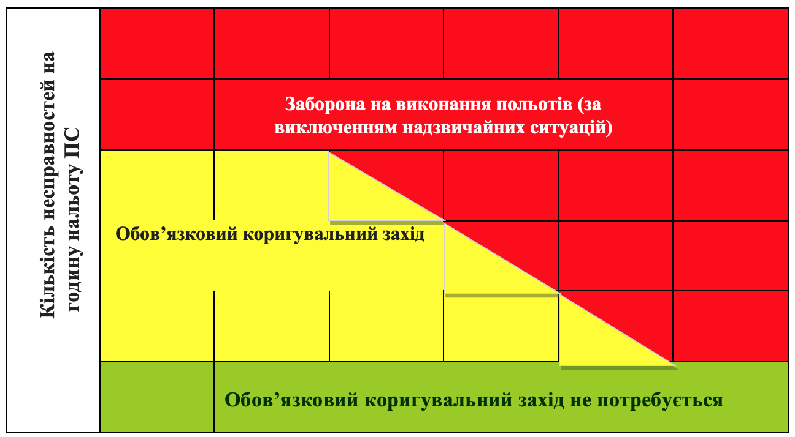Час знаходження ПС під впливом несправностей (ПС x Використання під впливом несправностей x Час)
5) дати набрання чинності.
21.А.4. Взаємодія між розробником та виробником
За потреби, кожен утримувач сертифіката типу (обмеженого сертифіката типу, додаткового сертифіката типу, MTSO схвалення, схвалення зміни типової конструкції або схвалення проекту ремонту) має забезпечувати необхідне співробітництво між організацією розробника та організацією виробника, щоб досягти:
(a) задовільного рівня взаємодії між розробником та виробником, як це вимагається в параграфі 21.А.122, підпунктах 21A.130(b)(3) та (4), параграфі 21.А.133 або підпунктах 21.А.165(с)(2) та (3) цих Правил (за потреби); та
(b) належного супроводження підтримання льотної придатності виробу, компонента або обладнання. AMC
AMC 21.A.4. Передача інформації щодо прийнятності і статусу схвалення від організацій розробника до організацій виробника
Якщо є потреба у наданні (зазвичай, за межі організації розробника) документального підтвердження щодо схвалених даних з розробки (або пов'язаних з ними даних щодо льотної придатності), має надаватися нижчезазначена мінімальна інформація. Таке документальне підтвердження необхідно мати компанії, яка має схвалення (військове) організації виробника (Military Production Organisation Approval, далі MPOA), для здійснення повноважень, зазначених в 21.A.163(с).
Процедури, пов'язані з використанням форм або інших електронних засобів для надання цієї інформації мають бути узгоджені з компетентним органом.
Інформація, що має надаватися:
Найменування компанії: найменування відповідальної організації розробника (МТС, MSTC, схвалення проєкту ремонту або незначної зміни конструкції, утримувач MTSO схвалення), яка видає інформацію.
Дата: дата випуску інформації.
Прийнятність: зазначати конкретні вироби або комплектувальні вироби (у випадку MTSO схвалення), для яких дані схвалені.
Ідентифікація: код партії компонента або обладнання. Перевага має надаватися використанню маркування відповідно до Каталогу ілюстрованих вузлів та деталей (Illustrated Parts Catalogue, далі ‒ IPC). Як альтернативу, можна вказувати посилання на інструкцію з підтримання льотної придатності. Мають враховуватись вимоги щодо маркування, зазначені в Главі Q Розділу А Частини-21В.
Опис: надаються назва або опис компонента чи документа. Для компонента або обладнання, перевага має надаватися використанню маркування відповідно до IPC. Опис має містити посилання на маркування будь-якого застосовного MTSO схвалення або Українського військового схвалення компонента (Ukrainian Military Part Approval, далі ‒ UKRMPA), або все ще чинних попередніх національних схвалень.
Мета надання даних: причина надання інформації має бути зазначена утримувачем схвалення конструкції.
Приклади:
а) надання організації виробника схвалених даних з розробки, щоб дозволити виробництво (AMC № 1 до 21.A.133(b) і (с));
b) інформація щодо прийнятності установлення (взаємозамінні компоненти, ремонт, модифікація, тощо);
с) дозвіл прямих поставок (AMC №1 21.A.133(b) і (с)).
Якщо дані містять інформацію щодо обґрунтування зміни або ремонту, тоді мають надаватися посилання на схвалення рівня ПС (робиться посилання на схвалені MSTC, зміну або ремонт).
Обмеження/Примітки: зазначається будь-яка інформація (безпосередньо або за посиланням на супровідні документи), яка визначає будь-які конкретні дані або обмеження (включаючи специфічні вимоги щодо імпорту), необхідні організації виробника для заповнення UA MAR Form 1.
Схвалення: надається довідкова інформація щодо схвалення даних (документ компетентного органу або повноваження схвалення (військового) організації розробника (Military Design Organisation Approval, далі ‒ MDOA)
Підписи уповноважених осіб: прізвище та рукописний або електронний підпис особи, яка має письмовий дозвіл від організації розробника (як зазначено у процедурах, узгоджених з компетентним органом).
Глава В – Сертифікати типу (військові) та обмежені сертифікати типу (військові)
21.А.11. Сфера застосування
У цій главі встановлюється процедура видачі сертифікатів типу (військових) для виробів (терміни “авіаційний виріб” або “виріб”, які використовуються у цих Правилах, застосовуються до повітряних суден, двигунів, повітряних гвинтів та допоміжних силових установок (APU)) та обмежених сертифікатів типу (військових) для повітряних суден, а також встановлюються права і зобов’язання заявників на отримання та утримувачів таких сертифікатів.
21.А.13. Прийнятність заявника
Будь-яка організація, яка довела або доводить свою здатність згідно з положеннями параграфа 21.А.14 цих Правил, може бути заявником на отримання сертифіката типу або обмеженого сертифіката типу відповідно до умов, встановлених у цій главі.
21.А.14. Доведення здатності
(a) Будь-яка організація, що подає заявку на отримання сертифіката типу (військового) (Military Type certificate, далі ‒ MTC) або обмеженого сертифіката типу (військового) (Military Restricted Type certificate, далі ‒ MRTC), має доводити свою здатність шляхом отримання схвалення організації розробника (військового) (military design organisation approval, далі ‒ MDOA), яке видається компетентним органом згідно з положеннями глави J цих Правил.
(b) Шляхом відступу від положень пункту (a) (як альтернативна процедура для доведення своєї здатності) заявник може звертатися до компетентного органу за угодою щодо використання процедур, які визначають особливу методику розроблення, ресурси та послідовність заходів, необхідних для дотримання вимог цих Правил, коли це стосується: AMCGM
AMC 21.A.14(b). Альтернативні процедури
Альтернативні процедури ‒ це прийнятні методи доведення здатності здійснення розробки у випадках, зазначених у 21.A.14, 21.A.112B або 21.A.432B.
Така концепція полягає у здійсненні (у рамках конкретних проєктів) процедур, що вимагаються в Глави J Розділу A Частини-21В, для забезпечення виконання заявником відповідних заходів (за винятком пов’язаних з вимогами щодо самої організації), передбачених компетентним органом. Встановлення таких альтернативних процедур може розглядатися як початковий етап виконання процедур Глави J заявником, що пізніше дозволить йому (за бажанням) перейти до повного виконання вимог Глави J шляхом додавання відсутніх елементів.
1. Обсяг та зміст.
1.1. Керівництво з процедур (як альтернатива MDOA) має містити інформацію щодо особливої методики розроблення, ресурсів та послідовності заходів для конкретних проєктів (з урахуванням вимог Частини-21В).
1.2. Такі процедури мають бути стислими та обмежуватись інформацією, необхідною для здійснення якісного та належного контролю за діяльністю з розробки заявниками/утримувачами і компетентним органом.
2. Керування процесом отримання MTC (MSTC)
2.1. Програма сертифікації: дивись AMC 21.A.20(b) щодо питань отримання MTC та AMC 21.A.114 щодо питань отримання MSTC.
2.2. Документи відповідності: дивись AMC 21.A.20(с).
3. Керування змінами конструкції.
3.1. Схвалення змін типової конструкції, проєктів ремонтів та виробничих відхилень від схвалених даних з розробки.
Заявник на отримання MTC або MSTC має подавати компетентному органу прийнятні процедури для класифікації та схвалення змін типової конструкції (дивись підпункти 3.2 і 3.3), проєктів ремонтів та виробничих відхилень від схвалених даних з розробки (дивись підпункт 3.4).
3.2. Класифікація.
3.2.1. Зміст.
У процедурі має бути враховано такі питання:
ідентифікація змін типової конструкції;
класифікація щодо впливу на льотну придатність;
зміни типової конструкції, ініційовані субпідрядниками;
документи щодо обґрунтування класифікації;
уповноважені підписанти (особи з правом підпису).
Критерії, які використовуються для класифікації, мають відповідати вимогам 21.A.91 і бути належно поясненими.
3.2.2. Ідентифікація змін типової конструкції.
У процедурі має бути зазначено, як ідентифікуються:
головні зміни типової конструкції;
такі незначні зміни типової конструкції, якщо необхідно виконувати додаткові роботи для доведення відповідності вимогам льотної придатності;
інші незначні зміни типової конструкції, які не потребують додаткового доведення відповідності.
3.2.3. Класифікація за впливом на льотну придатність.
У процедурі має бути зазначено, як аналізується вплив на льотну придатність від самого початку (з урахуванням застосовних вимог льотної придатності).
Якщо до зміни не застосовуються конкретні вимоги льотної придатності, вищезазначений аналіз має проводитися на рівні компонента або системи (яких стосується зміна і до яких застосовуються конкретні вимоги льотної придатності).
3.2.4. Контроль за змінами типової конструкції, ініційованими субпідрядниками.
У процедурі має бути зазначено (безпосередньо або через посилання до письмових процедур), як саме здійснюється контроль за змінами типової конструкції, ініційованими субпідрядниками.
3.2.5. Документи щодо обґрунтування класифікації.
Всі рішення щодо класифікації змін типової конструкції має бути задокументовано і схвалено компетентним органом. Зазначене може бути виконано у формі протоколу наради з цього питання або офіційного запису у журналі.
3.2.6. Уповноважені підписанти (особи з правом підпису).
У процедурі має бути ідентифіковано осіб, уповноважених підписувати запропоновану класифікацію (перед поданням для схвалення компетентному органу).
3.3. Схвалення змін типової конструкції.
3.3.1. Зміст.
У процедурі має бути враховано такі питання:
документи відповідності;
процес схвалення;
уповноважені підписанти (особи з правом підпису).
3.3.2. Документи відповідності.
Для головних і таких незначних змін типової конструкції, які потребують проведення додаткових заходів щодо доведення відповідності застосовним вимогам льотної придатності, мають бути розроблені документи відповідності (згідно з АМС 21.A.20(c)).
3.3.3. Процес схвалення.
А. Для отримання схвалення головних змін типової конструкції має бути розроблено програму сертифікації, як це визначено в AMC 21.A.97.
В. Для головних і таких незначних змін типової конструкції, що потребують проведення додаткових заходів щодо доведення відповідності застосовним вимогам льотної придатності, у процедурі має бути визначено документ, щоб сприяти здійсненню процесу схвалення.
Такий документ має містити:
ідентифікацію зміни та її короткий опис і класифікацію;
застосовні вимоги льотної придатності;
посилання до документів відповідності;
впливи (якщо такі є) на обмеження та схвалені документи;
уповноважені підписанти (особи з правом підпису).
С. Для інших незначних змін у процедурі має бути визначено механізми:
ідентифікації зміни;
подання документів щодо зміни компетентному органу для схвалення.
3.3.4. Уповноважені підписанти (особи з правом підпису).
У процедурі має бути ідентифіковано осіб, уповноважених підписувати документи щодо зміни перед їх поданням компетентному органу для схвалення.
3.4. Ремонти та виробничі відхилення від схвалених даних з розробки.
Відповідно до положень підпунктів 3.2 та 3.3 цього пункту має бути розроблено процедуру щодо класифікації і схвалення ремонтів та ненавмисних відхилень від схвалених даних з розробки, що виникають в процесі виробництва (дозволені відхилення або невідповідності). Для ремонтів процедуру має бути розроблено згідно з положеннями Глави М Розділу А Частини-21В і пов’язаними АМС або GM.
4. Випуск інформації та інструкцій для власників виробів.
4.1. Загальні положення.
Інформація або інструкції (випущені утримувачем MTC, MSTC, схвалення змін типової конструкції, схвалення проєкту ремонту) призначаються для надання власникам виробу всіх необхідних даних щодо впровадження змін до виробу або його ремонту, або проведення його перевірки.
Таку інформацію (або інструкції) може бути видано у форматі сервісного бюлетеня (Service Bulletin, далі ‒ SB), як визначено у розділах S1000D (специфікація на випуск технічних публікацій з використанням бази даних загального доступу, застосовується при підготовці та випуску технічних публікацій на деякі види військової та цивільної техніки в країнах НАТО, Європи і Північної Америки), або у форматах Керівництв з ремонту конструкцій (Structural Repair Manuals), Керівництв з технічного обслуговування (Maintenance Manuals), Керівництв з експлуатації двигунів та повітряних гвинтів (Engine and Propeller Manuals) тощо.
Має існувати процедура відпрацювання вищезазначених документів, яка включає розробку, виготовлення та експертизу.
4.2. Процедура.
У процедурі має бути враховано такі питання:
відпрацювання;
верифікація технічної сумісності з відповідними схваленими змінами, ремонтами або схваленими даними, включаючи ефективність, опис, впливи на льотну придатність (особливо коли змінюються обмеження);
верифікація доцільності під час практичних застосувань.
У процедурі має бути визначено осіб, уповноважених підписувати інформацію або інструкції перед поданням компетентному органу для схвалення.
У процедурі має бути зазначено інформацію або інструкції, які відпрацьовано субпідрядниками або постачальниками та визнано застосовними (до своїх виробів) утримувачами MTC, MSTC, схвалення змін типової конструкції, схвалення проєкту ремонту.
4.3. Заява.
Інформацію та інструкції має бути схвалено компетентним органом (з виданням відповідної заяви).
5. Зобов’язання, про які йдеться в 21.A.44 (для утримувача MTC), 21.A.118A (для утримувача MSTC) або 21.A.451 (для утримувача схвалення проєкту ремонту).
Заявник має розробляти необхідні процедури, щоб продемонструвати компетентному органу, як саме будуть виконуватися зобов’язання (відповідно до положень 21.A.44, 21.A.118A або 21.A.451).
6. Контроль за розробкою субпідрядників.
Заявник має розробляти необхідні процедури, щоб продемонструвати компетентному органу, як саме він буде здійснювати контроль за розробкою субпідрядників.
GM 21.A.14(b). Прийнятність альтернативних процедур
Організації розробників, схвалені відповідно до положень Глави J Розділу A Частини-21В, мають застосовувати стандартний підхід для отримання МТС, MSTC, схвалення головних змін типової конструкції або схвалення головного проєкту значного ремонту (за винятком погоджених з компетентним органом випадків відповідно до положень 21.A.14, 21.A.112B та 21.A.432B).
Альтернативні процедури (як визначено в AMC 21.A.14(b)) мають застосовуватися лише у випадках, якщо компетентний орган вважає такий шлях більш доцільним для отримання МТС, MSTC, схвалення змін типової конструкції та схвалення проєкту ремонту.
1) виробів простої або обмеженої в обсязі використання конструкції;
2) початкового етапу щодо процесу схвалення організації розробника (військового) або обмеженої тривалості заходів з розробки;
3) виробів, для яких основна частина заходів щодо сертифікації типової конструкції була вже схвалена компетентним органом;
4) зарезервовано.
(с) Шляхом відступу від положень пунктів (а) та (б) будь-яка державна організація, що подає заявку для отримання сертифіката типу або обмеженого сертифіката типу, може доводити свою здатність, маючи чинну угоду, схвалену компетентним органом відповідно до положень параграфа 21.А.2 цих Правил, з організацією розробника, яка має доступ до даних типової конструкції. В угоді має бути детально розписано, як саме делеговані повноваження на здійснення заходів та зобов'язання дають можливість державній організації у співпраці з вищезазначеною організацією розробника, дотримуватися вимог глави J цих Правил, а також доводити відповідність вимогам параграфа 21.A.44 цих Правил.AMC
АМС 21.A.14(с). Альтернативне доведення
У деяких країнах компетентним органом схвалюється державна організація для виконання обов'язків утримувача MTC. Така державна організація (яка не має схвалення організації розробника) може подавати заявку на отримання сертифіката типу (обмеженого сертифіката типу). У такому випадку вона (відповідно до положень 21.A.2) має укласти угоду з організацією розробника, яка має доступ до даних типової конструкції (щоб забезпечувати здійснення конкретних заходів та зобов'язань). Під час виконання зазначених у 21.A.44 зобов'язань слід враховувати, що будь-які альтернативні процедури для створення системи забезпечення розробки мають бути прийнятними для компетентного органу.
21.А.15. Заявка
(a) Заявка на отримання сертифіката типу або обмеженого сертифіката типу має робитися за формою та у спосіб, встановлені компетентним органом.AMCGM
АМС 21.A.15(а).
Якщо для виробу вже передбачені дані експлуатаційної придатності (Operational Suitability Data, далі ‒ OSD) та/або їх наявність вимагається національним законодавством, заявку (про яку йдеться у главах B, D або E Частини-21В) має бути доповнено заявкою на схвалення OSD.
GM 21.A.15(a). Заявка на отримання MTC
Якщо заявка на отримання MTC (MRTC або MSTC) ґрунтується на сертифікаті типу, виданому відповідно до іншої нормативної бази (такої як EASA), то такий сертифікат типу може містити схвалені OSD. Застосовні OSD будуть залежати від класу ПС щодо таких питань:
1) мінімальні вимоги до змісту програми підготовки пілота для отримання льотного свідоцтва, яке надає право на виконання польотів на ПС визначеного рейтингу типу;
2) визначення можливості підтвердження вихідних даних щодо ПС, необхідних для об'єктивної перевірки на відповідність тренажера (пов'язаного із підготовкою пілота для отримання льотного свідоцтва, яке надає право на виконання польотів на ПС визначеного рейтингу типу), або попередніх даних, необхідних для його (тренажера) проміжної перевірки на відповідність;
3) мінімальні вимоги до змісту програми підготовки персоналу, який засвідчує технічне обслуговування ПС визначеного рейтингу типу;
4) визначення даних (специфічних для ПС визначеного типу) для підготовки членів екіпажу (окрім пілотів);
5) основний мінімальний перелік обладнання (Master Minimum Equipment List, далі – MMEL) (це перелік бортових систем, приладів та обладнання, які можуть не працювати під час польоту на конкретному типі ПС);
6) інші, пов'язані з ПС визначеного типу, складові експлуатаційної придатності.
Заявка на схвалення таких OSD необхідна для їх валідації в рамках визначення військового типу і військової експлуатації ПС, з урахуванням різниці в припущеннях (які були підставою для раніше схвалених OSD), а також сумісність з підготовкою льотних екіпажів (включаючи членів екіпажу, які мають дотримуватись вимог льотної придатності, наприклад, бортовий оператор вантажно-розвантажувальних робіт) та персоналу, який засвідчує технічне обслуговування.
(b) До заявки на отримання сертифіката типу або обмеженого сертифіката типу повітряного судна мають додаватися креслення цього повітряного судна у трьох проекціях та попередні основні дані, включаючи заявлені експлуатаційні характеристики та обмеження.
(c) До заявки на отримання сертифіката типу двигуна або повітряного гвинта мають додаватися креслення загального виду, опис особливостей конструкції, експлуатаційні характеристики та заявлені експлуатаційні обмеження двигуна або повітряного гвинта.
21.А.16А. Норми льотної придатності
Компетентний орган може схвалювати використання застосовних норм льотної придатності як стандартних засобів для доведення відповідності виробів, компонентів та обладнання основним вимогам додатка А Основного рамкового документа (Basic Framework Document).Такі норми мають бути досить деталізованими та конкретними, щобнадавати заявникам інформацію про умови, на підставі яких буде видано сертифікати.GM
GM 21.A.16A. Норми льотної придатності
У довіднику “Європейські критерії до сертифікації військової льотної придатності” (European Military Airworthiness Certification Criteria, далі – EMACC) ідентифікуються норми льотної придатності (які визначено в “Європейських документах військової льотної придатності” (European Military Airworthiness Documents-1, далі – EMAD-1): абревіатури та визначення), які можуть використовуватися для доведення відповідності виробів.
21.А.16В. Спеціальні умови
GMGM 21.A.16B. Спеціальні умови
У 21.A.16B представлено 3 категорії спеціальних умов:
1) нові або незвичайні особливості конструкції;
2) нетрадиційне використання виробу;
3) досвід експлуатації показав можливість виникнення небезпечних умов.
Проте, потреба в спеціальній умові з еквівалентним рівнем безпеки (що ґрунтується на досвіді експлуатації) має оцінюватися шляхом використання таких критеріїв:
вираз “небезпечні умови” використовується в GM 21.A.3B(b), щоб обґрунтувати підстави для видання директиви льотної придатності;
вираз “продовження безпечного польоту і здійснення безпечної посадки” означає здатність продовження керованого польоту і здійснення посадки (можливо із застосуванням аварійних процедур) без потреби у використанні пілотом особливої майстерності або надзвичайних зусиль. Деякі пошкодження ПС можуть бути пов'язані з несправним станом, що виникнув під час польоту або посадки.
(a) Компетентний орган має схвалювати для виробу спеціальні деталізовані технічні умови (далі – спеціальні умови), якщо пов’язані з цим виробом норми льотної придатності не містять належних або відповідних стандартів безпеки, тому що:
1) виріб має нові або незвичайні особливості конструкції, пов’язані з методикою розробки, на яких ґрунтуються застосовні норми льотної придатності; або
2) виріб призначено для нетрадиційного використання; або
3) досвід експлуатації інших подібних виробів показав можливість виникнення небезпечних умов; або
4) для функції (функцій) виробу, що розглядається, не має норм льотної придатності.
(b) Спеціальні умови містять такі стандарти безпеки, які компетентний орган вважає необхідними, щоб встановити рівень безпеки, еквівалентний встановленому застосовними нормами льотної придатності, або рівню прийнятної безпеки, якщо норм льотної придатності немає для виробу, що розглядається.
21.А.17А. Сертифікаційний базис типу
GMGM 21.A.17A. Сертифікаційний базис типу
У довіднику EMACC надаються рекомендації щодо приведення у відповідність критеріїв для сертифікаційного базису типу, що ґрунтується на передбачуваному військовому використанні виробу.
a) Сертифікаційний базис типу, що заявляється для видачі сертифіката типу або обмеженого сертифіката типу, має складатися із:
1) застосовних норм льотної придатності, що встановлюються відповідно до положень параграфа 21.А.16А цих Правил, що є чинними на дату подання заявки на отримання цього сертифіката, якщо:
(i) інше не визначено компетентним органом; або
(ii) заявник не обирає або не вимагається, відповідно до пункту (d) доведення відповідності поправкам, що набули чинності після подання заявки на отримання сертифіката типу;
2) будь-якої спеціальної умови, що передбачено згідно з положеннями пункту 21.А.16В(а) цих Правил;
3) призначених для певної мети критеріїв, визначених у “Сертифікаційних критеріях Європейської військової льотної придатності” (European Military Airworthiness Certification Criteria (EMACC)), що ґрунтуються на військовому використанні виробу, якщо немає відповідних норм льотної придатності.
(b) Зарезервовано.
(c) Зарезервовано.
(d) Якщо заявник обирає доведення відповідності поправкам до норм льотної придатності, які є чинними після подання заявки на отримання сертифіката типу, заявник також має доводити відповідність будь-якій іншій поправці, яку компетентний орган вважає безпосередньо пов’язаною з ними.
(e) Спеціальні умови відповідно до положень параграфа 21.А.16В цих Правил можуть застосовуватися, з огляду на призначене військове використання повітряного судна.
21.А.17В. Зарезервовано
21.А.18. Призначення застосовних вимог захисту довкілля
Застосовні вимоги захисту довкілля мають встановлюватися під час сертифікації виробу з урахуванням потреб військової експлуатації.
21.А.19. Зміни, що вимагають видачі нового сертифіката типу
Будь-який заявник, який пропонує змінити виріб, має подавати заявку на отримання нового сертифіката типу, якщо компетентний орган вважає зміну конструкції, конфігурації, потужності, тяги або маси настільки значною, що виникає необхідність проведення по суті повного дослідження відповідності застосовному сертифікаційному базису типу.
21.А.20. Відповідність сертифікаційному базису типу та вимогам захисту довкілля (де застосовується)
(a) Заявник на отримання сертифіката типу або обмеженого сертифіката типу має доводити відповідність застосовному сертифікаційному базису типу та вимогам захисту довкілля (де застосовується) і надавати компетентному органу методи, за допомогою яких таку відповідність доведено.
(b) Заявник має надавати компетентному органу програму сертифікації, яка детально описує методи для доведення відповідності. Цей документ має оновлюватися (за потреби) під час сертифікації.AMCGM
AMC 21.A.20(b). Програма сертифікації
1. Для конкретного проєкту і в рамках технічного ознайомлення, заявник надає програму сертифікації, яка включає:
1.1 план, що містить таку інформацію:
опис проєкту та види експлуатації (які передбачаються);
запропоновані вимоги льотної придатності (можливо отримані від застосовних норм льотної придатності), спеціальні умови, еквівалентні дані з безпеки та вимоги захисту довкілля (де застосовується);
опис процедури доведення відповідності за допомогою запропонованих методів доведення відповідності (див. нижче додаток до цього АМС щодо кодів методів доведення відповідності) та будь-якого обраного керівного матеріалу. Опис методів доведення відповідності має бути достатнім для визначення того, що всі необхідні дані буде отримано та відповідність може бути доведено;
контрольний перелік відповідності, який охоплює кожен пункт сертифікаційного базису типу, та застосовних (до цього проєкту) вимог захисту довкілля, з посиланням на методи доведення відповідності та пов'язані документи відповідності;
ідентифікація відповідного персоналу, який (у взаємодії з компетентним органом) приймає рішення, що впливають на льотну придатність та захист довкілля;
1.2 план - графік робіт, що включає основні етапи по проєкту.
2. Якщо необхідна інформація недоступна на початку проєкту, програму сертифікації може бути розроблено поетапно.
3. Для простого проєкту програму сертифікації може бути подано разом із заявкою.
4. Програму сертифікації може бути складено з частин, які можуть оновлюватися незалежно одна від одної.
Додаток до AMC 21.A.20(b) – Приклади кодів методів доведення відповідності
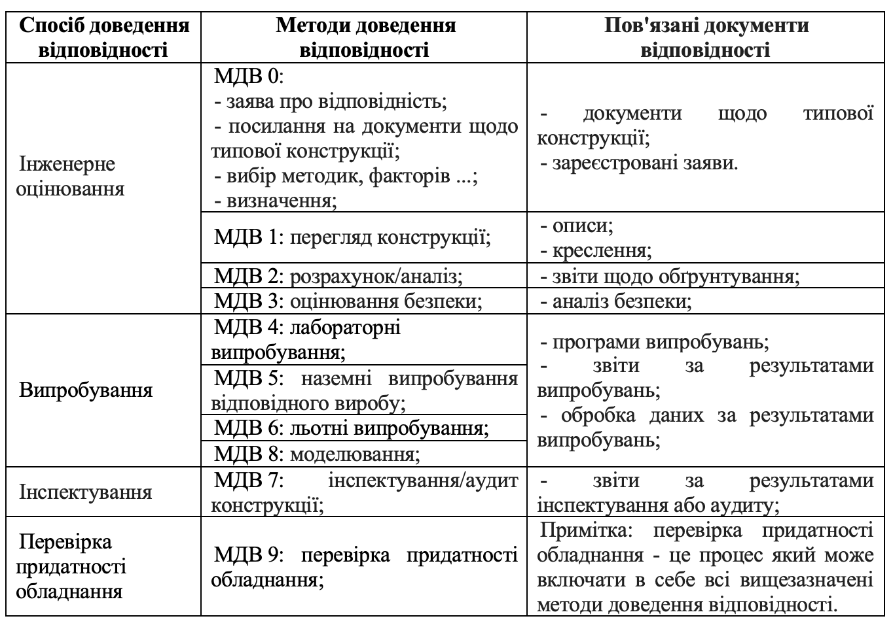GM 21.A.20(b). Оновлення програми сертифікації
Заявник має дотримуватися програми сертифікації на всіх етапах реалізації проєкту та надавати всі зміни до неї компетентному органу.
(c) Заявник має обліковувати результати обґрунтування відповідності у документах відповідності, що вимагаються програмою сертифікації, яка розробляється відповідно до положень пункту (b).AMC
AMC 21.A.20(с). Документи відповідності
1. Документи відповідності складаються з одного або декількох звітів, креслень, специфікацій, розрахунків, аналізу тощо і містять інформацію щодо методів, за допомогою яких доводиться відповідність із застосовним сертифікаційним базисом типу і вимогами захисту довкілля (де застосовується).
2. Кожен документ відповідності, як правило, має містити:
належний зв'язок з відповідною програмою сертифікації;
посилання на технічні вимоги щодо сертифікації, спеціальні умови або вимоги захисту довкілля (де застосовується), про які йдеться в документі;
дані, що доводять відповідність;
заяву заявника, що такий документ забезпечує доведення відповідності вимогам (про які йдеться в документі);
відповідні підписи уповноважених осіб.
3. Для кожного документу відповідності має бути надано номер і зазначено дату видання. Має бути встановлено контроль за різними виданнями документа.
(d) Заявник має зробити заяву, що ним доведено відповідність застосовному сертифікаційному базису типу та вимогам захисту довкілля (де застосовується) згідно з програмою сертифікації, яка розробляється відповідно до положень пункту (b).GM
GM 21.A.20(d). Підсумкова заява
Всі заходи, пов’язані з доведенням відповідності, має бути завершено до видання підсумкової заяви про відповідність (декларації про відповідність), про яку йдеться у 21.A.20(d).
За узгодженням із компетентним органом, деякі документи відповідності можуть бути представлені після видання підсумкової заяви про відповідність, про яку йдеться у 21.A.20(d).
(e) Якщо заявник є утримувачем відповідного схвалення організації розробника, заява, про яку йдеться в пункті (d), має робитися відповідно до положень глави J цих Правил.
21.А.21. Видача сертифіката типу
Заявник може отримати сертифікат типу виробу, що видається компетентним органом, після:
(a) доведення своєї здатності відповідно до положень параграфа 21.А.14 цих Правил;
(b) надання заяви, про яку йдеться у пункті 21.А.20(d) цих Правил; та
(c) доведення того, що:
1) виріб, який підлягає сертифікації, відповідає застосовному сертифікаційному базису типа та вимогам захисту довкілля (де застосовується), визначеним згідно з положеннями параграфів 21.А.17А та 21.А.18 (де застосовується) цих Правил;
2) будь-які умови льотної придатності, що не дотримуються, компенсуються за рахунок умов, які забезпечують еквівалентний рівень безпеки;
3) жодна особливість чи характеристика не роблять цей виріб небезпечним для використання;
4) заявник на отримання сертифіката типу чітко заявив, що він готовий дотримуватися вимог параграфа 21.А.44 цих Правил.
(d) Підтвердження наявності (під час отримання сертифіката типу повітряного судна) у встановлених на повітряному судні двигуна та/або повітряного гвинта сертифікатів типу, виданих або визнаних відповідно до цих Правил, якщо двигун та повітряний гвинт не повністю охоплені рівнем сертифіката типу повітряного судна.
21.А.23. Видача обмеженого сертифіката типу
(a) Для повітряного судна, що не відповідає умовам пункту 21.А.21(с) цих Правил, заявник може отримати обмежений сертифікат типу, що видається компетентним органом, після:
1) доведення відповідності застосовним вимогам захисту довкілля (де застосовується) та встановленому компетентним органом відповідному сертифікаційному базису типу, який забезпечує прийнятну безпеку, якщо можуть бути накладені обмеження щодо призначеного використання повітряного судна;
2) чіткої заяви, що він готовий дотримуватися вимог параграфа 21.А.44 цих Правил.
(b) У двигуна та/або повітряного гвинта, встановлених на повітряному судні, мають бути:
1) сертифікати типу, видані або визнані згідно з цими Правилами; або
2) доведена відповідність сертифікаційному базису типу, що необхідно для забезпечення безпечного польоту повітряного судна.
21.А.31. Типова конструкція
(a) Типова конструкція має складатися з:
1) креслень і специфікацій, а також переліку таких креслень і специфікацій, необхідних для визначення конфігурації та особливостей конструкції зазначеного виробу, щоб доводити відповідність застосовному сертифікаційному базису типу і вимогам захисту довкілля (де застосовується);
2) інформації щодо матеріалів та їх обробки, технології виготовлення та складання виробу, яка необхідна для забезпечення відповідності виробу;
3) схваленого розділу обмежень льотної придатності в інструкціях з підтримання льотної придатності, як визначено застосовними нормами льотної придатності;
4) будь-яких інших даних, необхідних, щоб шляхом порівняння давати можливість визначення льотної придатності, параметрів шуму, викидів палива та емісії вихлопних газів (де застосовується) для пізніше виготовлених виробів того самого типу.
(b) Кожна типова конструкція має бути належним чином ідентифікована.
21.А.33. Дослідження та випробування
GMGM 21.A.33. Дослідження та випробовування
Вимоги, зазначені в 21.А.33(а), не будуть перешкоджати заявнику (який звертається до компетентного органу за дозволом) здійснювати льотні або інші випробування виробу за конкретними напрямками під час його розробки і до повного визначення його типової конструкції (за умови, що заяву про відповідність може бути видано для всіх застосовних сертифікаційних критеріїв). Проте, у випадку проведення льотного випробування, перед проведенням випробувань за участі компетентного органу заявник має виконати випробування виробу за визначеною тематикою, щоб переконатися, що ніякі особливості виробу не заважають безпечному проведенню потрібного оцінювання. Якщо типова конструкція повністю визначена, компетентний орган може вимагати повторного проведення будь-яких випробувань, щоб переконатися, що наступні зміни не вплинули негативно на висновки будь-яких попередніх оцінювань. Заява про відповідність положенням 21.A.33(b) також вимагається для вищезазначених випробувань.
(a) Заявник має виконувати всі перевірки та випробування, необхідні для доведення відповідності застосовному сертифікаційному базису типу та вимогам захисту довкілля (де застосовується).
(b) Перед проведенням кожного випробування, які вимагаються в пункті (а), заявник має визначати:
1) для кожного випробувального зразка належну відповідність:
(i) матеріалів та їх обробки ‒ технічним умовам типової конструкції, що пропонується;
(ii) компонентів, установлених на виробах, ‒ кресленням типової конструкції, що пропонується;
(iii) процесів виготовлення, побудови та збирання ‒ зазначеним у типовій конструкції, що пропонується; та
2) що випробувальне устаткування та всі вимірювальні прилади, що використовуються для випробувань, є прийнятними для випробування та відповідно відкалібровані.
(c) Заявник має давати можливість компетентному органу проводити будь-який огляд, необхідний для перевірки відповідності вимогам пункту (b).
(d) Заявник має давати можливість компетентному органу переглядати будь-який звіт та проводити будь-який огляд, виконувати будь-яке льотне або наземне випробування (або спостерігати за ним), необхідне для перевірки обґрунтованості заяви про відповідність (що надає заявник згідно з положеннями пункту 21.А.20(b) цих Правил) та для визначення того, що жодна особливість чи характеристика не роблять цей виріб небезпечним для використання, щодо якого необхідна сертифікація.
(e) Для випробувань, що виконує компетентний орган або за якими він спостерігає згідно з положеннями пункту (d):
1) заявник має подавати компетентному органу заяву про відповідність вимогам пункту (b); та
2) будь-яка пов’язана з випробуванням зміна, що вплинула б на заяву про відповідність, не може вноситися до виробу, компонента чи обладнання в період від дати доведення відповідності вимогам пункту (b) до дати представлення для випробувань компетентному органу.
21.А.35. Льотні випробування
GMGM 21.A.35. Льотні випробування
Детальна інформація щодо проведення льотних випробувань міститься у застосовних сертифікаційних критеріях і GM.
(a) Льотні випробування з метою отримання сертифіката типу мають проводитися згідно з умовами для таких льотних випробувань, схваленими компетентним органом.
(b) Заявник має проводити всі льотні випробування, які компетентний орган вважає необхідними:
1) щоб визначати відповідність застосовному сертифікаційному базису типу та вимогам захисту довкілля (де застосовується); та
2) щоб визначати, чи існує достатня впевненість у тому, що повітряне судно, його компоненти та обладнання є надійними і функціонують належним чином.GM
GM 21.A.35(b)(2). Цілі та зміст випробувань на функціональність та надійність
1. Цілі.
Цілі таких випробувань полягають в тому, щоб піддавати ПС широкому спектру застосувань (включаючи тренувальні польоти), які можуть мати місце під час звичайної експлуатації, та надати гарантії, що ПС виконує (і буде виконувати в подальшому) передбачені для нього функції відповідно до стандартних сертифікаційних вимог.
2. Зміст випробувань на функціональність та надійність.
Програма випробувань має охоплювати як умови звичайної експлуатації, так і умови деяких змодельованих нештатних ситуацій. Деталі програми узгоджуються з компетентним органом до початку випробувань.
Можливе поєднання таких випробувань з будь-якими іншими, що вимагаються для доведення відповідності застосовним сертифікаційним критеріям. Таке узгоджуватиметься з компетентним органом у кожному конкретному випадку.
Умови випробувань (за можливості) мають визначатися спільно із експлуатуючою організацією.
Значна частина польотів має виконуватися на одному ПС. Польоти мають виконуватися (за визначеним на тривалий строк планом) на ПС, конструкція якого максимально наближена до остаточної типової конструкції і, який експлуатується в умовах, наближених до реальної експлуатації. Польоти мають плануватися з урахуванням характерних зовнішніх умов експлуатації та типів аеродромів.
(c) Зарезервовано.
(d) Зарезервовано.
(e) Зарезервовано.
(f) Льотні випробування, про які йдеться у підпункті (b)(2), мають охоплювати:
1) щонайменше 300 годин нальоту для повітряних суден з газотурбінними двигунами такого типу, що раніше не використовувався на сертифікованому повітряному судні. Для повітряних суден із повним комплектом газотурбінних двигунів, які відповідають сертифікатам типу повітряного судна (двигуни такого типу, що раніше використовувався на сертифікованому повітряному судні), кількість льотних годин узгоджується з компетентним органом; таGM
GM 21.A.35(f)(1). Тривалість польотів під час випробувань на функціональність та надійність
Усі польоти, що виконані з двигунами і відповідними системами, які незначно відрізняються від кінцевого варіанту, що сертифікується, можуть іти в рахунок 300 годин нальоту для планера відповідно до 21.A.35(f)(1). Принаймні 150 з 300 годин нальоту має бути проведено на спеціально призначеному для проведення льотних випробувань ПС серійної конфігурації. Вимога щодо необхідності 300 льотних годин застосовується кожен раз, якщо встановлюється новий газотурбінний двигун (інший, ніж зазначений у сертифікаті типу ПС), незалежно від того, чи комбінація планер/двигун потребує нового сертифіката типу, чи має бути проведено сертифікацію за процедурою внесення змін до існуючого сертифіката типу.
2) щонайменше 150 годин нальоту для всіх інших повітряних суден або як узгоджено компетентним органом.GM
GM 21.A.35(f)(2). Тривалість польотів під час випробувань на функціональність та надійність
Усі польоти, що виконані на ПС, конструкція якого незначно відрізняється від кінцевого варіанту, що сертифікується, може зараховуватися до 150 годин нальоту для планера, які вимагаються в 21.A.35(f)(2).
21.А.41. Сертифікат типу та обмежений сертифікат типу
Сертифікат типу та обмежений сертифікат типу розглядаються такими, що включають типову конструкцію, експлуатаційні обмеження, перелік даних сертифіката типу щодо льотної придатності, застосовний сертифікаційний базис та вимоги захисту довкілля (де застосовується), відповідно до яких компетентний орган констатує доведення відповідності, та будь-які інші умови або обмеження, встановлені для виробу в застосовних вимогах льотної придатності та вимогах захисту довкілля (де застосовується).
21.А.42. Інтегрування
GMGM 21.A.42. Інтегрування
З урахуванням положень 21.A.17A, принципи щодо сертифікації типу (військового) ґрунтуються на ієрархії MTC і другорядної сертифікації:
а) MTC використовується тільки для виробів (ПС, двигун або повітряний гвинт).
b) сертифікація компонентів має здійснюватися відповідно до положень Глави К.
Утримувач MTC для повітряного судна має бути відповідальним за інтегрування виробів, засобів ураження та інших систем на повітряному судні, крім схвалених відповідно до положень глави Е.
21.А.44. Зобов’язання утримувача
Кожен утримувач сертифіката типу або обмеженого сертифіката типу має:
(a) взяти на себе зобов’язання, встановлені у параграфах 21.А.3А, 21.А.3В, 21.А.4, 21.А.55, 21.А.57 та 21.А.61 цих Правил і з цією метою має підтримувати відповідність вимогам параграфа 21.А.14; та
(b) визначати маркування відповідно до вимог глави Q.
21.А.47. Передавання
Передавати сертифікат типу або обмежений сертифікат типу можна лише організації, що здатна взяти на себе зобов’язання відповідно до положень параграфа 21.А.44 цих Правил та з цією метою довела свою здатність відповідати критеріям параграфа 21.А.14 цих Правил.
21.А.51. Строк дії та чинність
(a) Сертифікат типу та обмежений сертифікат типу мають видаватися на необмежений строк. Вони мають залишатися чинними за умови, що:
1) утримувач продовжує відповідати положенням цих Правил; та
2) сертифікат не здається або не скасовується відповідно до застосовних адміністративних процедур, встановлених компетентним органом.
(b) Після здачі або скасування сертифікат типу або обмежений сертифікат типу необхідно повернути до компетентного органу.
(c) Утримувач сертифіката типу або обмеженого сертифіката типу повинен негайно інформувати компетентний орган, якщо він більше не здатний виконувати обов’язки утримувача сертифіката типу або обмеженого сертифіката типу (що визначені цими Правилами) щодо одного або декількох типів виробу.
21.А.55. Зберігання документації
Уся відповідна інформація, щодо конструкції, креслення та звіти з випробувань (включаючи звітні матеріали щодо перевірки виробу, який проходив випробування) мають знаходитися в утримувача сертифіката типу або обмеженого сертифіката типу і надаватися компетентному органу на його вимогу. Все це має зберігатися з метою надання інформації, необхідної для забезпечення підтримання льотної придатності та доведення відповідності застосовним вимогам захисту довкілля (де застосовується) виробу.
21.А.57. Керівництва
Утримувач сертифіката типу або обмеженого сертифіката типу має розробляти, зберігати та оновлювати оригінали всіх керівництв для виробу, що вимагаються застосовним сертифікаційним базисом типу та вимогами захисту довкілля (де застосовується), та надавати копії на вимогу компетентного органу.
21.А.61. Інструкції з підтримання льотної придатності
(а) Утримувач сертифіката типу або обмеженого сертифіката типу має надавати щонайменше один комплект повних інструкцій з підтримання льотної придатності кожній організації, що експлуатує одне або кілька повітряних суден, двигунів або повітряних гвинтів, відразу після їх поставки або після видачі першого сертифіката льотної придатності для повітряного судна (на якому установлено ці двигуни та/або повітряні гвинти чи яке поставляється окремо), залежно від того, що настане пізніше. У подальшому надавати ці інструкції на вимогу будь-якій іншій експлуатуючій організації, якій необхідно дотримуватися будь-яких їх положень. Цей комплект повних інструкцій з підтримання льотної придатності містить інформацію щодо конструкції та інструкції з виконання, що розроблені відповідно до застосовного сертифікаційного базису типа. Допускається під час введення виробу в експлуатацію відсутність деяких керівництв або частини інструкцій з підтримання льотної придатності щодо капітального ремонту або інших великих за обсягом форм технічного обслуговування, але вони мають бути наявними, перш ніж будь-який виріб досягне відповідного строку служби чи напрацювання, яке вимірюється в льотних годинах та/або циклах.
(b) Крім того, інформація щодо змін, внесених до інструкцій з підтримання льотної придатності, має надаватися всім організаціям, що експлуатують виріб, а також на вимогу будь-якій іншій експлуатуючій організації, якій необхідно дотримуватися будь-яких цих інструкцій. Компетентному органу має надаватися програма, що демонструє, як саме надаються експлуатуючим організаціям зміни до інструкцій з підтримання льотної придатності
Глава C – Не застосовується
Глава D – Зміни до сертифікатів типу (військових) та обмежених сертифікатів типу (військових)
21.А.90. Сфера застосування
У цій главі встановлюються процедура схвалення змін типових конструкцій і змін сертифікатів типу, а також права і зобов’язання заявників на отримання та утримувачів таких схвалень. У цій главі посилання на сертифікати типу поширюються на сертифікати типу та на обмежені сертифікати типу.
21.А.91. Класифікація змін, що вносяться до типової конструкції
GMGM 21.A.91. Класифікація змін до типової конструкції
1. Мета класифікації.
Класифікація змін до типової конструкції (як головні або незначні) має визначати процедуру їх схвалення, якої необхідно дотримуватися (або процедури відповідно до положень 21.A.95 і 21.A.97 Глави D Розділу А Частини-21В, або процедура відповідно до положень Глави Е Розділу А Частини-21В.
2. Вступ.
2.1. У 21.A.91 Частини-21В пропонуються критерії щодо класифікації змін до типової конструкції як незначні і головні.
і. Цей GM призначається для надання роз'яснення щодо словосполучення з 21.A.91 “відчутний вплив на льотну придатність” виробу, в якому “льотна придатність” інтерпретується в контексті відповідності виробу (який знаходиться в стані для безпечної експлуатації) типовій конструкції. Він (GM) надає додаткові рекомендації щодо оцінювання зміни конструкції, з метою виконання вимог 21.A.91 і 21.A.117, в яких класифікація є першим етапом процедури схвалення.
Примітка: Для класифікації ремонтів див. GM 21.A.435(а).
іі. Незважаючи на те, що у цьому GM надаються роз'яснення щодо класифікації головних змін, а 21.A.91 щодо незначних змін, вони (цей GM і 21.A.91) вважаються повністю сумісними.
2.2. Для MTSO схвалення у 21.A.611 надаються специфічні додаткові вимоги щодо змін конструкції MTSO комплектувальних виробів.
Для допоміжних силових установок (Auxiliary Power Unit, далі ‒ APU) має використовуватися цей GM.
3. Оцінювання змін конструкції для їх класифікації.
3.1. Зміни типової конструкції.
У 21.A.31 визначається з чого складається типова конструкція. Зміна будь-яких даних, що відносяться до зазначених у 21.A.31, вважається зміною типової конструкції.
3.2. Процес класифікації (див. схему в Додатку А цього GM).
Додаток А до GM 21.A.91: Приклади значних змін за напрямками
Нижче наведено декілька прикладів головних змін за напрямками (із застосуванням вимог, зазначених у 21.A.91 і підпункті 3.3 GM 21.A.91). У додатку не надано вичерпного переліку всіх головних змін. Приклади розподіляються за напрямками і застосовні до всіх виробів (ПС, двигунів і повітряних гвинтів). Проте, конкретна зміна може охоплювати більш ніж один напрямок (наприклад, зміна до систем керування двигуном може охоплювати двигун і системи (програмне забезпечення)).
Особи, задіяні в класифікації, завжди мають уявляти собі взаємозв'язок між напрямками та наслідками, який вони будуть мати під час оцінювання впливу зміни (тобто експлуатація і конструкції, системи і конструкції, системи і системи тощо.
Можуть існувати особливі правила, які не враховують роз'яснення таких прикладів.
У Частині-21В визначення надається лише для незначних змін (як змін “без відчутного впливу”). Проте, в нижчезазначеному переліку перевагу надано прикладам головних змін.
Якщо в такому переліку прикладів використовуються вирази “має вплив” або “впливає”, то їх слід розуміти як протилежність виразу “без відчутного впливу” (як у визначенні незначних змін в 21.А.91). Загалом, вирази “має відчутний вплив” або “відчутно впливає” були б використані, але таке не було зроблено для спрощення тексту.
1. Конструкція.
а) Такі зміни як виріз для вантажного люка, фюзеляжні відсіки-вставки, зміна кута між двома аеродинамічними поверхнями, дообладнання поплавками.
b) Зміни матеріалів, процесів або способів виготовлення основних елементів конструкції, таких як лонжерони, шпангоути та інші важливі частини.
c) Зміни, які негативно впливають на утомленість або допустимість пошкоджень або ресурсні обмеження.
d) Зміни, які негативно впливають на характеристики аеропружності.
е) Зміни, які впливають на навантаження, що діють на основні елементи конструкції, та напрями дій таких навантажень.
2. Безпека кабіни (салону).
а) Зміни, що впроваджують нову, достатньо змінену схему розміщення обладнання в кабіні (салоні), і потребують переоцінки можливостей аварійної евакуації або, які негативно впливають на інші складові безпеки пасажирів або екіпажу.
Для розгляду включаються такі питання (але не слід обмежуватись ними):
зміни до крісел або впровадження динамічно протестованих крісел;
зміна кроку між рядами крісел;
зміна відстані між кріслами і прилеглими до них перешкодами (наприклад, перегородка);
зміни до схеми розміщення обладнання в кабіні (салоні), які впливають на шлях евакуації або доступ до виходів;
установлення нових бортових кухонь, туалетів, шаф тощо;
установлення вбудованих електричних кухонь нового типу.
b) Зміни до системи керування наддувом, які негативно впливають на раніше схвалені обмеження.
3. Політ.
а) Зміни, які негативно впливають на схвалені льотно-технічні характеристики, такі як політ на великій висоті, зміни в системі гальмування (які впливають на ефективність гальмування), посадка на палубу, політ з використанням приладів нічного бачення, дозаправка в повітрі, політ на максимально низькій висоті.
b) Зміни, які негативно впливають на діапазон експлуатаційних режимів польоту.
c) Зміни, які негативно впливають на пілотажні характеристики, включаючи зміни у функціонуванні системи керування ПС (регулювання передаточного числа, функціональна модифікація програмного забезпечення) або зміни до системи аварійної сигналізації.
4. Системи.
Для систем, оцінених відповідно до застосовних вимог льотної придатності, процес класифікації ґрунтується на функціональних аспектах змін і їх потенційному впливі на безпеку.
а) Якщо вплив відмови “катастрофічний” або “небезпечний”, зміну має бути класифіковано як головна.
b) Якщо вплив відмови “великий”, то зміну має бути класифіковано як головна, за умови:
для доведення відповідності використовуються методи, які раніше не були прийнятні для характеру зміни до системи; або
типи функцій/систем, таких як основна система глобального позиціонування (Global Positioning System, далі – GPS), система попередження зіткнення у повітрі (Traffic alert and Collision Avoidance System, далі – TCAS), система прогнозування зсуву вітру, коліматорний авіаційний індикатор (Head-Up Display, далі – HUD) дисплей, що відображує показання приладів на борту ПС, які можна побачити через зміна впливає на взаємодію пілот/система (дисплеї, системи керування, схвалені процедури); або
зміна впроваджує нові проєктування на лобове скло).
Також має бути виконано оцінку критеріїв змін програмного забезпечення в системах.
Якщо зміни стосуються програмного забезпечення, мають бути враховані такі рекомендації:
Якщо зміни робляться до програмного забезпечення, розробленого відповідно до рекомендацій Європейської організації по електронному обладнанню для цивільної авіації (EUROCAE) ED12C / RTCA DO-178C “Розгляд Програмного Забезпечення в Бортових Системах та Сертифікація Обладнання” (“Software Considerations in Airborne Systems and Equipment Certification”), вони мають бути класифіковані як головні, за умови, що впливи відмов катастрофічні, небезпечні або великі та застосовується будь-яке з такого:
а) код для програмного забезпечення, визначеного (відповідно до рекомендацій) як рівень А або рівень B, змінюється (за виключенням випадків, якщо такі зміни включають тільки зміни значень параметрів у межах вже підтвердженого діапазону для попереднього стандарту сертифікації); або
b) рівень програмного забезпечення підвищується або знижується з рівня A, рівня B, або рівня C; або
c) код для програмного забезпечення, визначеного як рівень C, значно змінюється, наприклад, заміна процесора призводить до оновлення програмного забезпечення.
Для програмного забезпечення, розробленого відповідно до рекомендацій інших документів, ніж EUROCAE ED-12C / RTCA DO-178C, заявник має оцінювати зміни відповідно до вищезазначених принципів.
Для інших кодів для програмного забезпечення можуть бути використані принципи, зазначені вище. Однак належну увагу має бути приділено конкретним вимогам/тлумаченням.
5. Повітряні гвинти.
Зміни:
а) діаметра;
b) аеродинамічного профілю;
c) форми в плані;
d) матеріалу;
е) системи кріплення лопаті тощо.
6. Двигуни.
Зміни:
а) які негативно впливають на експлуатаційні оберти, температуру та на інші обмеження;
b) які впливають на компоненти двигуна або впроваджують нові компоненти (як визначено застосовними вимогами льотної придатності), якщо було доведено, що впливи відмов таких компонентів небезпечні;
с) які впливають на критичні (важливі) компоненти двигуна або впроваджують нові критичні (важливі) компоненти (як визначено застосовними вимогами льотної придатності) або на їх ресурсні обмеження;
d) до конструктивних компонентів, які потребують повторного обґрунтування визначень циклічних і статичних навантажень, які використовувалися під час сертифікації;
е) до будь-яких компонентів двигуна, які негативно впливають на існуючу конструкційну міцність;
f) які негативно впливають на паливні, масляні і повітряні системи, які змінюють правила експлуатації, або вимагають повторних досліджень на доведення відповідності сертифікаційному базису типу;
g) що впроваджують нові матеріали або процеси, особливо щодо критичних (важливих) складових частин двигуна.
7. Несучі гвинти та системи приводів.
Зміни, які:
а) негативно впливають на оцінювання утомленості, якщо ресурси або періодичність перевірок змінюються. Таке включає в себе зміни до матеріалів, процесів або способів виготовлення компонентів, таких, як:
лопаті несучих гвинтів;
втулки несучих гвинтів, включаючи демпфери і органи керування;
редуктори;
вали трансмісії;
муфти;
b) впливають на системи, відмови яких можуть мати небезпечні або катастрофічні впливи. Оцінювання буде включати:
систему охолодження;
систему змащування;
органи керування несучими гвинтами;
c) негативно впливають на результати ресурсних випробувань трансмісії приводу несучих гвинтів. Визначення характеристик трансмісії приводу несучого гвинта надано у вимогах до сертифікації EASA CS 27/29-931;
d) негативно впливають на результати аналізу критичної швидкості обертання привідного вала. Визначення характеристик привідного вала надано в вимогах до сертифікації EASA CS 27/29-931.
8. Навколишнє середовище (де застосовується).
Зміни, які впроваджують збільшення шуму і шкідливих викидів.
9. Монтаж силової установки.
Зміни, які включають:
а) зміни системи керування, які впливають на взаємодію двигун/повітряний гвинт/планер;
b) нові контрольно-вимірювальні прилади для відображення експлуатаційних обмежень;
с) внесення змін до паливної системи і паливних баків (кількість, розмір і конфігурація);
d) зміна типу двигуна/повітряного гвинта.
10. Експлуатаційні можливості.
Інтегрування або модифікація обладнання цільового призначення, що може негативно впливати на безпеку сторонніх осіб (сторін), включає (але не обмежується) таке:
а) установлення обладнання, що надає можливості для дозаправки в польоті;
b) установлення нових підвісних паливних баків;
с) установлення нових засобів ураження та з’ємного бортового обладнання;
d) установлення нового обладнання, яке може призвести до зміни електромагнітного впливу на навколишнє середовище (наприклад, нова радіолокаційна станція) через використання систем передаючих антен;
е) установлення систем пасивного захисту в інфрачервоному і радіолокаційному діапазонах;
f) установлення інтегрованих лазерних систем високої потужності;
g) модифікація спускового механізму скидання паливного баку.
Процес класифікації має здійснюватися:
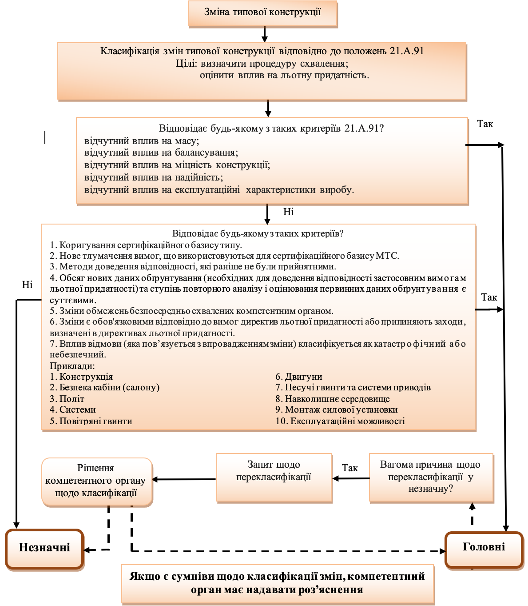Рисунок 1 ‒ Процес класифікації
У 21.A.91 вимагається, що всі зміни мають бути класифіковані як головні або незначні (з використанням критеріїв 21.A.91 і додаткових роз’яснень, наведених у підпункті 3.3).
У деяких випадках процес класифікації розпочинається коли деякі дані (необхідні для прийняття рішення щодо класифікації) ще не отримані. Тому, насамперед, заявник має отримати такі дані а потім приймати рішення.
Якщо є сумніви щодо класифікації змін, компетентний орган має надавати роз’яснення.
Якщо застосування критеріїв підпункту 3.3 призводить до класифікації зміни як головна, заявник може вимагати повторну класифікацію, якщо таке обґрунтовано і компетентний орган може взяти на себе відповідальність за повторну класифікацію зміни.
Просту зміну конструкції, що планується для забезпечення виконання директиви льотної придатності, може бути повторно класифіковано як незначну через залучення компетентного органу до процесу верифікації первинної льотної придатності.
Причини класифікаційного рішення мають бути задокументовані.
3.3. Додаткові роз'яснення щодо класифікації змін.
Зміна типової конструкції оцінюється такою, що має “відчутний вплив на інші характеристики, які впливають на льотну придатність виробу” і тому її має бути класифіковано головною, якщо вона відповідає одній або декільком таким умовам:
а) якщо для зміни вимагається коригування сертифікаційного базису типу (наприклад, спеціальні умови, еквівалентні дані з безпеки, вибір щодо доведення відповідності вимогам льотної придатності або тим, що походять від попередньої (норма льотної придатності, що була змінена раніше чинної на дату подачі заявки на зміну) або пізнішої поправки (норми льотної придатності, що стали чинними після реєстрації заявки на зміну) до норм льотної придатності);
b) якщо заявник пропонує нове тлумачення вимог льотної придатності (які використовувалися для сертифікаційного базису типу) і воно не було опубліковано як AMC або іншим порядком узгоджено з компетентним органом;
c) якщо для доведення відповідності використовуються методи, які раніше не були прийняті як відповідні для характеру зміни до виробу або для подібних змін до інших виробів, розроблених заявником;
d) якщо обсяг нових даних обґрунтування (необхідних для доведення відповідності застосовним вимогам льотної придатності) та ступінь повторного аналізу і оцінювання первісних даних обґрунтування є суттєвими;
е) якщо змінюються обмеження щодо льотної придатності або експлуатаційні обмеження;
f) якщо зміна є обов'язковою відповідно до вимог директиви льотної придатності або припиняє заходи, визначені в директиві льотної придатності (див. 21.A.3B), див. Примітку 1.
g) якщо вплив відмови (яка пов’язується з впровадженням зміни) класифікується як катастрофічний або небезпечний.
Примітка 1: Зміна конструкції, яку було класифіковано і схвалено як незначна до прийняття рішення на видання директиви льотної придатності, не потребує повторної класифікації. Проте, компетентний орган залишає за собою право переглядати зміну і повторно її класифікувати/схвалювати (якщо визнає таке необхідним).
Примітка 2: Вищезазначені умови пояснюють критерії, про які йдеться у 21.A.91.
Для розуміння того, як застосовувати вищезазначені умови, рекомендується звернути увагу на приклади, наведені в Додатку А до GM 21.A.91.
Зміни, що вносяться до типової конструкції, класифікуються як незначні та головні. Незначною є зміна, що не має відчутного впливу на масу, балансування, міцність конструкції, надійність, експлуатаційні характеристики або на інші характеристики, що впливають на льотну придатність виробу, та якщо не розглядаються (де застосовується) екологічні характеристики, такі як шум, викид палива, емісія вихлопних газів. Якщо це не суперечить положенням параграфа 21.А.19 цих Правил, згідно з цією главою усі інші зміни є головними. Головні та незначні зміни мають схвалюватися відповідно до положень параграфів 21.А.95 або 21.А.97 цих Правил та належним чином ідентифікуватися.
21.А.92. Прийнятність заявника
(a) Тільки утримувач сертифіката типу може подавати заявку на схвалення головної зміни типової конструкції згідно з цією главою, усі інші заявники на схвалення головної зміни типової конструкції подають заявку згідно з главою Е цих Правил.
(b) Будь-яка організація може подавати заявку на схвалення незначної зміни типової конструкції згідно з цією главою.
21.А.93. Заявка
Заявка на схвалення зміни типової конструкції має робитися за формою та у спосіб, встановлені компетентним органом, і має містити:
(а) опис, що ідентифікує зміну:
1) усі частини типової конструкції та схвалені керівництва, що знаходяться під впливом зміни;
2) норми льотної придатності та вимоги захисту довкілля (де застосовується), які використовувалися під час розробки зміни, щоб згідно з положеннями параграфа 21.А.101 цих Правил доводити відповідність зміненого виробу;
(b) визначення будь-яких повторних досліджень, необхідних для доведення відповідності зміненого виробу застосовним нормам льотної придатності та вимогам захисту довкілля (де застосовується).GM
GM 21.A.93(b). Головні зміни: Заявка
Визначення необхідності проведення повторних досліджень для доведення відповідності, не означає перегляду відповідності в цілому, але потребує визначення переліку вимог льотної придатності сертифікаційного базису, що знаходяться під впливом змін і які підлягають повторному дослідженню, разом із методами (розрахунок, випробування або аналіз), які пропонується для нового доведення відповідності.
21.А.95. Незначні зміни
Незначні зміни до типової конструкції класифікуються та схвалюються:
(a) компетентним органом; або
(b) відповідно схваленою організацією розробника за узгодженою з компетентним органом процедурою.
21.А.97. Головні зміни
AMCAMC 21.A.97. Процес доведення відповідності головних змін
1. Для головних змін мають бути використані АМС/GM 21.A.20.
2. Для головних змін, які не потребують тривалих і складних заходів щодо доведення відповідності, програму сертифікації (про яку йдеться в AMC 21.A.20(b)) має бути надано разом із заявкою за спрощеним форматом. Програма сертифікації має містити щонайменше таке:
мета зміни;
опис зміни;
застосовність;
застосовні вимоги льотної придатності, спеціальні умови, еквівалентні дані щодо безпеки і вимоги захисту довкілля;
опис того, як буде доведено відповідність з використанням обраних методів доведення відповідності та посилань до документів відповідності;
графік подачі документів відповідності, за потреби.
(a) Заявник на схвалення головної зміни має:
1) надавати компетентному органу дані, що обґрунтовують зміну, разом з будь-якими необхідними описовими даними для включення до типової конструкції;
2) демонструвати доведення відповідності зміненого виробу застосовним нормам льотної придатності та вимогам захисту довкілля (де застосовується), як зазначено у параграфі 21.А.101 цих Правил;
3) робити заяву, що ним продемонстровано доведення відповідності застосовному сертифікаційному базису типу та вимогам захисту довкілля (де застосовується), і надавати компетентному органу обґрунтування, відповідно до якого таку заяву зроблено;
4) робити заяву, про яку йдеться у підпункті (a)(3) (відповідно до положень глави J цих Правил), якщо він є утримувачем відповідного схвалення організації розробника;
5) доводити відповідність вимогам параграфа 21.А.33 цих Правил та (якщо застосовується) вимогам параграфа 21.А.35.
(b) Схвалення головної зміни до типової конструкції обмежується тими конкретними конфігураціями в типовій конструкції, яких стосується зміна.
21.А.101. Визначення застосовних норм льотної придатності та вимог захисту довкілля (де застосовується)
GMGM 21.A.101. Встановлення сертифікаційного базису типу змінених авіаційних виробів
У цьому GM надаються рекомендації по застосуванню Правил щодо змінених виробів (Changed Product Rule), положень 21.A.19 і 21.A.101, для змін, зроблених до авіаційних виробів, які мають МТС.
Розділ 1. Введення.
1. Мета.
а) У цьому GM надаються рекомендації щодо встановлення сертифікаційного базису типу (військового) для змінених авіаційних виробів (відповідно до положень 21.A.101) і допомагає визначати потребу в заяві на отримання нового MTC (відповідно до положень 21.A.19). В рекомендаціях описується процес встановлення сертифікаційного базису типу щодо змін до MTC, MRTC, MSTC та змінених MSTC із зазначенням оцінок, класифікацій та рішень (прийнятих під час такого процесу).
b) Зміст цього GM поділяється на чотири розділи:
і. У Розділі 1 пояснюється мета цього GM, розглядається його зміст, визначається цільова аудиторія та уточняється, які зміни знаходяться в межах сфери застосовності цього GM. У Розділі 1 містяться також визначення та термінологія, які використовуються в цьому GM щодо застосування положень 21.A.19 та 21.A.101.
іі. У Розділі 2 надається загальний огляд положень 21.A.19 та 21.A.101, уточняються принципи і цілі безпеки та надаються посилання заявникам до застосовних рекомендацій, що містяться в подальших розділах цього GM.
ііі. У Розділі 3 містяться рекомендації щодо застосування положень 21.A.101(b) з метою встановлення сертифікаційного базису типу для змінених авіаційних виробів. У Розділі 3 детально описуються різні етапи підходу “зверху-вниз” до розробки сертифікаційного базису типу. Також, у Розділі 3 розглядаються критерії 21.A.19 щодо визначення умов, відповідно до яких заявнику на зміну типової конструкції потрібно подавати заявку на отримання нового MTC, та надаються рекомендації щодо етапу оцінювання цих критеріїв.
iv. У Розділі 4 містяться критерії щодо експлуатаційних вимог, пов'язаних з конструкцією, рекомендації щодо встановлення сертифікаційного базису типу для змін типової конструкції деяких невеликих літаків і вертольотів відповідно до зазначеної максимальної ваги (“excepted products”), рекомендації щодо використання спеціальних умов відповідно до 21.A.101(d), рекомендації щодо строку подачі заявки, рекомендації щодо встановлення сертифікаційного базису типу для змін типової конструкції ПС, розроблених або модифікованих для спеціального призначення (для експлуатації відповідно до обмеженого сертифіката льотної придатності) і рекомендації щодо документів перегляду сертифікаційного базису типу.
c) У цьому GM розглядаються прийнятні методи, але вони не єдині, що використовуються для доведення відповідності критеріям 21.A.19 та 21.A.101. Проте, якщо заявник вирішує використовувати методи, розглянуті в цьому GM, вони мають дотримуватися ним повністю.
2. Аудиторія.
Цей GM призначено для використання заявниками на отримання схвалень:
головних змін типової конструкції виробів відповідно до положень 21.A.97 і типової конструкції APUs згідно з положеннями 21.A.604(b);
MSTC згідно з положеннями 21.A.113;
головних змін до MSTC згідно з положеннями 21.A.117(b).
3. Застосовність.
а) Зарезервовано.
b) Цей GM застосовується до головних змін типової конструкції (згідно з положеннями 21.A.101) щодо авіаційних виробів, які мають сертифікат типу, обмежений сертифікат типу, додатковий сертифікат типу або схвалення за MTSO (щодо APU) відповідно до положень Частини-21В (див. 21.A.21, 21.A.23, 21.A.115, 21.A.604) із використанням застосовних норм льотної придатності для сертифікаційного базису типу.
c) Незначні зміни типової конструкції автоматично не вважаються значними (згідно з положеннями 21.A.101(b)), а існуючий сертифікаційний базис типу вважається достатнім для їх схвалення (відповідно до положень 21.A.95).
d) Зарезервовано.
е) Для цілей цього GM термін “авіаційний виріб” (“виріб”) застосовується тільки до ПС, двигунів і повітряних гвинтів (які отримали сертифікати типу або обмежені сертифікати типу) або APUs (схвалених за MTSO).
f) Цей GM не призначено для визначення застосовних вимог захисту довкілля (вимоги до шуму, викидів палива і емісії вихлопних газів) для змінених виробів.
4. Визначення та термінологія.
Прийнятний сертифікаційний базис типу ‒ сертифікаційний базис типу для зміненого виробу (згідно з положеннями 21.A.101) вважається прийнятним, якщо він (за висновками компетентного органу) забезпечує прийнятні стандарти для зміни конструкції, тобто, якщо застосовні норми льотної придатності і встановлені спеціальні умови забезпечують відповідний рівень безпеки для зміненого виробу і не призводять до будь-яких небезпечних особливостей конструкції.
Авіаційний виріб термін “авіаційний виріб” (“виріб”), який використовується у цьому GM, застосовується тільки до повітряних суден, двигунів, повітряних гвинтів (які отримали сертифікати типу або обмежені сертифікати типу) або APUs (схвалених за MTSO).
Зона (кабіна, відсік, салон і т.п.), система, компонент або обладнання, що зазнали впливу зміни будь-які системи, компоненти або обладнання, що фізично змінюються внаслідок запропонованої зміни конструкції або їх функціональні характеристики змінюються через фізичний вплив зміни.
Сертифікаційні вимоги посилаються до кожної вимоги сертифікаційного базису типу, що ґрунтується на визнаних нормах льотної придатності та/або стандартах (наприклад, EASA CS, FAA FAR, Mil HdbK, JSSG, STANAG, Def-STAN тощо).
Зміна конструкції ‒ зміна в типовій конструкції авіаційного виробу. У контексті цього документу терміни “зміна”, “зміна конструкції” і “зміна типової конструкції” є тотожними.
Попередні норми та/або стандарти льотної придатності ‒ застосовні норми та/або стандарти льотної придатності, що набули чинності до дати подачі заявки на схвалення зміни, але не до дати набуття чинності існуючого сертифікаційного базису типу.
Існуючий сертифікаційний базис типу – застосовні норми льотної придатності, спеціальні умови і еквівалентні дані щодо безпеки, включені через посилання до сертифіката типу виробу, що має змінюватися.
Останні норми льотної придатності та/або стандарти ‒ застосовні норми льотної придатності та/або стандарти, що є чинними на дату подання заявки на зміну.
Попередні відповідні зміни конструкції ‒ попередні зміни конструкції, сумарний вплив яких (після застосування останніх норм льотної придатності та/або стандартів) може значно або суттєво змінити первинний виріб або модель.
Зміна рівня виробу ‒ зміна або сукупність змін, які роблять виріб відмінним від інших його моделей (наприклад, дальність польоту, корисна вантажопідйомність, оберти, основні принципи розробки). Зміна рівня виробу визначається на рівні зміни ПС, авіаційного двигуна, повітряного гвинта або APU.
Допоміжна зміна ‒ зміна є допоміжною, якщо доведення відповідності останній поправці не буде істотно впливати на рівень безпеки та вона (зміна) є частиною загальної значної зміни або її логічним наслідком. Допоміжна зміна є фізичною зміною, яка відновлює системи, міцність конструкцій або функціональність (без будь яких їх змін) і необхідна для сприяння значній зміні.
Значна зміна – зміна до сертифіката типу, значна в такій мірі, що змінює на рівні виробу один або більше з наступного: загальну конфігурацію, принципи розробки, або припущення, що використовуються для сертифікації, але не в такій мірі, щоб вважатися суттєвою зміною. Значимість зміни слід розглядати в контексті всіх попередніх відповідних змін конструкції і всіх пов'язаних змін до застосовних норм та/або стандартів льотної придатності. Не всі зміни на рівні виробу є значними.
Суттєва зміна ‒ зміна, яка настільки всеохоплююча, що потребує проведення практично повного дослідження відповідності застосовному сертифікаційному базису типу і (як наслідок) нового MTC (відповідно до положень 21.A.19).
Розділ 2. Короткий огляд 21.A.19 і 21.A.101.
1. 21.A.19.
а) Відповідно до положень 21.A.19 заявник має отримувати новий MTC для зміненого виробу, якщо зміна конструкції, потужності, тяги або ваги вважається компетентним органом настільки всеохоплюючою, що потребує проведення практично повного дослідження відповідності застосовному сертифікаційному базису типу.
b) Зміни, які вимагають суттєвого переоцінювання отриманих результатів щодо доведення відповідності виробу вважаються “суттєвими змінами”. Роз’яснення див. в пункті 3 Розділу 3.
c) Якщо компетентний орган визначив (згідно з положеннями 21.A.19), що запропоновані зміни конструкції не вимагають нового MTC, тоді дивись 21.A.101 щодо застосовних правил встановлення сертифікаційного базису типу для запропонованої зміни конструкції. Роз’яснення див. в Розділі 3.
2. 21.A.101.
а) Якщо зміна не відповідає критеріям щодо винятків (визначених в 21.A.101(b)), то відповідно до положень 21.A.101(а) вимагається зміна до MTC, щоб відповідати нормам льотної придатності, які є застосовними до зміненого виробу і які є чинними на дату подання заявки. Метою зазначеного в 21.A.101 є підвищення безпеки шляхом включення (в максимально можливій мірі) останніх нормативних стандартів до сертифікаційного базису типу змінених виробів.
b) Заявник може доводити відповідність попередній поправці до норми льотної придатності згідно з вимогами 21.A.101(b), якщо:
зміна не є значною (див. 21.A.101(b)(1)); або
зона, система, компонент або обладнання не знаходяться під впливом зміни (див. 21.A.101(b)(2)); або
доведення відповідності останній поправці для значної зміни істотно не сприяє рівню безпеки (див. 21.A.101(b)(3)); або
доведення відповідності останній поправці було б недоцільним (див. 21.A.101(b)(3)).
с) Слід зазначити, що попередня поправка не може передувати подібній (сумісній) поправці до норми льотної придатності, внесеній до МТС.
d) Відповідно до положень 21.A.101(b) дозволяється доводити відповідність зміненого виробу попередній поправці до застосовної норми льотної придатності за умови, що виконується один із критеріїв, зазначених в 21.A.101(b)(1), (2) або (3), а попередня поправка вважається прийнятною. Проте, якщо запропонована зміна конструкції включає в себе особливості чи характеристики, що вважаються новими або незвичайними, або передбачається нетрадиційне використання зміненого виробу, або досвід експлуатації аналогічних виробів (які знаходяться в експлуатації або виробів, що мають аналогічні конструктивні особливості) показав, що небезпечні умови можуть розвиватися, а запропоновані стандарти льотної придатності не містять прийнятних або відповідних стандартів щодо зміненого виробу, то будуть застосовуватися пізніші поправки (норми льотної придатності, що стали чинними після реєстрації заявки на заміну) та/або спеціальні умови.
е) У 21.A.101(b)(1)(i) та (ii) описуються критерії, які автоматично визначають зміну значною.
f) Зарезервовано.
g) Відповідно до положень 21.A.101(d) передбачається використання спеціальних умов (згідно з положеннями 21.A.16B), якщо запропоновані поправки до застосовних норм льотної придатності (норми льотної придатності, чинні на дату подання заявки на зміну) і будь-які пізніші поправки, не забезпечують прийнятні стандарти для запропонованої зміни.
h) Зарезервовано.
i) Зарезервовано
Розділ 3. Процес встановлення сертифікаційного базису типу для змінених виробів відповідно до положень 21.A.101(а) і (b).
1. Короткий огляд.
а) Заявник і компетентний орган несуть відповідальність згідно з положеннями 21.A.101(а) і (b). Заявник має доводити, що зміна відповідає останнім застосовним нормам льотної придатності, якщо застосування методу доведення відповідності (про який йдеться у 21.A.101(b)) не обґрунтовано. Якщо пропонується використання методу доведення відповідності (про який йдеться у 21.A.101(b)), то заявник має зробити попередню класифікацію (чи є зміна значною або не є такою) і запропонувати відповідний сертифікаційний базис типу. Компетентний орган визначає, чи сумісна класифікація заявника щодо зміни та його пропозиція щодо сертифікаційного базису типу із застосовними правилами і їх тлумаченням. Таке визначення не має залежати від того, хто ініціює зміну: утримувач MTC або заявник на отримання MSTC. Сертифікаційний базис типу може змінюватися в залежності від значимості і обсягу зміни. Нижчезазначені кроки представляють спрощений підхід для здійснення такого визначення. Окрім надання допомоги у визначенні значимості і встановленні сертифікаційного базису типу, ці рекомендації допоможуть встановити відповідний рівень взаємодії, необхідної між заявником і компетентним органом.
b) Зарезервовано.
с) Для встановлення відповідного сертифікаційного базису типу щодо зміни типової конструкції можуть використовуватися такі кроки, як на наведеному нижче Рисунку 2.
2. Крок 1 (Рисунок 2). Визначення запропонованої зміни типової конструкції для авіаційного виробу.
а) Насамперед, важливо чітко визначити конфігурацію типової конструкції, що підлягає зміні, а потім описати запропоновану зміну(и). Серії модифікованих варіантів ПС, двигунів або повітряних гвинтів (наприклад, X-100, Х-200, Х-300) можуть еволюціонувати на основі попередніх типових конструкцій, кожна із яких має свої власні зміни конструкції, що робить її відмінною від інших серій. Заявник має визначити, яка модель або серія в рамках цієї моделі є конкретною конфігурацією, що буде модифікована.
Примітка: MSTC не є виробом, це зміна до виробу.
Під час змін або внесення поправок до MSTC відправною точкою є існуючий модифікований виріб (MTC із введеним в дію MSTC). Наприклад, якщо б заявник вносив поправку до MSTC щодо зовнішнього вантажного контейнера і пропонував зміну конфігурації контейнера, то відправною точкою був би існуючий MTC із введеним в дію MSTC.
Потім заявник має порівняти конфігурацію існуючого модифікованого виробу (MTC із введеним в дію MSTC) зі зміненим виробом (MTC із введеним в дію MSTC із внесеними запропонованими поправками).
b) Зміни до виробу можуть включати в себе фізичні зміни конструкції, зміни в діапазоні експлуатаційних режимів та/або зміни льотно-технічних характеристик. Зміна може бути одинарною або сукупністю змін. Метою цього кроку є визначення та опис зміни до авіаційного виробу. Заявник на зміну типової конструкції має розглянути всі попередні пов'язані зміни конструкції і рівень поправки сертифікаційного базису типу для цих змін.
Примітка 1: За визначенням, всі раніше впроваджені зміни були схвалені. Мета кроку 1 ‒ розглянути загальний сукупний вплив змін після останнього оновлення (порівняно з початковою типовою конструкцією) сертифікаційного базису для зміненої зони (зони, що знаходиться під впливом).
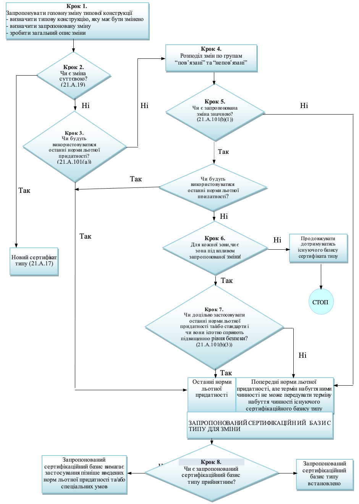Рисунок 2 – Встановлення сертифікаційного базису типу для зміненого виробу
Примітка 2: З метою підтвердження отриманих результатів щодо доведення відповідності запропонованої зміни, дані щодо обґрунтування запропонованої зміни типової конструкції можуть включати отримані результати для доведення відповідності раніше схваленої зміни конструкції. У будь-якому випадку, для цілей класифікації запропонованої зміни конструкції такі раніше схвалені конструкція і дані доведення відповідності тепер мають розглядатися по відношенню до запропонованої зміни типової конструкції та мають враховуватись як частина класифікації запропонованої зміни конструкції.
с) Під час визначення змін, запропонованих як частина модифікації, розглядаються відповідні попередні зміни, які створюють сукупний вплив, оскільки пізніше вони можуть впливати на рішення щодо суттєвих і значних змін. Під попередніми відповідними змінами маються на увазі зміни конструкції, впливи яких накопичуються (наприклад, послідовне збільшення тяги, поступове збільшення ваги або збільшення довжини фюзеляжу за рахунок додавання секцій). Будь-які попередні відповідні зміни конструкції в зоні, що знаходиться під впливом поточної зміни, які не передбачали оновлення існуючого сертифікаційного базису типу, мають враховуватися в наступних пропозиціях щодо зміни конструкції.
(1) Приклад 1: В даний час пропонується збільшення ваги на 5 відсотків, але раніше було впроваджено на цьому ПС поетапне збільшення ваги на 10 відсотків і ще 15 відсотків без оновлення існуючого сертифікаційного базису типу. У поточній пропозиції щодо збільшення ваги на 5 відсотків сукупний вплив двох попередніх випадків збільшення ваги (які не передбачали оновлення сертифікаційного базису типу) тепер буде враховуватися (з метою прийняття рішення щодо того, яка зміна ‒ суттєва чи значна) як сумарне збільшення ваги майже на 30 відсотків. Зверніть увагу, що має розглядатися сукупний вплив, який враховує тільки ті поетапні збільшення, що мали місце після останнього оновлення застосовних норм льотної придатності в сертифікаційному базисі типу.
(2) Приклад 2: MTC для моделі ПС X налічує три серії, а саме X-300, X-200 і X-100. Х-300 є модифікованим варіантом X-200, який є модифікованим варіантом первинної серії Х-100. Заявник пропонує зміну конструкції ПС серії X-300. Під час перегляду сертифікаційного базису типу і норм льотної придатності X-300, що знаходиться під впливом запропонованої зміни, було визначено, що одна вимога (наприклад, допустимість пошкоджень) залишилася на такому самому рівні поправки як і у первинному сертифікаційному базисі типу X-100 (відступ від 21.A101(а) був дозволений). Оскільки рівень поправки для цієї конкретної вимоги не було змінено для двох наступних серій ПС (X-200 і X-300), має тепер розглядатися сукупний вплив цих двох попередніх змін конструкції, які пов'язуються із запропонованою зміною і вимогами допустимості пошкоджень.
d) Щоб визначити і описати запропоновані зміни до будь-якого авіаційного виробу, необхідно зробити загальний опис таких змін конструкції із зазначенням намірів або причин щодо впровадження змін. На даному етапі складні технічні тонкощі не вимагаються. Наприклад, пропозиція щодо збільшення максимальної пасажиромісткості може потребувати прибудови фюзеляжного відсіку-вставки. Отже, один із можливих загальних описів цієї зміни конструкції буде стосуватися “фюзеляжного відсіку-вставки”. Аналогічно, загальні описи, які характеризують типові зміни ПС (кожна з яких обумовлена конкретною метою, завданням або призначенням), можуть стосуватися збільшення тяги, абсолютно нового інтер'єру, модернізації системи авіоніки, або переобладнання із пасажирського в вантажний варіант.
е) Еволюційні зміни. Еволюційні зміни, що відбуваються під час програми сертифікації, можуть потребувати переоцінки сертифікаційного базису типу і призвести до нової класифікації зміни. Тобто, будь-яка еволюція (розвиток) запропонованої зміни конструкції після погодження (або встановлення) сертифікаційного базису типу буде вимагати перегляду сертифікаційного базису типу для гарантування того, що складові зміни конструкції “що еволюціонували“, все ще охоплюються погодженим сертифікаційним базисом.
3. Крок 2 (Рисунок 2). Чи є зміна суттєвою?
а) Згідно з положеннями 21.A.19 заявник має подавати заявку на отримання нового MTC для зміненого виробу, якщо запропонована зміна конструкції, потужності, тяги або ваги настільки всеохоплююча, що потребує практично повного дослідження відповідності застосовному сертифікаційному базису типу. Новий MTC може потребуватися або для всеохоплюючої зміни раніше сертифікованого виробу, або для зміненої конструкції, отриманої за рахунок сукупного впливу серії змін конструкції раніше сертифікованого виробу.
b) “Практично повне дослідження” відповідності потребується, якщо більша частина існуючого обґрунтування не застосовна до зміненого виробу. Пропозиція суттєвої зміни буде потребувати доведення відповідності всім застосовним вимогам норм льотної придатності для конкретної категорії виробів. Кількість вимог норм льотної придатності (до яких слід відновити відповідність) для зміненого виробу не обов'язково може бути єдиним критерієм визначення, чи є зміна суттєвою, а, скоріше, визначає обсяг потрібних зусиль для відновлення відповідності або глибини проведення досліджень. Іншими словами, зміна конструкції може вважатися суттєвою, якщо вона настільки всеохоплююча (робить виріб в достатній мірі відмінним від попереднього), що розрахункові схеми конструкції, методики та підходи, які застосовувались раніше для отримання результатів доведення відповідності не можуть використовуватися.
с) Щоб на початку процесу вирішити питання, чи є зміна суттєвою, заявник має оцінити загальний або комбінований вплив всіх запропонованих змін (визначених у Кроці 1), включаючи сукупний вплив попередніх відповідних змін конструкції після останнього оновлення сертифікаційного базису типу (як пояснено в Кроці 1).
d) Суттєва зміна потребує застосування положень 21.A.17 і 21.A.19 для отримання нового MTC. Якщо зміна не суттєва, то слід дотримуватися процесу, описаного в 21.A.101.
4. Крок 3 (Рисунок 2). Чи будуть використовуватися останні норми льотної придатності?
а) Заявник може попередньо вибрати останні норми льотної придатності, щоб застосувати їх для запропонованої зміни типової конструкції. Якщо застосовуються останні норми льотної придатності, то заявник має дотримуватися положень 21.A.101 і подальша класифікація (значна зміна або не є такою) і обґрунтування не потрібні. Проте, рішення про добровільне доведення відповідності останнім версіям норм льотної придатності для зміни конструкції встановлює новий нормативний базис для всіх майбутніх пов’язаних змін в тій самій зоні, що знаходиться під впливом зміни. Навіть, якщо один заявник вибирає для використання останні версії норм льотної придатності, інший заявник може застосовувати положення 21.A.101 для подібної пропозиції зміни конструкції і використовувати винятки відповідно до положень 21.A.101(b). Якщо останні норми льотної придатності не використовуються, то діяти так:
5. Крок 4 (Рисунок 2). Пов’язаність змін.
а) Після ідентифікації запропонованих змін (з використанням загального опису), подальшим кроком має визначатися, чи пов’язані будь-які з цих змін поміж собою. Пов’язаними є зміни, що не можуть існувати одна без іншої, є взаємозалежними, або одна з них є передумовою для іншої. Наприклад, потреба в перевезенні більшої кількості пасажирів може потребувати прибудови фюзеляжного відсіку-вставки, що призведе до зростання ваги, а також може потребувати збільшення тяги. Отже, фюзеляжний відсік-вставка, збільшення ваги і тяги ‒ це все пов’язані зміни високого рівня, які будуть потрібні для досягнення мети щодо перевезення більшої кількості пасажирів. Рішення щодо модернізації кабіни екіпажу шляхом установлення більш сучасної авіоніки (одночасно з вищезазначеними змінами конструкції) може розглядатися як непов’язана зміна, оскільки необов’язково модернізувати авіоніку для перевезення більшої кількості пасажирів (це має окрему мету, ймовірно просто модернізація). Запропонована модернізація авіоніки буде розглядатися як не пов’язана (або самостійна) зміна. Проте, одночасне впровадження повністю нової внутрішньої компоновки може вважатися пов’язаною зміною, оскільки зміна довжини салону буде мати вплив на критерії (фактори) безпеки осіб, що знаходяться на борту ПС. Навіть, якщо нова внутрішня компоновка салону не відноситься до зміни рівня виробу, функціональний вплив фюзеляжного відсіку-вставки має можливі наслідки до безпеки осіб, що знаходяться на борту ПС (наприклад, обставини, які швидко міняються при аварійній посадці, аварійна евакуація тощо). Отже, внутрішня компоновка салону стає зоною, що перебуває під впливом.
b) Після того як зміни розподілені по групам ‒ “пов’язані” і “непов’язані” (або самостійні), заявник готовий до Кроку 5 (Рисунок 2). Розподіл пов’язаних і непов’язаних змін має особливо важливе значення щодо прийняття рішення “Так/Ні” під час визначення значних змін (21.A.101(b)(1)), про що йдеться в Кроці 5 Рисунка 2. Кожна група пов’язаних змін і кожна непов’язана (самостійна) зміна оцінюються за своїм власним критерієм на значущість.
c) Після опису розподілу змін по групам і пов’язаних (або допоміжних) технічних деталях для кожної зміни, заявник має визначити зони, системи, компоненти або обладнання виробу (що знаходяться під впливом зміни конструкції) і відповідні вимоги норм льотної придатності (пов’язані з цими зонами). Для кожної групи, заявник має оцінити фізичні та/або функціональні впливи змін на інші зони, системи, компоненти або обладнання виробу. Характеристики, на які впливає зміна, можуть бути як фізичними змінами, так і функціональними, які обумовлені фізичними змінами. Прикладами фізичних аспектів є конструкції, системи, компоненти і обладнання, а також програмне забезпечення в поєднанні із задіяним обладнанням. Прикладами функціональних характеристик є льотно-технічні та пілотажні характеристики, характеристики аеропружності та аварійне покидання ПС. Метою зазначеного є охоплення всіх аспектів, якщо є потреба в переоцінюванні (якщо надане для виробу, що змінюється, обґрунтування буде оновлюватися)
6. Крок 5 (Рисунок 2). Чи є запропонована зміна значною?
а) Відповідальність заявника полягає в обґрунтуванні того, що розподіл пов’язаних і непов’язаних змін не кваліфікує зміну значною. Значні зміни є змінами рівня виробу, які відрізняються від переважної більшості головних змін. Взагалі, ці зміни є або результатом накопичення змін або є наслідком окремих всеохоплюючих змін, що робить змінений виріб, відмінним від своїх прототипів. У Кроці 1 надаються пояснення щодо накопичення змін, яке має бути розглянуто. Відповідно до положень 21.A.101(b)(1) існуюча зміна визначається значною, якщо автоматично застосовується один (або більше) із трьох критеріїв:
(1) Якщо не зберігається загальна конфігурація (значна зміна до загальної конфігурації). Зміна до загальної конфігурації на рівні виробу, яка відрізняє отриманий (як результат зміни) виріб від інших моделей виробу (наприклад, льотно-технічні характеристики або оновлюваність основних складових частин). Як правило, для таких змін заявник надає новий код моделі ПС, хоча це не є обов’язковим.
(2) Якщо не зберігаються принципи побудови (значна зміна до принципів побудови). Зміна на рівні виробу через зміну матеріалів та/або методів побудови виробу, що впливає на загальні експлуатаційні характеристики виробу або властивості міцності конструкції та потребуватиме всеохоплюючого повторного дослідження для доведення відповідності.
(3) Якщо не залишаються чинними припущення, які застосовувалися при сертифікації виробу (значна зміна до припущень, які застосовувалися при сертифікації). Зміна до припущень на рівні виробу, пов’язана з доведенням відповідності, льотно-технічними характеристиками або діапазону експлуатаційних режимів, які настільки відрізняються від початкових припущень, що методологія доведення відповідності (відповідно до початкових припущень) визнається недійсною.
b) Вищезазначені критерії використовуються для визначення того, чи є значними змінами кожна група пов’язаних змін і кожна самостійна зміна. Ці три критерії оцінюються на рівні виробу. При застосуванні автоматичних критеріїв, заявник має зосередитися на самій зміні конструкції. Розгляд останніх норм льотної придатності та/або стандартів тільки з приводу нормативно-правового значення або переваг (щодо безпеки), не є підставою для того, щоб класифікувати (або по новому класифікувати) зміну конструкції як значна.
с) Один або декілька автоматичних критеріїв, зазначених у 21.A.101(b)(1), застосовуються в кожному випадку, якщо зміни визначаються як значні. Досвід показав, що концепція наявності тільки трьох автоматичних критеріїв прийнятна для більшості проєктів.
d) Зміни конструкції можуть призвести до застосування одного або декількох автоматичних критеріїв (про які йдеться в 21.A.101(b)(1)(i) та (ii)) для запропонованої зміни конструкції. Під час оцінювання групи пов’язаних змін конструкції, розглядається сукупний вплив попередніх відповідних змін конструкції. Зміни конструкції можуть впроваджуватися протягом довгого часу без будь-яких змін в сертифікаційному базисі типу, тому кінцевий виріб може значно відрізнятися від того, що був би представлений на основі чинного сертифікаційного базису типу.
е) Кожна група пов’язаних змін і кожна непов’язана (самостійна) зміна (ідентифіковані за допомогою загальних описів) будуть оцінюватися щодо їх визначення (чи є вони значними або не є такими). Тільки, якщо один (або декілька) з трьох критеріїв задовольняються, то зміна типової конструкції може розглядатися значною для такої групи пов’язаних змін або непов’язаної зміни. Точкою відліку для оцінювання сукупних впливів попередніх відповідних змін конструкції є час останнього оновлення застосовних сертифікаційних вимог в сертифікаційному базисі типу для зони, системи, компонента або обладнання, що знаходяться під впливом зміни.
f) Як правило, зміна до окремих зони, системи, компонента або обладнання може не призводити до зміни рівня виробу. Проте, можуть бути особливі випадки, якщо зміна до окремої системи або компонента може насправді призвести до значної зміни через її вплив на виріб в цілому. До прикладів може відноситися додавання кінцевих аеродинамічних поверхонь крила (вінглетів), відхиляємих передкрилків або впровадження змін до електродистанційних систем основних органів керування ПС.
g) Зміна є допоміжною, якщо доведення відповідності останній поправці істотно не впливає на рівень безпеки та вона (зміна) є частиною загальної значної зміни або її логічним наслідком. Допоміжна зміна є фізичною зміною, яка відновлює системи, міцність конструкцій або функціональність (без будь-яких їх змін) і необхідна для сприяння значній зміні. На підставі зазначеного, допоміжна зміна не потребує доведення відповідності останнім нормам та/або стандартам льотної придатності, оскільки вважається, що вона “не сприяє істотно рівню безпеки”, і, тому задовольняє положенням 21.A.101(b)(3). Визначення, чи відповідає зміна характеристикам допоміжної зміни (задовольняє критеріям на виключення), буде простим. Отже, потрібні мінімальні обґрунтування або підтвердження. Якщо таке визначення не просте, то запропонована зміна швидше за все не є допоміжною.
(1) У деяких випадках, якщо буде доводитися відповідність пізнішій поправці, то зміна, яка відновлює функціональність, насправді може істотно сприяти рівню безпеки. У такому випадку зміна не буде вважатися допоміжною.
(2) Прикладом допоміжної зміни є подовження існуючих кабелів (що проходять через новий фюзеляжний відсік-вставку) для відновлення існуючих функцій системи, компоненти якої можуть бути розташовані в межах або за межами нового відсіку. Подовження цих кабелів може визнаватися таким, що не збільшує продуктивність або можливості системи, тому таку зміну може бути визначено як допоміжну зміну, яка не потребує доведення відповідності останній поправці.
h) Нове позначення коду моделі зміненого виробу не обов’язково означає, що зміна конструкції є значною відповідно до положень 21.A.101. З іншого боку, збереження позначення існуючої моделі не означає, що зміна конструкції не є значною. Всі зміни розглядаються з огляду на значимість зміни типової конструкції.
i) Визначення. Остаточне визначення, чи є зміна конструкції значною чи не є такою, залишається за компетентним органом.
j) На цьому етапі було зроблено визначення для кожної групи пов’язаних змін і кожної самостійної зміни чи є вони значними або не є такими. Для значних змін, якщо заявник пропонує доводити відповідність попереднім вимогам, має бути застосовано процедуру, про яку йдеться нижче, в пункті 7 цих AMC.
7. Пропозиції рівня поправки для значної зміни.
а) Якщо непов’язана (самостійна) зміна або група пов’язаних змін класифікуються як значні, то заявник буде доводити відповідність останній поправці до застосовних норм льотної придатності та/або до стандартів сертифікації зміненого виробу, якщо заявник не може обґрунтувати використання одного із винятків (про які йдеться у 21.A.101(b)(2) та/або (3)), щоб доводити відповідність попереднім поправкам. Кінцевий сертифікаційний базис типу може складатися із комбінації застосовних норм льотної придатності та/або стандартів на різних рівнях поправок, починаючи від первісного сертифікаційного базису типу до найостанніших поправок.
b) Якщо зміна класифікується значною, то для всіх зон, систем, компонентів і обладнання, що знаходяться під впливом зміни, має доводитися відповідність застосовним нормам льотної придатності та/або стандартам на рівні поправок, що чинні на дату подачі заявки на зміну. Заявнику треба буде довести, що зона, система, компонент або обладнання не знаходяться під впливом зміни, щоб обґрунтувати використання винятку, про який йдеться в 21.A.101(b)(2), (див. Главу 9 Частини-21В щодо рекомендацій з визначення, чи знаходиться зона під впливом запропонованої зміни).
с) Зарезервовано.
d) У 21.A.101(b)(3) йдеться про ще два винятки, які застосовні до зон, систем, компонентів або обладнання, що знаходяться під впливом значної зміни, та для яких доведення відповідності останнім версіям норм льотної придатності істотно не сприяло б підвищенню рівня безпеки або було б недоцільним (див. Главу 10 Частини-21В для отримання додаткових рекомендацій).
е) Зарезервовано.
f) Заявник має надавати прийнятне обґрунтування щодо застосування попередніх поправок до зон, що знаходяться під впливом значної зміни. В обґрунтуванні треба буде показати, що доведення відповідності пізнішій поправці в таких зонах істотно не сприяло б підвищенню рівня безпеки або було б недоцільним. Таке обґрунтування має стосуватися всіх аспектів зони, системи, компонента або обладнання, що знаходяться під впливом значної зміни.
g) Кінцевий сертифікаційний базис типу може поєднувати норми льотної придатності та/або стандарти на рівні останніх поправок (чинні на дату подання заявки на зміну), на рівнях попередніх (проміжних) поправок і на рівні поправок існуючого сертифікаційного базису типу, але не може містити норми льотної придатності та/або стандарти, що передують даті набуття чинності існуючого сертифікаційного базису типу.
h) Слід звернути увагу, якщо заявник приймає рішення щодо використання останніх норм льотної придатності та/або стандартів без будь-яких винятків, то ніяких подальших оцінювань та обґрунтувань не потрібно. У такому випадку перейти до Кроку 8.
8. Пропозиції рівня поправки для зміни, що не є значною.
а) Якщо зміна класифікується як така, що не є значною, відповідно до положень 21.A.101(b)(1) дозволяється застосовувати попередні норми льотної придатності і стандарти, але які не передують даті набуття чинності існуючого сертифікаційного базису типу. В межах цього обмеження (від дати набуття чинності існуючого сертифікаційного базису типу), заявнику дозволяється пропонувати рівень поправки щодо кожної норми льотної придатності та/або стандарту до зони, що знаходиться під впливом зміни. Проте, заявник має бути поінформованим, що його пропозиції щодо сертифікаційного базису типу будуть розглянуті компетентним органом, щоб переконатися в прийнятності сертифікаційного базису типу для запропонованої зміни (див. підпункт 8(d)).
b) Зарезервовано
c) Якщо заявник вибирає вищезазначений варіант існуючого сертифікаційного базису типу, він може обрати доведення відповідності пізнішим поправкам до норм льотної придатності та/або стандартів. У такому випадку заявник має проконсультуватися з компетентним органом щодо включення до сертифікаційного базису типу інших сертифікаційних вимог, які безпосередньо пов’язані (з обраними нормами льотної придатності та/або стандартами). Деякі пізніші норми льотної придатності та/або стандарти можуть бути менш суворими, тому заявник може побачити переваги у їх застосуванні під час вибору базису для доведення відповідності. Проте заявнику рекомендується не приймати остаточних рішень, поки він не дізнається від компетентного органу, які інші сертифікаційні вимоги вважаються безпосередньо пов’язаними.
d) Для змін конструкції, що містять особливості, які не охоплюються запропонованим сертифікаційним базисом типу, тобто, якщо сертифікаційний базис типу не вважається “прийнятним” (див. визначення “прийнятний сертифікаційний базис типу” в Главі 4 Розділу 1 Частини-21В), компетентний орган буде визначати застосовні норми льотної придатності та/або стандарти на відповідних рівнях поправок, починаючи з існуючого сертифікаційного базису типу і поступово просуваючись до найбільш відповідного пізнішого рівня поправки для зміни. Для змін, які містять нові незвичайні особливості конструкції та для яких немає пізніших застосовних норм льотної придатності та/або стандартів, компетентний орган буде визначати спеціальні умови.
9. Крок 6 (Рисунок 2). Чи є зона під впливом запропонованої зміни? (21.A.101(b)(2)).
а) Зона, що не знаходиться під впливом – це будь-яка зона, система, компонент, або обладнання, які не знаходяться під впливом запропонованих змін типової конструкції. Важливо, щоб впливи змін типової конструкції на інші зони, системи, компоненти або обладнання виробу належно оцінювалися, тому що зони, які не були фізично змінені можуть все ще розглядатися частиною зони, що знаходиться під впливом зміни. Якщо вимагаються нові дані щодо доведення відповідності (незалежно від їх рівня поправки), зона буде такою, що знаходиться під впливом зміни. Якщо значна зміна не впливає на зону, сертифікаційний базис типу такої зони не потребує перегляду. Іншими словами, зона, що не знаходиться під впливом зміни, продовжує відповідати існуючому рівню поправки без додаткового обґрунтування.
б) Щоб визначити, знаходиться зона під впливом зміни чи ні, розглядаються такі аспекти зміни типової конструкції:
(1) Фізичні аспекти. До фізичних аспектів відносяться безпосередні зміни конструкцій, систем, компонентів та обладнання (до фізичних аспектів можуть відноситися зміни в програмному забезпеченні/бортовому електронному обладнанні і обумовлені цими змінами впливи на функції систем).
(2) Льотно-технічні характеристики/функціональні характеристики. До менш очевидних аспектів щодо терміну “зони” відносяться загальні характеристики сертифікованого виробу, такі як особливості льотно-технічних характеристик, пілотажні характеристики, аварійне покидання ПС, міцність конструкції, характеристики аеропружності, або стійкість конструкції до ударних навантажень. Такі характеристики можуть бути під впливом зміни рівня виробу. Наприклад, додавання фюзеляжного відсіку-вставки могло вплинути на льотно-технічні та пілотажні характеристики. Отже характеристики, пов’язані з такими аспектами мають розглядатися як частина зони, що знаходиться під впливом зміни. Іншим прикладом є встановлення додаткового паливного бака і нового блока регулювання подачі палива. Така зміна впливає на систему подачі палива і систему відображення кількості палива, що призводить до впливу на незмінені паливні баки ПС. Отже, вся паливна система (змінені та незмінені зони) стає частиною зони, що знаходиться під впливом, через зміну функціональних характеристик.
Примітка: Для підтвердження результатів доведення відповідності вашої пропозиції, дані обґрунтування щодо зони (яка знаходиться під впливом запропонованої зміни типової конструкції) можуть включати дані доведення відповідності попередньо схваленої зміни конструкції. Проте, ваша пропозиція щодо застосування попередньо схвалених даних доведення відповідності має розглядатися як частина всієї запропонованої зміни типової конструкції і має схвалюватися як частина запропонованої вами зміни конструкції.
с) Для всіх зон, що знаходяться під впливом запропонованої зміни конструкції, має доводитися відповідність останнім нормам льотної придатності та/або стандартам, якщо заявник не може довести, що таке доведення відповідності не буде сприяти підвищенню рівня безпеки або буде недоцільним. У Кроці 7 надаються подальші пояснення.
10. Крок 7 (Рисунок 2). Чи доцільно застосовувати останні норми льотної придатності та/або стандарти і чи вони істотно сприяють підвищенню рівня безпеки?
а) Істотно сприяють підвищенню рівня безпеки. Доведення відповідності останнім нормам льотної придатності та/або стандартам може розглядатися таким, що істотно не сприяє підвищенню рівня безпеки, якщо існуюча типова конструкція та/або відповідний досвід демонструють рівень безпеки, який можна порівняти з тим, що забезпечується останніми нормами льотної придатності та/або стандартами. Заявник має надавати достатні обґрунтування, щоб надати можливість компетентному органу зробити таке визначення. Такий виняток може бути застосовано в ситуаціях, про які йдеться нижче:
Примітка: Доведення відповідності останнім нормам льотної придатності та/або стандартам не потребується, якщо поправка носить адміністративний (регулюючий) характер і її зроблено тільки для виправлення несуттєвих помилок або упущень, або для уточнення існуючих сертифікаційних вимог.
(1) Особливості конструкції, які виходять за рамки існуючого сертифікаційного базису типу, але не відповідають останнім нормам льотної придатності та/або стандартам, можуть використовуватися як основа для дозволу на застосування винятку, що “істотно не сприяє”. Якщо такі особливості конструкції прийнятні як обґрунтування такого винятку, то вони мають (за потреби) включатися в змінену конфігурацію типової конструкції і обліковуватися в переліку даних MTC або MSTC як невід’ємна частина сертифікаційного базису типу. Наприклад, заявник пропонує встановити вінглети на великому ПС. У частину конструкції додаються в невеликій кількості нові елементи кріплення крильового паливного баку. Відповідно до останніх сертифікаційних вимог потребується захист конструкції від влучання блискавки. Заявник пропонує зробити виключення з них вимог щодо захисту конструкції від влучання блискавки, оскільки при зміні конструкції використовуються нові елементи кріплення паливного крильового баку з ущільненнями. Ущільнення елементів кріплення є особливістю конструкції, яка виходить за рамки вимог на попередньому рівні поправки, але не відповідає останній поправці. Якщо заявник може успішно обґрунтувати, що доведення відповідності останній поправці істотно не підвищить рівень безпеки зміненого виробу, тоді таку особливість конструкції може бути застосовано як виняток (“істотно не сприяє”) при доведенні відповідності останній поправці.
(2) Якщо застосовуються останні норми льотної придатності та/або стандарти, має розглядатися структура (сукупність частин) конструкції. Нижче наведено приклад з ПС щодо використання такого положення (норми). Проте, пояснення, які наведені в прикладі, можуть застосовуватися до будь-якого виробу, охопленого цим GM.
Наприклад, якщо встановлюється додатковий невеликий фюзеляжний відсік-вставка, ймовірно будуть встановлюватися додаткові сидіння і верхні багажні стелажі, а нижній вантажний відсік буде розширено. Такі складові частини можуть бути ідентичними існуючим складовим частинам. У такому разі, застосування останніх норм льотної придатності та/або стандартів може не призвести до істотного підвищення рівня безпеки.
Проте, якщо фюзеляжний відсік-вставка достатньо великий, така зміна до первинної сертифікованої конструкції ПС, сидінь, стелажів, дверей і вантажного відсіку може потребувати доведення відповідності останнім нормам льотної придатності та/або стандартам, які практично співпадають із тими, що потребуються для нового ПС. У таких обставинах, запропонований сертифікаційний базис типу має містити норми льотної придатності та/або стандарти, що є чинними на дату подачі заявки на зміну.
(3) Досвід експлуатації: Фактичний досвід експлуатації (наприклад, експлуатаційні дані парку ПС або напрацювання протягом тривалого часу (відповідні години нальоту або цикли)) є одним із способів демонстрації, що пізніша поправка може істотно не сприяти підвищенню рівня безпеки, тому використання попередніх норм льотної придатності та/або стандартів може бути доречним.
Можливі випадки щодо вертольотів і легких літаків, коли відповідні дані можуть бути недостатніми або взагалі недоступними через невелике напрацювання та різний об’єм і тип доступних даних. У таких випадках, інша інформація щодо історії експлуатації може забезпечити достатніми даними, щоб обґрунтувати використання попередніх норм льотної придатності та/або стандартів. До таких даних відноситься інформація щодо гарантій, ремонтів, використання компонентів, звітів про авіаційні події, інциденти та експлуатаційні недоліки, SB, директив льотної придатності або інші доречні і достатні дані, зібрані виробниками, компетентним органом або іншими організаціями.
Рівні досвіду експлуатації, необхідні для демонстрації належного рівня безпеки, повинні переглядатися і погоджуватися компетентним органом, оскільки вони стосуються запропонованої зміни конструкції.
b) Недоцільне. Доведення відповідності останнім нормам льотної придатності та/або стандартам може розглядатися недоцільним, якщо заявник може обґрунтувати, що таке доведення призведе до потреби в додаткових ресурсах, які несумірні з додатковими перевагами щодо безпеки (різниця між останнім і запропонованим сертифікаційними базисами типу). Потреби в додаткових ресурсах можуть включати такі, що виникають внаслідок змін конструкції, необхідних для дотримання відповідності та зусиль, що потребуються для доведення відповідності, але не включають потреби у витратах ресурсів для попередніх змін виробу.
(1) Пропозиція, що таке доведення відповідності є недоцільним, має підкріплюватися даними обґрунтування та аналізом. Під час їх оцінювання(пропозицій заявника та його даних обґрунтування щодо недоцільності такого доведення відповідності) компетентний орган може розглядати інші фактори (наприклад, витрати і переваги безпеки щодо аналогічної нової конструкції).
(2) Перегляд проєктів великих ПС показав, що в деяких випадках, коли було дозволено попередню поправку до застосовних норм льотної придатності та/або стандартів, вносилися зміни конструкції, які були майже у відповідності останнім поправкам. У таких випадках заявники могли успішно доводити, що повне доведення відповідності (до останніх поправок) потребувало б суттєвого збільшення витрат або витрат ресурсів з дуже невеликим збільшенням рівня безпеки. Такі особливості (зміни конструкції, які були майже у відповідності останнім поправкам) можуть використовуватися як основа для дозволу на застосування винятку, що “було б недоцільним”.
(3) Є випадки, коли необхідно до правил доведення відповідності зміненого виробу визначати процедури щодо оцінювання недоцільності застосування останніх норм льотної придатності та/або стандартів.
(а) Виняток “було б недоцільним” ‒ це якісна та/або кількісна оцінка витрат/переваг безпеки, для якої важко визначити чіткі критерії. На сьогоднішній день досвід роботи з заявниками показав, що обґрунтування недоцільності більш ефективне, якщо заявник і компетентний орган погоджуються на попередньому обговоренні, що зусилля (з точки зору витрат, змін у виробництві тощо), що потребуються для доведення відповідності, були б несумірні з невеликим додатковим збільшенням рівня безпеки. Таке було б зрозуміло, навіть без необхідності виконання будь-якого детального аналізу витрат/переваг безпеки (хоча аналіз витрат може завжди використовуватися для підтвердження відповідного рівня поправок).
Примітка: Виняток “було б недоцільним" не має ґрунтуватися на розмірах компанії заявника або її фінансових ресурсах. Витрати, пов’язані з доведенням відповідності пізнішій поправці мають оцінюватися відносно переваг безпеки такого доведення відповідності. Заявники, які не в змозі понести витрати через недостатність ресурсів, не отримають право на застосування винятку “було б недоцільним”, якщо витрати сумісні з перевагами безпеки, яка досягається шляхом доведення відповідності пізнішій поправці.
(b) Наприклад, складне перепроєктування зони базового ПС може потребувати доведення відповідності новій нормі льотної придатності та/або стандарту і таке перепроєктування може зробити змінений виріб незвичайним щодо розробки і виробничих процесів, порівняно з існуючим сімейством модифікацій ПС. Потребується фактичний досвід експлуатації існуючого парку базового сімейства ПС для демонстрації, що там (в зоні перепроєктування) під час експлуатації не було проблем, пов'язаних із небезпекою, яку зазначена нова поправка повинна була врахувати. Отже, додаткові витрати/наслідки для заявника є обтяжливими, а додаткові переваги безпеки, які були б реалізовані доведенням відповідності пізнішій поправці були б мінімальними. Такий висновок був би обґрунтований демонстрацією прийнятного досвіду експлуатації щодо небезпеки, яка врахована в новій нормі льотної придатності та/або стандарті.
11. Крок 8 (Рисунок 2). Чи є запропонований сертифікаційний базис типу прийнятним?
а) Незалежно від того, чи є зміна значною чи ні, запропонований заявником сертифікаційний базис типу може вважатися неприйнятним, якщо зміна містить особливості або характеристики, які не були передбачені під час первинної (або раніше схваленої) сертифікації типу. Такі особливості або характеристики (якщо їм не приділяти належну увагу) можуть зробити виріб небезпечним щодо використання (яке передбачає сертифікація) та могли б перешкоджати видачі схвалення зміни (щодо якого було подано заявку). У такому разі зміна має відповідати пізнішим стандартам (наприклад, пізнішим поправкам або спеціальним умовам). Прикладом є установлення важливої для виконання польотів системи, такої як електронний дисплей відображення польотних даних на великому ПС, існуючий сертифікаційний базис типу якого не містив вимог щодо захисту від влучання блискавки. У такому випадку буде потребуватися доведення відповідності сертифікаційним вимогам для захисту від влучання блискавки, навіть якщо така зміна не є значною.
b) У випадках, якщо для зміни до запропонованого сертифікаційного базису типу існують неприйнятні стандарти льотної придатності (або вони взагалі відсутні), але є прийнятні стандарти в більш пізнішій поправці до застосовної норми льотної придатності, то таку поправку має бути включено до сертифікаційного базису типу, щоб забезпечити його прийнятність.
с) У випадках, якщо в будь-якій більш пізнішій поправці до застосовної норми льотної придатності не існує прийнятного стандарту (через одну або декілька причин зазначених у 21.A.16B(а)), компетентний орган буде встановлювати спеціальні умови (що містять необхідні стандарти безпеки згідно з положеннями 21.A.16B(b)). У 21.A.101(d) дозволяється застосування спеціальних умов (або вносити зміни до існуючих спеціальних умов), які відносяться до змінених конструкцій, якщо запропонований сертифікаційний базис типу не надає прийнятних стандартів щодо запропонованих змін. Для додаткової інформації щодо спеціальних умов дивись Главу 3 Розділу 4 Частини-21В.
d) Зарезервовано
е) Кінцевий сертифікаційний базис типу може складатися з комбінації застосовних норм льотної придатності та/або стандартів на різних рівнях поправок, починаючи від первинного сертифікаційного базису типу і до самих останніх поправок, та спеціальних умов.
Розділ 4. Інші питання.
1. Експлуатаційні вимоги, пов'язані з конструкцією. Використання винятків (відповідно до положень 21.A.101) не призначається для полегшення або уникнення доведення відповідності застосовним правилам експлуатації або директивам, які регламентують доведення відповідності додатковим застосовним технічним вимогам льотної придатності (пов’язаних з конструкцією) щодо експлуатації.
2. Зарезервовано.
3. Спеціальні умови. Згідно з положеннями 21.A.101(d) дозволяється застосування спеціальних умов (або вносити зміни до існуючих спеціальних умов) для розгляду змінених конструкцій, якщо запропонований сертифікаційний базис типу не надає прийнятних стандартів щодо зони, системи, компонента або обладнання, пов’язаних із зміною і не існує прийнятного стандарту в будь-якій більш пізнішій поправці до застосовної норми льотної придатності та/або стандарту, що є чинною на дату подання заявки на зміну. Мета застосування спеціальних умов (або внесення змін до існуючих спеціальних умов) полягає в досягненні сумісного рівня безпеки із забезпеченим для інших зон, систем, компонентів або обладнання, що знаходяться під впливом змін відповідно до інших сертифікаційних вимог запропонованого сертифікаційного базису типу. Застосування спеціальних умов для зміни конструкції саме по собі не є підставою для класифікації зміни як суттєва або значна. Якщо зміна є значною (відповідність якої доведено до попередніх норм льотної придатності та/або стандартів, дозволених через застосування винятків) або не є значною, рівень безпеки, що передбачається спеціальними умовами, має відповідати узгодженому сертифікаційному базису типу. Потрібно враховувати, що спеціальні умови можуть також застосовуватися відповідно до положень 21.A.16B, якщо передбачуване використання зміненого виробу є нетрадиційним або досвід експлуатації інших подібних виробів (або виробів з подібними особливостями конструкції) засвідчив можливість виникнення небезпечного стану.
4. Зарезервовано.
5. ПС спеціального призначення. Якщо зміна пропонується для ПС, яке розробляється або модифікується для спеціального призначення (щоб експлуатувати його в категорії ПС з обмеженою льотною придатністю відповідно до обмеженого сертифіката льотної придатності), процес встановлення сертифікаційного базису типу зміненого виробу в принципі такий самий як для ПС із стандартним сертифікатом льотної придатності. Положення 21.A.101 в рівній мірі застосовуються і до ПС спеціального призначення, за винятком того, що до застосовних сертифікаційних вимог, яким доводиться відповідність запропонованої зміни, можуть не включатися пункти застосовних норм льотної придатності, якщо компетентний орган вважає їх недоречними для спеціального призначення (за яким ПС має використовуватися), але можуть включатися можливі альтернативні вимоги, щоб приділити увагу такому спеціальному призначенню. Проте, підхід “зверху вниз” відповідно до положень 21.A.101(а) і (b) (та рекомендацій в Розділі 3 цього GM) зазвичай застосовується також до ПС спеціального призначення. Усі варіанти застосування винятків відповідно до 21.A.101(b)(1), (2) і (3) дозволяються, зокрема застосування винятків “які істотно не сприяють рівню безпеки” та “було б недоцільним” може бути виправданим з урахуванням передбаченого спеціального призначення ПС.
6. Зарезервовано
7. Документи. Усі зміни, які призводять до перегляду сертифікаційного базису типу виробу мають відображатися в змінених MTC або MSTC. Отриманий в результаті змін сертифікаційний базис типу має зберігатися, оскільки він є частиною звітних матеріалів щодо доведення відповідності, які вимагаються застосовними внутрішніми робочими процедурами компетентного органу.
(a) Якщо заявник на схвалення зміни до сертифіката типу не обирає для зміненого виробу доведення відповідності пізнішим поправкам до норм льотної придатності (що стануть чинними після реєстрації заявки на схвалення зміни) або це не вимагається відповідно до положень пункту (f), він має доводити відповідність зміненого виробу застосовним нормам льотної придатності, що є чинними на дату подання заявки на схвалення зміни, та застосовним вимогам захисту довкілля (де застосовується), які встановлюються у параграфі 21.A.18 цих Правил.
b) Шляхом відступу від положень пункту (а) заявник може для зміненого виробу доводити відповідність попередній поправці до норми льотної придатності, визначеній у пункті (а), та будь-якій іншій вимозі, яку компетентний орган вважає безпосередньо пов’язаною з виробом. Однак термін набуття чинності попередньої поправки до норми льотної придатності не може передувати даті набуття чинності подібної норми льотної придатності, внесеній до сертифіката типу. Заявник може продемонструвати доведення відповідності попередній поправці до норми льотної придатності в будь-якому з таких випадків, якщо:
1) компетентний орган не вважає зміну значною. Під час визначення, чи є конкретна зміна значною, компетентний орган розглядає її в контексті всіх попередніх відповідних змін конструкції, та всіх пов’язаних переглядів застосовного сертифікаційного базису типу, включеного до сертифіката типу виробу. Зміни, що відповідають одному із таких критеріїв, автоматично вважаються значними:
(i) не зберігаються загальна конфігурація та принципи побудови; або
(ii) не залишаються чинними припущення, що використовувалися для сертифікації виробу, який має бути зміненим;
2) компетентний орган не вважає, що будь-яка зона, система, компонент або обладнання знаходяться під впливом зміни;
3) компетентний орган вважає, що доведення відповідності для будь-якої зони, системи, компонента або обладнання (які знаходяться під впливом зміни) нормам льотної придатності, зазначеним у пункті (а), не сприяло б істотному підвищенню рівня безпеки зміненого виробу або було б недоцільним.
(с) Зарезервовано.
(d) Якщо компетентний орган вважає, що норми льотної придатності, чинні на дату подання заявки на схвалення зміни, не забезпечують прийнятних стандартів щодо запропонованої зміни, заявник також має доводити відповідність будь-яким спеціальним умовам (що встановлюються відповідно до положень параграфа 21.А.16В цих Правил) та поправкам до них, щоб забезпечити рівень безпеки, еквівалентний встановленому у нормах льотної придатності, чинних на дату подання заявки на схвалення зміни.
(e) Зарезервовано.
(f) Якщо заявник обирає доведення відповідності вимогам льотної придатності, отриманим від поправки до норм льотної придатності, яка набула чинності після реєстрації заявки на схвалення зміни до сертифіката типу, він має також довести відповідність будь-якій іншій вимозі льотної придатності, яку компетентний орган вважає безпосередньо пов’язаною.
21.А.103. Видача схвалення
(a) Заявник може отримати схвалення головної зміни типової конструкції, що видається компетентним органом, після:
1) подання заяви, про яку йдеться у пункті 21.А.20(d) цих Правил; та
2) доведення того, що:
(i) змінений виріб відповідає застосовним нормам льотної придатності та вимогам захисту довкілля (де застосовується), як зазначено у параграфі 21.А.101 цих Правил;
(ii) будь-які умови льотної придатності, що не дотримуються, компенсуються за рахунок умов, які забезпечують еквівалентний рівень безпеки; та
(iii) жодна особливість чи характеристика не роблять цей виріб небезпечним для використання, щодо якого необхідна сертифікація.
(b) Незначна зміна типової конструкції має схвалюватися згідно з положеннями параграфа 21.А.95 цих Правил лише тоді, коли продемонстровано відповідність зміненого виробу застосовним нормам льотної придатності (як зазначено у параграфі 21.А.101 цих Правил).
21.А.105. Зберігання документації
(a) Для кожної зміни вся відповідна інформація щодо конструкції, креслення та звіти з випробувань, включаючи звітні матеріали щодо перевірки зміненого виробу, який проходив випробування, мають знаходитися у заявника і надаватися компетентному органу на його вимогу. Все це має зберігатися з метою надання інформації, необхідної для забезпечення підтримання льотної придатності та доведення відповідності застосовним вимогам захисту довкілля (де застосовується) зміненого виробу.
(b) Якщо інше не визначено компетентним органом, звітні матеріали повинні зберігатися щонайменше два роки після припинення обслуговування останнього повітряного судна сертифікованого типу.
21.А.107. Інструкції з підтримання льотної придатності
(a) Утримувач схвалення незначної зміни типової конструкції має надавати щонайменше один комплект пов’язаних змін до інструкцій (якщо такі існують) з підтримання льотної придатності виробу (які розроблені відповідно до застосовного сертифікаційного базису типу), до якого впроваджується незначна зміна, кожній відомій організації, що експлуатує одне або кілька повітряних суден, двигунів або повітряних гвинтів (яких стосується ця незначна зміна) під час їх поставки або після видачі першого сертифіката льотної придатності для відповідного повітряного судна (залежно від того, що настане пізніше) та надалі надавати ці зміни до інструкцій на вимогу будь-якій іншій експлуатуючій організації, якій необхідно дотримуватися будь-яких положень цих інструкцій.
(b) Крім того, інформація щодо змін, внесених до раніше змінених інструкцій з підтримання льотної придатності, має надаватися всім організаціям, що експлуатують виріб, якого стосується ця незначна зміна, а також на вимогу будь-якій іншій організації, якій необхідно дотримуватися будь-яких цих інструкцій.
21.А.109. Зобов’язання та UKRMPA маркування
Утримувач схвалення незначної зміни типової конструкції має:
(a) Взяти на себе зобов’язання, встановлені у параграфах 21.А.4, 21.А.105, 21.А.107 цих Правил; та
(b) Визначати маркування, що включають літери UKRMPA (“Ukrainian Military Part Approval” - Українське військове схвалення компонента) згідно з положеннями пункту 21.А.804(а) цих Правил.
Глава Е – Додаткові сертифікати типу (військові)
21.А.111. Сфера застосування
У цій главі встановлюється процедура схвалення головних змін типової конструкції за процедурами видання додаткових сертифікатів типу, а також встановлюються зобов’язання і повноваження заявників на отримання та утримувачів таких сертифікатів.
21.A.112A. Прийнятність заявника
Будь-яка організація, яка довела або доводить свою здатність згідно з положеннями параграфа 21.А.112В цих Правил, може бути заявниками на отримання додаткового сертифіката типу відповідно до умов, встановлених у цій главі.
21.А.112В. Доведення здатності
GMGM 21.A.112B. Доведення здатності щодо випадків отримання додаткових сертифікатів типу
Див. також AMC 21.A.14(b) щодо детальної інформації про альтернативні процедури.
Нижчезазначені приклади головних змін типової конструкції (див. 21.A.91) класифікуються у дві групи. Група 1 містить випадки, якщо для отримання додаткового сертифіката типу буде потребуватися схвалення організації розробника відповідно до положень Глави J Частини-21В (MDOA), а група 2 містить випадки, якщо може бути прийнятною альтернативна процедура. Такі приклади є типовими, але кожен випадок, пов’язаний із отриманням MSTC, має розглядатися з урахуванням усіх особливостей і тому під час практичного застосування можуть бути винятки. Така класифікація застосовується тільки у випадках щодо отримання нових MSTCs (у випадках щодо отримання змінених MSTCs не застосовується) і може залежати від характеру MSTC (завершена розробка або установлення).
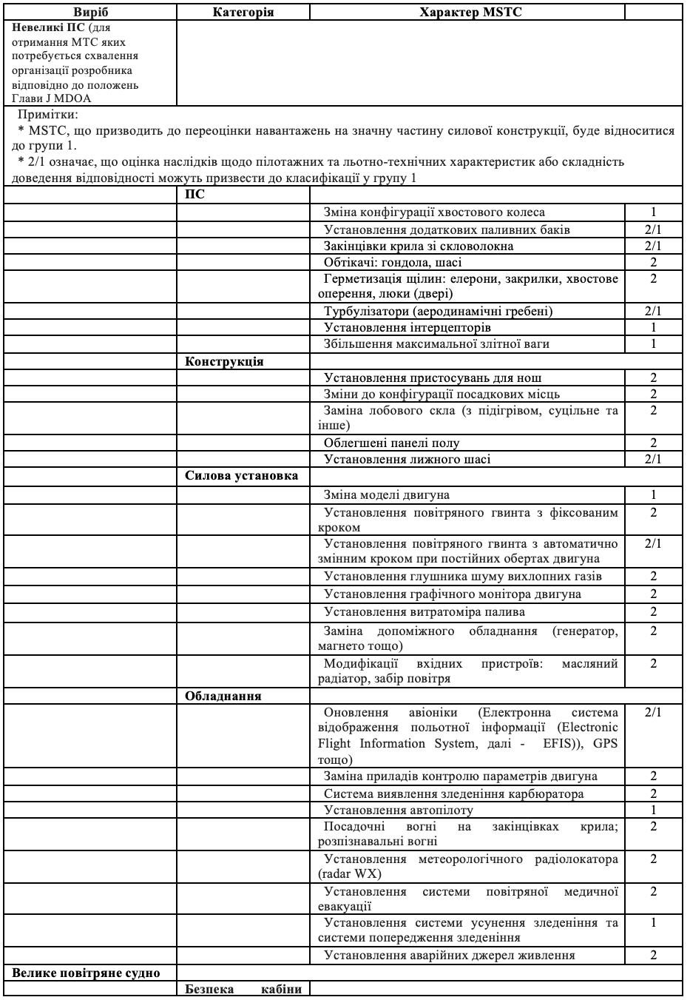 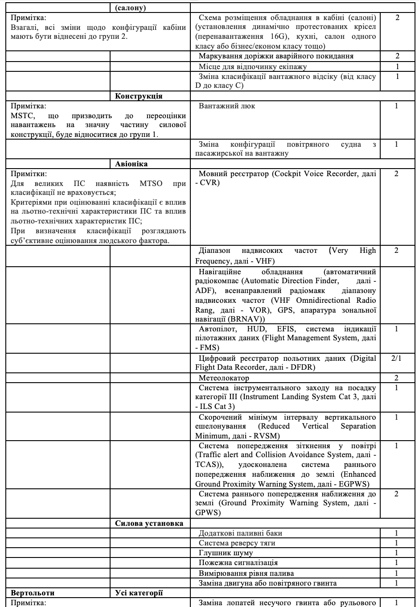 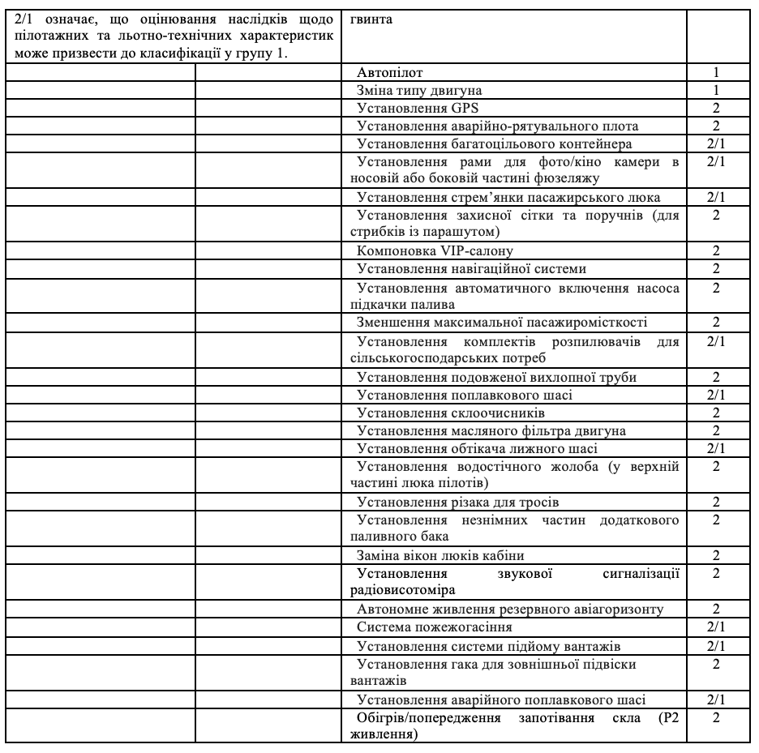(a) Будь-яка організація, що подає заявку на отримання додаткового сертифіката типу, має доводити свою здатність шляхом отримання MDOA, яке видається компетентним органом згідно з положеннями глави J цих Правил.
(b) Шляхом відступу від положень пункту (a) (як альтернативна процедура для доведення своєї здатності) заявник може звертатися до компетентного органу за угодою щодо використання процедур, які визначають особливу методику розроблення, ресурси та послідовність заходів, необхідних для дотримання вимог цієї глави.
(c) Шляхом відступу від положень пунктів (а) та (б) будь-яка державна організація, що подає заявку для отримання додаткового сертифіката типу, може доводити свою здатність, маючи чинну угоду, схвалену компетентним органом (відповідно до положень параграфа 21.А.2 цих Правил) з організацією розробника, яка має доступ до даних типової конструкції. В угоді має бути детально розписано, як саме делеговані повноваження на здійснення заходів та зобов’язання дають можливість державній організації (у співпраці з вищезазначеною організацією розробника) дотримуватися вимог глави J цих Правил, а також доводити відповідність вимогам параграфа 21.A.118A цих Правил.AMC
АМС 21.A.112B(с). Альтернативне доведення
У деяких країнах компетентним органом схвалюється державна організація для виконання обов'язків утримувача MSTC. Така державна організація (яка не має схвалення організації розробника) може подавати заявку на отримання MSTC. У такому випадку вона (відповідно до положень 21.A.2) має укласти угоду з організацією розробника, яка має доступ до даних типової конструкції (щоб забезпечувати здійснення конкретних заходів та зобов'язань). Під час виконання зобов'язань (зазначених у 21.A.118A) слід враховувати, що будь-які альтернативні процедури для створення системи забезпечення розробки мають бути прийнятними для компетентного органу.
21.А.113. Заявка на отримання додаткового сертифіката типу
(a) Заявка на отримання додаткового сертифіката типу має робитися за формою та у спосіб, встановлені компетентним органом.
(b) Заявка на отримання додаткового сертифіката типу має містити усі описи та ідентифікацію згідно з положеннями параграфа 21.А.93 цих Правил. Крім того, така заявка має містити підтвердження, що інформація, на якій ґрунтується ідентифікація, є достатньою, або за рахунок використання власних можливостей заявника, або можливостей утримувача сертифіката типу (за угодою з ним).
21.А.114. Доведення відповідності
AMCAMC 21.A.114. Процес доведення відповідності при отриманні MSTC
1. АМС/GM 21.A.20 мають використовуватися для отримання MSTC.
2. Для головних змін, що схвалюються за процедурою видання додаткового сертифіката типу і які не потребують тривалих і складних заходів з доведення відповідності, програму сертифікації (про яку йдеться в AMC 21.A.20(b)) може бути надано разом із заявкою за спрощеним форматом. Програма сертифікації має містити щонайменше таке:
мета зміни;
опис зміни;
застосовність;
застосовні вимоги льотної придатності, спеціальні умови, еквівалентні дані щодо безпеки і вимоги захисту довкілля;
опис того, як буде доведено відповідність з використанням обраних методів доведення відповідності та посилань на документи відповідності;
необхідність залучення утримувача сертифіката типу виробу, до якого пропонується додатковий сертифікат типу (див. 21.A.113 та 21.A.115);
графік подачі документів відповідності, за потреби.
Будь-який заявник на отримання додаткового сертифіката типу має дотримуватися положень параграфа 21.А.97 цих Правил та відповідати за внесення будь-яких змін до виробу.
21.А.115. Видача додаткового сертифіката типу
Заявник може отримати додатковий сертифікат типу, що видається компетентним органом, після:
(a) доведення відповідності вимогам пункту 21.A.103(а) цих Правил;
(b) доведення своєї здатності згідно з положеннями параграфа 21.А.112В цих Правил;
(c) укладання заявником угоди з утримувачем сертифіката типу (відповідно до положень пункту 21.А.113(b) цих Правил) та наявності:
1) повідомлення утримувача сертифіката типу, що він не має технічних заперечень щодо інформації, наданої згідно з положеннями параграфа 21.А.93 цих Правил; та
2) згоди утримувача сертифіката типу співпрацювати з утримувачем додаткового сертифіката типу, щоб забезпечити виконання усіх зобов’язань щодо підтримання льотної придатності зміненого виробу через дотримання положень параграфів 21.А.44 та 21.А.118А цих Правил.
21.А.116. Передавання
Додатковий сертифікат типу може передаватися лише організації, що довела свою здатність відповідати критеріям параграфа 21.А.112В цих Правил та здатна взяти на себе зобов’язання згідно з положеннями параграфа 21.А.118А цих Правил.
21.А.117. Зміни до модифікованих виробів, що охоплені додатковим сертифікатом типу
(a) Незначні зміни до таких модифікованих виробів, що охоплені додатковим сертифікатом типу, мають класифікуватися та схвалюватися згідно з положеннями глави D цих Правил.
(b) Кожна головна зміна до таких модифікованих виробів, що охоплені додатковим сертифікатом типу, має схвалюватися виданням окремого додаткового сертифіката типу згідно з положеннями цієї глави.
(c) Шляхом відступу від положень пункту (b) головна зміна до таких модифікованих виробів (що охоплені додатковим сертифікатом типу), яка надається на розгляд безпосередньо утримувачем цього додаткового сертифіката типу, може схвалюватися як зміна до існуючого додаткового сертифіката типу.
21.А.118А. Зобов’язання та UKRMPA маркування
Кожен утримувач додаткового сертифіката типу має:
(a) Взяти на себе зобов’язання:
1) встановлені у параграфах 21.А.3А, 21.А.3B, 21.А.4, 21.А.105, 21.А.119 та 21.А.120 цих Правил;
2) співпрацювати з утримувачем сертифіката типу згідно з положеннями підпункту 21.А.115(с)(2) цих Правил та з цією метою підтримувати відповідність критеріям, наведеним у параграфі 21.А.112B цих Правил.
(b) Визначати маркування, що включають літери UKRMPA, згідно з положеннями пункту 21.А.804(а) цих Правил.
21.А.118В. Строк дії та чинність
(а) Додатковий сертифікат типу має видаватися на необмежений строк. Він має залишатися чинним за умови, що:
1) утримувач продовжує відповідати цим Правилам; та
2) сертифікат не здається або не скасовується відповідно до застосовних адміністративних процедур, встановлених компетентним органом.
(b) Після здачі або скасування додатковий сертифікат типу має бути повернуто до компетентного органу.
(с) Утримувач додаткового сертифіката типу має негайно інформувати компетентний орган, якщо він більше не здатний виконувати обов’язки утримувача додаткового сертифіката типу (що визначені цими Правилами) щодо одного або декількох типів виробу. У такому разі він має надавати доступ компетентному органу до всієї необхідної інформації, щоб у подальшому забезпечувати підтримання льотної придатності типової конструкції виробів, яких це стосується.
21.А.119. Керівництва
Утримувач додаткового сертифіката типу має розробляти, зберігати та оновлювати оригінали змін до керівництв, які вимагаються для виробу застосовним сертифікаційним базисом типу та вимогами захисту довкілля (де застосовується), що є необхідним для відображення змін, упроваджених відповідно до додаткового сертифіката типу, і надання копій цих керівництв на вимогу компетентного органу.
21.А.120. Інструкції з підтримання льотної придатності
(а) Утримувач додаткового сертифіката типу на повітряне судно, двигун або повітряний гвинт має надавати щонайменше один комплект пов’язаних змін до інструкцій з підтримання льотної придатності (що розроблені відповідно до застосовного сертифікаційного базису типу) кожній організації, що експлуатує одне або кілька повітряних суден, двигунів або повітряних гвинтів (яких стосуються особливості, пов’язані з додатковим сертифікатом типу) під час їх поставки або після видачі першого сертифіката льотної придатності для відповідного повітряного судна (залежно від того, що настане пізніше) та надалі надавати ці зміни до інструкцій на вимогу будь-якій іншій експлуатуючій організації, якій необхідно дотримуватися будь-яких положень цих інструкцій. Допускається відсутність (під час введення виробу в експлуатацію) деяких змін до керівництв або до частини інструкцій з підтримання льотної придатності, щодо капітального ремонту або інших великих за обсягом форм технічного обслуговування, але вони мають бути наявними, перш ніж будь-який виріб досягне відповідного строку служби чи напрацювання, яке вимірюється в льотних годинах та/або циклах.
(b) Інформація щодо змін, внесених до раніше змінених інструкцій з підтримання льотної придатності, має бути доступною для всіх організацій, що експлуатують виріб, якого стосується цей додатковий сертифікат типу, а також має надаватися на вимогу будь-якій іншій організації, якій необхідно дотримуватися будь-яких цих інструкцій. Компетентному органу має надаватися програма, що демонструє, як саме надаються експлуатуючим організаціям зміни, внесені до раніше змінених інструкцій з підтримання льотної придатності.
Глава F – Виробництво без схвалення (військового) організації виробника
21.А.121. Сфера застосування
GM №1GM №2GM №1 21.A.121. Застосовність ‒ Окремий виріб, компонент або обладнання
У такому контексті “доведення відповідності виробу, компонента і обладнання” застосовним даним з розробки означає, що відповідність застосовним даним з розробки має встановлюватися і доводитися для кожного виробу, компонента або обладнання.
GM №2 21.A.121. Застосовність ‒ Застосовні дані з розробки
Застосовні дані з розробки визначаються як всі необхідні креслення, специфікації та інша технічна інформація, підготовлені заявником на отримання (або утримувачем) схвалення організації розробника, MTC, MSTC, схвалення ремонту або незначної зміни конструкції, або MTSO схвалення (або еквівалентного схвалення, якщо положення Глави F Розділу A Частини-21В використовуються під час виробництва виробів, компонентів або обладнання, конструкцію яких не було схвалено відповідно до положень Частини-21В) і передані із забезпеченням контролю такої передачі виробнику, який виготовляє продукцію відповідно до положень Глави F Розділу А Частини-21В. Такого буде достатньо для розробки виробничих даних, щоб забезпечити умови для виробництва відповідно до даних з розробки.
До видачі MTC, MSTC, схвалення ремонту або незначної зміни конструкції, або MTSO схвалення, або еквівалентного схвалення дані з розробки визначаються як “не схвалені”, але компоненти і обладнання можуть випускатися з видачою UA MAR Form 1 як сертифіката відповідності.
Після видачі MTC, MSTC, схвалення ремонту або незначної зміни конструкції, або MTSO схвалення, або еквівалентного схвалення такі дані з розробки визначаються як “схвалені” і продукція, виготовлена відповідно до них (даних з розробки), відповідає критеріям щодо її випуску з видачою UA MAR Form 1 для цілей льотної придатності.
(a) У цій главі встановлюється процедура доведення відповідності застосовним даним з розробки виробу, компонента та обладнання, які передбачається виготовляти без отримання схвалення організації виробника відповідно до положень глави G цих Правил.
(b) У цій главі встановлюються правила, що визначають зобов’язання виробнику виробу, компонента або обладнання, які виготовляються відповідно до положень цієї глави.
21.А.122. Прийнятність заявника
AMC №1AMC №2AMC №1 21.A.122. Прийнятність ‒ Зв'язок між розробником і виробником
“Угода” вважається прийнятною, якщо вона підтверджується документами і задовольняє компетентний орган належним рівнем взаємодії між виробником та розробником.
Для досягнення належної взаємодії між виробником та розробником, документально закріплені угоди мають (принаймні) визначати (незалежно від того, чи є організація розробника і суб’єкт, що виготовляє або має намір виготовляти продукцію відповідно до положень Глави F Розділу А Частини-21В, окремими юридичними особами чи ні) такі аспекти:
а) обов’язки організації розробника щодо забезпечення точної і своєчасної передачі оновлених застосовних даних з розробки (наприклад, креслення, специфікації матеріалів, габаритні розміри, процеси, обробка поверхні, умови відвантаження, вимоги до якості тощо);
b) обов’язки і процедури виробника щодо отримання, здійснення контролю і використання застосовних даних з розробки, підготовлених організацією розробника;
c) обов’язки і процедури виробника щодо розробки (за потреби) своїх власних виробничих даних відповідно до застосовного пакета даних з розробки;
d) обов’язки виробника з надання допомоги організації розробника у вирішенні питань підтримання льотної придатності і виконання необхідних заходів (наприклад, відстеження компонентів у разі прямої поставки користувачам, переобладнання або доробки, відстеження процесів випуску і схвалених відхилень для окремих компонентів (залежно від конкретного випадку), технічна інформація і допомога тощо);
е) сфера застосування угод, що охоплюють вимоги Глави F Розділу А Частини-21В, зокрема: 21.A.126(а)(4) та 21.A.129(d) і (f) та будь-які пов’язані GM або AMC;
f) обов’язки виробника (у разі виготовлення виробів до отримання сертифіката типу) з надання допомоги організації розробника під час доведення відповідності сертифікаційному базису (доступність та придатність виробничих і випробувальних об’єктів для виготовлення та випробування дослідних моделей і випробувального зразка);
g) процедури для належного врегулювання питань щодо виробничих відхилень та компонентів, що не відповідають застосовним вимогам;
h) засоби щодо досягнення належного контролю за конфігурацією виготовлених компонентів, щоб дозволити виробнику зробити остаточне визначення та ідентифікацію щодо відповідності (або засвідчення льотної придатності) і стану прийнятності;
і) ідентифікація відповідальних осіб/служб, які контролюють все вищезазначене;
j) підтвердження утримувачем MTC (MSTC, схвалення ремонту або зміни, MTSO схвалення), що надані дані з розробки визнаються схваленими, контролюються та коригуються відповідно до угоди.
У багатьох випадках суб’єкт, що виготовляє або має намір виготовляти продукцію відповідно до положень Глави F Розділу А Частини-21В, може отримувати схвалені дані з розробки через організацію виробника, що є посередником. Таке є прийнятним, за умови збереження ефективного зв’язку між утримувачем схвалення конструкції і організацією виробника, щоб відповідати вимогам 21.A.122.
Якщо розробник і виробник дві окремі юридичні особи, то з метою забезпечення верифікації первинної льотної придатності випущених компонентів та обладнання виробнику має надаватися дозвіл щодо прямих поставок кінцевим користувачам.
У разі відсутності загальної угоди на дозвіл прямих поставок, можуть надаватися конкретні дозволи (див. AMC 21.A.4).
AMC №2 21.A.122. Прийнятність ‒ Зв'язок між розробником і виробником
Відповідно до AMC №1 21.A.122 суб’єкт, що виготовляє або має намір виготовляти продукцію відповідно до положень Глави F Розділу А Частини-21В, має довести компетентному органу, що він уклав угоду з організацією розробника. Така угода має бути документально закріпленою, незалежно від того, чи є обидві організації окремими юридичними особами чи ні.
Для суб’єкта, що виготовляє або має намір виготовляти продукцію відповідно до положень Глави F Розділу А Частини-21В, така документально закріплена угода (за допомогою погоджених письмових документів) має спрощувати доведення відповідності вимогам 21.A.122.
У випадку, якщо організація розробника і суб’єкт, що виготовляє або має намір виготовляти продукцію відповідно до положень Глави F Розділу А Частини-21В, входять до складу однієї юридичної особи, взаємодію між ними може бути продемонстровано процедурами компанії, прийнятними для компетентного органу.
У всіх інших випадках для встановлення такої взаємодії розробник/виробник пропонується такий зразок форми:
Зразок форми угоди
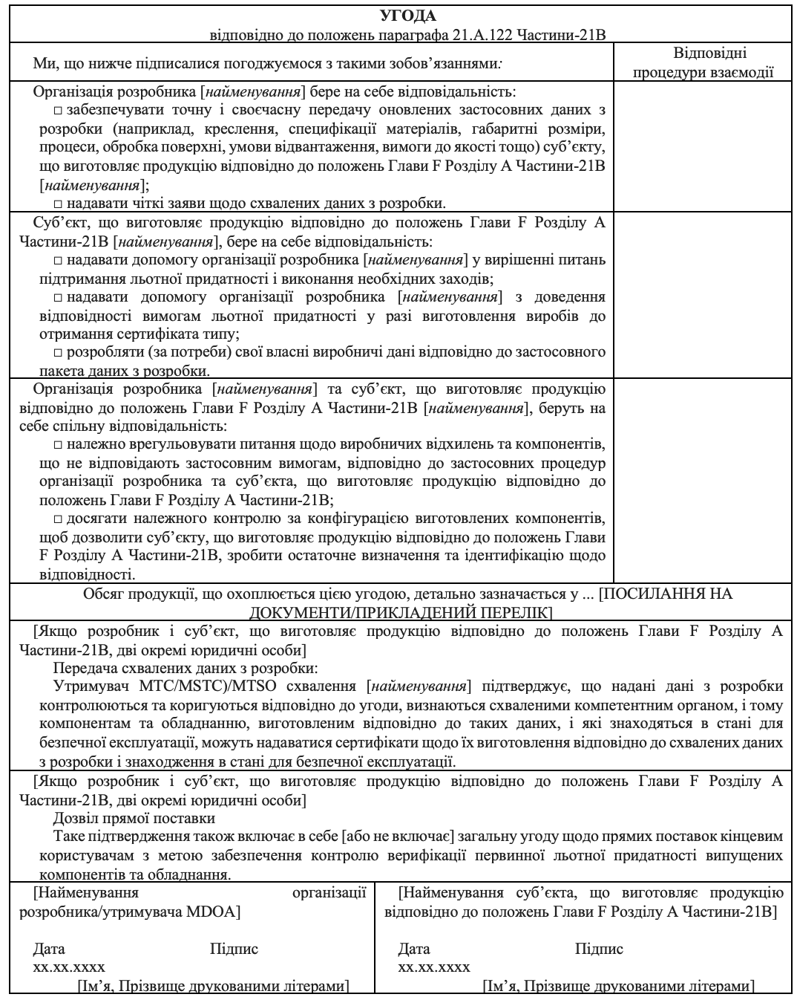Інструкції щодо заповнення форми:
Назва: В назві документа, що розглядається, має чітко зазначатися, що він призначений для визначення процедур щодо організації взаємодії розробник/виробник відповідно до положень 21.A.122.
Зобов’язання: Документ має містити основні зобов’язання (про які йдеться в АМС 21.A.4 і AMC №1 21.A.122) між організацією розробника і суб’єктом, що виготовляє продукцію відповідно до положень Глави F Розділу А Частини-21В.
Процедури, що розглядаються: Визначається відправна точка в системі документування організацій щодо виконання угоди (наприклад, контракт, план якості, довідники, загальні застосовні процедури, робочі плани тощо).
Сфера застосування угоди: Мають зазначатися (за допомогою переліку або посилання на відповідні документи) охоплені угодою вироби, компоненти або обладнання.
Передача схвалених даних з розробки: Визначаються відповідні процедури передачі застосовних даних з розробки (про яку йдеться в AMC №1 21.A.122) від організації розробника до суб’єкта, що виготовляє продукцію відповідно до положень Глави F Розділу А Частини-21В. Також має визначатися методика, за якою організація розробника надає консультації суб’єкту, що виготовляє продукцію відповідно до положень Глави F Розділу А Частини-21В (незалежно від того, схвалені дані з розробки чи ні (див. 21.A.4/АМС 21.A.4)).
Дозвіл прямої поставки: Якщо організація розробника і суб’єкт, що виготовляє продукцію відповідно до положень Глави F Розділу А Частини-21В, є окремими юридичними особами, в угоді має бути чітко визначено, чи дозволена пряма поставка кінцевим користувачам чи ні.
Якщо будь-яка організація виробника/розробника, що є посередником, бере участь в ланцюжку між первинною організацією розробника і суб’єктом, що виготовляє продукцію відповідно до положень Глави F Розділу А Частини-21В, то має надаватися документ, що підтверджує отримання такою організацією-посередником повноважень від організації розробника щодо надання дозволу прямої поставки.
Підписи: В AMC №1 21.A.122 вимагається визначення відповідальних осіб/служб, які контролюють виконання зазначених в угоді зобов’язань. Тому, основний документ має підписуватися спільно уповноваженими представниками організацій розробника і суб’єкта, що виготовляє продукцію відповідно до положень Глави F Розділу А Частини-21В.
Будь-яка організація може застосовувати доведення відповідності окремих виробів, компонентів або обладнання відповідно до положень цієї глави, якщо вона:
(a) є утримувачем або подала заявку на отримання схвалення, що охоплює конструкцію такого виробу, компонента або обладнання; або
(b) забезпечила задовільну взаємодію між виробництвом та розробкою через відповідну угоду із заявником на схвалення такої конструкції або його утримувачем.
21.А.124. Заявка
(a) Кожна заявка на отримання дозволу для доведення відповідності окремих виробів, компонентів та обладнання відповідно до положень цієї глави має робитися за формою та у спосіб, встановлені компетентним органом.GM
GM 21.A.124(а). Заявка – Форма заявки
UA MAR Form 60 має заповнюватися заявником.
Заявка може прийматися від посадової особи з повноваженнями укладати угоди від імені організації.
Заповнена форма пересилається до компетентного органу.
(b) Така заявка має містити:
1) дані, які підтверджують обґрунтованість та демонструють, що:GM
GM 21.A.124(b)(1). Повторне використання підтверджуючих документів
Організації, визнані компетентними органами цивільної авіації або сертифіковані відповідно до стандартів якості AS/EN 9100 (AS 9100 - визнаний у всьому світі стандарт системи менеджменту якості в аерокосмічній індустрії, відомий як AS 9100 в Північній Америці, EN 9100 в Європі) або еквівалентного документа з питань системи забезпечення якості, розробленого НАТО (Allied Quality Assurance Publication, далі AQAP)), можуть (за погодженням з компетентним органом) повторно використовувати частину або всі ті самі підтверджуючі документи під час доведення відповідності положенням Глави F Розділу А Частини-21В.
(i) видача схвалення організації виробника відповідно до положень глави G була б недоречною; абоGM
GM 21.A.124(b)(1)(i). Застосовність ‒ Схвалення відповідно до глави G Частини-21В недоречне
Питання щодо отримання схвального листа на виробництво відповідно до положень Глави F Розділу А Частини-21В може погоджуватися з компетентним органом, якщо:
а) Заявник виготовляє або має намір виготовляти авіаційні вироби, компоненти та/або обладнання, призначені для використання на ПС як частина сертифікованого виробу (це виключає тренажери, наземне обладнання та інструменти), та
b) Компетентний орган визначає, що застосування Глави G Розділу А Частини-21В буде недоречним, і тому застосовується Глава F Розділу А Частини-21В. Основна відмінність між Главами G і F Розділу A Частини-21В в тому, що у Главі G вимагається наявність системи якості, що дозволяє компетентному органу з необхідною впевненістю надавати виробнику повноваження щодо сертифікації власної продукції. Є ситуації, якщо система якості (включаючи функції незалежного контролю і безперервного внутрішнього оцінювання) не є виправданою та/або економічно доцільною. Під час визначення можливостей застосування Глави F компетентний орган може брати до уваги один або комбінацію таких параметрів:
i. немає серійного виробництва (нерегулярність або невеликий обсяг виробництва);
ii. проста технологія (надається можливість ефективного контролю під час процесу виробництва);
iii. дуже маленька організація.
(ii) сертифікація або схвалення виробу, компонента або обладнання відповідно до положень цієї глави необхідні під час очікування видачі схвалення організації виробника згідно з положеннями глави G цих Правил;GM
GM 21.A.124(b)(1)(ii). Сертифікація або схвалення, які необхідні до отримання MPOA
У випадках, якщо Глава G Розділу А Частини-21В є застосовною, але потребується деякий час для організації, щоб досягти відповідності Главі G (створити необхідну документовану систему якості), компетентний орган може погодитися на використання Глави F Розділу А Частини-21В протягом обмеженого періоду (перехідний етап).
У випадках, якщо Глава G Розділу А Частини-21В є застосовною (таких як виробництво MTSO комплектувальних виробів), схвальний лист щодо виробництва відповідно до положень Глави F Розділу А Частини-21В не буде надано, якщо не зроблено заявку для схвалення організації відповідно до Глави G Частини-21В або відсутній задовільний прогрес у доведенні відповідності Главі G. Довгострокове виробництво згідно з Главою F Розділу А Частини-21В не буде дозволятися.
2) короткий зміст інформації, що вимагається у пункті 21.А.125А(b) цих Правил.GM
GM 21.A.124(b)(2). Заявка ‒ Мінімальний обсяг інформації для включення в заявку
На такому ранньому етапі надання повного керівництва не є необхідним, але, принаймні, мають охоплюватися такі питання:
а) зміст керівництва (включаючи перелік документів або процедур чинної системи контролю);
b) опис переліку продукції, що має виготовлятися (включаючи передбачувану кількість/поставки);
c) перелік можливих постачальників;
d) загальний опис виробничих об’єктів;
е) загальний опис засобів виробництва;
f) людські ресурси.
21.А.125А. Видача схвального листа
GMGM № 1 21.A.125A. Схвальний лист ‒ Значення терміну “окремий”
“Окремий” означає, що продукція (яка має виготовлятися) кожного коду партії (part number) або типу (тобто вироби, компоненти або обладнання) конкретно зазначається (безпосередньо або через посилання на перелік дозволених операцій) у схвальному листі від компетентного органу. У схвальному листі також можна зазначати будь-які обмеження щодо обсягу виробництва.
Заявник може отримувати схвальний лист, що видається компетентним органом, та який надає дозвіл на доведення відповідності окремих виробів, компонентів та обладнання згідно з положеннями цієї глави, після:
(a) встановлення системи контролю виробництва, яка забезпечує, що кожен виріб, компонент або обладнання відповідають застосовним даним з розробки та знаходяться у стані, придатному для безпечної експлуатації;
(b) надання керівництва, що містить:GM №1GM №2
GM № 1 21.A.125A(b). Схвальний лист ‒ Зміст керівництва
Керівництво, на яке посилаються у 21.A.125A(b), має містити щонайменше таку інформацію:
а) Декларація заявником зобов’язань щодо:
i. вимог, визначених у Главі F Розділу А Частини-21В;
ii. процедур, що містяться в керівництві і в згаданих в ньому документах;
iii. кожного юридичного положення, встановленого для ведення економічної діяльності (статутної декларації).
b) Декларація заявником щодо підтвердження відповідності керівництва вимогам, визначеним у Главі F Розділу А Частини-21В.
c) Посади, повноваження і обов’язки відповідального персоналу.
d) Організаційна структура (якщо вимагається компетентним органом).
е) Опис ресурсів, включаючи людські (із зазначенням критеріїв кваліфікації персоналу).
f) Опис місць розташування і обладнання.
g) Опис обсягу робіт, виробничих процесів і технічних засобів, а також посилання на “перелік дозволених операцій”.
h) Зв’язки з компетентним органом і зокрема ті, що вимагаються у 21.A.125A(с).
i) Зв’язки із утримувачем схвалення конструкції та надання йому допомоги, а також методика доведення відповідності положенням 21.A.125A(с).
j) Поправки до керівництва;
k) Опис системи контролю (включаючи випробування, див. GM №2 21.A.125A(b), та 21.A.127 і 21.A.128), та процедур щодо доведення відповідності положенням 21.A.126 і пов’язаному GM.
l) Перелік постачальників.
m) Видача заяви про відповідність і перевірка компетентного органу щодо схвалення.
Якщо інформацію наведено в керівництві в іншому порядку, то перехресне посилання на вищезазначений перелік має бути доступно в керівництві.
GM №2 21.A.125A(b). Схвальний лист ‒ Система контролю виробництва: Функціональні випробування
Вся виготовлена продукція підлягає перевірці на відповідних етапах виробництва, що дозволяє ефективно верифікувати відповідність даним з розробки.
Такі перевірки можуть передбачати виконання випробувань з метою оцінювання характеристик, які передбачені у застосовних даних з розробки.
Питання щодо складності продукції та/або її інтеграції у майбутньому значною мірою визначатимуть характер і час проведення таких випробувань, наприклад:
а) обладнання ‒ потребуватиме повного функціонального випробування відповідно до технічних характеристик;
b) компоненти – потребуватимуть, принаймні, базового випробування для встановлення відповідності, але можуть робитися відповідні припущення щодо виконання подальших випробувань у майбутньому;
c) матеріал ‒ потребуватиме верифікації його заявлених якостей.
1) опис системи контролю виробництва, що вимагається в пункті (а);
2) методику прийняття рішень у системі контролю виробництва;
3) опис випробувань (що вимагаються в параграфах 21.А.127 та 21.А.128 цих Правил), прізвища осіб, уповноважених для виконання вимог, зазначених у пункті 21.А130(а) цих Правил;
(c) доведення здатності надавати допомогу відповідно до положень параграфа 21.А.3А та пункту 21.А.129(d) цих Правил.GM
GM 21.A.125A(с). Схвальний лист – Допомога
Компетентному органу має бути надано матеріали, які визначають методику надання допомоги, про яку йдеться у 21.A.125A(с). Відповідний описовий матеріал має бути включено до керівництва, як описано в GM №1 21.A.125A(b).
21.А.125В. Невідповідності
(a) Якщо виявляються об’єктивні ознаки невідповідності утримувача схвального листа застосовним вимогам цих Правил, невідповідності (які вимагають від утримувача схвального листа негайних заходів) мають класифікуватися так:GM №1GM №2
GМ №1 21.A.125B(а). Неконтрольована невідповідність застосовним даним з розробки
Неконтрольованою невідповідністю застосовним даним з розробки є:
а) невідповідність, яку не можна виявити за допомогою систематичного аналізу; або
b) яка перешкоджає ідентифікації виробів, компонентів, обладнання або матеріалів, що знаходяться під її впливом.
GМ №2 21.A.125B(а). Приклади невідповідностей першого рівня
Прикладами невідповідностей першого рівня є невідповідності будь-яким положенням 21.A.126, 21.A.127, 21.A.128, 21.A.129, що може впливати на безпеку ПС.
Слід звернути увагу, що невідповідність положенням таких параграфів розглядається тільки як невідповідність першого рівня за умови встановлення об’єктивних ознак, що така невідповідність є неконтрольованою невідповідністю, що може впливати на безпеку ПС.
1) невідповідність першого рівня – будь-яка невідповідність положенням цих Правил, що може призвести до неконтрольованої невідповідності застосовним даним з розробки та може впливати на безпеку повітряного судна;
2) невідповідність другого рівня – будь-яка невідповідність положенням цих Правил, що не класифікується як невідповідність першого рівня.
(b) Невідповідність третього рівня – будь-яке відхилення, що за об’єктивними ознаками ідентифікується таким, що містить потенційні проблеми, які можуть призвести до невідповідності згідно з положеннями пункту (а).
(c) Згідно з положеннями параграфа 21.В.125 цих Правил, після отримання повідомлення про невідповідності:
1) у разі невідповідності першого рівня утримувач схвального листа має представляти коригувальні заходи, прийнятні для компетентного органу, протягом періоду, що не перевищує 21 робочий день від дати письмового підтвердження повідомлення про невідповідність;
2) у разі невідповідності другого рівня тривалість періоду коригувальних заходів, який дозволяє компетентний орган, має відповідати характеру невідповідності, але в будь-якому разі спочатку не має перевищувати трьох місяців. За певних обставин та з урахуванням характеру невідповідності компетентний орган може подовжувати тримісячний період за умови наявності задовільного плану коригувальних заходів, узгоджених з компетентним органом;
3) невідповідності третього рівня не вимагають від утримувача схвального листа негайних заходів. За потреби, компетентний орган може вказати строк виконання.
(d) У разі невідповідностей першого або другого рівня схвальний лист може підлягати частковому або повному обмеженню, призупиненню його дії або скасуванню відповідно до положень параграфа 21.В.145 цих Правил. Утримувач схвального листа має своєчасно надавати підтвердження про отримання повідомлення щодо обмеження, призупинення або скасування схвального листа.
21.А.125С. Строк дії та чинність
(a) Схвальний лист має видаватися на обмежений строк, який не перевищує одного року, або на строк, погоджений із компетентним органом. Він має залишатися чинним, доки:
1) утримувач схвального листа не втратить спроможності доводити відповідність застосовним вимогам цієї глави; або
2) немає ознак того, що виробник не здатний зберігати задовільний контроль за виготовленням виробів, компонентів або обладнання відповідно до дозволу; або
3) виробник продовжує відповідати вимогам параграфа 21.А.122 цих Правил; або
4) схвальний лист не був зданий чи скасований згідно з положеннями параграфа 21.В.145 цих Правил або не закінчився строк його чинності.
(b) Після здачі, скасування або закінчення строку чинності схвальний лист має бути повернутий до компетентного органу.
21.А.126. Система контролю виробництва
GMGM 21.A.126. Система контролю виробництва
GМ 21.A.126(а) і (b) було розроблено для суб’єктів, що виготовляють продукцію відповідно до положень Глави F Розділу А Частини-21В на довгостроковій основі, як визначено в 21.A.124(b)(1)(i).
Суб’єкти, що виготовляють продукцію відповідно до положень Глави F Розділу А Частини-21В, можуть на перехідному етапі (згідно з положеннями 21.A.124(b)(1)(ii)) також доводити відповідність положенням 21.A.126 прийнятним для компетентного органу чином з використанням еквівалентних АМС/GM до Глави G Розділу А Частини-21В.
(a) Система контролю виробництва, що вимагається відповідно до положень пункту 21.А.125A(a) цих Правил, має надавати методику для визначення того, що:
1) матеріали, що надходять, та закуплені чи виготовлені субпідрядниками компоненти (які використовуються на кінцевому виробі) є такими, як зазначено в застосовних даних з розробки;GM
GM 21.A.126(а)(1). Система контролю виробництва – Відповідність компонентів, обладнання і матеріалів, що постачаються
а) Суб’єкт, що виготовляє продукцію відповідно до положень Глави F Розділу А Частини-21В, відповідає за визначення і застосування стандартів приймання щодо фізичного стану, стану конфігурації та відповідності (за потреби) сировини, субпідрядних робіт і виробів, компонентів, обладнання або матеріалів (що постачаються), незалежно від того, використовуються вони у виробництві чи постачаються клієнтам як запасні частини. Така відповідальність (визначення та застосування стандартів приймання) також розповсюджується на продукцію, що постачається державними організаціями (Government Furnished Equipment, далі ‒ GFE)).
b) Контроль може ґрунтуватися на використанні таких методів (за потреби):
i. перевірка першого зразка, включаючи руйнування (за потреби), щоб підтвердити відповідність зразка застосовним даним для нового виду продукції або продукції нового постачальника;
ii. вхідний контроль і випробування компонентів і обладнання, які постачаються, для їх якісної перевірки під час отримання;
iii. ідентифікація вхідної документації та даних, що мають відношення до доведення відповідності, які мають бути включеними до сертифікаційних документів;
iv. будь-які додаткові роботи, випробування або перевірки, що можуть потребуватися для компонентів або обладнання, які мають постачатися як запасні частин, і які не підлягають перевіркам, передбаченим (як правило) на подальших етапах виробництва або контролю.
с) Суб’єкт, що виготовляє продукцію відповідно до положень Глави F Розділу А Частини-21В, може посилатися на UA MAR Form 1 (видану відповідно до Частини-21В) як свідчення відповідності застосовним даним з розробки.
d) Система контролю суб’єкта, що виготовляє продукцію відповідно до положень Глави F Розділу А Частини-21В, має встановити для постачальників, які не є утримувачами MPOA, систему контролю матеріалів (що надходять) і закупленої або виготовленої субпідрядниками продукції. Така система надає можливість суб’єкту, що виготовляє продукцію відповідно до положень Глави F Розділу А Частини-21В, проводити контроль та випробування такої продукції на підприємстві постачальника, якщо кожну окрему її одиницю не може або не буде повністю перевірено під час отримання.
2) матеріали, що надходять, та закуплені або виготовлені субпідрядниками компоненти належним чином ідентифікуються;GM
GМ 21.A.126(а)(2). Система контролю виробництва – Ідентифікація матеріалів і компонентів, що надходять
Всі компоненти і матеріали (що надходять від сторонніх організацій) підлягають ідентифікації та перевірці, щоб переконатися, що вони не були пошкоджені під час транспортування або розпакування, що вони мають відповідну і належну супровідну документацію і, що їх конфігурація та стан відповідають даним, зазначеним у такій документації.
Тільки після завершення таких перевірок та будь-яких додаткових верифікацій, зазначених у специфікаціях закупівель, компоненти або матеріали (що надходять) можуть бути прийнятими для зберігання на складі та використаними у виробництві.
Таку прийнятність має бути підтверджено офіційним звітом (заявою) про перевірку.
Відповідна система обліку має в будь-який час дозволяти відтворення хронологічних даних щодо кожного матеріалу або компонента.
Ділянки, де виконуються вхідні перевірки і зберігаються матеріали або компоненти в очікуванні завершення перевірок, мають фізично відокремлюватися від інших цехів (підрозділів).
3) процеси, технології виготовлення та проведення складальних робіт (що впливають на якість та безпеку кінцевого виробу) виконуються згідно з технічними умовами, схваленими компетентним органом;GM №1GM №2
GM №1 21.A.126(а)(3). Система контролю виробництва – Перелік специфікацій
Несуть відповідальність:
а) Розробник, щоб визначати всі необхідні процеси, технології і методи, яких мають дотримуватися під час виробництва (21.A.31). Така інформація має надаватися як частина застосовних даних з розробки.
b) Виробник, щоб забезпечувати виконання всіх процесів чітко у відповідності до специфікацій, наданих як частина застосовних даних з розробки.
GМ №2 21.A.126(а)(3). Система контролю виробництва – Методика перевірки процесів виробництва
Система контролю виробництва має містити відповідну методику перевірки щодо здійснення виробничих процесів відповідно до застосовних даних, незалежно від того, чи виконуються вони суб’єктом, що виготовляє продукцію відповідно до положень Глави F Розділу А Частини-21В, чи субпідрядниками під його контролем, включаючи:
а) систему контролю щодо даних (та санкціонованого внесення поправок до них), передбачених для виробництва, перевірок та випробувань, щоб забезпечити її повноту і відповідність сучасним вимогам в місці використання;
b) наявність персоналу з відповідною кваліфікацією, досвідом і підготовкою для виконання всіх завдань щодо виробництва, перевірок та випробувань. Особлива увага має приділятися завданням, що вимагають спеціальних знань і навичок, наприклад, неруйнівне випробування (Non Destructive Testing, далі – NDT) / неруйнівний контроль (Non-Destructive Inspection, далі – NDI), зварювання тощо;
с) робочу зону, де умови роботи і навколишнє середовище контролюються (за потреби) щодо: чистоти, температури, вологості, вентиляції, освітлення, простору/доступу, захисту від шуму і забруднення;
d) достатність обладнання та інструменту, щоб забезпечити безпечне та ефективне виконання всіх визначених завдань без шкідливого впливу на продукцію, що виготовляється. Контроль за калібруванням обладнання та інструментів, які впливають на критичні розміри і значення, щоб довести відповідність (і забезпечити відстежуваність) визнаним національним або міжнародним стандартам.
4) зміни конструкції (включаючи заміщення матеріалів) схвалені відповідно до положень глав D або E та перевірені перед їх застосуванням на кінцевому виробі.GM
GM 21.A.126(а)(4). Система контролю виробництва – Процедури використання застосовних даних з розробки/виробничих даних
а) Якщо суб’єкт, що виготовляє продукцію відповідно до положень Глави F Розділу А Частини-21В, розробляє власні виробничі дані на підставі пакета даних з розробки (наданих утримувачем конструкції), мають бути процедури, щоб підтверджувати точне копіювання первісних даних з розробки.
b) Мають бути процедури, що визначають як саме застосовні дані з розробки використовуються для видання і оновлення виробничих/перевірочних даних, які визначають відповідність виробів, компонентів, обладнання і матеріалів. Має бути також процедура, щоб визначати відстежуваність таких даних по кожному окремому виробу, компоненту, обладнанню або матеріалу з метою точного визначення їх стану щодо безпечної експлуатації та видачі заяви про відповідність.
c) Під час виконання, всі роботи мають супроводжуватися документацією, яка містить безпосередньо (або надає за допомогою відповідних посилань) опис робіт, а також ідентифікацію персоналу, що відповідає за контроль і виконання завдань на кожному етапі роботи.
(b) Система контролю виробництва, яка вимагається в пункті 21.А.125A(a) цих Правил, має також забезпечувати таке:
1) перевірку компонентів на відповідність застосовним даним з розробки на різних етапах процесу виробництва, коли можна зробити безпомилкове визначення;GM
GМ 21.A.126(b)(1). Система контролю виробництва – Перевірка компонентів у процесі виробництва
Метою системи контролю виробництва є проведення перевірок на відповідних етапах процесу виробництва та надання підтверджень, що застосовуються відповідні специфікації, і, що процеси виконуються у суворій відповідності до них.
Під час процесу виробництва кожна одиниця продукції має перевірятися відповідно до плану, у якому ідентифікуються сутність усіх перевірок (що потребуються) та етапи виробництва на яких вони виконуються. У плані також ідентифікуються будь-які особливі навички або кваліфікація, що потребуються особі/особам, які виконують перевірки (наприклад, персоналу з неруйнівного випробування). Копія плану має включатися до керівництва (або посилатися на нього), про яке йдеться в 21.A.125A(b).
Якщо компоненти пошкоджені, вони можуть поставити під загрозу безпеку ПС, додаткові перевірки для такого пошкодження мають виконуватися по завершенні кожного етапу виробництва.
2) зберігання відповідним чином і належну захищеність матеріалів щодо яких існує можливість пошкодження чи псування;GM
GM 21.A.126(b)(2). Система контролю виробництва – Належне зберігання і захист
а) Місця зберігання мають бути захищені від пилу, бруду або сміття, і має здійснюватися належне огородження і пакування зберігаємої продукції.
b) Всі компоненти мають бути захищені від екстремальних температур і вологості та (за потреби) місця їх зберігання мають бути забезпечені обладнанням для регулювання температури або кондиціонування повітря.
с) Стелажне і вантажно-розвантажувальне обладнання має бути таким, щоб забезпечувати зберігання, завантаження-розвантаження і переміщення компонентів без пошкоджень.
d) Освітлення має бути таким, щоб забезпечувати безпечний та ефективний доступ і здійснення вантажно-розвантажувальних операцій, а також забезпечувати належне зберігання продукції, яка чутлива до світла, наприклад гумової продукції.
е) Має бути приділено увагу відокремленню і екрануванню продукції, яка може виділяти пари (наприклад, електролітичні акумуляторні батареї), випромінювати електромагнітне або радіоактивне випромінювання (наприклад, продукція, яка містить магнітні елементи), що потенційно може завдати шкоди іншій продукції, що зберігається.
f) Мають бути створені процедури, щоб зберігати і обліковувати інформацію щодо приналежності та серії компонентів, що зберігаються.
g) Доступ до місць зберігання має бути обмежено уповноваженим персоналом, який повністю підготовлений, щоб розуміти і дотримуватися механізмів і процедур контролю зберігання.
h) Мають бути передбачені умови для окремого зберігання невідповідної продукції в очікуванні її видалення (списання) (див. GM 21.A.126(b)(4).
3) легку доступність і використання (за потребою) чинних креслень з розробки для персоналу, задіяного у виготовленні та перевірках;GM
GM 21.A.126(b)(3). Система контролю виробництва – Використання похідних даних замість первинних даних з розробки
Якщо замість первинних креслень з розробки використовуються похідні дані (наприклад, технологічні карти, карти технологічних процесів, інструкції з виготовлення/перевірок тощо), мають застосовуватися процедури ідентифікації та контролю документів, щоб гарантувати, що застосовна документація завжди точна і чинна.
4) відокремлення та ідентифікацію відбракованих матеріалів та компонентів так, щоб виключити їх установлення на кінцевому виробі;GM
GM 21.A.126(b)(4). Система контролю виробництва – Відокремлення відбракованого матеріалу
Всі матеріали і компоненти, які ідентифіковані на будь-якій стадії виробничого процесу такими, що не відповідають конкретним інструкціям щодо виготовлення та перевірок, мають належно позначатися за допомогою чіткого маркування або наклеювання етикеток, щоб зазначити їх стан невідповідності.
Всі такі невідповідні матеріали або компоненти мають видалятися з виробничої зони, і утримуватися у відокремленій зоні з обмеженим доступом до прийняття відповідного рішення щодо визначення їх подальшої долі (згідно з положеннями 21.A.126(b)(5).
5) застосування схваленої процедури перегляду розробки і виготовлення, щоб розглядати можливість установлення на кінцевому виробі матеріалів та компонентів, що утримуються відокремлено внаслідок їх відхилення від даних з розробки або технічних умов. Матеріали та компоненти, визначені за цією процедурою придатними до застосування, у разі потреби їх доробки або ремонту має бути належно ідентифіковано та повторно перевірено. Відбраковані за цією процедурою матеріали та компоненти має бути позначено та вилучено для запобігання установленню на готовому виробі;GM
GM 21.A.126(b)(5). Система контролю виробництва – Процедура перегляду розробки і виробництва
а) Така процедура має забезпечувати облік інформації щодо відхилень, щоб повідомляти її утримувачу конструкції (відповідно до положень 21.A.122), та ведення обліку результатів аналізу і відповідно вжитих заходів щодо компонента/виробу.
b) Будь-яке ненавмисне відхилення від даних виробництва/перевірки має бути обліковано і опрацьовано (відповідно до положень Глави D або E Розділу A Частини-21В) як зміни до схваленої конструкції.
6) використання звітних матеріалів (представлених відповідно до системи контролю виробництва), ідентифікація їх з готовим виробом або компонентом (за можливості) та зберігання виробником для того, щоб надавати інформацію, необхідну для забезпечення підтримання льотної придатності виробу.GM
GM 21.A.126(b)(6). Система контролю виробництва – Ведення обліку і зберігання документів
а) Звітні матеріали щодо виробництва виконують дві функції. По-перше, вони мають гарантувати (під час виробничого процесу), що вироби, компоненти або обладнання знаходяться у відповідності до контролюємих даних протягом усього виробничого циклу. По-друге, деякі звітні матеріали щодо основних етапів виробничого процесу необхідні, щоб в подальшому надавати об’єктивні свідчення, що всі призначені етапи виробничого процесу задовільно завершені і що відповідність застосовним даним з розробки досягнуто.
Отже, суб’єкт, що виготовляє продукцію відповідно до положень Глави F Розділу А Частини-21В, має впроваджувати на всіх етапах виробництва систему збирання та зберігання звітних матеріалів, що відповідають властивостям виробу і його виробничим процесам.
Облік і контроль такої інформації має бути предметом відповідних документованих процедур в керівництві, про яке йдеться в 21.A.125A(b).
Всі форми носіїв інформації є прийнятними (папір, плівка, магнітна стрічка), за умови, що вони можуть задовольнити вимоги щодо необхідної тривалості архівування відповідно до передбачених умов.
b) У пов'язаних процедурах мають:
i. ідентифікуватися звітні матеріали, що мають зберігатися;
ii. описуватися організація і відповідальність щодо системи архівування (розташування, узагальнення, структура) та умови доступу до інформації (наприклад, по виробу, тематиці);
iii. контролюватися доступ та забезпечуватися ефективний захист від погіршення стану або випадкового пошкодження;
iv. забезпечуватися підтримання можливості зчитування інформації з носіїв;
v. демонструватися для компетентного органу належне функціонування системи обліку звітних матеріалів.
vi. чітко ідентифікуватися особи, які беруть участь у визначенні відповідності;
vii. визначатися період архівування для кожного типу даних, беручи до уваги важливість щодо визначення відповідності, за умови такого:
1. дані, що підтверджують відповідність виробу, компонента або обладнання, мають зберігатися не менше трьох років з дати видачі відповідної заяви про відповідність або сертифіката дозволеної передачі;
2. дані, що вважаються важливими для підтримання льотної придатності, мають зберігатися протягом всього терміну експлуатації виробу, компонента або обладнання;
viii. дані щодо постачаємих компонентів можуть зберігатися постачальником, якщо він має (відповідно до Глави F Розділу А Частини-21В) узгоджену компетентним органом систему. Виробник має в кожному випадку визначати період архівування та переконатися самому (і переконати компетентний орган), що носії інформації є прийнятними.
21.А.127. Випробування: повітряне судно
GMGM 21.A.127. Схвалені виробничі наземні і льотні випробування
Виробничі наземні і льотні випробування для нового ПС будуть визначатися організацією розробника ПС.
(a) Кожен виробник повітряного судна, виготовленого відповідно до положень цієї глави, має встановлювати схвалену процедуру виробничих наземних та льотних випробувань і форми контролю та згідно з цими формами (як засіб встановлення його відповідності вимогам пункту 21.А.125А(а) цих Правил) проводити випробування кожного виготовленого повітряного судна.
(b) Кожна процедура виробничого випробування має включати таке:
1) перевірку пілотажних характеристик;
2) перевірку льотно-технічних характеристик (з використанням звичайних приладів повітряного судна);
3) перевірку належного функціонування всього обладнання та систем повітряного судна;
4) визначення належного маркування всіх приладів та встановлення всіх табличок і льотних інструкцій (що вимагаються) після проведення випробувань;
5) перевірку експлуатаційних характеристик повітряного судна на землі;
6) перевірку будь-яких інших питань щодо повітряного судна, що проходить випробування.
21.А.128. Випробування: двигуни та повітряні гвинти
GM №1GM №2GM №3GM №1 21.A.128. Прийнятні функціональні випробування – Двигуни
Функціональні випробування, що потребуються для нового двигуна, будуть визначатися організацією розробника двигуна і зазвичай будуть включати щонайменше таке:
а) Випробування двигуна, що включають визначення витрат палива і масла та визначення параметрів роботи двигуна при максимальній проєктної потужності (або тязі) для тривалої роботи (номінального режиму роботи) і (якщо застосовується) при проєктній злітній потужності (або тязі);
b) Період роботи при максимальній проєктній потужності (або тязі) для тривалої роботи (номінального режиму роботи). Для двигунів, що мають проєктну злітну потужність (або тягу), частина такого періоду має бути як робота при проєктній злітній потужності (або тязі).
Випробувальне обладнання, що використовується для проведення тестових випробувань, має бути здатним видавати дані з визначеною точністю, достатньою, щоб гарантувати відповідність вихідних параметрів роботи двигуна заданим проєктним характеристикам і експлуатаційним обмеженням.
GМ №2 21.A.128. Прийнятні функціональні випробування – Повітряні гвинти зі змінним кроком
Функціональні випробування, що потребуються для нового гвинта, будуть визначатися організацією розробника повітряного гвинта і зазвичай мають включати ряд повних циклів керування за всім діапазоном кроків і частот обертання повітряного гвинта. Крім того, зазвичай, буде потребуватися декілька циклів роботи повітряних гвинтів у режимі флюгування та в режимі реверсування від найменшого нормального кроку до максимального реверсного кроку.
GM №3 21.A.128. Прийнятні функціональні випробування – Двигуни і повітряні гвинти
Після функціональних випробувань кожен двигун або повітряний гвинт має перевірятися, щоб визначити, що вони знаходяться в стані для безпечної експлуатації. Така перевірка буде визначатися організацією розробника і зазвичай включає внутрішній огляд і обстеження. Обсяг внутрішніх перевірок зазвичай буде визначатися на підставі позитивних результатів попередніх перевірок, проведених на перших виготовлених двигунах, а також на підставі досвіду експлуатації.
Кожен виробник двигунів або повітряних гвинтів, виготовлених відповідно до положень цієї глави, має проводити прийнятні функціональні випробування на кожному двигуні або повітряному гвинті (як зазначено у документах утримувача сертифіката типу), щоб визначати їх належне функціонування у всьому експлуатаційному діапазоні, для якого вони сертифіковані. Випробування проводяться як засіб встановлення відповідності двигунів або повітряних гвинтів вимогам пункту 21.А.125А(а) цих Правил.
21.А.129. Зобов’язання виробника
Кожен виробник виробу, компонента або обладнання, що виготовляються відповідно до положень цієї глави, має:
(a) забезпечувати доступність до кожного виробу, компонента або обладнання для перевірки компетентним органом;GM
GМ 21.A.129(а). Забезпечення належних умов для роботи компетентного органу під час проведення ним перевірок
Кожен виріб, компонент або обладнання мають надаватися для перевірки в будь-який час на вимогу компетентного органу.
Рекомендується компетентному органу заздалегідь складати та надавати організації виробника для ознайомлення план щодо обсягу перевірки.
Виробник (за потреби) має виділяти персонал та надавати документацію, інструменти, обладнання тощо, щоб створити належні умови для компетентного органу під час проведення ним перевірок.
(b) зберігати за місцем виробництва технічні дані та креслення, необхідні для визначення відповідності виробу застосовним даним з розробки;
(c) підтримувати систему контролю виробництва, яка гарантує, що кожний виріб відповідає застосовним даним з розробки та знаходиться в стані для безпечної експлуатації; AMC №1AMC №2AMC №3
AMC №1 21.A.129(с). Зобов’язання виробника – Відповідність дослідних моделей і випробувальних зразків
Згідно з положеннями 21.A.33 необхідно визначати відповідність дослідних моделей і випробувальних зразків застосовним даним з розробки. Для готового ПС (в рамках допомоги заявнику на схвалення конструкції) має надаватися “документ відповідності”, що затверджується компетентним органом. Для інших виробів, окрім готового ПС, а також для компонентів та обладнання (в рамках допомоги заявнику на схвалення конструкції) може застосовуватися UA MAR Form 1, затверджена компетентним органом як документ відповідності.
AMC №2 21.A.129(с). Зобов’язання виробника – Відповідність застосовним даним з розробки
Появу окремих конфігурацій часто обумовлено потребами замовника і необхідністю удосконалень або змін, що можуть запроваджуватися утримувачем сертифіката типу. Протягом виробничого процесу, ймовірно, також будуть ненавмисні відхилення (дозволені відхилення або невідповідності). Всі такі зміни мають бути схваленими заявником/утримувачем схвалення конструкції або (за потреби) компетентним органом.
AMC №3 21.A.129(с). Зобов’язання виробника – Стан для безпечної експлуатації
До подачі компетентному органу заяви про відповідність виробник (відповідно до положень цієї глави) має проводити дослідження щодо кожного нижчезазначеного пункту. Документально оформлені результати такого дослідження мають зберігатися виробником. Деякі з таких документів (документально оформлених результатів) можуть потребуватися або для надання експлуатуючій організації (власнику ПС), або для підтвердження заяви про відповідність компетентному органу.
а) Обладнання або модифікації, які не відповідають вимогам держави виробника, але були прийнятними для компетентного органу держави-імпортера.
b) Ідентифікація виробів, компонентів або обладнання, які:
i. не нові;
ii. надаються покупцем або організацією, що буде їх експлуатувати (включаючи такі, про які йдеться в 21.A.801 і 21.A.805).
с) Технічні звітні матеріали, що ідентифікують місце знаходження і заводські номери виробів, компонентів та обладнання ПС, які мають відстежуватися з метою верифікації первинної льотної придатності (включаючи такі, про які йдеться 21.A.801 і 21.A.805).
d) Формуляр і книга обліку внесення змін до ПС (відповідно до вимог компетентного органу).
е) Формуляри для виробів (про які йдеться в 21.A.801), установлені як частина типової конструкції (відповідно до вимог компетентного органу).
f) Звіт про вагу і центровку для готового ПС.
g) Облік відсутніх компонентів і обладнання або дефектів, які не впливають на льотну придатність (наприклад, це може бути спорядження (предмети меблювання), або GFE (компоненти і обладнання можуть обліковуватися в журналі технічного стану або іншому відповідному документі, з яким офіційно ознайомлені експлуатуюча організація та компетентний орган)).
h) Допоміжна інформація щодо виробу, що вимагається сертифікаційним базисом (така як Керівництво з технічного обслуговування, Каталог вузлів та деталей або MMEL), яка відображає фактичний стандарт конструкції конкретного ПС. Крім того мають бути аналіз електричного навантаження і монтажна електрична схема.
i) Звітні матеріали, які демонструють виконання робіт з технічного обслуговування у відповідності з облікованими годинами випробувальних польотів ПС. Такі звітні матеріали мають показати взаємозв’язок між фактичним станом технічного обслуговування конкретного ПС, переліком рекомендованих виробником завдань з технічного обслуговування і документом/звітом комітету із аналізу технічного обслуговування і ремонту (Maintenance Review Board, далі ‒ MRB).
j) Детальна інформація про стан справності ПС щодо:
вмісту палива і масла;
забезпеченості аварійно-рятувальним обладнанням, що потребується в експлуатації (наприклад, рятувальними плотами тощо).
к) Детальна інформація щодо схваленої конфігурації внутрішньої компоновки, якщо вона відрізняється від тієї, що схвалена як частина типової конструкції.
l) Має бути доступним схвалене льотне керівництво, що відповідає стандарту конструкції і стану доробок (модифікацій) конкретного ПС.
m) Показати, що перевірки щодо наявності сторонніх предметів на всіх відповідних етапах виробництва були успішно виконані.
n) Реєстраційне маркування нанесено на зовнішній поверхні повітряного судна, як того вимагає національне законодавство.
о) Мають бути сертифікати щодо шуму і на бортову радіостанцію (де застосовується).
р) Установлений компас (або компасні системи) скориговані і скомпенсовані, а девіаційна таблиця знаходиться на ПС (де застосовується).
q) Перелік категорій програмного забезпечення.
r) Дані з нівелювання ПС та габаритні розміри рухомих частин рульових поверхонь.
s) Елементи обладнання, які будуть демонтовані перед початком комерційних транспортних повітряних перевезень (наприклад, комплекти паливної, радіо або навігаційної систем, які використовуються для перегону повітряних суден).
t) Перелік усіх застосовних SB і директив льотної придатності, які є чинними.
(d) надавати допомогу утримувачу сертифіката типу (обмеженого сертифіката типу) або схвалення конструкції у вирішенні питань щодо проведення будь-яких заходів з підтримання льотної придатності, які пов’язані з виготовленими виробами, компонентами або обладнанням;
(e) встановлювати (в інтересах безпеки) систему звітності щодо внутрішніх подій та забезпечувати її функціонування для сприяння збиранню та оцінюванню повідомлень про події (з метою виявлення несприятливих тенденцій або усунення недоліків) та отримувати інформацію щодо зафіксованих подій. Ця система має включати аналіз відповідної інформації (яка стосується подій) та оприлюднення інформації за результатами його проведення;
(f)
1) повідомляти утримувача сертифіката типу (обмеженого сертифіката типу) або схвалення конструкції про усі випадки, коли у виготовлених ним виробах, компонентах або обладнанні з часом виявляються відхилення від застосовних даних з розробки, та проводити разом з ним дослідження, щоб виявляти ті відхилення, які можуть призвести до небезпечного стану;
2) повідомляти компетентний орган про відхилення, які можуть призвести до небезпечного стану, виявленого згідно з положеннями підпункту (1). Такі повідомлення мають робитися за формою та у спосіб, встановлені компетентним органом відповідно до положень підпункту 21.A.3А(b)(2) цих Правил, або бути схвалені компетентним органом;
3) якщо виробник є постачальником для іншої організації виробника, повідомляти її про усі випадки, коли він з часом виявив можливість відхилень від застосовних даних з розробки у виготовлених для неї виробах, компонентах або обладнанні.
21.А.130. Заява про відповідність
(a) Кожен виробник виробу, компонента або обладнання (виготовлених відповідно до положень цієї глави) має підготувати заяву про відповідність для готового повітряного судна за Формою EMAR Form 52 або за Формою EMAR Form 1 для інших виробів, компонентів або обладнання. Таку заяву має підписати уповноважена особа організації виробника.
(b) Заява про відповідність має передбачати: AMC №1AMC №2
АМС №1 21.A.130(b). Заява про відповідність для готового ПС
Мета і сфера застосування
Ці АМС стосуються UA MAR Form 52, яка видається згідно з положеннями Глави F Розділу А Частини-21В і використовується тільки як заява про відповідність для готового ПС. Заява про відповідність (яка видається згідно з положеннями Глави F Розділу А Частини-21В) для виробів (крім готових ПС) та для компонентів і обладнання описується в AMC №2 21.A.130(b).
У Блоці 21 UA MAR Form 52 (для виробництва відповідно до положень Глави F Розділу А Частини-21В) має міститися (а не зазначатися в окремому документі) заява компетентного органу (що наведена нижче) про набуття юридичної сили. Заяву може бути попередньо надруковано, сформовано на комп’ютері або проставлено за допомогою штампа. Її має бути підписано представником компетентного органу (прізвище та посада/ідентифікаційні дані представника компетентного органу і дата).
ЗАЯВА ПРО НАБУТТЯ ЮРИДИЧНОЇ СИЛИ:
“Головне управління державної авіації України за результатами інспекції визнає юридичну силу цієї заяви про відповідність, яку видано згідно з положеннями Глави F Розділу А Частини-21В”.
AMC №2 21.A.130(b). Заява про відповідність для виробів (крім готових ПС), компонентів, обладнання і матеріалів ‒ Сертифікат дозволеної передачі (UA MAR Form 1)
АМС, пов’язані з UA MAR Form 1, містяться у “Формах документів первинної льотної придатності”, які затверджуються наказом начальника Головного управління державної авіації України.
1) для кожного виробу, компонента або обладнання – заяву, що виріб, компонент або обладнання відповідають схваленим даним з розробки та знаходяться у стані, придатному для безпечної експлуатації; та
2) для кожного повітряного судна – заяву, що на повітряному судні проведено перевірки на землі та в польоті згідно з положеннями пункту 21.А.127(а) цих Правил; та
3) для кожного двигуна або повітряного гвинта – заяву про проведені виробником остаточні функціональні випробування двигуна або повітряного гвинта згідно з положеннями параграфа 21.A.128 цих Правил; та
4) додатково для двигунів – заяву, що готовий двигун відповідає застосовним (на дату виготовлення двигуна) вимогам до емісії (де застосовується).
(c) Кожен виробник такого виробу, компонента або обладнання має представляти поточну заяву про відповідність для підтвердження компетентним органом:AMC
AMC 21.A.130(с) Набуття юридичної сили заяви про відповідність
Заявник має гарантувати, що кожен виріб, компонент і обладнання відповідають застосовним даним з розробки та знаходяться в придатному для безпечної експлуатації стані перед видачою і підписанням пов’язаних з ними заяв про відповідність. У процесі виробництва заявник повинен використовувати такі (раніше узгоджені з компетентним органом) засоби, системи, процеси та процедури, як передбачено в керівництві.
Потім компетентний орган має провести перевірку виробів, компонентів або обладнання і аналіз звітних матеріалів, щоб переконатися в такому:
були використані узгоджені засоби, системи, процеси та процедури;
заява про відповідність може розглядатися документом, що має юридичну силу.
1) під час первісного передавання ним прав власності на такий виріб, компонент або обладнання; абоAMC
АМС 21.A.130(с)(1). Первинне передавання прав власності
Під час передавання прав власності:
а) Для готового ПС, незалежно від того чи зроблено заявку на отримання сертифіката льотної придатності, UA MAR Form 52 має бути заповнено і подано компетентному органу для валідації.
b) Для інших виробів (крім готових ПС), компонентів і обладнання UA MAR Form 52 не застосовується, а має бути заповнено і подано для валідації компетентному органу UA MAR Form 1.
Примітка: Якщо між виконанням останнього виробничого завдання і поданням UA MAR Form 52 (або UA MAR Form 1) існує значна затримка, то додаткову документацію (щодо зберігання, консервації і обслуговування виробу, компонента або обладнання з моменту їх виробництва) має бути представлено компетентному органу.
2) під час подання заявки на первісну видачу сертифіката льотної придатності повітряного судна; або
3) під час подання заявки на первісну видачу версії документа про льотну придатність для двигуна, повітряного гвинта, компонента або обладнання.
(d) Компетентний орган має затверджувати своїм підписом заяву про відповідність (якщо переконається після перевірки), що виріб, компонент або обладнання відповідають застосовним даним із розробки та знаходяться в стані, придатному для безпечної експлуатації.
Глава G – Схвалення (військове) організації виробника (Military Production Organisation Approval – MPOA)
21.А.131. Сфера застосування
GMGM 21.A.131. Сфера застосування ‒ Застосовні дані з розробки
Застосовні дані з розробки визначаються як всі необхідні креслення, специфікації та інша технічна інформація, підготовлені заявником на отримання (або утримувачем) схвалення організації розробника, MTC, MSTC, схвалення ремонту або незначної зміни конструкції чи MTSO схвалення (або еквівалентного схвалення, якщо положення Глави G Розділу A Частини-21В використовуються під час виробництва виробів, компонентів або обладнання, конструкцію яких не було схвалено відповідно до положень Частини-21В) і передані (із забезпеченням контролю такої передачі) утримувачу схвалення організації виробника. Такого має бути достатньо для розробки виробничих даних, щоб створити умови для серійного виробництва відповідно до даних з розробки.
До видачі MTC, MSTC, схвалення ремонту або незначної зміни конструкції, або MTSO схвалення, або еквівалентного схвалення дані з розробки визначаються як “не схвалені”, але компоненти і обладнання можуть випускатися з видачою UA MAR Form 1 як сертифіката відповідності.
Після видачі MTC, MSTC, схвалення ремонту або незначної зміни конструкції, або MTSO схвалення, або еквівалентного схвалення такі дані з розробки визначаються як “схвалені” і продукція, виготовлена відповідно до них (даних з розробки), відповідає критеріям щодо її випуску з видачою UA MAR Form 1 для цілей льотної придатності.
У цій главі встановлюються:
(a) процедура видачі схвалення (військового) організації виробника (далі ‒ MPOA) для організації виробника, що доводить відповідність виробів, компонентів та обладнання застосовним даним із розробки;
(b) правила, що визначають зобов’язання та повноваження заявників на отримання таких схвалень та їх утримувачів.
21.А.133. Прийнятність заявника
Будь-яка організація може бути заявниками на отримання схвалення відповідно до положень цієї глави.
Заявник має:
(a) обґрунтовувати, що для визначеного обсягу робіт схвалення згідно з цією главою є прийнятним, щоб доводити відповідність конкретній конструкції; таGM
GM 21.A.133(а). Прийнятність заявника – Прийнятне схвалення для доведення відповідності
Термін “прийнятний” слід розуміти так:
а) Заявник виготовляє або має намір виготовляти авіаційні вироби, компоненти та/або обладнання, призначені для використання на ПС як частини сертифікованого виробу (це виключає тренажери, наземне обладнання та інструменти).
b) Заявнику, зазвичай, потребуватиметься схвалення, виходячи з одного або кількох таких критеріїв:
i. виробництво ПС, двигунів або повітряних гвинтів (крім випадків, якщо компетентний орган вважає MPOA недоцільним);
ii. виробництво MTSO комплектувальних виробів та компонентів з маркуванням UKRMPA;
iii. прямі поставки користувачам (таким як власники або організації з технічного обслуговування) з необхідністю здійснення повноважень щодо видачі сертифікатів дозволеної передачі (UA MAR Form 1);
iv. участь у програмі міжнародного співробітництва, якщо компетентний орган вважає за необхідне здійснення діяльності схваленими організаціями;
v. важливість компонентів або обладнання і технології їх виготовлення. У такому випадку, схвалення може бути визнано компетентним органом як найкращий засіб здійснення своїх обов’язків щодо контролю льотної придатності;
vi. якщо компетентний орган визначає інші причини необхідності схвалення.
с) Не підлягають схваленню суб’єкти виробничої діяльності, які є лише субпідрядниками для основних виробників і знаходяться під їх безпосереднім наглядом.
d) Якщо стандартні деталі, матеріали, процеси або послуги включені до застосовних даних з розробки (див. рекомендації щодо застосовних даних з розробки в GM 21.A.131), їх стандарти мають контролюватися утримувачем MPOA, щоб відповідати вимогам щодо їх використання у виробах, компонентах або обладнанні. З урахуванням такого, виробники або постачальники (включаючи суб’єктів, що надають послуги) нижчезазначеного не будуть розглядатися як заявники на отримання схвалень організації виробника:
i. витратних матеріалів;
ii. сировини;
iii. стандартних деталей;
iv. компонентів, які ідентифіковані в супровідних документах виробу, як “промислова поставка” або “не становлять небезпеки”;
v. послуг з виконання неруйнівних випробувань або перевірок;
vi. послуг з виконання процесів (термічна обробка, обробка поверхні, дрібоструменева обробка тощо).
(b) бути утримувачем схвалення цієї конкретної конструкції або подавати заявку на його отримання; абоAMC №1AMC №2
АМС №1 21.A.133(b) і (с). Прийнятність заявника – Зв’язок між організаціями розробника та виробника
Угода вважається прийнятною, якщо її документально закріплено і вона задовольняє компетентний орган рівнем взаємодії між організаціями розробника та виробника.
Для досягнення належного рівня такої взаємодії, документально закріплені угоди мають принаймні визначати (незалежно від того, чи є обидві організації окремими юридичними особами чи ні) такі аспекти:
а) обов’язки організації розробника щодо забезпечення точної і своєчасної передачі оновлених застосовних даних з льотної придатності (наприклад, креслення, специфікації матеріалів, габаритні розміри, процеси, обробка поверхні, умови відвантаження, вимоги до якості тощо);
b) обов’язки та процедури утримувача/заявника на отримання MPOA щодо розробки (де застосовується) своїх власних виробничих даних відповідно до пакета даних з льотної придатності;
c) обов’язки утримувача/заявника на отримання MPOA з надання допомоги організації розробника у вирішенні питань підтримання льотної придатності і виконання необхідних заходів (наприклад, відстеження компонентів у разі прямої поставки користувачам, переобладнання або внесення змін, відстеження процесів випуску і схвалених відхилень для окремих компонентів (залежно від конкретного випадку), технічна інформація і допомога тощо);
d) сфера застосування угод має охоплювати вимоги Глави G Розділу А Частини-21В і пов’язані AMC і GM, зокрема: 21.A.145(b), 21.A.165(с), (f) і (g);
е) обов’язки утримувача/заявника на отримання MPOA (у разі виготовлення виробів до отримання МТС) з надання допомоги організації розробника у доведенні відповідності вимогам льотної придатності (доступність та придатність виробничих і випробувальних об’єктів для виготовлення та випробування дослідних моделей і випробувального зразка);
f) процедури для належного врегулювання питань щодо виробничих відхилень та компонентів, що не відповідають застосовним вимогам;
g) процедури та пов’язані з ними обов’язки щодо досягнення належного контролю конфігурації виготовлених компонентів, щоб дозволити виробнику зробити остаточне визначення та ідентифікацію щодо відповідності (або остаточної версії вимог льотної придатності) і статусу прийнятності;
h) ідентифікація відповідальних осіб/служб, які контролюють все вищезазначене;
i) підтвердження утримувачем MTC (MSTC, схвалення ремонту або зміни, MTSO схвалення), що надані дані з розробки визнаються схваленими, контролюються та коригуються відповідно до угоди.
У багатьох випадках виробник може отримувати схвалені дані з розробки через організацію виробника, що є посередником. Таке є прийнятним, за умови збереження ефективного зв’язку між утримувачем схвалення конструкції і організацією виробника, щоб відповідати вимогам 21.A.133.
Якщо організації розробника та виробника дві окремі юридичні особи, то з метою забезпечення контролю за верифікацію первинної льотної придатності випущених компонентів та обладнання, виробнику має надаватися дозвіл щодо прямих поставок кінцевим користувачам.
У разі відсутності загальної угоди на дозвіл прямих поставок, можуть надаватися конкретні дозволи (див. AMC 21.A.4).
АМС №2 21.A.133(b) і (c). Прийнятність заявника – Зв’язок між організаціями розробника та виробника
Відповідно до AMC №1 21.A.133(b) і (c) утримувач MPOA має доводити компетентному органу, що він уклав угоду з організацією розробника. Така угода має бути документально закріпленою, незалежно від того, є обидві організації окремими юридичними особами чи ні.
Для утримувача MPOA така документально закріплена угода (за допомогою погоджених письмових документів) має спрощувати доведення відповідності вимогам 21.А.133(b) і (c).
У випадку, якщо організація розробника і утримувач MPOA входять до складу однієї юридичної особи, взаємодію між ними може бути продемонстровано процедурами компанії, прийнятними для компетентного органу.
У всіх інших випадках для встановлення такої взаємодії розробник/виробник пропонується такий зразок форми:
Зразок форми угоди
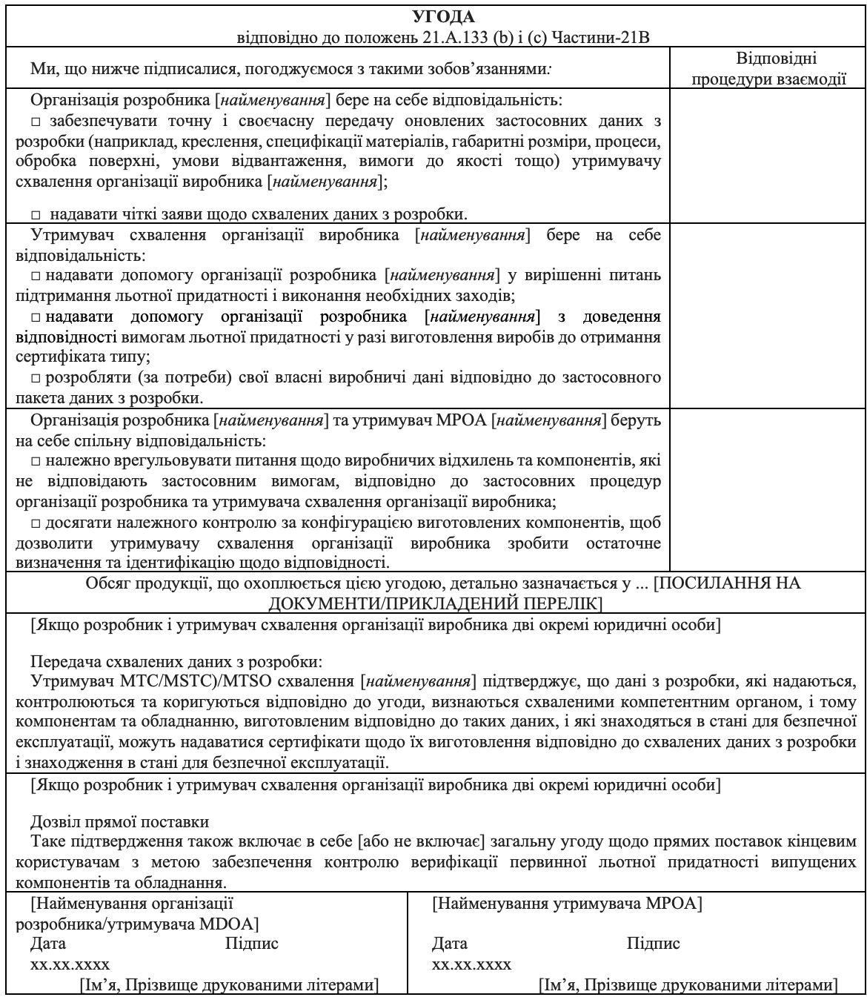Інструкції щодо заповнення:
Назва: В назві документа, що розглядається, має чітко зазначатися, що він призначений для визначення процедур щодо організації взаємодії розробник/виробник відповідно до положень 21.A.133(b) і (c).
Зобов’язання: Документ має містити основні зобов’язання (про які йдеться в АМС 21.A.4 і AMC №1 21.A.133(b) і (c)) між організацією розробника і утримувачем MPOA.
Процедури, що розглядаються: Визначається відправна точка в системі документування організацій щодо виконання угоди (наприклад, контракт, план якості, довідники, загальні застосовні процедури, робочі плани тощо).
Сфера застосування угоди: Мають зазначатися (за допомогою переліку або посилання на відповідні документи) охоплені угодою вироби, компоненти або обладнання.
Передача схвалених даних з розробки: Визначаються відповідні процедури передачі застосовних даних з розробки (про що йдеться у 21.A.131 та в GM 21.A.131) від організації розробника до утримувача MPOA. Також має визначатися методика, за якою організація розробника надає консультації утримувачу MPOA (незалежно від того, чи схвалені дані з розробки чи ні (див. 21.A.4/АМС 21.A.4)).
Дозвіл прямої поставки: Якщо організація розробника і утримувач MPOA є окремими юридичними особами, в угоді має бути чітко визначено, чи дозволена пряма поставка кінцевим користувачам чи ні.
Якщо будь-яка організація виробника/розробника, що є посередником, бере участь в ланцюжку між первинною організацією розробника і утримувачем MPOA то має надаватися документ, що підтверджує отримання такою організацією-посередником повноважень від організації розробника щодо надання дозволу прямої поставки.
Підписи: В AMC №1 21.A.133(b) і (c) вимагається визначення відповідальних осіб/служб, які контролюють виконання зазначених в угоді зобов’язань. Тому, основний документ має підписуватися спільно уповноваженими представниками організацій розробника і утримувача MPOA.
(c) забезпечувати (через відповідну угоду із заявником на отримання схвалення цієї конкретної конструкції або його утримувачем) задовільну взаємодію між виробництвом та розробкою.
21.А.134. Заявка
GMGМ 21.A.134. Заявка – Форма і спосіб у який вона робиться
До компетентного органу мають подаватися заповнена відповідальним керівником організації UA MAR Form 50, короткий зміст МPOE, а також детальна інформація щодо пропонуємих умов схвалення.
Організації, визнані компетентними органами цивільної авіації, або сертифіковані відповідно до стандартів якості AS/EN 9100 (AS 9100 - визнаний у всьому світі стандарт системи менеджменту якості в аерокосмічній індустрії, відомий як AS 9100 в Північній Америці, EN 9100 в Європі) або еквівалентного документа з питань системи забезпечення якості, розробленого НАТО (Allied Quality Assurance Publication), можуть (за погодженням з компетентним органом) повторно використовувати частину або всі ті самі підтверджуючі документи під час доведення відповідності положенням Глави G Розділу А Частини-21В.
Кожна заявка на отримання схвалення організації виробника має робитися для надання компетентному органу за формою і у спосіб, що ним встановлені, та має містити короткий зміст інформації (яка вимагається у параграфі 21.А.143 цих Правил) і необхідні умови схвалення, що видаються відповідно до параграфа 21.А.151 цих Правил.
21.А.135. Видача схвалення організації виробника
GMGM 21.A.135. Видання MPOA
а) Якщо організація виробника має чинне POA, видане відповідно до АПУ-21 Державною Авіаційною Службою України (далі ‒ ДАСУ), та виробнича діяльність якої із випуску продукції військового призначення відповідає обсягу умов схвалення ДАСУ, то таку організацію може бути визнано компетентним органом такою, що задовольняє вимогам Частини-21В для такого обсягу робіт з будь-яким подальшим дослідженням, яке регламентується тільки різницею між обсягами обох схвалень. Організація виробника має регулярно інформувати компетентний орган щодо значних змін в ній і будь-яких висновків ДАСУ, які можуть вплинути на виробничу діяльність із випуску продукції військового призначення.
b) Якщо організація виробника має чинне POA, видане відповідно до АПУ-21 ДАСУ, та обсяг умов схвалення ДАСУ якої не повністю охоплює діяльність із випуску продукції військового призначення, то ті частини РOE (відповідно до АПУ-21), які також задовольняють вимогам Частини-21В, можуть визнаватися Компетентним органом такими, що відповідають вимогам Частини-21В. Допускається розглядати в MРOE (відповідно до Частини-21В) лише ті напрямки діяльності організації, які є специфічними щодо випуску продукції військового призначення чи вимог до неї. Мають бути визначені (із надаванням посилань) ті вимоги, що охоплюються розділами РOE (відповідно до АПУ-21).
c) Дозволяється визнавати сертифікати дозволеної передачі, які підписані відповідно до повноважень POA (згідно з АПУ-21 ДАСУ). Сертифікати дозволеної передачі можуть визнаватися компетентним органом для компонентів і обладнання загального (військового та цивільного) призначення. Мають встановлюватися відповідні процедури, щоб обґрунтовувати можливість застосування компонентів і обладнання цивільного призначення у військових цілях. Належну увагу повинно бути приділено верифікації первинної льотної придатності, особливо щодо виконання застосовних директив льотної придатності (виданих ДАСУ і компетентним органом).
Організація може отримати схвалення організації виробника, що видається компетентним органом, після доведення відповідності застосовним вимогам згідно з положеннями цієї глави.
21.А.139. Система якості
(a) Організація виробника має довести, що вона встановила та здатна забезпечувати функціонування системи якості. Система якості має бути документально закріпленою.GM №1GM №2
GM №1 21.A.139(а). Система якості
Система якості ‒ це організаційна структура з відповідними обов'язками, процедурами, процесами і ресурсами, яка здійснює функції управління для визначення і дотримання принципів забезпечення якості.
Система якості повинна бути задокументована таким чином, щоб документація була легко доступною для персоналу, який повинен використовувати її для виконання своїх звичайних обов'язків, а саме:
а) доступні в письмовій формі процедури, інструкції та дані, які охоплюють зазначені в 21.A.139(b)(1) питання;
b) розподіл відповідних процедур між службами (особами), який здійснюється у керований спосіб;
c) встановлені процедури, які ідентифікують відповідальних осіб за передбачені заходи;
d) чітко описаний процес оновлення.
Має бути визначено відповідального керівника, який забезпечує впровадження і функціонування системи якості.
Компетентний орган має проконтролювати, на підставі керівництва та результатів проведених відповідних досліджень, що організація виробника встановила свою документально закріплену систему якості і може забезпечувати її функціонування.
GM №2 21.A.139(а). Система якості ‒ Відповідність компонентів і обладнання, що постачаються
Утримувач MPOA відповідає за визначення і застосування стандартів приймання щодо фізичного стану, стану конфігурації та відповідності виробів, компонентів, обладнання (що постачаються), незалежно від того, використовуються вони у виробництві чи постачаються клієнтам як запасні частини. Така відповідальність (визначення та застосування стандартів приймання) також розповсюджується на продукцію, що постачається GFE.
Для виконання таких завдань система якості потребує відповідної організаційної структури і процедур для належного контролю постачальників. Частину завдань системи якості щодо контролю постачальників може бути здійснено іншими сторонами за умови дотримання вимог AMC №1 або №2 до 21.A.139(b)(1)(ii).
Контроль постачальників може ґрунтуватися на використанні таких методів:
а) кваліфікаційне оцінювання і аудит системи якості постачальника;
b) оцінювання спроможностей постачальника здійснювати виробничу діяльність, перевірки і випробування, необхідні для встановлення відповідності компонентів або обладнання типовій конструкції;
c) перевірка першого зразка, включаючи руйнування (за потреби), щоб підтвердити відповідність зразка застосовним даним для нового виду продукції або продукції нового постачальника;
d) вхідний контроль та випробування постачаємих компонентів і обладнання з метою перевірки їх якості при отриманні;
e) ідентифікація вхідної документації та даних (що мають відношення до доведення відповідності), які мають бути включеними до сертифікаційних документів;
f) система оцінювання постачальників, яка дозволяє переконатися в їх ефективності і надійності;
g) будь-які можливі необхідні додаткові роботи, випробування або перевірки компонентів або обладнання, що постачаються як запасні частин і не підлягають перевіркам, які передбачені (як правило) на подальших етапах виробництва або контролю.
Утримувач MPOA може довіряти результатам перевірок/випробувань, проведених постачальником, якщо можливо встановити, що:
а) персонал, відповідальний за виконання таких завдань, відповідає кваліфікаційним стандартам системи якості MPOA;
b) параметри оцінки якості чітко визначаються;
c) звітні матеріали або звіти, які підтверджують доведення відповідності, доступні для перегляду та аудиту.
Контроль постачальників компонентів або обладнання, які є утримувачами MPOA, може бути зменшено до рівня, при якому можливо підтвердити задовільну взаємодію між двома системами якості. Отже, для доведення відповідності утримувач MPOA може використовувати документацію на компоненти або обладнання, випущені згідно з повноваженнями постачальника (про які йдеться в 21.A.163).
Якщо постачальник не є утримувачем MPOA, то він розглядається як субпідрядник і здійснює свою діяльність під безпосереднім контролем системи якості утримувача MPOA.
Утримувач MPOA несе безпосередню відповідальність за перевірки/випробування, проведені як на своїх власних об’єктах так і на об’єктах постачальників.
Ця система якості має бути такою, щоб організація могла гарантувати, що кожний виріб, компонент або обладнання, виготовлені організацією або її партнерами, або що надходять від сторонніх організацій, або поставлені їм за договором субпідряду, відповідають застосовним даним із розробки та знаходяться у стані, придатному для безпечної експлуатації, і так здійснювати повноваження, викладені у параграфі 21.А.163 цих Правил.
(b) Система якості має містити:
1) залежно від обсягу схвалення, процедури контролю за:GM
GM 21.A.139(b)(1). Система якості ‒ Елементи системи якості
а) Процедури контролю, що охоплюють положення 21.A.139(b)(1), мають містити документально закріплені стандарти, відповідно до яких організація виробника має намір працювати.
b) Організація, що встановила систему якості відповідно до вимог визнаного стандарту AS/EN 9100, для підтвердження дотримання вимог Глави G Розділу A Частини-21В має доповнити її (за потреби) принаймні такими додатковими питаннями:
i. обов’язкова звітність щодо подій та верифікації первинної льотної придатності відповідно до вимог 21.A.165(е);
ii. контроль робіт, які іноді виконуються персоналом утримувача MPOA поза межами його виробничих об’єктів;
iii. взаємодія із заявником на отримання (або утримувачем) схвалення конструкції відповідно до вимог 21.A.133(b) і (с) та 21.A.165(g);
iv. видача сертифікатів (в межах обсягу схвалення) відповідно до повноважень (про які йдеться в 21.A.163);
v. включення даних щодо льотної придатності до виробничих та перевірочних даних відповідно до вимог 21.A.133(b) і (с) і 21.A.145(b);
vi. наземні випробування та/або виробничі льотні випробування виробів відповідно до процедур, визначених заявником на отримання (або утримувачем) схвалення конструкції (за потреби);
vii. процедури відстеження, що містять визначення чітких критеріїв щодо того, яка продукція потребує такої відстежуваності. Відстежуваність визначається як засіб встановлення походження будь-якої одиниці продукції з метою підтвердження відповідності за посиланням на архівні звітні матеріали;
viii. навчання персоналу і процедури кваліфікаційного оцінювання, особливо для персоналу, задіяного у заходах щодо сертифікації (відповідно до вимог 21.A.145(d)).
c) Якщо чинна система якості організації відповідає вимогам визнаного аерокосмічного стандарту якості, то така організація всеодно має забезпечити відповідність всім вимогам Глави G Розділу A Правил. Компетентний орган в будь-якому випадку має переконатися, що відповідність положенням Глави G Розділу A Частини-21В встановлено.
(i) процесами видачі, схвалення або зміни документів;
(ii) виконанням аудиту і контролю оцінювання постачальника та субпідрядника;AMC №1AMC №2
AMC №1 21.A.139(b)(1)(ii). Оцінювання постачальників та субпідрядників, аудит і контроль – використання утримувачем MPOA документально закріплених угод з іншими сторонами для оцінювання та нагляду за постачальниками
1. Загальні положення.
Примітка:
У цих АМС до постачальників і субпідрядників в подальшому застосовується термін “постачальники” (незалежно від того, чи є вони утримувачами MPOA), а до аудиту і контролю ‒ “нагляд”.
Відповідно до положень Частини-21В організація виробника має довести, що вона встановила і забезпечує функціонування системи якості, яка дозволяє організації гарантувати, що кожна виготовлена одиниця продукції відповідає застосовним даним з розробки і знаходиться в придатному для безпечної експлуатації стані. Для виконання таких завдань система якості повинна мати (серед інших вимог) процедури, щоб належно проводити оцінювання постачальників та нагляд за ними.
Залучення для оцінювання постачальників та нагляду за ними інших сторін (Other Parties, далі ‒ OP), таких як консалтингові фірми або компанії із забезпечення якості, не звільняє утримувача MPOA від його зобов’язань (про які йдеться в 21.A.165). OP можуть проводити оцінювання постачальників та нагляд за ними, коригувальні заходи та додаткові роботи на будь-яких виробничих об’єктах постачальника.
Проведення оцінювання постачальників та нагляду за ними замість утримувача MPOA не може бути метою використання ОР. Таке дозволяє утримувачу MPOA делегувати частину повноважень (тобто оцінювання системи якості), іншій організації із дотриманням умов контролю.
Використання ОР для проведення оцінювання постачальників та нагляду за ними має бути частиною системи якості організації виробника і відповідати умовам цих AMC.
Ці АМС застосовуються за умови, що утримувач MPOA має документально закріплену угоду з ОР для проведення оцінювання своїх постачальників та нагляду за ними.
2. Схвалення компетентним органом.
Впровадження або зміна процедур щодо використання ОР для проведення оцінювання постачальників та нагляду за ними є значними змінами у системі якості і потребують схвалення відповідно до положень 21.A.147.
3. Умови і критерії щодо використання ОР для проведення оцінювання постачальників та нагляду за ними.
(a) Утримувач MPOA має включати в свою систему якості процедури використання ОР для проведення оцінювання постачальників та нагляду за ними, щоб доводити відповідність застосовним вимогам Частини-21В.
(b) Процедури використання ОР для проведення оцінювання постачальників та нагляду за ними мають бути сумісними з іншими процедурами системи якості утримувача MPOA.
(c) Процедури утримувача MPOA, який залучає ОР для проведення оцінювання постачальників та нагляду за ними мають містити таке:
(1) ідентифікацію ОР, яка буде проводити оцінювання постачальників та нагляд за ними;
(2) перелік постачальників, за якими здійснює нагляд ОР. Такий перелік має постійно оновлюватися утримувачем MPOA та надаватися (за запитом) компетентному органу;
(3) методику, що використовується утримувачем MPOA для оцінювання та контролю ОР. Методика має щонайменше містити верифікацію того, що:
(i) стандарти і контрольні переліки відповідності, які використовуються ОР, є прийнятними для відповідної сфери застосування;
(ii) персонал ОР має відповідну кваліфікацію та достатні знання, досвід і підготовку для виконання поставлених завдань;
(iii) періодичність нагляду за постачальниками (який проводиться ОР) сумірна зі складністю продукції і з періодичністю нагляду, встановленою утримувачем MPOA в програмі контролю постачальників;
(iv) оцінювання постачальників та нагляд за ними проводяться ОР на їх виробничих об’єктах;
(v) ОР має доступ до застосовних спеціалізованих даних з деталізацією на необхідному для аналізу функцій постачальників рівні.
Якщо утримувач MPOA залучає акредитовану ОР, яка працює відповідно до авіаційних стандартів (наприклад, вимоги AS/EN 9104), що містять вимоги щодо оцінювання та нагляду ОР, то має вважатися, що така ОР дотримується вимог, про які йдеться у вищезазначених підпунктах (ii) і (iv).
(4) визначення обсягу, в якому ОР буде проводити нагляд за постачальниками від імені утримувача MPOA. Якщо ОР частково замінює обсяг нагляду, утримувач MPOA має ідентифікувати функції, які будуть залишатися під його наглядом;
(5) процедури ОР з повідомлення утримувача MPOA про виявлені невідповідності виявлені на виробничих об’єктах постачальників, проведення коригувальних заходів та додаткових робіт.
(d) Утримувач MPOA має вживати заходів, які дозволять компетентному органу проводити обстеження відповідно до положень 21.A.157, в тому числі діяльність ОР.
AMC №2 21.A.139(b)(1)(ii). Оцінювання постачальників та субпідрядників, аудит і контроль – залучення утримувачем MPOA постачальників, які сертифіковані ОР
1. Загальні положення.
Примітка:
У цих АМС до постачальників і субпідрядників в подальшому застосовується термін “постачальники” (незалежно від того, чи є вони утримувачами MPOA), а до аудиту і контролю “нагляд”.
Постачальник може заключати контракти з відповідно визнаною або акредитованою ОР з метою отримання сертифікату від неї. Сертифікація означає, що постачальник задовільно довів повну відповідність застосовним стандартам. За результатами проведеної ОР сертифікації дозволяється включати постачальників в перелік сертифікованих організацій ОР або видавати їм сертифікат із зазначенням вимог, які були виконані. ОР проводять подальші періодичні оцінювання таких постачальників для підтвердження постійної відповідності вимогам застосовних стандартів.
Відповідно до положень Частини-21В організація виробника має довести, що вона встановила і забезпечує функціонування системи якості, яка дозволяє організації гарантувати, що кожна виготовлена одиниця продукції відповідає застосовним даним з розробки і знаходиться в придатному для безпечної експлуатації стані. Для виконання таких завдань система якості повинна мати (серед інших вимог) процедури, щоб належно проводити оцінювання постачальників та нагляд за ними.
Оцінювання постачальників та нагляд за ними ОР мають вважатися такими, що відповідають вимогам 21.A.139(b)(1)(ii), якщо виконуються умови цих AMC. Оцінювання постачальників та нагляд за ними ОР в рамках сертифікації постачальника не звільняє утримувача MPOA від його зобов’язань (про які йдеться в 21.A.165). OP може проводити оцінювання постачальників та нагляд за ними, коригувальні заходи та додаткові роботи на будь-яких виробничих об’єктах постачальника.
Проведення оцінювання постачальників та нагляду за ними замість утримувача MPOA не може бути метою використання ОР. Таке дозволяє утримувачу MPOA делегувати частину повноважень (тобто оцінювання системи якості), іншій організації із дотриманням умов контролю.
Залучення постачальників, які сертифіковані ОР відповідно до цих АМС, має бути частиною системи якості організації виробника.
2. Схвалення компетентним органом.
Впровадження або зміна процедур щодо залучення постачальників, які сертифіковані ОР, є значними змінами системи якості і потребують схвалення відповідно до положень 21.A.147.
3. Умови і критерії щодо залучення сертифікованих постачальників для проведення оцінювання постачальників та нагляду за ними.
(a) Утримувач MPOA має включати до своєї системи якості процедури залучення сертифікованих постачальників для проведення оцінювання постачальників та нагляду за ними, щоб доводити відповідність застосовним вимогам Частини-21В.
(b) Процедури залучення сертифікованих постачальників для проведення оцінювання постачальників та нагляду за ними мають бути сумісними з іншими процедурами системи якості утримувача MPOA.
(c) Процедури утримувача MPOA, який залучає сертифікованих постачальників для проведення оцінювання постачальників та нагляду за ними мають містити таке:
(1) перелік ОР, які сертифікували або будуть сертифікувати постачальників і проводити оцінювання постачальників та нагляд за ними, або план (схема), згідно з яким (якою) контролюється акредитація таких ОР. Такий перелік має постійно оновлюватися утримувачем MPOA та надаватися (за запитом) компетентному органу;
(2) перелік сертифікованих постачальників, які знаходяться під наглядом ОР і використовуються утримувачем MPOA. Такий перелік має постійно оновлюватися утримувачем MPOA та надаватися (за запитом) компетентному органу;
(3) методику, що використовується утримувачем MPOA для оцінювання та контролю процесу сертифікації, який здійснюється будь-якою сертифікаційною організацією ОР, або план (схему) сертифікації, що використовує ОР. Таке застосовується не тільки до нових постачальників, але і до будь-яких чинних постачальників, сертифікованих ОР, якщо утримувач MPOA прийняв рішення їх використовувати. Методика має щонайменше містити верифікацію того, що:
(i) стандарти сертифікації та контрольні переліки відповідності є прийнятними і застосовуються у відповідній сфері;
(ii) персонал ОР має відповідну кваліфікацію та достатні знання, досвід і підготовку для виконання поставлених завдань;
(iii) періодичність нагляду за постачальниками (який проводиться ОР) сумірна зі складністю продукції і з періодичністю нагляду, встановленою утримувачем MPOA в програмі контролю постачальників;
(iv) оцінювання постачальників та нагляд за ними проводяться ОР на їх виробничих об’єктах;
(v) звіт про нагляд надаватиметься (за запитом) компетентному органу;
(vi) ОР продовжує бути визнаною або акредитованою;
(vii) ОР має доступ до застосовних спеціалізованих даних з деталізацією на необхідному для аналізу функцій постачальників рівні.
Якщо утримувач MPOA залучає акредитовану ОР, яка працює відповідно до авіаційних стандартів (наприклад, вимоги AS/EN 9104), що містять вимоги щодо сертифікації, яку здійснює ОР, то має вважатися, що така ОР дотримується вимог, про які йдеться у вищезазначених підпунктах (ii), (iv) і (v);
(4) визначення обсягу, в якому ОР буде проводити нагляд за постачальниками від імені утримувача MPOA. Якщо ОР частково замінює обсяг нагляду, утримувач MPOA має ідентифікувати функції, які будуть залишатися під його наглядом;
(5) процедури, які гарантують, що утримувач MPOA завжди має інформацію щодо втрати існуючої сертифікації;
(6) процедури, які гарантують, що утримувач має інформацію щодо невідповідностей і має доступ до детальної інформації про такі невідповідності;
(7) процедури оцінювання наслідків невідповідностей і вжиття відповідних заходів;
(d) Утримувач MPOA має вживати заходів, які дозволять компетентному органу проводити обстеження відповідно до положень 21.A.157, в тому числі діяльність ОР.
(iii) виконанням перевірки виробів, компонентів, матеріалів та обладнання (які надходять, включаючи поставки нової продукції або такої, що використовувалася покупцями виробів) на відповідність застосовним даним з розробки;
(iv) процесами ідентифікації та відстежуваності;
(v) виконанням технологічних процесів;
(vi) виконанням перевірок та випробувань, включаючи виробничі льотні випробування;
(vii) виконанням калібрування інструменту, шаблонів та випробувального обладнання;
(viii) виконанням контролю щодо невідповідності продукції вимогам;
(ix) процесами взаємодії із заявником на отримання чи утримувачем схвалення конструкції з питань льотної придатності;
(x) процесами оформлення та збереження звітних матеріалів;
(xi) процесами визначення компетентності та кваліфікації персоналу;
(xii) процесами видачі дозволу на використання документів щодо льотної придатності;
(xiii) процесами виконання вантажно-розвантажувальних робіт, зберігання та пакування;
(xiv) процесами проведення внутрішніх аудитів якості та аналізу результатів коригувальних заходів;
(xv) роботами, що виконуються в межах умов схвалення у будь-якому іншому місці, ніж на схвалених виробничих об’єктах;
(xvi) роботами, що виконуються після завершення виробництва, але до поставки, для підтримання повітряного судна у стані, придатному для безпечної експлуатації;
(xvii) процесами видачі дозволів (військових) на виконання польотів та схвалення пов’язаних умов польоту.
Процедури контролю мають містити конкретні положення для будь-яких суттєво важливих компонентів;
2) незалежну функцію забезпечення якості, що відстежує відповідність документально закріпленим процедурам системи якості та їх достатність. Це відстеження має включати систему оцінки роботи для особи або групи осіб (про яких ідеться у підпункті 21.А.145(с)(2) цих Правил) і в кінцевому підсумку для керівника (про якого йдеться в підпункті 21.А.145(с)(1) цих Правил), щоб забезпечувати (за потреби) проведення коригувальних заходів.GM №1GM №2
GM №1 21.A.139(b)(2). Система якості – Незалежна функція забезпечення якості
Функція забезпечення якості є частиною системи якості організації і повинна функціонувати незалежно від процедур здійснення контролю. Така незалежність стосується підпорядкування, повноважень і доступу в межах організації та передбачає можливість роботи без технічної залежності від функцій, що відповідають за процедури здійснення контролю.
GM №2 21.A.139(b)(2). Система якості ‒ Достатність процедур і функція відстеження
Достатність процедур означає, що система якості, за рахунок використання встановлених процедур, здатна забезпечити виконання завдань, про які йдеться в 21.A.139(а). Підрозділ, що здійснює функцію забезпечення якості, для гарантування вищезазначеного має постійно проводити планові і систематичні оцінювання або перевірки чинників, які впливають на відповідність (або на безпечну експлуатацію) виробів, компонентів або обладнання застосовним даним з розробки. Таке оцінювання має охоплювати всі елементи системи якості для того, щоб підтвердити дотримання вимог Глави G Розділу A Частини-21В.
21.А.143. Керівництво організації виробника (Production Organisation Exposition (POE))
GMGM 21.A.143. Керівництво – Керівництво організації виробника
Призначення MPOE полягає у викладенні в стислому форматі організаційних відносин, обов'язків, технічних завдань і пов’язаних з ними повноважень, процедур, засобів і методів, які використовує організація.
Інформацію, яка має міститися в MPOE, зазначено у 21.A.143(а). Якщо таку інформацію документально оформлено і об’єднано в посібниках, процедурах та інструкціях, то у MPOE має міститися узагальнена інформація з відповідними перехресними посиланнями.
MPOE саме по собі не потребує схвалення, але буде вважатися таким на підставі схвалення організації.
Якщо в організації відбуваються зміни, MPOE має оновлюватися відповідно до встановленої в ньому процедури. Значні зміни організації (як визначено в GM 21.A.147(а)) мають схвалюватися компетентним органом до оновлення MPOE.
Якщо організація схвалюється відповідно до будь-яких інших застосовних правил, що містять вимоги до змісту керівництва, то щоб задовольнити вимоги схвалення відповідно до положень Глави G Розділу А Частини-21В може бути достатньо додатку, що охоплює відмінності між схваленнями і містить посилання на частини керівництва, які ним не охоплені. Такі (не охоплені додатком) складові формально стають частиною MPOE. MPOE має бути легко ідентифіковано у будь-яких комбінованих документах.
(a) Організація має надавати компетентному органу Керівництво організації виробника (далі ‒ POE), яке містить таку інформацію:
1) заяву, підписану відповідальним керівником, яка підтверджує, що POE та будь-які пов’язані з ним керівництва, які визначають відповідність схваленої організації цій главі, будуть виконуватися у будь-який час;
2) посаду (посади) та прізвища керівників згідно з підпунктом 21.А.145(с)(2) цих Правил, схвалені компетентним органом;
3) обов’язки та відповідальність керівників, як вимагається у підпункті 21.А.145(с)(2) цих Правил, включаючи питання, щодо яких вони можуть безпосередньо звертатися до компетентного органу від імені організації;
4) організаційну схему, що демонструє пов’язані ланцюжки відповідальності керівників (як вимагається у підпунктах 21.А.145(с)(1) та (2) цих Правил);
5) перелік персоналу, задіяного у заходах щодо сертифікації, про який ідеться у пункті 21.А.145(d) цих Правил;
6) загальний опис людських ресурсів;
7) загальний опис виробничих об’єктів, адреси місць розташування яких зазначено в сертифікаті схвалення організації виробника;
8) загальний опис обсягу робіт організації виробника, що відповідає умовам схвалення;
9) процедуру повідомлення компетентному органу про організаційні зміни;
10) процедуру внесення поправок до POE;
11) опис системи якості та процедур (як вимагається у підпункті 21.А.139(b)(1) цих Правил);
12) перелік сторонніх організацій (про які йдеться у пункті 21.А.139(а) цих Правил).
(b) До POE мають вноситися поправки (за потреби), щоб воно постійно залишалося своєчасно оновленим описом організації, а копії будь-яких поправок мають надаватися компетентному органу.
21.А.145. Вимоги для схвалення
На підставі інформації, наданої відповідно до параграфа 21.А.143 цих Правил, організація виробника має довести, що:
(a) щодо загальних вимог схвалення, виробничих об’єктів, умов роботи, обладнання й інструменту, процесів та пов’язаних з ними матеріалів, чисельності та компетентності персоналу, загальної організації вона є придатною, щоб виконувати зобов’язання згідно з параграфом 21.А.165 цих Правил;GM
GM 21.A.145(а). Вимоги до схвалення
Виробничий об’єкт ‒ це робоча зона, в якій належно контролюються умови праці і навколишнього середовища щодо: чистоти, температури, вологості, вентиляції, освітлення, простору/доступу, шуму, забруднення повітря.
Обладнання та інструменти мають бути такими, щоб належно виконувати передбачені завдання без шкідливого впливу. Контроль за калібруванням обладнання та інструментів, які впливають на критичні розміри та значення, повинен демонструвати відповідність національним або міжнародним стандартам і проводитися відповідно до них.
Достатність персоналу означає, що для кожної функції (відповідно до характеру роботи і обсягу виробництва) організація має достатню кількістю кваліфікованого персоналу для виконання всіх передбачених завдань виробництва і підтвердження відповідності. Їх кількість має бути такою, щоб забезпечувати належне виконання вимог льотної придатності.
Оцінювання кваліфікації персоналу здійснюється в рамках системи якості. Таке має охоплювати (за потреби) верифікацію того, що впроваджені конкретні кваліфікаційні стандарти, наприклад, щодо персоналу з неруйнівного випробування (NDT), зварювання тощо. Має бути організовано навчання для встановлення і підтримання особистих рівнів кваліфікації персоналу, які організація визначила як необхідні.
(b) щодо всіх необхідних даних, пов’язаних з льотною придатністю:
1) вона отримує такі дані від компетентного органу та від утримувача або заявника на отримання сертифіката типу (обмеженого сертифіката типу) або схвалення конструкції, щоб визначати відповідність застосовним даним з розробки;
2) вона встановила процедуру, що забезпечує включення належним чином даних щодо льотної придатності до її виробничих даних; таGM
GM 21.A.145(b)(2). Вимоги до схвалення – Льотна придатність, шум, викиди палива і емісія вихлопних газів (де застосовується)/процедури щодо виробничих даних
а) Якщо утримувач MPOA/заявник розробляє свої власні виробничі дані, такі як комп’ютерні дані (на підставі пакета даних з розробки, наданих організацією розробника), то потребуються процедури для підтвердження точного копіювання первинних даних з розробки.
b) Процедури потребуються, щоб визначати як саме використовуються дані щодо льотної придатності і (де застосовується), шуму, викидів палива, емісії вихлопних газів для видачі і оновлення виробничих даних/даних якості, які визначають відповідність виробів, компонентів та обладнання. Має бути також процедура, щоб визначати відстежуваність таких даних для кожного окремого виробу, компонента або обладнання з метою точного визначення їх стану щодо безпечної експлуатації та видачі заяви про відповідність або UA MAR Form 1.
3) такі дані постійно оновлюються та є доступними для всього персоналу, якому потрібен доступ до таких даних, щоб виконувати свої обов’язки;
(c) щодо керівництва та персоналу:
1) призначений керівник є підзвітним компетентному органу. Його відповідальність в організації має полягати в забезпеченні того, щоб вся продукція виготовлялася за необхідними стандартами і щоб сама організація постійно відповідала даним та процедурам, визначеним у POE (про яке йдеться у параграфі 21.А.143 цих Правил);GM
GM 21.A.145(с)(1). Вимоги до схвалення – Відповідальний керівник
Відповідальний керівник ‒ це керівник, який має корпоративні повноваження і відповідає за забезпечення виконання всіх виробничих завдань відповідно до вимагаємих стандартів. Таку функцію може здійснювати керівник підприємства або інша призначена ним особа, за умови, що посада і повноваження такої особи дозволяють виконувати пов’язані обов'язки.
Такий керівник відповідає за забезпечення виробництва всіма необхідними ресурсами, їх наявність і належне використання відповідно до схвалення організації виробника згідно з положеннями Глави G Розділу А Частини-21В.
Такий керівник повинен мати достатні знання і повноваження для належної взаємодії з компетентним органом щодо основних питань схвалення організації виробника і впроваджувати необхідні вдосконалення.
Такий керівник повинен уміти доводити, що він повністю усвідомлює політику якості, забезпечує дотримання її вимог, а також підтримує належні зв’язки з відповідальним за якість керівником.
2) призначені особа або група осіб, які забезпечують відповідність організації цим Правилам, визначаються разом з обсягом своїх повноважень. Такі особи мають працювати під безпосереднім керівництвом відповідального керівника (про якого йдеться в підпункті (1)). Призначені особи мають бути здатними продемонструвати відповідні знання, кваліфікацію та досвід, щоб виконувати свої обов’язки;GM
GM 21.A.145(с)(2). Вимоги до схвалення – Призначені керівники
Призначені особи мають представляти структуру управління організації і нести відповідальність за всі функції, про які йдеться у Главі G Розділу А Частини-21В. Таке означає, що в залежності від розміру організації, яка здійснює діяльність відповідно до положень Глави G Розділу А Частини-21В, функції можуть бути розподілені між окремими керівниками або об'єднані різними способами.
Призначені керівники повинні бути ідентифіковані, а їх кваліфікаційні дані подані компетентному органу за UA MAR Form 4, щоб їх можна було оцінити з точки зору необхідних знань і задовільного досвіду, пов’язаного з характером виробничої діяльності організації, яка здійснює діяльність відповідно до положень Глави G Розділу А Частини-21В.
Для уникнення невизначеності відносин в організації обов'язки та завдання кожного окремого керівника мають бути чітко визначені. У разі, якщо в організаційних структурах співробітники підзвітні більш ніж одній особі (наприклад, організації з матричною або проєктною структурою), відповідальність керівників має бути розподілено так, щоб охоплювати всю діяльність, пов’язану з визначеними обов'язками.
Якщо організація здійснює діяльність відповідно до положень Глави G Розділу А Частини-21В і вирішує призначати керівників (виходячи з обсягу зобов’язань) для всіх або будь-яких поєднань визначених Частиною-21В функцій, необхідно, щоб такі керівники в кінцевому підсумку звітували відповідальному керівнику. Керівник повинен мати прямий доступ до відповідального керівника, навіть якщо немає безпосередньої підзвітності.
Один із таких керівників, як правило керівник із якості, відповідає за моніторинг щодо дотримання організацією положень Глави G Розділу А Частини-21В і звертається (за потреби) з вимогою здійснення коригувальних заходів до інших керівників або відповідального керівника. Він повинен мати прямий доступ до відповідального керівника.
3) персоналу всіх рівнів надано відповідні повноваження для виконання покладених на них обов’язків та в організації є повна і ефективна взаємодія в питаннях, щодо льотної придатності;
(d) щодо персоналу, задіяного у заходах щодо сертифікації, який уповноважений організацією виробника підписувати документи, що видаються відповідно до параграфа 21.А.163 цих Правил (з урахуванням обсягу або умов схвалення):
1) знання, кваліфікація (включаючи інші функції в організації) та досвід персоналу, задіяного у заходах щодо сертифікації, є достатніми, щоб виконувати покладені на них обов’язки;AMC
AMC 21.A.145(d)(1). Вимоги до схвалення ‒ Персонал, задіяний у заходах щодо сертифікації
a) Персонал, задіяний до заходів щодо сертифікації, призначається організацією виробника, щоб забезпечувати відповідність виробів, компонентів та/або обладнання вимогам для видачі заяв про відповідність або сертифікатів дозволеної передачі. Посади та кількість персоналу, задіяного у заходах щодо сертифікації, мають бути сумірними зі складністю продукції та обсягом виробництва.
b) Кваліфікаційне оцінювання персоналу, задіяного у заходах щодо сертифікації, здійснюється на підставі їхніх знань, професійної підготовки, досвіду роботи та спеціального навчання (або тестування), яке проводиться організацією.
c) Навчання має проводитися для досягнення задовільного рівня знань щодо організаційних процедур, авіаційного законодавства та пов’язаних з ним правил імплементації, вимог льотної придатності та GM, які мають відношення до конкретної функції.
d) Для персоналу, який буде визначений як задіяний у заходах щодо сертифікації, крім загальних цілей та принципів навчання, організація має визначати свої власні стандарти навчання, включаючи стандарти попередньої кваліфікації.
e) Відповідність основних цілей і принципів навчання, які є складовою частиною системи якості, є частиною дослідження компетентним органом у процесі схвалення організації та подальшого нагляду за особами, що пропонуються керівниками.
f) Програма навчання має оновлюватися відповідно до набутого досвіду та змін у технологіях.
g) Для забезпечення постійної відповідності персоналу вимогам щодо схвалення має бути запроваджено систему оцінювання його роботи (щоб бути впевненим, що необхідні стандарти навчання дотримуються).
h) Обов'язки щодо подання заяви про відповідність або видання сертифіката дозволеної передачі (UA MAR Form 1) для виготовлених виробів, компонентів та обладнання а також дозволів (військових) на виконання польотів (включаючи схвалення умов польоту) покладаються на персонал, залучений до заходів із сертифікації.
i) Компетентний орган має право не визнавати призначений організацією персонал, якщо виявлено відсутність достатнього досвіду або інша невідповідність.
2) вона (організація) веде облік усього персоналу, задіяного у заходах щодо сертифікації, який має містити детальну інформацію про обсяг їх повноважень;AMC
AMC 21.A.145(d)(2). Вимоги до схвалення – Облік персоналу, задіяного у заходах щодо сертифікації
a) Нижче наведено мінімальну інформацію, яку має бути обліковано для кожної особи, задіяної у заходах щодо сертифікації:
i. прізвище;
iі. дата народження;
iii. загальна підготовка та досягнутий рівень;
iv. спеціальне навчання та досягнутий рівень;
v. продовження навчання (за потреби);
vі. досвід;
vii. обсяг повноважень;
viii. дата первинного надання повноважень;
ix. дата закінчення строку повноважень (за потреби);
x. ідентифікаційний номер документу про надання повноважень.
b) Інформація може зберігатися у будь-якому форматі та має контролюватися внутрішньою процедурою організації. Така процедура є частиною системи якості.
c) Кількість осіб, яким надано доступ до системи, має бути обмежено, щоб забезпечити неможливість несанкціонованої зміни конфіденційної інформації і недоступність до неї неуповноважених осіб.
d) Особі, задіяній у заходах щодо сертифікації, має бути надано право доступу до своїх облікових даних (за запитом).
e) Згідно з положеннями 21.A.157 компетентний орган має право доступу до даних, що зберігаються в такій системі.
f) Організація має зберігати облікові дані 2 роки (як мінімум) після того як особа, задіяна у заходах щодо сертифікації, припинила роботу в організації або після скасування повноважень (залежно від того, що відбудеться раніше).
3) персоналу, задіяному у заходах щодо сертифікації, надаються документи, що підтверджують обсяг його повноважень.AMC
AMC 21.A.145(d)(3). Вимоги до схвалення – Документи, що підтверджують повноваження
a) Документ про надання повноважень має бути виготовлено у формі, яка чітко демонструє їх обсяг персоналу, задіяному у заходах щодо сертифікації, та будь-якій уповноваженій особі, яка має право здійснювати перевірку повноважень. Якщо для визначення обсягу повноважень використовуються коди, документ з розшифровкою таких кодів має бути легко доступним.
b) Персоналу, задіяному у заходах щодо сертифікації, не потребується постійно мати при собі документ про надання повноважень, але він має бути здатен надати його в прийнятні строки за запитом уповноваженої особи. До уповноважених осіб відноситься компетентний орган.
21.А.147. Зміни схваленої організації виробника
(a) Після видачі схвалення організації виробника кожна зміна схваленої організації виробника, що є значною для доведення відповідності або для льотної придатності виробу, компонента чи обладнання, зокрема зміни системи якості, має схвалюватися компетентним органом. Заявка для схвалення має подаватися в письмовій формі компетентному органу і (до впровадження зміни) організація має довести компетентному органу, що буде підтримуватися її відповідність положенням цієї глави.GM
GM 21.A.147(a). Зміни схваленої організації виробника – Значні зміни
a) До змін, що мають схвалюватися компетентним органом, відносяться:
i. значні зміни в обсягах виробництва або технологіях;
ii. зміни в організаційній структурі, особливо в тих частинах організації, які відповідають за якість;
iii. зміна відповідального керівника або будь-якої іншої особи, призначеної відповідно до положень 21.A.145(c)(2);
iv. зміни у виробництві або у системі якості, які можуть мати важливий вплив на відповідність/льотну придатність кожного виробу, компонента або обладнання;
v. зміни у розташуванні або у контролі значних субпідрядних робіт або компонентів, що постачаються.
b) Щоб зміни не призвели до невідповідностей положенням Глави G Розділу А Частини-21В, в інтересах як компетентного органу, так і утримувача схвалення, встановити взаємовідносини та обмін інформацією, що дозволить провести необхідну роботу з оцінювання до впровадження змін. Такі взаємовідносини також дозволяють узгодити необхідність зміни умов схвалення (див. 21.A.143(a)(9)).
c) Якщо зміна найменування або прав власності призводить до видання нового схвалення, зазвичай враховуються дані обстеження компетентним органом та інформація, отримані за результатами попереднього схвалення.
d) Зміни місць розташування розглядаються у 21.A.148, зміни прав власності у 21.A.149, зміни обсягу схвалення у 21.A.153.
(b) Компетентний орган має встановлювати такі умови, за яких (схвалена відповідно до положень цієї глави) організація виробника може працювати під час таких змін, доки компетентний орган не визначить, що схвалення має бути призупинено.
21.А.148. Зміна місць розташування
AMCAMC 21.A.148. Зміни місць розташування – Управління під час зміни місця розташування
a) Виконання будь-яких робіт у несхвалених місцях розташування або у місцях з невідповідним обсягом схвалення є значною зміною для організації, яка потребує схвалення компетентним органом, як зазначено в 21.A.147. Несхвалена зміна місця розташування призведе до втрати схвалення організації виробника та може потребувати повторного подання заявки на будь-яке аналогічне схвалення, необхідне для нового місця розташування. Проте, перед зміною місця розташування можуть узгоджуватися з компетентним органом відповідні тимчасові заходи, що може дозволити продовжити чинність схвалення.
b) Якщо організація розширює свої виробничі об’єкти шляхом включення нових місць розташування виробництва або шляхом переміщення частини свого виробництва на нове місце, схвалення організації виробника може продовжувати залишатися чинним, але воно не охоплюватиме нові місця розташування виробництва, поки компетентний орган не підтвердить про свою згоду на проведення таких заходів з розширення виробничих об’єктів.
c) Якщо процес зміни місця розташування займає тривалий період часу, відповідні тимчасові заходи потребуватимуть підготовки координаційного плану. Такий план має містити щонайменше таке:
i. чітко визначену особу або групу осіб, відповідальних за процес зміни місця розташування виробництва, які виконують функцію координаційного центру для зв’язку з усіма сторонами, включаючи компетентний орган;
iі. обґрунтування координаційного плану, наприклад, щодо виробу або виробничої ділянки;
iii. заплановані терміни кожного етапу процесу зміни місця розташування виробництва;
iv. заходи з підтримання стандартів схвалення до моменту закриття виробничої ділянки;
v. заходи з верифікації збереження якості продукції після відновлення роботи на новому місці розташування виробництва;
vі. заходи з перевірки та/або повторного калібрування засобів контролю або виробничих інструментів і шаблонів до відновлення виробництва;
vii. процедури, які гарантують, що продукцію не буде випущено на новому місці розташування виробництва, поки не будуть верифіковані відповідні системи виробництва та якості;
viii. заходи щодо інформування компетентного органу про хід процесу зміни місця розташування виробництва.
d) Компетентний орган може визначати пункти координаційного плану щодо яких він хоче провести обстеження.
e) Якщо узгоджений координаційний план виконується, компетентний орган зазвичай дозволить існуючому схваленню залишатися чинним і (за потреби) надасть (протягом часу здійснення процесу зміни місця розташування виробництва) додаткове схвалення, щоб охопити нову адресу.
Зміна місць розташування виробничих об’єктів схваленої організації виробника має вважатися значною і тому мають виконуватися вимоги, що зазначені у параграфі 21.А.147 цих Правил.
21.А.149. Передавання
GMGM 21.A.149. Передавання
Передача схвалення зазвичай узгоджується лише у випадках, якщо змінюються права власності, але сама організація залишається фактично незмінною. Наприклад: Прийнятною ситуацією для передачі схвалення може бути зміна найменування організації (підтверджена копією запису в Єдиному державному реєстрі юридичних осіб, фізичних осіб – підприємців та громадських формувань), але без змін адреси місцезнаходження організації, виробничих об’єктів, виду робіт, персоналу, відповідального керівника або осіб, призначених відповідно до положень 21.A.145.
Крім того, у разі зовнішнього управління (у зв'язку з банкрутством, неплатоспроможністю або іншим аналогічним судовим процесом) може бути продовжено чинність схвалення за умови, що організація продовжує належно функціонувати відповідно до свого MPOE. Цілком імовірно, що згодом схвалення може бути добровільно здано або передано новим власникам, у такому разі застосовуються попередні пункти. Якщо організація не буде продовжувати належно працювати, компетентний орган може призупинити або скасувати схвалення згідно з положеннями 21.B.245.
Відповідно до положень 21.A.147(b) компетентний орган може погодитися на передачу схвалення, якщо зобов’язання та відповідальність попередньої організації будуть прийняті новою організацією. В іншому випадку передача буде неможлива і буде потребуватися подача заявки для нового схвалення.
За винятком випадків змін прав власності, що вважаються значними у контексті параграфа 21.А.147 цих Правил, схвалення організації виробника не передається.
21.А.151. Умови схвалення
GMGM 21.A.151. Умови схвалення – Обсяг та категорії
Умови схвалення будуть видаватися компетентним органом як частина схвалення організації виробника згідно з положеннями 21.A.135 для визначення обсягу робіт, виробів та/або категорій компонентів і обладнання, щодо яких утримувач може здійснювати повноваження, про які йдеться в 21.A.163.
Коди, зазначені для кожного виду обсягу робіт, призначені для використання компетентним органом для таких цілей як управління, адміністрування та систематизація інформації щодо схвалень. Коди також можуть допомогти у створенні та публікації списку утримувачів схвалення.
Обсяг робіт, вироби, компоненти або обладнання, щодо яких утримувач MPOA може здійснювати повноваження, про які йдеться в 21.A.163, будуть описуватися компетентним органом так:
ЩОДО ВИРОБІВ:
a) загальна зона, аналогічна до назв відповідних сертифікаційних кодів;
b) тип виробу відповідно до МТС.
ЩОДО КОМПОНЕНТІВ ТА ОБЛАДНАННЯ:
a) Загальна зона, яка відображає технічну експертизу, наприклад механічний, металева конструкція;
b) Узагальнений тип, наприклад, крило, шасі, шини.
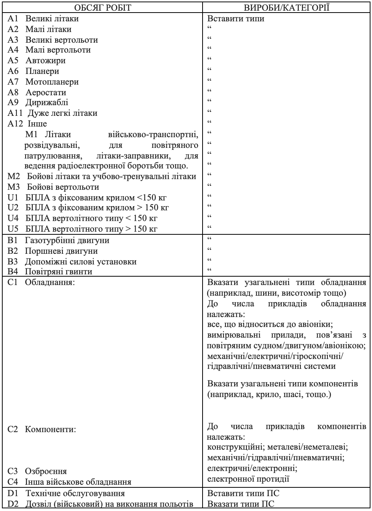Умови схвалення мають визначати обсяг робіт, вироби або категорії компонентів і обладнання щодо яких утримувач може здійснювати повноваження відповідно до положень параграфа 21.А.163 цих Правил. Ці умови мають видаватися як частина схвалення організації виробника.
21.А.153. Зміни умов схвалення
AMCAMC 21.A.153. Зміни умов схвалення – Заявка на внесення зміни в умови схвалення
UA MAR Form 51 має бути заповнено відповідно до процедур MPOE.
У формі наводиться інформація, яка мінімально необхідна компетентному органу для оцінювання потреби у зміні схвалення організації виробника.
До компетентного органу мають подаватися заповнена форма, короткий зміст зміненого МРОЕ та детальна інформація щодо запропонованої зміни умов схвалення організації виробника.
Кожна зміна умов схвалення має схвалюватися компетентним органом. Заявка на внесення зміни в умови схвалення має робитися за формою та у спосіб, встановлені компетентним органом. Заявник має відповідати застосовним вимогам цієї глави.
21.А.157. Обстеження
GMGM 21.A.157. Обстеження – Заходи
Заявник на отримання (або утримувач) MPOA має вживати заходи відповідно до положень Глави G Розділу А Частини-21В, які дозволять компетентному органу проводити повне обстеження організації виробника, включаючи партнерів, субпідрядників та постачальників, незалежно від того, знаходяться вони в державі заявника чи ні.
Обстеження може включати: аудити, запити, питання, обговорення та роз’яснення, моніторинг, засвідчення, огляди, перевірки, льотні і наземні випробування та огляд готових (виготовлених відповідно до МPOA) виробів, компонентів або обладнання.
Для того, щоб переконатися в досягнутих заявником на отримання (або утримувачем) MPOA стандартах, компетентний орган може проводити обстеження зразків виробів, компонентів або обладнання та пов’язаних з ним облікових матеріалів, звітів та сертифікаційних документів.
Такі заходи мають сприяти конструктивній співпраці заявника на отримання (або утримувача) MPOA з компетентним органом під час проведення ним обстежень (включаючи первинне оцінювання і подальший нагляд за підтриманням MPOA).
Сприяння проведенню обстеження означає, що компетентному органу було надано повний та вільний доступ до виробничих об’єктів, до будь-якої інформації щодо доведення відповідності вимогам Глави G Розділу А Частини-21В та допомогу (наявність приміщення для проведення засідань, офісна підтримка, засоби зв’язку, допоміжний персонал, облікові матеріали, звіти, комп’ютерні дані, тощо, за потреби).
Для сприяння у створенні відкритих взаємовідносин із компетентним органом в організації має бути призначено відповідний персонал, включаючи представника (представників) для супроводу персоналу компетентного органу під час перевірок не тільки власних виробничих об’єктів, але і субпідрядників, партнерів або постачальників.
Організація виробника має вживати заходів, які дозволять компетентному органу проводити будь-які обстеження, в тому числі у партнерів та субпідрядників, що необхідно для визначення та підтримання її відповідності застосовним вимогам цієї глави.
21.А.158. Невідповідності
(a) Якщо виявляються об’єктивні ознаки невідповідності утримувача схвалення організації виробника застосовним вимогам цих Правил, невідповідності (які вимагають від утримувача схвального листа негайних заходів) мають класифікуватися так: GM №1GM №2
GM №1 21.А.158(а). Неконтрольована невідповідність застосовним даним з розробки
Неконтрольованою невідповідністю застосовним даним з розробки є:
а) невідповідність, яку не можна виявити за допомогою систематичного аналізу; або
b) невідповідність, яка перешкоджає ідентифікації виробів, компонентів, обладнання або матеріалів, що знаходяться під її впливом.
GM №2 21.А.158(а). Приклади невідповідностей першого рівня
Прикладами невідповідностей першого рівня є невідповідності будь-яким положенням 21.A.139, 21.A.145, 21.A.147, 21.A.148, 21.A.151, 21.A.163, 21.A.165(b), (c), (d), (e), (f) та (g), що може впливати на безпеку ПС.
Слід звернути увагу, що невідповідність положенням таких параграфів розглядається тільки як невідповідність першого рівня за умови встановлення об’єктивних ознак, що така невідповідність є неконтрольованою невідповідністю, що може впливати на безпеку ПС. Крім того, неможливість проведення обстеження згідно з положеннями 21.A.157 (зокрема, неотримання доступу до виробничих об'єктів після письмового запиту) слід класифікувати як невідповідність першого рівня.
1) невідповідність першого рівня – будь-яка невідповідність положенням цих Правил, що може призвести до неконтрольованої невідповідності застосовним даним із розробки та може впливати на безпеку повітряного судна;
2) невідповідність другого рівня – будь-яка невідповідність положенням цих Правил, що не класифікується як невідповідність першого рівня.
(b) Невідповідність третього рівня – будь-яке відхилення, що за об’єктивними ознаками ідентифікується таким, що містить потенційні проблеми, які можуть призвести до невідповідності згідно з положеннями пункту (а).
(c) Після отримання повідомлення про невідповідності, виданого компетентним органом відповідно до положень параграфа 21.В.225:
1) у разі невідповідності першого рівня утримувач схвалення організації виробника має представляти коригувальні заходи, прийнятні для компетентного органу, протягом періоду, що не перевищує 21 робочий день від дати письмового підтвердження повідомлення про невідповідність;
2) у разі невідповідності другого рівня тривалість періоду коригувальних заходів, який дозволяє компетентний орган, має відповідати характеру невідповідності, але в будь-якому разі спочатку не має перевищувати трьох місяців. За певних обставин та з урахуванням характеру невідповідності компетентний орган може подовжувати тримісячний період за умови наявності задовільного плану коригувальних заходів, узгоджених з компетентним органом;
3) невідповідності третього рівня не вимагають від утримувача схвалення організації виробника негайних заходів. За потреби компетентний орган може вказати строк виконання.
(d) У разі невідповідностей першого або другого рівня, схвалення організації виробника може підлягати частковому або повному обмеженню, призупиненню його дії або скасуванню відповідно до положень параграфа 21.В.245. Утримувач схвалення організації виробника має своєчасно надавати підтвердження про отримання повідомлення щодо обмеження, призупинення дії або скасування схвалення організації виробника.
21.А.159. Строк дії та чинність
(a) Схвалення організації виробника може видаватися на обмежений строк. Воно має залишатися чинним, доки:
1) організація виробника не втратить спроможності доводити відповідність застосовним вимогам цієї глави; або
2) утримувач або будь-хто з його партнерів чи субпідрядників не перешкоджають компетентному органу проводити обстеження згідно з положеннями параграфа 21.А.157 цих Правил; або
3) немає ознак того, що організація виробника не здатна зберігати задовільного контролю за виготовленням виробів, компонентів або обладнання відповідно до схвалення; абоGM
GM 21.A.159(a)(3). Ознаки відсутності задовільного контролю
Невідповідність, визначена компетентним органом як:
a) неконтрольована невідповідність даним з розробки, що впливає на льотну придатність виробу, компонента або обладнання;
b) інцидент/авіаційна подія з вини утримувача MPOA;
c) невідповідність MPOE і пов’язаним із ним процедурам, що може впливати на відповідність виготовленої продукції даним з розробки;
d) недостатня кваліфікація персоналу, задіяного у заходах щодо сертифікації;
e) недостатність ресурсів щодо виробничих об'єктів, інструментів та обладнання;
f) недостатність засобів для забезпечення відповідних стандартів виробництва;
g) відсутність ефективного та своєчасного реагування з метою запобігання повторення будь-яких невідповідностей, про які йдеться в пунктах (а) – (f).
4) організація виробника відповідає вимогам параграфа 21.А.133 цих Правил; або
5) сертифікат не був зданий чи скасований згідно з положеннями параграфа 21.В.245 цих Правил; або
6) організація виробника в період, визначений компетентним органом, здійснювала діяльність, пов’язану з виробництвом, в обсязі умов схвалення.
(b) Після здачі або скасування сертифікат має бути повернутий до компетентного органу.
21.А.163. Повноваження
Згідно з умовами схвалення, виданими відповідно до положень параграфа 21.А.135 цих Правил, утримувач схвалення організації виробника може:
(a) здійснювати діяльність, пов’язану з виробництвом, відповідно до положень цих Правил;
(b) у разі з готовим повітряним судном після подання заяви про відповідність (Форма EMAR Form 52) (згідно з положеннями параграфа 21.А.174 цих Правил) отримувати сертифікат льотної придатності повітряного судна без додаткового підтвердження;
(c) у разі з іншими виробами, компонентами та обладнанням видавати сертифікати дозволеної передачі (Форма EMAR Form 1) (відповідно до положень параграфа 21.А.307 цих Правил) без додаткового підтвердження;AMC
AMC 21.A.163(c). Електронний підпис та електронний обмін UA MAR Form 1
1. Подання до компетентного органу.
Будь-який заявник на отримання (або утримувач) MPOA, який має намір запровадити процедуру електронного підпису для видачі UA MAR Form 1 та/або обміну в електронному вигляді даними, що містяться у UA MAR Form 1, має документально оформити її (процедуру) та подати компетентному органу як частину документів, що додаються до керівництва.
2. Характеристики електронної системи, яка створює UA MAR Form 1.
2.1. Електронна система має:
a) гарантувати безпечний доступ для кожної особи з персоналу, задіяного у заходах щодо сертифікації;
b) забезпечувати (з належним рівнем безпеки, гарантіями та резервними копіями) цілісність та точність даних, засвідчених підписом UA MAR Form 1, і надавати підтвердження автентичності UA MAR Form 1 (облік і зберігання документів);
c) бути активною тільки у випадку, якщо компонент випускається з UA MAR Form 1;
d) не допускати підписання незаповненої UA MAR Form 1;
e) забезпечувати високий ступінь гарантії того, що дані після підписання не були змінені (якщо після видачі необхідне внесення змін, тобто повторна сертифікація компонента, має бути зроблено нову UA MAR Form 1 з новим номером із посиланням на первинну видачу);
f) передбачувати “персональний” електронний підпис, який ідентифікує підписанта. Підпис має бути створено лише за наявності підписанта.
2.2. Електронний підпис ‒ це дані в електронній формі, які прикріплені або логічно пов’язані з іншими електронними даними і служать для автентифікації.
Електронний підпис має відповідати таким критеріям:
a) він однозначно пов’язаний тільки з підписантом;
b) він здатний ідентифікувати підписанта;
c) він створюється з використанням засобів, які підписант може утримувати виключно під своїм контролем.
2.3. Електронний підпис визначається як створене в електронній формі значення на основі криптографічного алгоритму та додається до даних так, щоб забезпечити можливість верифікації джерела даних та їх цілісності.
2.4. Заявники на отримання (або утримувачі) MPOA мають пам’ятати, що під час використання електронних систем можуть застосовуватися додаткові національні та/або європейські вимоги.
2.5. Електронна система має ґрунтуватися на політиці та структурі управління (конфіденційність, цілісність та доступність), таких як:
a) адміністратори, підписанти;
b) обсяг дозволів, прав;
c) пароль і безпечний доступ, автентифікація, захист, конфіденційність;
d) відстеження змін;
e) мінімальна кількість блоків, які підлягають заповненню, повнота інформації;
f) архіви;
g) тощо.
2.6. Електронна система, яка створює UA MAR Form 1, може містити додаткові дані, такі як:
a) код виробника;
b) ідентифікаційний код замовника;
c) виробничий звіт;
d) результати перевірок;
e) тощо.
3. Характеристики UA MAR Form 1, створеної з допомогою електронної системи.
3.1. Для полегшення розуміння та прийнятності випущеної з електронним підписом UA MAR Form 1, у Блоці 13b слід зазначити таке: “Електронний підпис у файлі”.
3.2. На додаток до зазначеного допускається друкувати або відображати підпис у будь-якій формі, наприклад подання рукописного підпису підписанта (можливо сканований підпис) або його прізвища.
3.3. Під час друку електронної форми вона має відповідати загальному формату UA MAR Form 1. На документі має бути надруковано водяний знак “НАДРУКОВАНО З ЕЛЕКТРОННОГО ФАЙЛА”.
3.4. Якщо електронний файл містить гіперпосилання на дані, необхідні для визначення льотної придатності випущеної продукції, вони мають бути надрукуванні у розбірливому форматі та бути ідентифікованими як посилання з UA MAR Form 1.
3.5. До друкованих примірників UA MAR Form 1 може бути додано додаткову інформацію, яка не вимагається інструкціями щодо її заповнення.
4. Електронний обмін електронною UA MAR Form 1.
4.1. Електронний обмін електронною UA MAR Form 1 має здійснюватися на добровільній основі. Обидві сторони (емітент та одержувач) мають узгодити електронну передачу UA MAR Form 1.
4.2. З цією метою під час обміну має бути передано:
a) всі дані UA MAR Form 1, включаючи дані, на які вона посилається;
b) всі дані, необхідні для автентифікації UA MAR Form 1.
4.3. Крім того, під час обміну може бути передано:
a) дані, необхідні для електронного формату;
b) додаткові дані, які не вимагаються інструкціями з заповнення UA MAR Form 1, такими як код виробника, ідентифікаційний код замовника.
4.4 Система, яка використовується для обміну електронною UA MAR Form 1, має забезпечувати:
a) високий рівень цифрової безпеки; дані мають бути захищеними, незмінними або неспотвореними;
b) має бути можливо відстежувати дані до їх джерела.
4.5. Торгові партнери, які бажають обмінюватися UA MAR Form 1 в електронній формі, мають робити таке відповідно до вимог, зазначених у цьому документі. Рекомендується, щоб вони використовували усталений, загальний, галузевий метод, такий як в Асоціації повітряного транспорту (Air Transport Association, ATA)), Специфікація 2000, Глава 16.
4.6. Заявники на отримання (або утримувачі) MPOA мають пам’ятати, що під час електронного обміну електронної UA MAR Form 1 можуть застосовуватися додаткові національні та/або європейські вимоги.
4.7. Одержувач має бути здатний регенерувати UA MAR Form 1 з отриманих даних без змін, а якщо таке неможливо, необхідно повернутися до паперової системи.
4.8. Якщо одержувачу необхідно надрукувати електронну форму, зверніться до вищезазначеного пункту 3.
(d) здійснювати технічне обслуговування нового повітряного судна, яке ним виготовлено, та за результатами цього технічного обслуговування видавати сертифікат передачі до експлуатації (Форма EMAR Form 53); абоAMC
AMC 21.A.163(d). Повноваження ‒ Технічне обслуговування
Заявник (за потреби) може подавати заявку на умови схвалення, які охоплюють технічне обслуговування виготовленого ним нового ПС для підтримання його в придатному для польотів стані, але не порушуючи термінів виконання технічного обслуговування схваленою організацією з технічного обслуговування відповідно до застосовних правил експлуатації. Якщо організація виробника має намір обслуговувати ПС поза межами таких термінів, їй доведеться подати заявку та отримати відповідне схвалення організації з технічного обслуговування.
Якщо компетентний орган переконається в достатності процедур, про які йдеться в 21.A.139, для контролю за виконанням технічного обслуговування, що гарантує знаходження ПС в придатному для польотів стані, то таку можливість буде зазначено в умовах схвалення.
ТЕХНІЧНЕ ОБСЛУГОВУВАННЯ ПС
Приклади робіт з технічного обслуговування:
a) консервація, періодичні огляди тощо;
b) виконання SB;
c) виконання директив льотної придатності;
d) ремонти;
e) роботи з технічного обслуговування після виконання контрольного польоту;
f) роботи з технічного обслуговування для підтримання льотної придатності під час тренувальних, демонстраційних та інших некомерційних польотів.
Будь-які роботи з технічного обслуговування мають записуватися в формулярі ПС та підписуватися персоналом, задіяним у заходах щодо сертифікації для засвідчення відповідності робіт застосовним даним льотної придатності.
У деяких випадках формуляри ПС можуть бути відсутні або організація виробника вважає за краще використовувати окрему форму (наприклад, для великого комплексу робіт чи для поставки літака замовнику). У таких випадках організації виробника мають використовувати UA MAR Form 53, яка потім має стати частиною звітних матеріалів щодо технічного обслуговування ПС.
ТЕХНІЧНЕ ОБСЛУГОВУВАННЯ ВИРОБІВ, КОМПОНЕНТІВ ТА ОБЛАДНАННЯ ПС ЗА МЕЖАМИ УМОВ СХВАЛЕННЯ УТРИМУВАЧА MPOA
Технічне обслуговування (організацією виробника ПС) дозволяється виконувати відповідно до інструкцій з технічного обслуговування схваленої організації виробника компонента, яка видала первісний сертифікат дозволеної передачі. За таких обставин для двигунів, повітряних гвинтів, компонентів та обладнання необхідно видавати нові сертифікати дозволеної передачі (UA MAR Form 1) відповідно до GM 21.A.163(c).
Звітні матеріали щодо верифікації первинної льотної придатності або ресурсних показників, таких як напрацювання двигунів, години нальоту, посадки та ін., які впливають на строки проведення технічного обслуговування, мають бути зазначені в будь-якому новому сертифікаті дозволеної передачі.
Двигуни, повітряні гвинти, компоненти та обладнання можуть обслуговуватися утримувачем схвалення відповідно до положень Частини-145В. У таких випадках у сертифікатах дозволеної передачі ставиться позначка “був у використанні”.
(е) відповідно до процедур, узгоджених з компетентним органом для виготовленого повітряного судна, та якщо організація виробника сама контролює (відповідно до MPOA конфігурацію повітряного судна) та засвідчує відповідність до схвалених умов розробки щодо виконання польотів, видавати дозвіл (військовий) на виконання польотів згідно з положеннями пункту 21.А.711(с) цих Правил, включаючи схвалення умов польоту (відповідно до положень пункту 21.А.710(b) цих Правил).AMC
AMC 21.A.163(e). Процедура з видання дозволу (військового) на виконання польотів, включаючи схвалення умов польоту
1. Мета.
У цих АМС надається методика розробки процедури щодо видання дозволу (військового) на виконання польотів, включаючи схвалення умов польоту.
Кожен заявник на отримання (або утримувач) MPOA має розробити власну внутрішню процедуру відповідно до цих AMC, щоб отримати повноваження (про які йдеться у 21.A.163(e)) видавати дозвіл (військовий) на виконання польотів для ПС згідно з процедурами, узгодженими з компетентним органом, якщо організація виробника сама (відповідно до свого МРОА) контролює конфігурацію ПС та засвідчує відповідність з умовами розробки, схваленими для виконання польотів.
2. Процедура щодо видання дозволу (військового) на виконання польотів.
2.1. Зміст.
У процедурі має бути враховано такі питання:
a) схвалення умов польоту відповідно до положень 21.A.710(b) (за потреби);
b) відповідність схваленим умовам;
c) видання дозволу (військового) на виконання польотів відповідно до повноважень MPOA;
d) уповноважені підписанти (особи з правом підпису);
e) взаємодія з місцевими органами влади щодо виконання польотів.
2.2. Схвалення умов польоту (за потреби).
Процедура має містити процеси встановлення та обґрунтування умов польоту (відповідно до положень 21.A.708), виконання вимог (про які йдеться у 21.A.710(c)) та заповнення UA MAR Form 18b (як це визначено в AMC 21.A.709(b)) для схвалення відповідно до повноважень MPOA.
2.3. Відповідність схваленим умовам.
У процедурі має бути зазначено, як доводиться відповідність схваленим умовам, як вона документально оформлюється та засвідчується уповноваженою особою.
2.4. Видання дозволу (військового) на виконання польотів відповідно до повноважень MPOA.
У процедурі має бути описано процеси підготовки EMАR Form 20b та виконання вимог (про які йдеться у 21.A.711(b) та (e)) до підписання дозволу (військового) на виконання польотів.
2.5. Уповноважені підписанти (особи з правом підпису).
Особи, уповноважені підписувати дозвіл (військовий) на виконання польотів відповідно до повноважень (про які йдеться у 21.A.163(е)), мають бути ідентифіковані (прізвище, підпис та обсяг повноважень) у процедурі або у відповідному документі, пов'язаному з MРOЕ.
2.6. Взаємодія з місцевими органами влади щодо виконання польотів
Процедура має містити положення, що описують зв'язок з місцевою владою щодо відповідності місцевим вимогам, які виходять за рамки умов, про які йдеться у 21.A.708(b) (див. 21.A.711(e)).
21.А.165. Зобов’язання утримувача
Утримувач схвалення організації виробника має:
(a) забезпечувати, щоб POE (представлене згідно з положеннями параграфа 21.А.143 цих Правил) та документи, на які воно посилається, використовувалися як основні робочі документи організації виробника;GM
GM 21.A.165(a). Зобов'язання утримувача ‒ Основний робочий документ
Дотримання положень MPOE ‒ обов'язкова вимога для отримання та збереження чинності схвалення організації виробника.
Організація має зробити MPOE доступним для свого персоналу, якщо це необхідно для виконання ним своїх обов'язків. Тому, слід встановити розрахунок розсилки. Якщо MPOE містить в основному посилання на окремі керівництва або процедури, розрахунок розсилки MPOE може бути обмежено.
Організація має забезпечити персоналу доступ та ознайомлення з тією частиною MPOE або документами (на які є посилання), що охоплюють їхню діяльність.
Підрозділ, що здійснює функцію забезпечення якості є (зазвичай) відповідальним за контроль дотримання положень MPOE.
(b) забезпечувати функціонування організації виробника відповідно до схвалених даних та процедур щодо схвалення організації виробника;
(c) 1) перш ніж подавати заяву про відповідність компетентному органу, визначати, що кожне готове повітряне судно відповідає типовій конструкції і знаходиться в стані, придатному для безпечної експлуатації; абоGM №1GM №2GM №3GM №4
GМ №1 21.А.165(с). Зобов’язання утримувача ‒ Відповідність дослідних моделей і випробувальних зразків
Згідно з положеннями 21.A.33 необхідно визначати відповідність дослідних моделей і випробувальних зразків застосовним даним з розробки. UA MAR Form 1 може використовуватися як сертифікат відповідності в рамках допомоги, яку утримувач MPOA надає утримувачу/заявнику схвалення конструкції.
GM №2 21.A.165(с). Зобов’язання утримувача – Відповідність типовій конструкції
Появу окремих конфігурацій часто обумовлено потребами замовника і необхідністю вдосконалень або змін, що можуть запроваджуватися утримувачем МТС. Протягом виробничого процесу, ймовірно, також будуть ненавмисні відхилення (дозволені відхилення або невідповідності). Всі такі зміни мають бути схваленими утримувачем/заявником схвалення конструкції або (за потреби) компетентним органом.
GM №3 21.A.165(с). Зобов’язання утримувача – Стан для безпечної експлуатації
До подачі заяви про відповідність компетентному органу утримувач MPOA має проводити дослідження, щоб бути впевненим щодо кожного з нижчезазначених пунктів. Документально оформлені результати такого дослідження мають зберігатися утримувачем MPOA. Деякі з таких документів (документально оформлених результатів) можуть потребуватися для надання експлуатуючій організації (власнику ПС) і в деяких випадках компетентному органу:
a) Обладнання або модифікації, які не відповідають вимогам держави, що виготовляє, але прийнятні для компетентного органу країни-імпортера;
b) Ідентифікація виробів, компонентів або обладнання, які:
i. не є новими;
iі. надаються покупцем або організацією, що буде їх експлуатувати (включаючи такі, про які йдеться в 21.A.801 і 21.A.805);
c) Технічні звітні матеріали, що ідентифікують місце знаходження і заводські номери важливих компонентів, які мають спеціальні вимоги щодо відстеження з метою верифікації первинної льотної придатності (включаючи такі, про які йдеться в 21.A.801 і 21.A.805);
d) Формуляр і книга обліку внесення змін до ПС (відповідно до вимог компетентного органу);
e) Формуляри для виробів (про які йдеться в 21.A.801), установлені як частина типової конструкції (відповідно до вимог компетентного органу);
f) Звіт про вагу і центровку для готового ПС;
g) Облік відсутніх компонентів і обладнання або дефектів, які не впливають на льотну придатність (наприклад, це може бути спорядження (предмети меблювання), або GFE (компоненти і обладнання можуть обліковуватися в журналі технічного стану або іншому відповідному документі, з яким офіційно ознайомлені експлуатуюча організація та компетентний орган));
h) Допоміжна інформація щодо виробу (яка вимагається іншими правилами імплементації, пов’язаними вимогами льотної придатності або GM), яка відображає фактичний стандарт конструкції конкретного ПС (така як Керівництво з технічного обслуговування, Каталог вузлів та деталей або MMEL). Крім того, мають бути аналіз електричного навантаження і електро-монтажна схема;
i) Звітні матеріали, які демонструють виконання робіт з технічного обслуговування відповідно до облікованих годин випробувальних польотів ПС. Такі звітні матеріали мають показати взаємозв’язок між фактичним станом технічного обслуговування конкретного ПС, переліком рекомендованих виробником завдань з технічного обслуговування і документом/звітом комітету із аналізу технічного обслуговування (MRB);
j) Детальна інформація про стан справності ПС щодо:
вмісту палива і масла;
забезпеченості аварійно-рятувальним обладнанням, що потребується в експлуатації (наприклад, рятувальними плотами тощо.);
k) Детальна інформація щодо схваленої конфігурації внутрішньої компоновки, якщо вона відрізняється від схваленої як частина типової конструкції;
l) Має бути доступним схвалене льотне керівництво, що відповідає стандарту конструкції і стану доробок (модифікацій) конкретного ПС;
m) Показати, що перевірки щодо відсутності сторонніх предметів на всіх відповідних етапах виробництва були успішно виконані;
n) Реєстраційне маркування нанесено на зовнішній поверхні ПС, як того вимагає національне законодавство. Якщо вимагається національним законодавством, установлюється вогнетривка табличка з найменуванням власника;
o) Мають бути сертифікати щодо шуму і на бортову радіостанцію (де застосовується);
p) Установлений компас (або компасні системи) скориговані і скомпенсовані, а девіаційна таблиця знаходиться на ПС (де застосовується);
q) Перелік категорій програмного забезпечення;
r) Дані щодо нівелювання ПС та габаритні розміри рухомих частин рульових поверхонь;
s) Частини обладнання, які будуть демонтовані перед початком комерційних транспортних повітряних перевезень (наприклад, комплекти паливної, радіо або навігаційної систем, які використовуються для перегону повітряних суден);
t) Після виконання (відповідно до повноважень, про які йдеться в 21.A.163(d)) робіт з технічного обслуговування видається сертифікат передачі до експлуатації, який містить заяву, що ПС знаходиться в стані для безпечної експлуатації;
u) Перелік усіх застосовних SB і директив з льотної придатності, які є чинними.
GM №4 21.165(c). Засвідчення льотної придатності або сертифікат відповідності
Якщо UA MAR Form 1 використовують як сертифікат дозволеної передачі (про який йдеться у підпунктах (2) та (3) 21.A.165(c)), її може бути видано у двох варіантах:
а) як засвідчення льотної придатності, якщо на підставі положень 21.A.133(b) і (с) може бути визначено, що продукція відповідає схваленим даним з розробки та знаходиться в стані для безпечної експлуатації.
b) як сертифікат відповідності, якщо на підставі положень 21.A.133(b) і (с) може бути визначено, що продукція відповідає застосовним даним з розробки, які ще не схвалені (з причин, зазначених у Блоці 12). Продукція, що випускається з використанням UA MAR Form 1 як сертифіката відповідності, не підлягає встановленню на ПС, які отримали МТС.
UA MAR Form 1 має використовуватися для цілей засвідчення відповідності тільки у випадках, якщо може бути зазначено причину, яка перешкоджає її використовувати для цілей засвідчення льотної придатності.
2) перш ніж видавати Форму EMAR Form 1 (яка засвідчує відповідність схваленим даним з розробки і стан, придатний для безпечної експлуатації), визначати, що інші вироби, компоненти або обладнання повністю готові і відповідають схваленим даним з розробки та перебувають у стані, придатному для безпечної експлуатації;
3) додатково для двигунів – подавати заяву, що готовий двигун відповідає застосовним на дату виготовлення двигуна вимогам до емісії (де застосовується);
4) перш ніж видавати Форму EMAR Form 1 (як сертифікат відповідності), визначати, що інші вироби, компоненти або обладнання відповідають застосовним даним;
(d) обліковувати усі дані щодо виконаних робіт;GM
GM 21.A.165(d) та (h). Зобов'язання утримувача Система обліку та архівування
Звітні матеріали щодо виробництва виконують дві функції. По-перше, вони мають гарантувати (під час виробничого процесу), що вироби, компоненти або обладнання знаходяться у відповідності до контролюємих даних протягом усього виробничого циклу. По-друге, деякі звітні матеріали щодо основних етапів виробничого процесу необхідні, щоб в подальшому надавати об’єктивні свідчення, що всі призначені етапи виробничого процесу задовільно завершені і що відповідність застосовним даним з розробки досягнуто.
Отже, схвалена організація виробника має впроваджувати систему збирання та зберігання (яка охоплює весь період виробництва) звітних матеріалів (що відповідають властивостям виробу і його виробничим процесам) на всіх етапах виробництва.
Облік і контроль такої інформації має бути предметом відповідних процедур в керівництві, про яке йдеться в 21.A.139.
Всі форми носіїв інформації є прийнятними (папір, плівка, магнітна стрічка), за умови, що вони можуть задовольнити вимоги щодо необхідної тривалості архівування відповідно до передбачених умов.
У пов'язаних організаційних процедурах мають:
a) ідентифікуватися звітні матеріали, що мають зберігатися;
b) описуватися організація і відповідальність щодо системи архівування (розташування, узагальнення, структура) та умови доступу до інформації (наприклад, по виробу, тематиці);
c) контролюватися доступ та забезпечуватися ефективний захист від погіршення стану або випадкового пошкодження;
d) забезпечуватися підтримання можливості зчитування інформації з носіїв;
e) демонструватися для компетентного органу належне функціонування системи обліку звітних матеріалів;
f) чітко ідентифікуватися особи, які беруть участь у визначенні відповідності;
g) з огляду на важливість визначення відповідності, визначати період архівування для кожного типу даних, за умови такого:
i. дані, що підтверджують відповідність виробу, компонента або обладнання, мають зберігатися не менше трьох років з дати видачі відповідної заяви про відповідність або сертифіката дозволеної передачі;
ii. дані, що вважаються важливими для підтримання льотної придатності, мають зберігатися протягом всього терміну експлуатації виробу, компонента або обладнання;
h) забезпечуватися відповідність системи обліку та зберігання (що використовується партнерами, постачальниками та субпідрядниками) вимогам відповідності виробів, компонентів або обладнання з тим самим рівнем довіри до неї як і для власного виробництва. У кожному випадку має бути визначено, хто має зберігати облікові дані (організація або партнер, постачальник або субпідрядник). Має також бути визначено спосіб, у який здійснювати нагляд за системою обліку/зберігання документів партнерів, постачальників або субпідрядників.
(e) встановлювати (в інтересах безпеки) систему звітності щодо внутрішніх подій та забезпечувати її функціонування для сприяння збиранню та оцінюванню повідомлень про події (з метою виявлення несприятливих тенденцій або усунення недоліків) та отримувати інформацію щодо зафіксованих подій. Ця система має включати аналіз відповідної інформації (яка стосується подій) та оприлюднення інформації за результатами його проведення;
(f) 1) повідомляти утримувача сертифіката типу або схвалення конструкції про усі випадки виявлення у виробах, компонентах або обладнанні (виготовлених організацією виробника) можливих відхилень від застосовних даних з розробки, проводити разом з утримувачем сертифіката типу або схвалення конструкції дослідження, щоб виявити ті відхилення, які можуть призвести до небезпечного стану;
2) повідомляти компетентний орган про відхилення, які можуть призвести до небезпечного стану (ідентифікованого згідно з положеннями підпункту (1)). Такі повідомлення мають робитися за формою та у спосіб, встановлені компетентним органом (відповідно до положень підпункту 21.A.3А(b)(2) цих Правил) або схвалені компетентним органом;
3) якщо він є постачальником для іншої організації виробника, повідомляти її про усі випадки, коли він з часом у виготовлених для неї виробах, компонентах або обладнанні виявив можливість відхилень від застосовних даних з розробки;
(g) надавати допомогу утримувачу сертифіката типу або схвалення конструкції у вирішенні питань щодо проведення будь-яких заходів з підтримання льотної придатності, які пов’язані з виготовленими виробами, компонентами або обладнанням;
(h) встановлювати систему архівації, яка містить вимоги до своїх партнерів, постачальників і субпідрядників та забезпечує збереження даних, що використовувалися для обґрунтування відповідності виробів, компонентів або обладнання. Такі дані мають бути доступними для компетентного органу та зберігатися з метою надання інформації, необхідної для забезпечення підтримання льотної придатності виробів, компонентів або обладнання;
(i) якщо він відповідно до умов його схвалення видає сертифікат передачі до експлуатації, перш ніж його видавати має переконатися, що на кожному готовому повітряному судні виконано необхідне технічне обслуговування та що воно знаходиться у придатному для безпечної експлуатації стані;
(j) відповідно до повноважень (зазначених у пункті 21.A.163(e) цих Правил) визначати умови, згідно з якими може бути виданий дозвіл (військовий) на виконання польотів (де застосовується);
(k) відповідно до повноважень (зазначених у пункті 21.A.163(e) цих Правил) перед видачею дозволу (військового) на виконання польотів повітряного судна встановлювати відповідність положенням пунктів 21.A.711(с) та (е) цих Правил (де застосовується).
Глава Н – Сертифікати (військові) льотної придатності та обмежені сертифікати (військові) льотної придатності
21.А.171. Сфера застосування
У цій главі встановлюється процедура видачі сертифікатів льотної придатності.
21.А.172. Прийнятність заявника
Будь-яка організація (або її представник), на ім’я якої реєструється або буде зареєстроване повітряне судно в Реєстрі державних повітряних суден України, може бути заявником на отримання сертифіката льотної придатності або обмеженого сертифіката льотної придатності для цього повітряного судна відповідно до положень цієї глави.
21.А.173. Класифікація
Сертифікати льотної придатності мають класифікуватися так:
(a) сертифікати льотної придатності, що мають видаватися повітряним суднам:
1) що відповідають сертифікату типу, виданому згідно з положеннями цих Правил; або
2) що відповідають сертифікату типу, виданому Державною авіаційною службою України;
(b) обмежені сертифікати льотної придатності, що мають видаватися повітряним суднам:
1) що відповідають обмеженому сертифікату типу, виданому згідно з положеннями цих Правил; або
2) щодо яких компетентному органу доведено відповідність спеціальним вимогам льотної придатності, що забезпечують прийнятний рівень безпеки польотів.
21.А.174. Заявка
(a) Відповідно до положень параграфа 21.А.172 цих Правил заявка на отримання сертифіката льотної придатності має робитися за формою та у спосіб, встановлені компетентним органом.
(b) Кожна заявка на отримання сертифіката льотної придатності або обмеженого сертифіката льотної придатності має включати:
1) тип сертифіката льотної придатності, щодо якого вона надається;
2) щодо нового повітряного судна:
(i) заяву про відповідність:
видану відповідно до положень пункту 21.А.163(b) цих Правил; або
видану відповідно до положень параграфа 21.А.130 цих Правил та визнану компетентним органом; або
для імпортованого повітряного судна ‒ будь-які прийнятні доказові матеріали, які підтверджують його відповідність типовій конструкції, що схвалена компетентним органом держави експортера;
(ii) інформацію щодо ваги та балансування повітряного судна разом із схемою завантаження;
(iii) льотне керівництво та будь-які інші керівництва, що вимагає компетентний орган;
3) щодо повітряного судна, що знаходилося в експлуатації:
(i) для такого, що походить з держави, яка застосовує EMAR, ‒ сертифікат (військовий) перегляду льотної придатності, виданий відповідно до EMAR M;
(ii) для такого, що походить з іншої країни:
заяву компетентного органу держави, в якій повітряне судно є або було зареєстроване, яка відображає стан льотної придатності повітряного судна в її реєстрі на дату передавання;
інформацію щодо ваги та балансування повітряного судна разом зі схемою завантаження;
льотне керівництво та будь-які інші керівництва, що вимагає компетентний орган;
звітний матеріал у хронологічному порядку для встановлення стандартів виробництва, модифікації та технічного обслуговування повітряного судна, включаючи всі обмеження, пов’язані з обмеженим сертифікатом льотної придатності відповідно до положень пункту 21.B.327(с) цих Правил;
клопотання щодо видачі сертифіката льотної придатності або обмеженого сертифіката льотної придатності та сертифіката (військового) перегляду льотної придатності після оцінювання льотної придатності згідно з положеннями Правил підтримання льотної придатності авіаційної техніки державної авіації (Частина-МВ), затверджених наказом Міністерства оборони України від 23 грудня 2016 року № 714, зареєстрованих у Міністерстві юстиції України 06 лютого 2017 року за № 160/30028.
(c) Якщо не узгоджено інше, заяви, про які йдеться у підпунктах (b)(2)(i) та (b)(3)(ii), мають видаватися не більше ніж за 60 днів до представлення повітряного судна компетентному органу.
21.А.175. Мова
Керівництва, стікери (таблички з інформацією для пасажирів, екіпажу по всьому повітряному судну), номенклатури (переліки, списки), маркування приладів, інша необхідна інформація, яка вимагається застосовними нормами льотної придатності, мають виконуватися українською та/або англійською мовами.
21.А.177. Поправки або зміни
Сертифікат льотної придатності може бути виправлений або змінений лише компетентним органом.
21.А.179. Передавання
(a) Коли змінюються права власності на повітряне судно:
1) якщо повітряне судно залишається в Реєстрі державних повітряних суден України, обмежений сертифікат льотної придатності, що відповідає тільки обмеженому сертифікату типу, або сертифікат льотної придатності передаються разом із повітряним судном;
2) якщо повітряне судно до передавання значилося в реєстрі держави, яка застосовує EMAR, обмежений сертифікат льотної придатності, що відповідає тільки обмеженому сертифікату типу, або сертифікат льотної придатності мають видаватися:
(i) після надання попереднього сертифіката льотної придатності та чинного сертифіката (військового) перегляду льотної придатності, виданого відповідно до EMAR M; та
(ii) якщо задовольняються вимоги параграфа 21.A.175 цих Правил.
(b) Якщо змінилися права власності на повітряне судно, яке має обмежений сертифікат льотної придатності, що відповідає спеціальним вимогам льотної придатності (а не обмеженому сертифікату типу), за погодженням з компетентним органом сертифікат льотної придатності передається разом із повітряним судном (за умови, що воно залишається в Реєстрі державних повітряних суден України).
21.А.180. Перевірки
Утримувач сертифіката льотної придатності на вимогу компетентного органу має надавати доступ до повітряного судна, для якого виданий сертифікат льотної придатності.
21.А.181. Строк дії та чинність
(a) Сертифікат льотної придатності може видаватися на необмежений строк. Він має залишатися чинним за умови:
1) відповідності застосовній типовій конструкції, директивам льотної придатності та інструкціям з підтримання льотної придатності; та
2) що повітряне судно залишається в Реєстрі державних повітряних суден України;
3) що сертифікат типу або обмежений сертифікат типу (на підставі якого його було видано) не втратив чинності відповідно до положень параграфа 21.А.51 цих Правил; та
4) що сертифікат не здається або не скасовується компетентним органом.
b) Після здачі або скасування сертифікат має бути повернутий до компетентного органу.
21.А.182. Ідентифікація повітряного судна
Кожен заявник на отримання сертифіката льотної придатності відповідно до положень цієї глави має доводити, що його повітряне судно ідентифікується згідно з положеннями глави Q цих Правил.
Глава І – Сертифікати щодо шуму на місцевості (за потреби буде додано пізніше)
Глава J – Схвалення (військове) організації розробника (Military Design Organisation Approval – MDOA)
21.А.231. Сфера застосування
У цій главі встановлюються процедура схвалення організацій розробників та правила, що регулюють зобов’язання і повноваження заявників на отримання та утримувачів таких схвалень.
21.А.233. Прийнятність заявника
За рішенням компетентного органу будь-яка організація може бути заявником на отримання схвалення відповідно до положень цієї глави:
(a) відповідно до положень параграфів 21.А.14, 21.А.112В, 21.А.432В або 21.А.602В цих Правил; або
(b) для схвалення незначних змін або проектів незначних ремонтів, якщо робиться запит на отримання повноважень відповідно до положень параграфа 21.А.263 цих Правил.
21.А.234. Заявка
Кожна заявка на отримання схвалення організації розробника має робитися за формою та у спосіб, встановлені компетентним органом, або в інший прийнятний для компетентного органу спосіб. Заявка має містити короткий зміст Керівництва організації розробника та умови схвалення (що мають видаватися відповідно до вимог параграфа 21.А.251 цих Правил).
21.А.235. Видача схвалення (військового) організації розробника
GMGM 21.A.235. Видання MDOA
a) Якщо організація розробника має чинне DOA, видане ДАСУ (відповідно до АПУ-21), та, якщо її діяльність з розробки продукції військового призначення відповідає обсягу умов схвалення ДАСУ, то таку організацію може бути визнано компетентним органом такою, що задовольняє вимогам Частини-21В для такого обсягу робіт з будь-яким подальшим дослідженням, яке регламентується тільки різницею між обсягами обох схвалень. Організація розробника має регулярно інформувати компетентний орган щодо значних змін в ній і будь-яких висновків ДАСУ, які можуть вплинути на діяльність з розробки продукції військового призначення.
b) Якщо організація розробника має чинне DOA, видане ДАСУ (відповідно до АПУ-21), та, якщо обсяг умов схвалення ДАСУ не повністю охоплює діяльність з розробки продукції військового призначення, то ті частини DOE (відповідно до АПУ-21), які також задовольняють вимогам Частини-21В, можуть визнаватися компетентним органом такими, що відповідають вимогам Частини-21В. Допускається розглядати в MDOE (відповідно до Частини-21В) лише ті напрямки діяльності організації, які є специфічними щодо діяльності з розробки продукції військового призначення чи вимог до неї. Мають бути визначені (із надаванням посилань) ті вимоги, що охоплюються розділами DOE (відповідно до АПУ-21).
Організація може отримувати схвалення організації розробника, яке видає компетентний орган, якщо вона довела відповідність застосовним вимогам (відповідно до положень цієї глави).
21.А.239. Система забезпечення розробки
(a) Організація розробника має доводити, що вона встановила та здатна забезпечувати функціонування системи забезпечення розробки, щоб керувати процесами розробки виробів, компонентів, обладнання і змін конструкції, які охоплюються заявкою, та здійснювати технічний контроль за цими процесами. Система забезпечення розробки має бути такою, щоб надавати організації розробника можливості: GМ №1GМ №2
GМ №1 21.А.239(а). Система забезпечення розробки
1. Мета.
У цьому GМ окреслюються деякі основні принципи та положення 21.A.239(a).
2. Визначення.
a) Система забезпечення розробки ‒ це організаційна структура, обов'язки, процедури та ресурси, що забезпечують належне функціонування організації розробника.
b) Забезпечення розробки ‒ це всі планові та систематичні заходи, необхідні щоб переконатися у здатності організації щодо:
i. розробки виробів або складових частин виробів (компонентів) відповідно до застосовних вимог льотної придатності та вимог захисту довкілля (де застосовується);
iі. доведення відповідності цим вимогам та її верифікації.
c) “Дослідження типу” ‒ це завдання організації щодо обґрунтування МТС, МSТС або інших процесів схвалення типової конструкції, які необхідно виконувати для доведення, верифікації та дотримання відповідності застосовним вимогам льотної придатності та вимогам захисту довкілля (де застосовується).
3. Забезпечення розробки.
Повний процес, починаючи з вимог льотної придатності і захисту довкілля (де застосовується) та специфікацій виробу, і завершуючи виданням сертифіката типу, показано на схемі, наведеній на рисунку 3. Вона показує зв'язок між процесами розробки, дослідження типу та забезпечення розробки.
Ефективне забезпечення розробки вимагає постійного оцінювання факторів, які впливають на відповідність конструкції щодо передбачуваних застосувань, зокрема, що виріб (або складова частина виробу (компонент)) відповідає застосовним вимогам льотної придатності та захисту довкілля (де застосовується) і буде далі відповідати їм після будь-яких змін.
Тому, мають бути розглянуті два основних аспекти:
a) як планові та систематичні заходи визначаються та впроваджуються від самого початку заходів з розробки, включаючи постійну діяльність з верифікації первинної льотної придатності;
b) як такі заходи регулярно оцінюються та коригуються, за потреби.
3.1 Планові та систематичні заходи
Для організацій розробників, які проводять дослідження типу виробів, планові та систематичні заходи мають охоплювати такі, відповідно визначені, завдання та процедури:
3.1.1. Загальні положення.
a) Видавати MDOE або, де застосовується, доповнювати або вносити поправки до нього згідно з 21.A.243, зокрема, щоб вказати початок заходів з розробки виробу.
b) Забезпечувати дотримання всіх інструкцій MDOE.
c) Проводити дослідження типу.
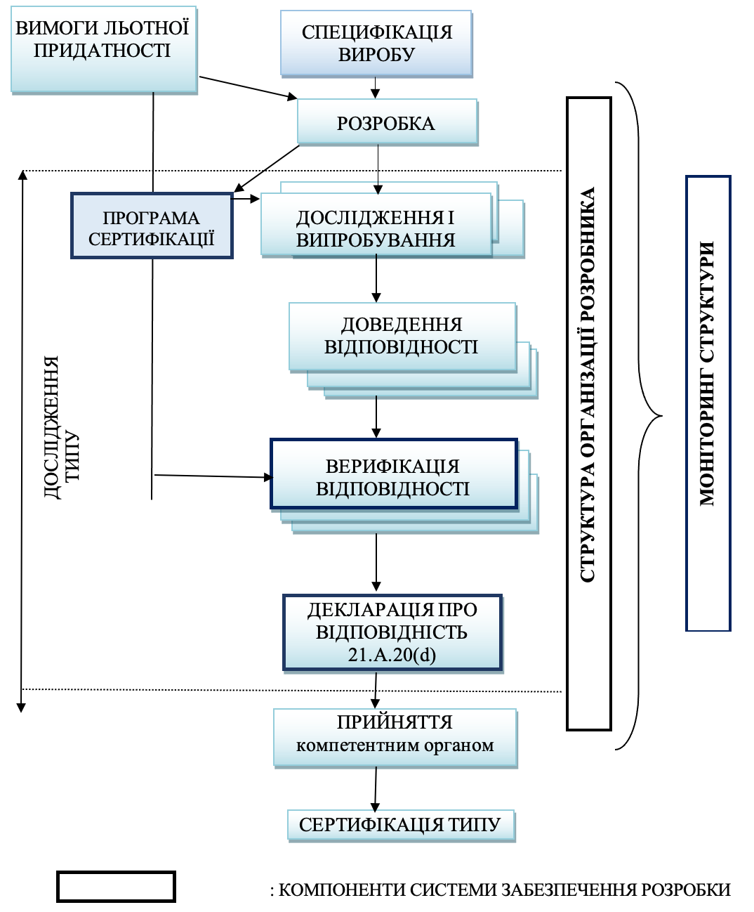Рисунок 3 – Зв’язок між розробкою, забезпеченням розробки та дослідженням типу
d) Призначати персонал на посади “інженерів із верифікації відповідності”, які відповідають за схвалення документів відповідності (про які йдеться у підпункті 3.1.3).
e) Призначати персонал Управління льотної придатності, обов’язки якого визначені у підпункті 3.1.4.
f) Досягати згоди з утримувачем сертифіката типу щодо наміру отримати додатковий сертифікат типу (у разі подання заявки на його отримання) відповідно до положень 21.A.115.
g) Забезпечувати повний та сталий зв'язок між організацією розробника та пов'язаними з нею організаціями, відповідальними за вироби, виготовлені відповідно до сертифіката типу.
h) Надавати компетентному органу підтвердження, що дослідні моделі та випробувальні зразки в достатній мірі відповідають типовій конструкції (див. 21.A.33(b)(1)).
3.1.2. Керівник підприємства та керівник організації розробника (або їх заступники).
a) Керівник підприємства має забезпечувати необхідними ресурсами організацію розробника для її належного функціонування.
b) Керівник організації розробника (або уповноважений представник) після підтвердження задовільного завершення дослідження типу має підписувати декларацію про відповідність (див. 21.A.20(d) і 21.A.97(a)(3)) застосовним вимогам льотної придатності і захисту довкілля (де застосовується). Відповідно до положень 21.A.20(e) та 21.A.97(a)(4) такий підпис у декларації про відповідність підтверджує, що зазначені в MDOE процедури були дотримані (див. також GM 21.A.265(b)).
c) Функції керівника підприємства та керівника організації розробника може виконувати одна особа.
3.1.3. Верифікація відповідності.
a) Схвалення шляхом підписання всіх визначених в програмі сертифікації документів відповідності, включаючи програми випробувань та необхідні дані для верифікації відповідності застосовним вимогам льотної придатності та захисту довкілля (де застосовується).
b) Схвалення технічного змісту (повнота, технічна точність ...), включаючи будь-які подальші зміни схвалених компетентним органом керівництв (AFM, розділ “Обмеження льотної придатності” Інструкції з Підтримання льотної придатності (Airworthiness Limitations section of the Instructions for Continuing Airworthiness), документ, який містить Сертифікаційні вимоги до Технічного обслуговування (Certification Maintenance Requirements, далі – CMR), де застосовується.
3.1.4. Управління льотної придатності.
a) Взаємодія між організацією розробника та компетентним органом щодо всіх аспектів програми сертифікації.
b) Забезпечення розробки та оновлення MDOE відповідно до вимог 21.A.243.
c) Співпраця з компетентним органом під час розробки процедур процесу сертифікації типу.
d) Видання рекомендацій щодо документального оформлення відповідності.
e) Співпраця у виданні рекомендацій для забезпечення дотримання правил розробки керівництв, сервісних бюлетенів, креслень, специфікацій та стандартів.
f) Забезпечення розповсюдження застосовних вимог льотної придатності та захисту довкілля (де застосовується) та інших специфікацій.
g) Співпраця з компетентним органом з питань запропонованого сертифікаційного базису типу.
h) Тлумачення вимог льотної придатності і захисту довкілля (де застосовується) та запит на прийняття рішень компетентним органом у разі виникнення сумнівів.
i) Надання консультацій всім підрозділам організації розробника з питань льотної придатності, захисту довкілля (де застосовується), схвалень та сертифікації.
j) Розробка програми сертифікації та координування всіх завдань, пов'язаних з дослідженням типу (у взаємодії з компетентним органом).
k) Регулярне інформування компетентного органу щодо результатів проведення дослідження типу та своєчасні повідомлення про заплановані випробування.
l) Забезпечення співпраці під час підготовки інспекційних та необхідних для доведення відповідності випробувальних програм.
m) Встановлення контрольного переліку відповідності та його оновлення при змінах.
n) Перевірка того, що всі документи відповідності (необхідні для її доведення всім вимогам льотної придатності та захисту довкілля (де застосовується)) підготовлені, належно заповнені та підписані для публікації.
o) Перевірка необхідних для визначення типової конструкції документів (про які йдеться у 21.A.31) та їх своєчасне надання компетентному органу для схвалення, якщо таке необхідно.
p) Підготовка (за потреби) попереднього переліку даних сертифіката типу для льотної придатності та/або зміненого переліку даних сертифіката типу.
q) Надання керівнику організації розробника матеріалів, що підтверджують належне виконання всіх необхідних для дослідження типу заходів.
r) Схвалення класифікації змін (відповідно до положень 21.A.91) та погодження схвалення для незначних змін (відповідно до положень 21.A.95(b)).
s) Моніторинг значних подій на інших авіаційних виробах, щоб визначати їх вплив на льотну придатність виробів власної розробки.
t) Забезпечення співпраці під час розробки SB і Керівництва з ремонту конструкції (Structural Repair Manual) та подальших ревізій (приділяючи особливу увагу впливу змісту цих документів на льотну придатність та захист довкілля (де застосовується)) та погодження їх схвалення.
u) Постійне оцінювання відмов (авіаційна подія/інцидент/в процесі обслуговування) та рекламацій від експлуатуючих організацій, ініціювання заходів за його результатами та надання інформації компетентному органу у разі зниження рівня льотної придатності (підтримання льотної придатності).
v) Надання консультацій компетентному органу з питань видання директив льотної придатності на підставі SB.
w) Забезпечення того, що керівництва, які схвалюються компетентним органом (AFM, MMEL, розділ “Обмеження льотної придатності” Інструкції з Підтримання льотної придатності (Airworthiness Limitations section of the Instructions for Continuing Airworthiness), документ, який містить сертифікаційні вимоги до технічного обслуговування (CMR), у кожному конкретному випадку), включаючи будь-які подальші зміни до них, перевіряються для визначення їх відповідності встановленим вимогам та надаються для схвалення компетентному органу.
3.1.5. Інструкції з технічного обслуговування та експлуатації.
a) Забезпечення розробки та оновлення всіх необхідних для підтримання льотної придатності відповідно до застосовних вимог льотної придатності інструкцій з технічного обслуговування та експлуатації (включаючи SB). З цією метою заявник має:
i. встановлювати переліки усіх документів, які розробляються для дотримання застосовних вимог льотної придатності;
iі. визначати процедури і організацію для розробки та видання цих документів, використовуючи (де застосовується) повноваження відповідно до положень 21.A.263(c)(3).
b) Відповідно до положень 21.A.57, 21.A.61, 21.A.107, 21.A.119, 21.A.120 та 21.A.449 забезпечувати надання документів (про які там йдеться) усім діючим експлуатуючим організаціям та (за потреби) компетентним органам в рамках участі держав-членів (pMS).
3.2. Безперервна ефективність системи забезпечення розробки.
Організація має встановити методику, за якою здійснюватиметься постійне оцінювання (моніторинг) системи забезпечення розробки, щоб забезпечити підтримання її ефективності.
GM №2 21.A.239(a). Система забезпечення розробки для незначних змін типової конструкції або незначних ремонтів виробів
1. Мета.
У цьому GМ окреслюються деякі основні принципи та завдання (щоб відповідати вимогам 21.A.239(a)) для організацій, які розробляють лише незначні зміни типової конструкції або незначні ремонти виробів.
2. Система забезпечення розробки.
Система забезпечення розробки має містити таке:
a) Організаційну структуру для:
i. здійснення контролю за розробкою;
iі. доведення відповідності застосовним вимогам льотної придатності та захисту довкілля (де застосовується);
iii. проведення незалежної перевірки доведення відповідності;
iv. підтримання зв'язку з компетентним органом;
v. постійного оцінювання організації розробника;
vі. здійснення контролю за субпідрядниками.
b) Процедури та обов'язки, пов'язані з вищезазначеними функціями (з урахуванням вимог Частини-21В), що застосовуються для розробки та схвалення незначних змін типової конструкції або незначних ремонтів виробів.
1) забезпечувати відповідність розробки виробів, компонентів і обладнання або змін конструкції чи її рішень щодо ремонту застосовним вимогам сертифікаційного базису типу та вимогам захисту довкілля (де застосовується); та
2) забезпечувати належне виконання своїх функцій відповідно до:
(i) положень цих Правил; та
(ii) умов схвалення, виданих відповідно до положень параграфа 21.А.251 цих Правил;
3) незалежно відстежувати відповідність документально закріпленим процедурам цієї системи та їх достатність. Це відстеження має включати систему оцінки роботи для особи або групи осіб, які відповідають за проведення коригувальних заходів.AMC
AMC 21.A.239(a)(3). Система забезпечення розробки ‒ Незалежний моніторинг системи
Функцію моніторингу системи, яка вимагається у 21.A.239(a)(3), може бути здійснено існуючою організаційною структурою із забезпечення якості, якщо організація розробника є частиною більшої організації.
(b) Система забезпечення розробки має включати функцію незалежної перевірки показників відповідності, на підставі яких організація подає заяви про відповідність та пов’язану документацію до компетентного органу.AMC
AMC 21.A.239(b). Система забезпечення розробки – Функція незалежної перевірки доведення відповідності
a) Функція незалежної перевірки доведення відповідності має полягати в проведенні верифікації даних відповідності особою, яка не розробляє їх. Така особа може працювати разом з особами, які розробляють дані відповідності.
b) Верифікацію має бути засвідчено шляхом підписання документів відповідності, включаючи програми випробувань та їх результати.
c) Для виробу, як правило, призначається лише один інженер з верифікації відповідності по кожному відповідному напряму. Процедура має передбачати відсутність призначених осіб та (за потреби) їх заміну.
d) У випадках отримання MSTC, якщо декларація про відповідність та пов’язана документація підготовлені утримувачем МТС і, якщо вона схвалюються відповідно до системи повноважень утримувача МТС, то у МDОЕ заявника на отримання MSTC не треба встановлювати (в рамках його МDОА) функцію незалежної перевірки, яка вимагається у 21.A.239(b).
(c) Організація розробника має визначати спосіб, у який система забезпечення розробки розглядає прийнятність розроблених партнерами або субпідрядниками компонентів чи обладнання, виконаних ними завдань згідно з методикою, яка надається їм в інструкціях.GM
GM 21.A.239(c). Система забезпечення розробки.
Відповідно до вимог 21.A.239(с), заявник на схвалення організації розробника згідно з Главою J Розділу А Частини-21В може застосовувати такі положення:
a) Для діяльності, передбаченої умовами схвалення заявника, має бути доведено задовільний рівень інтеграції його системи забезпечення розробки і партнера/субпідрядника.
b) У випадку, якщо партнер/субпідрядник є утримувачем MDOA, то відповідно до 21.A.239(с) заявник може таке врахувати під час доведення ефективності цієї інтегрованої системи.
c) Якщо будь-який зазначений в MDOE партнер/субпідрядник не є утримувачем MDOA, то заявнику (відповідно до вимог 21.A.243(b)) необхідно довести достатність (що має задовільнити його і компетентний орган) системи забезпечення розробки у таких партнерів/субпідрядників.
21.А.243. Керівництво організації розробника (Design Organisation Exposition (DOE))
(a) Організація розробника має надавати компетентному органу Керівництво організації розробника (далі ‒ DOE), в якому безпосередньо або через посилання описуються сама організація, відповідні процедури та вироби або зміни, які розробляються до них.AMC №1AMC №2
AMC №1 21.A.243(a). Вимоги до МDOE
MDOE має містити таку інформацію щодо кожного виробу, охопленого схваленням організації розробника.
a) Опис завдань, які можуть виконуватися в межах схвалення, відповідно до такої класифікації:
i. загальні відомості про категорії виробів, такі як турбореактивні та турбогвинтові ПС, легкі ПС, безпілотні ПС та вертольоти;
iі. впроваджені організацією технології (композитні, дерев'яні або металеві конструкції, електронні системи тощо);
iii. перелік типів та моделей виробів (що супроводжується їх коротким описом) для яких було надано схвалення конструкції та щодо яких можуть застосовуватися повноваження;
iv. для проєкту ремонту, класифікації та (за потреби) заходів, пов’язаних із схваленням, необхідно визначати обсяг діяльності щодо конструкцій, систем, двигунів тощо.
b) Загальний опис організації, її основних підрозділів, їх функцій та прізвища відповідальних осіб; опис системи управління та функціональних взаємовідносин між різними підрозділами.
c) Опис розподілу обов'язків і делегованих повноважень усіх складових організації, які разом являють собою систему забезпечення розробки організації (разом із діаграмою, яка показує функціональні та ієрархічні взаємовідносини системи забезпечення розробки з керівництвом та іншими підрозділами організації, а також ланцюжок відповідальності в рамках системи забезпечення розробки та контроль роботи всіх партнерів та субпідрядників).
d) Загальний опис процедур виконання організацією всіх функцій розробника щодо схвалень, пов’язаних з льотною придатністю та захистом довкілля (де застосовується), включаючи:
i. процедури, яких слід дотримуватися, та форми, що використовуються в процесі дослідження типу, щоб гарантувати, що конструкцію виробу (або застосовну зміну до неї, залежно від конкретного випадку) ідентифіковано та задокументовано і вона відповідає застосовним вимогам льотної придатності та захисту довкілля (де застосовується), включаючи спеціальні вимоги компетентних органів імпортерів до імпортних виробів;
iі. процедури для класифікації змін типової конструкції як “головні” або “незначні” та для схвалення незначних змін;
iii. процедури класифікації та схвалення ненавмисних відхилень від схвалених даних з розробки, що виникають в процесі виробництва (дозволені відхилення або невідповідності);
iv. процедури для класифікації ремонтів та отримання їх схвалення.
e) Загальний опис процедур виконання організацією своїх функцій щодо підтримання льотної придатності виробу (який вона розробляє), включаючи співпрацю з організацією виробника, якщо йдеться про будь-які заходи з підтримання льотної придатності, пов'язані із виробництвом виробу, компонента або обладнання (залежно від конкретного випадку).
f) Опис людських ресурсів, виробничих об’єктів та обладнання, що являють собою засоби для розробки та (за потреби) для наземних і льотних випробувань.
g) Схему системи контролю та інформування персоналу організації щодо поточних змін в інженерних кресленнях, специфікаціях та процедурах забезпечення розробки.
h) Опис системи обліку для:
i. типової конструкції, включаючи відповідну інформацію з розробки, креслення та звіти про випробування із звітними матеріалами щодо перевірки випробувальних зразків;
iі. методів відповідності;
iii. документів відповідності (контрольний перелік відповідності, звіти ...).
i) Опис системи зберігання документів із дотриманням вимог 21.A.55 та 21.A.105.
j) Опис методики, за якою організація здійснює моніторинг та реагує на проблеми, що впливають на льотну придатність її виробу під час розробки, виробництва та експлуатації, зокрема, для дотримання вимог 21.A.3А (див. також підпункти 3.1.4(s) та (u) GM №1 21.A.239(a)).
k) Прізвища уповноважених підписантів (осіб з правом підпису) організації розробника. Має бути складено перелік призначених осіб з особливими обов'язками, про які йдеться в 21.A.33 та 21.A.35.
l) (зарезервовано).
m) Чітке визначення завдань, кваліфікації та сфери відповідальності персоналу Управління льотної придатності.
n) Опис процедур з розробки інструкцій з технічного обслуговування і експлуатації та контролю за ними (див. 21.A.57, 21.A.61, 21.A.107, 21.A.119, 21.A.120 та 21.A.449).
o) Опис методики, за якою буде проводитися постійне оцінювання (моніторинг) системи забезпечення розробки (для підтримання її ефективності).
АМС №2 21.A.243(a). Вимоги до даних ‒ шаблон типового інформаційного наповнення MDOE для організацій, які розробляють незначні зміни типової конструкції або незначні ремонти виробів
Частина 1. Структура.
1.1. Цілі MDOE та заява про обов'язковість його дотримання.
1.2 Відповідальна особа за розробку та ведення MDOE.
1.3. Процедура внесення поправок.
1.4. Перелік чинних сторінок.
1.5. Перелік розсилки.
1.6. Презентація організації розробника (включаючи адреси розташування).
1.7. Обсяг робіт (із зазначенням типів та моделей виробів).
1.8. Схеми організаційної структури.
1.9. Людські ресурси.
1.10. Керівний персонал.
1.11. Персонал, залучений до заходів із сертифікації (див. підпункт (b) GM №2 21.A.243(d)).
1.12. Незалежний моніторинг системи забезпечення розробки.
Частина 2. Процедури.
2.1. Управління процесами змін типової конструкції та розробки ремонтів.
а) контроль конфігурації (під конфігурацією ПС слід розуміти сукупність конструкції ПС, встановлених на ньому компонентів, обладнання та програмного забезпечення, що використовується в системах ПС);
b) класифікація;
c) схвалення незначних змін типової конструкції та незначних ремонтів.
2.2. Контроль за розробкою субпідрядників.
2.3. Збирання/дослідження інформації щодо відмов, пошкоджень та дефектів.
2.4. Взаємодія з виробництвом.
2.5. Контроль документації, пов’язаної із:
а) змінами та ремонтами;
б) відмовами/пошкодженнями та дефектами (тобто, SB).
2.6. Зберігання документів.
(b) Якщо будь-які компоненти або обладнання чи будь-які зміни виробів розробляються партнерами або субпідрядниками, DOE має містити положення щодо того, як саме організація розробника здатна гарантувати відповідність усіх цих компонентів та обладнання, що вимагається в пункті 21.А.239(b) цих Правил. За потреби обґрунтувати це положення, DOE має також містити (безпосередньо або через перехресні посилання) опис і інформацію про діяльність із розробки та організаційну структуру цих партнерів або субпідрядників.
(c) За потреби у Керівництво організації розробника мають вноситися поправки, щоб воно залишалося завжди оновленим, а копії поправок мають надаватися компетентному органу.
(d) Організація розробника має надавати інформацію щодо кваліфікації та досвіду керівного складу та інших осіб, які в організації відповідають за прийняття рішень, що впливають на льотну придатність та захист довкілля (де застосовується).GM №1GM №2
GM №1 21.A.243(d). Інформація щодо кваліфікації та досвіду
1. Мета.
У цьому GM надаються рекомендації з таких питань:
a) Хто ті особи, про яких йдеться у 21.A.243(d)?
b) Які вимоги до заявника щодо цих осіб?
2. Особи про яких йдеться у 21.A.243(d)?
Для виконання трьох різних видів функцій, зазначених або неявно визначених у вимогах глави J розділу A Частини-21В (або в пов'язаних з ними AMC та GM), долучається кваліфікований та досвідчений персонал:
a) керівник підприємства [див. підпункт 3.1.2 GM №1 21.A.239(a), GM 21.A.249 та 21.A.265(b)];
b) інший керівний персонал:
i. керівник організації розробника (див. підпункт 3.1.2 GM №1 21.A.239(a), підпункт 4.1 GM №1 21.A.245, GM 21.A.265(b));
iі. начальник Управління льотної придатності, або (див. підпункт 4.2 GM №1 21.A.245);
iii. начальник служби, яка виконує функцію незалежного моніторингу системи забезпечення розробки (див. 21.A.239(a)(3) та підпункт 2 AMC №1 21.A.243(a));
c) персонал, який приймає рішення, що впливають на льотну придатність та захист довкілля (де застосовується):
i. інженери із верифікації відповідності (див. підпункт. 3.1.3 GM №1 21.A.239(a); AMC 21.A.239(b));
ii. персонал Управління льотної придатності, який приймає рішення, що впливають на льотну придатність та захист довкілля (де застосовується), особливо ті, що пов'язані з повноваженнями, про які йдеться у 21.A.263 (підписання документів для опублікування, схвалення класифікації змін та ремонтів, погодження схвалення незначним змінам і незначним ремонтам, погодження схвалення SB та незначним змінам до AFM) (див. підпункт 3.1.4 GM №1 21.A.239(a)).
3. Вид інформації.
3.1. Керівник підприємства.
Керівник підприємства має забезпечувати необхідними ресурсами організацію розробника для її належного функціонування.
Інформація щодо кваліфікації та досвіду керівника підприємства зазвичай не вимагається.
3.2. Інший керівний персонал.
Призначені особа чи особи мають представляти структуру управління організації та бути підзвітними керівнику підприємства (через керівника організації розробника) за виконання всіх функціональних обов’язків, як зазначено у главі J розділу A Частини-21В. В залежності від розміру організації, функціональні обов’язки можуть бути розподілені між окремими керівниками.
Призначені керівники мають бути ідентифіковані, а їх кваліфікаційні дані подані за UA MAR Form 4 компетентному органу, щоб їх можна було оцінити з точки зору необхідних знань і задовільного досвіду, пов’язаного з характером діяльності з розробки, яку здійснює організація.
Обов'язки та завдання кожного окремого керівника мають бути чітко визначені, щоб запобігти невизначеності стосунків всередині організації. Відповідальність керівників має бути розподілено так, щоб охоплювати всю діяльність, пов’язану з визначеними обов’язками.
3.3. Персонал, який приймає рішення, що впливають на льотну придатність та захист довкілля (де застосовується).
Подання окремої інформації щодо кваліфікації та досвіду для такого персоналу не вимагається. Заявник має довести компетентному органу, що існує система підбору і підготовки персоналу, підтримання кваліфікації та його ідентифікації для виконання всіх поставлених завдань.
Пропонуються такі рекомендації щодо такої системи:
a) Такий персонал має бути зазначено в MDOE або в пов'язаному з ним документі, що, разом з відповідними процедурами, має дозволити їм належно виконувати свої функціональні обов’язки і поставлені завдання.
b) Організація має визначати потребу в кількості такого персоналу для належного забезпечення заходів з розробки.
с) Підбір такого персоналу має проводитися на основі його знань, професійної підготовки та досвіду роботи.
d) Має бути запроваджено додаткове навчання (за потреби), щоб забезпечити достатній рівень кваліфікації і знань у межах їх повноважень. Для нового персоналу мають бути встановлені мінімальні стандарти. За результатами навчання новий персонал має отримати задовільний рівень знань відповідних процедур у межах їх повноважень.
e) Основні цілі та принципи навчання є частиною системи забезпечення розробки, а їх відповідність є частиною дослідження компетентним органом в процесі схвалення організації та подальшого нагляду за особами, представленими організацією.
f) Таке навчання має бути приведено у відповідність до досвіду, набутого у межах організації.
g) Організація має вести облік такого персоналу з детальним визначенням обсягу повноважень. Зазначений персонал має бути ознайомлено з цим обсягом повноважень.
h) Має бути збережено таку мінімальну інформацію:
і. прізвище;
іі. дата народження;
ііі. досвід та підготовка;
іv. посада в організації;
v. обсяг повноважень;
vі. дата первісного надання повноважень;
vii. дата закінчення строку повноважень (за потреби);
viii. ідентифікаційний номер документу про надання повноважень.
Облікові дані можуть зберігатися у будь-якому форматі і мають бути контрольованими.
i) Щоб унеможливити несанкціоновані зміни до конфіденційної інформації і доступ до неї неуповноважених осіб, має бути обмежено кількість осіб, яким надано доступ до системи.
j) Персоналу має бути надано доступ до власних облікових даних.
k) Відповідно до положень 21.A.257 компетентний орган має право доступу до даних, що зберігаються в такій системі.
l) Організація має зберігати облікові дані 2 роки (як мінімум) після того як особа припинила роботу в організації або після скасування повноважень (залежно від того, що відбудеться раніше).
GM №2 21.A.243(d). Вимоги до даних ‒ Інформація щодо кваліфікації та досвіду ‒ Організації, які розробляють незначні зміни типової конструкції та незначні ремонти виробів
Для організацій, які розробляють незначні зміни типової конструкції та незначні ремонти виробів, інформація щодо кваліфікації та досвіду персоналу (що вимагається у 21.A.243(d)) має надаватися так:
а) Призначені керівники мають бути ідентифіковані, а їх кваліфікаційні дані подані за UA MAR Form 4 компетентному органу, щоб їх можна було оцінити з точки зору необхідних знань і задовільного досвіду, пов’язаного з характером діяльності з розробки, яку здійснює організація.
b) Відповідно до процедури та критеріїв (узгоджених з компетентним органом) організацією мають бути визначені особи відповідальні за:
i. класифікацію змін до типової конструкції або ремонтів;
iі. верифікацію відповідності (21.A.239(b));
iii. схвалення незначних змін типової конструкції та незначних ремонтів (21.A.263(c)(2));
iv. видання інформації або інструкцій (21.A.263(c)(3)).
21.А.245. Вимоги для схвалення
GM №1GM №2GM №1 21.A.245. Вимоги до схвалення
1. Загальні положення.
У MDOE, яке надається компетентному органу відповідно до положень 21.A.243, має бути продемонстровано наявність достатньої кількості кваліфікованого персоналу та створене придатне технічне та організаційне забезпечення для проведення дослідження типу, про яке йдеться в підпункт 2(с) GM №1 21.A.239(a).
2. Персонал.
З огляду на сучасний стан справ та новий досвід, заявник має продемонструвати наявність персоналу (відповідно до вимог 21.A.245(a)), який завдяки своїй спеціальній кваліфікації і кількості здатний забезпечувати якість розробки або модифікації виробу, а також компіляцію та верифікацію всіх даних, необхідних для доведення відповідності застосовним вимогам льотної придатності та захисту довкілля (де застосовується).
3. Технічне забезпечення.
Заявнику необхідно мати доступ до:
а) цехів та виробничих об’єктів, придатних для виготовлення дослідних моделей і випробувальних зразків;
b) приміщень та випробувальних об’єктів для проведення випробувань та вимірювань, необхідних для доведення відповідності вимогам льотної придатності та захисту довкілля (де застосовується). До випробувальних об’єктів можуть бути висунуті додаткові технічні умови, пов'язані з характером виконуємих випробувань.
4. Організація.
У MDOE, яке надається компетентному органу відповідно до положень 21.A.243, має бути продемонстровано, що:
4.1. Керівник організації розробника, яка подала заявку на схвалення, несе безпосередню або функціональну відповідальність за всі підрозділи організації, що відповідають за розробку виробу. Якщо відповідальні за розробку підрозділи функціонально пов'язані, керівник організації розробника як і раніше несе повну відповідальність за відповідність організації вимогам глави J розділу A Частини-21В.
4.2. Управління льотної придатності (або підрозділ з еквівалентною функцією) створене і укомплектоване працюючим на постійній основі персоналом, щоб діяти як координаційний центр з питань льотної придатності та захисту довкілля (де застосовується) (див. підпункт 3.1.4 GM №1 21.A.239(a)). Управління звітує безпосередньо керівнику організації розробника або інтегрується в незалежну організацію із забезпечення якості, яка підзвітна керівнику організації розробника.
4.3. Зарезервовано.
4.4. Обов'язки щодо виконання всіх завдань, пов'язаних із дослідженнями типу, розподіляються так, щоб охопити всі повноваження.
4.5. Відповідальною за низку завдань, зазначених у підпункті 4.4, може бути призначено одну особу, особливо у випадках простих проєктів.
4.6. Між технічними підрозділами та особами, відповідальними за моніторинг системи, про який йдеться у 21.A.239(a)(3), має бути налагоджено координацію, щоб:
a) забезпечувати швидку та ефективну передачу інформації та вирішувати проблеми, що виникають під час застосування положень МDОЕ та пов'язаних з ним процедур;
b) підтримувати функціонування системи забезпечення розробки;
c) оптимізувати аудиторську діяльність.
GM №2 21.A.245. Вимоги для отримання схвалення ‒ Організації, які розробляють незначні зміни типової конструкції або незначні ремонти виробів
MDOE, що надається компетентному органу відповідно до положень 21.A.243, має демонструвати, що:
a) Відповідальний за розробку керівник несе безпосередню або функціональну відповідальність за всі підрозділи організації, які беруть участь у розробці незначних змін до типової конструкції або незначних ремонтів виробів.
b) Для зв'язку з компетентним органом та координації питань з льотної придатності і захисту довкілля (де застосовується) призначено особу (особи). Її (їх) посада в організації має дозволяти їм безпосередньо звітувати відповідальному за розробку керівнику.
c) Відповідальність за виконання всіх завдань, пов'язаних з розробкою та схваленням незначних змін типової конструкції або незначного ремонту виробів, розподіляється так, щоб забезпечити охоплення всіх сфер діяльності.
d) Відповідальність за ряд завдань, зазначених у підпункті (с), може бути покладено на одну особу, особливо у випадках простих проєктів.
Додатково до дотримання відповідності вимогам параграфа 21.А.239 цих Правил організація розробника на підставі інформації, яка надана відповідно до положень параграфа 21.А.243 цих Правил, має довести, що:
(a) усі технічні підрозділи достатньо укомплектовані досвідченим персоналом, якому надано відповідні повноваження, щоб бути здатним виконувати всі покладені на нього обов’язки, і що все це разом з приміщеннями, виробничими об’єктами та обладнанням є достатнім для досягнення поставлених завдань щодо питань льотної придатності та захисту довкілля (де застосовується) для виробу;
(b) існує повна та ефективна взаємодія між підрозділами та в їх межах щодо питань льотної придатності та захисту довкілля (де застосовується).
21.А.247. Зміни в системі забезпечення розробки
GMGM 21.A.247. Значні зміни в системі забезпечення розробки
Крім зміни прав власності (див. 21.A.249), “значними” для доведення відповідності виробів або вимогам льотної придатності, або вимогам захисту довкілля (де застосовується), мають вважатися такі зміни у системі забезпечення розробки:
1. Організація.
a) Переміщення в нові приміщення (див. також GM 21.A.249).
b) Зміна в структурі діяльності (партнерство, постачальники, розподіл робіт з розробки), якщо не можна довести, що функція незалежної перевірки доведення відповідності виконує свої завдання в повному обсязі.
c) Зміна в підрозділах організації, що безпосередньо впливають на льотну придатність або захист довкілля (де застосовується) (функція незалежної перевірки, управління льотної придатності (або еквівалентні)).
d) Зміна принципів незалежного моніторингу (див. 21.A.239(a)(3)).
2. Відповідальність.
a) Зміна керівного персоналу:
i. керівник організації розробника (підпункт. 3.1.2 GM №1 21.A.239(a); підпункт 4.1 GM №1 21.A.245; GM 21.A.265(b));
iі. начальник Управління льотної придатності, або (підпункт 4.2 GM №1 21.A.245);
iii. начальник служби, яка виконує функцію незалежного моніторингу системи забезпечення розробки (21.A.239(a)(3) та підпункт 2 AMC №1 21.A.243(a)).
b) Новий розподіл сфер відповідальності (обов’язків), що впливає на льотну придатність або захист довкілля (де застосовується).
c) Заміна осіб, про яких йдеться уGМ №2 21.A.243(d), для організацій, які розробляють незначні зміни типової конструкції або незначні ремонти виробів.
3. Процедури
Зміна в правилах проведення процедур, пов'язаних із:
a) сертифікацією типу;
b) класифікацією змін і ремонтів як “головні” або “незначні” (21.A.263(c)(1));
c) підходом до розгляду головних змін та головних ремонтів.
d) схваленням проєктів незначних змін та незначних ремонтів (21.A.263(c)(2));
e) виданням інформації та інструкцій відповідно до повноважень, про які йдеться у 21.A.263(c)(3);
f) схваленням незначних змін і додатків до AFM (21.A.263(c)(4));
g) схваленням проєктів головних ремонтів (21.A.437 або 21.A.263(c)(5));
h) підтриманням льотної придатності (див. 21.A.3);
i) контролем конфігурації, якщо є вплив на льотну придатність або захист довкілля (де застосовується);
j) прийнятністю завдань з розробки, що виконуються партнерами або субпідрядниками (21.A.239(c)).
4. Ресурси.
а) суттєве скорочення кількості та/або зменшення досвіду персоналу (див. 21.A.245(a)).
Після видачі схвалення організації розробника кожну зміну в системі забезпечення розробки, що є значною щодо доведення відповідності виробу або вимогам льотної придатності, або вимогам захисту довкілля (де застосовується), має схвалювати компетентний орган. Заявка на схвалення має подаватися компетентному органу в письмовій формі. До впровадження зміни організація розробника має доводити компетентному органу (шляхом внесення запропонованих змін до DOE), що система забезпечення розробки відповідатиме положенням цієї глави і після впровадження зміни.
21.А.249. Передавання
GMGM 21.A.249. Передавання
Передача схвалення зазвичай узгоджується лише у випадках, якщо сама організація не зазнає істотних змін.
Прийнятною ситуацією для передачі схвалення може бути, наприклад, зміна найменування організації (підтверджена копією запису в Єдиному державному реєстрі юридичних осіб, фізичних осіб – підприємців та громадських формувань), але без будь-яких змін адреси місця знаходження організації чи виконавчого директора.
У разі впровадження процедури зовнішнього управління може бути продовжено чинність схвалення за умови технічного обґрунтування, що організація продовжує належно функціонувати. Цілком імовірно, що згодом схвалення може бути здано утримувачем або передано іншій організації (у такому разі застосовуються попередні пункти).
За винятком випадків змін прав власності, що вважаються значними у контексті положень параграфа 21.A.247 цих Правил, схвалення організації розробника не передається.
21.А.251. Умови схвалення
GM №1GM №2GM №1 21.A.251. Умови схвалення
Умови схвалення зазначаються у сертифікаті схвалення, який видається компетентним органом. У сертифікаті зазначаються обсяги робіт і вироби, зміни до них або їх ремонти та відповідні обмеження (для яких було надано схвалення). У разі схвалення організації розробника, що охоплює сертифікацію типу або MTSO схвалення для APU, має бути також зазначено перелік типів виробів, які охоплені системою забезпечення розробки.
Відповідно до положень 21.A.253 схвалення зміни умов схвалення має бути підтверджено відповідною поправкою до сертифіката схвалення.
У сертифікаті надаються посилання на MDOE схваленої організації розробника, про яке йдеться у 21.A.243. MDOE визначає завдання, які можуть виконуватися в рамках схвалення.
Обсягом робіт, наприклад, є “дозвуковий турбореактивний літак”, “турбогвинтовий літак”, “легкий літак”, “вертоліт” тощо. Якщо технології вважаються компетентним органом обмеженнями для MDOA, то вони зазначаються в обсязі робіт.
Для діяльності з розробки ремонтів у сертифікаті зазначається обсяг робіт та відповідні обмеження (для яких схвалення було надано).
GM №2 21.A.251. Умови схвалення ‒ Організації, які розробляють незначні зміни типової конструкції або незначні ремонти виробів
Видані умови схвалення для організацій, які розробляють незначні зміни типової конструкції або незначні ремонти виробів, мають містити:
1. Обсяг робіт.
Це схвалення організації розробника надано для:
a) розробки незначних змін типової конструкції або незначних ремонтів [ПС, двигуна, повітряного гвинта] відповідно до застосовних вимог льотної придатності та захисту довкілля (де застосовується);
b) доведення та верифікації відповідності цим вимогам льотної придатності та захисту довкілля (де застосовується).
2. Категорії виробів.
Будь-яка інша ознака на те, що компетентний орган знайшов обмеження, пов'язані з системами ПС або технологіями та скороченням обсягу робіт, зазначеного у підпункті 1.
3. Повноваження.
Перелік повноважень (що надані із схваленням) відповідно до положень 21.A.263(c)(1), (2) та (3).
Умови схвалення мають визначати види робіт з розробки, категорії виробів, компонентів та обладнання, щодо яких організація розробника отримує схвалення організації розробника, а також функції та завдання, які дозволяється організації виконувати щодо питань льотної придатності виробів. Для схвалення організації розробника, яке охоплює сертифікацію типу або MTSO схвалення для допоміжної силової установки (Auxiliary Power Unit (далі ‒ APU)), умови схвалення додатково мають містити перелік виробів або APU. Ці умови мають видаватися як частина схвалення організації розробника.
21.А.253. Зміни умов схвалення
Кожну зміну умов схвалення має схвалювати компетентний орган. Заявка на внесення зміни до умов схвалення має робитися за формою та у спосіб, встановлені компетентним органом. Організація розробника має відповідати застосовним вимогам цієї глави.
21.А.257. Обстеження
(a) Організація розробника має вживати заходів, які дозволять компетентному органу проводити будь-які обстеження, в тому числі у партнерів та субпідрядників, що необхідно для визначення відповідності застосовним вимогам цієї глави та її підтримання.GM
GM 21.A.257(a). Обстеження
Вжиті організацією заходи, що надають можливість компетентному органу проводити обстеження, мають охоплювати всю організацію розробника (включаючи партнерів, субпідрядників та постачальників, незалежно від того, чи перебувають вони в країні заявника чи ні) і передбачати надання допомоги компетентному органу та співпрацю з ним під час виконання перевірок, аудитів (які проводяться під час первісного оцінювання) та подальшого нагляду.
Допомога компетентному органу (щоб він мав можливість належно виконувати такі перевірки та аудити) передбачає використання ним матеріальних засобів організації розробника (таких як приміщення для проведення засідань та офісна підтримка).
(b) Організація розробника має давати можливість компетентному органу переглядати будь-який звіт та проводити будь-який огляд і виконувати або спостерігати за будь-яким льотним або наземним випробуванням, необхідним для перевірки обґрунтованості заяв про відповідність, що подаються заявником згідно з положеннями пункту 21.А.239(b) цих Правил.
21.А.258. Невідповідності
(a) Якщо виявляються об’єктивні ознаки невідповідності утримувача схвалення організації розробника застосовним вимогам цих Правил, невідповідності (які вимагають від утримувача схвального листа негайних заходів) мають класифікуватися так:
1) невідповідність першого рівня – будь-яка невідповідність положенням цих Правил, що може призвести до неконтрольованої невідповідності застосовним вимогам та може впливати на безпеку повітряного судна;
2) невідповідність другого рівня – будь-яка невідповідність положенням цих Правил, що не класифікується як невідповідність першого рівня.
(b) Невідповідність третього рівня – будь-яке відхилення, що за об’єктивними ознаками ідентифікується таким, що містить потенційні проблеми, які можуть призвести до невідповідності згідно з положеннями пункту (а).
(c) Після отримання повідомлення про невідповідності згідно з застосовними адміністративними процедурами, встановленими компетентним органом:
1) у разі невідповідності першого рівня утримувач схвалення організації розробника має представляти коригувальні заходи, прийнятні для компетентного органу, протягом періоду, що не перевищує 21 робочий день від дати письмового підтвердження повідомлення про невідповідність;
2) у разі невідповідності другого рівня тривалість періоду коригувальних заходів, який дозволяє компетентний орган, має відповідати характеру невідповідності, але в будь-якому разі спочатку не має перевищувати трьох місяців. За певних обставин та з урахуванням характеру невідповідності компетентний орган може подовжувати тримісячний період за умови наявності задовільного плану коригувальних заходів, узгоджених з компетентним органом;
3) невідповідності третього рівня не вимагають від утримувача схвалення організації розробника негайних заходів. За потреби компетентний орган може вказати строк виконання.
(d) У разі невідповідностей першого або другого рівня схвалення організації розробника може підлягати частковому або повному призупиненню його дії або скасуванню відповідно до застосовних адміністративних процедур, встановлених компетентним органом. Утримувач схвалення організації розробника має своєчасно надавати підтвердження про отримання повідомлення щодо призупинення або скасування схвалення організації розробника.
21.А.259. Строк дії та чинність
(a) Схвалення організації розробника може видаватися на обмежений період часу. Воно має залишатися чинним на цей строк, доки:
1) організація розробника не втратить спроможності доводити відповідність застосовним вимогам цієї глави; або
2) утримувач або будь-який з його партнерів чи субпідрядників не перешкоджають компетентному органу виконувати обстеження відповідно до положень параграфа 21.А.257 цих Правил; або
3) немає ознак того, що система забезпечення розробки не здатна підтримувати задовільного керування та контролю за процесами розробки виробів або за змінами до них відповідно до схвалення; або
4) сертифікат не був зданий або скасований відповідно до застосовних адміністративних процедур, встановлених компетентним органом.
(b) Після здачі або скасування сертифікат має бути повернутий до компетентного органу.
21.А.263. Повноваження
Компетентний орган має надавати такі повноваження:
(a) Утримувач схвалення організації розробника може здійснювати діяльність із розробки згідно з положеннями цих Правил та в межах обсягу її схвалення.
(b) За умови дотримання вимог пункту 21.А.257(b) цих Правил компетентний орган має приймати без подальшої перевірки документи відповідності, що надаються заявником з метою отримання такого:GM
GM 21.A.263(b). Повноваження MDOA, пов'язані із документами відповідності
Документ відповідності ‒ це кінцевий результат процесу сертифікації, в якому зазначається доведення відповідності. Під час кожного конкретного процесу сертифікації компетентний орган залучається на ранній стадії, особливо під час створення програми сертифікації. Перевірки або випробування (відповідно до положень 21.A.257(b)) можуть виконуватися на різних етапах всього процесу сертифікації, а не лише, коли документ відповідності представляється.
Тому, відповідно до запланованого рівня участі, компетентний орган має погодитися з документами утримувача MDOA і приймати їх без подальшої перевірки згідно з наданими відповідно до положень 21.A.263(b) повноваженнями MDOA.
1) схвалення умов польоту, необхідних для отримання дозволу (військового) на виконання польотів; абоAMC
AMC 21.A.263(b)(1). Документи відповідності з умовами, що мають відношення до двигуна/повітряного гвинта без сертифіката типу або з не схваленими змінами і встановленого на ПС, для якого потрібно отримати дозвіл (військовий) на виконання польотів
Визначенні умови польоту можуть містити умови, що мають відношення до двигунів/повітряних гвинтів без сертифіката типу або з не схваленими змінами, встановленими на ПС, для якого потрібно отримати дозвіл (військовий) на виконання польотів. Такі умови (тобто установлення, експлуатація, умови обслуговування або обмеження) визначаються організацією, відповідальною за розробку двигуна/повітряного гвинта, і надаються організації, яка відповідає за розробку ПС.
Якщо організація, відповідальна за розробку двигуна/повітряного гвинта, має MDOA, встановлення та обґрунтування таких умов має проводитися згідно з відповідними процедурами MDOA. Для цього, пов'язану з ними (процедурами) документацію має бути добре опрацьовано, як і будь-який інший документ відповідності. Таку документацію має бути надано організації, що відповідає за розробку ПС, для її подальшого використання під час встановлення умов польоту ПС.
2) сертифіката типу чи схвалення головної зміни типової конструкції; або
3) додаткового сертифіката типу; або
4) MTSO схвалення згідно з положеннями підпункту 21.A.602B(b)(1) цих Правил; або
5) схвалення проекту головного ремонту.
(c) Утримувач схвалення організації розробника в межах її умов схвалення та згідно з відповідними процедурами системи забезпечення розробки, може:
1) класифікувати зміни типової конструкції та ремонти як головні та незначні;AMC №1AMC №2
AMC №1 21.A.263(с)(1). Процедура класифікації змін типової конструкції та ремонтів як незначних та головних
1. Мета.
У цих АМС надається методика для розробки процедури класифікації змін типової конструкції та ремонтів.
Кожен заявник на отримання MDOA має розробити власну внутрішню процедуру класифікації відповідно до цих АМС, щоб отримати повноваження, про які йдеться в 21.A.263(c)(1).
2. Процедура класифікації змін типової конструкції та ремонтів.
2.1. Зміст.
У процедурі має бути враховано такі питання:
a) визначення змін типової конструкції та ремонтів;
b) класифікація;
c) обґрунтування класифікації;
d) уповноважені підписанти (особи з правом підпису);
e) нагляд за змінами типової конструкції та ремонтами, ініційованими субпідрядниками.
Критерії, що використовуються для класифікації змін типової конструкції, мають відповідати вимогам 21.A.91 та GM 21.A.91.
Критерії, що використовуються для класифікації ремонтів, мають відповідати вимогам 21.A.435 та GM 21.A.435(a).
2.2. Визначення змін типової конструкції або ремонтів.
У процедурі має бути зазначено, як ідентифікується таке:
a) головні зміни типової конструкції або головні ремонти;
b) незначні зміни типової конструкції або незначні ремонти, що потребують виконання додаткових робіт для доведення відповідності вимогам льотної придатності та захисту довкілля (де застосовується);
c) інші незначні зміни типової конструкції або незначні ремонти, які не вимагають додаткового доведення відповідності.
2.3. Класифікація.
У процедурі має бути продемонстровано (з посиланням на застосовні вимоги) як аналізується вплив на льотну придатність та захист довкілля (де застосовується).
Якщо до зміни або ремонту не застосовуються конкретні вимоги льотної придатності або захисту довкілля (де застосовується), зазначений вище аналіз має проводитися на рівні компонента або системи, яких стосується зміна або ремонт, і до яких застосовуються конкретні вимоги льотної придатності або захисту довкілля (де застосовується).
2.4. Обґрунтування класифікації.
Всі рішення щодо класифікації змін типової конструкції або ремонтів як “головні” або “незначні” мають бути зареєстровані. Такі звітні матеріали мають бути легкодоступними для проведення вибіркової перевірки компетентним органом.
2.5. Уповноважені підписанти (особи з правом підпису).
Всі класифікації змін типової конструкції або ремонтів мають затверджуватися відповідним уповноваженим підписантом (особою з правом підпису).
У процедурі має бути зазначено уповноважених підписантів (осіб з правом підпису), відповідальних за різні вироби, перелічені в умовах схвалення.
Для тих змін або ремонтів, які впроваджуються субпідрядниками (про які йдеться у підпункті 2.6), має бути зазначено, як утримувач MDOA розподіляє відповідальність під час класифікації.
2.6. Нагляд за ініційованими субпідрядниками змінами типової конструкції або ремонтами.
У процедурі має бути зазначено, безпосередньо або через перехресні посилання на прописану утримувачем MDOA методику, які зміни типової конструкції або ремонти можуть бути ініційованими та класифікованими субпідрядниками і як здійснюється за ними контроль та нагляд утримувачем MDOA.
АМС №2 21.А.263(с)(1). Повноваження ‒ Організації, що розробляють незначні зміни типової конструкції або незначні ремонти виробів: процедура класифікації
1. Зміст.
У процедурі має бути враховано такі питання:
a) правила контролю конфігурації, особливо ідентифікацію змін типової конструкції або ремонтів;
b) класифікацію відповідно до 21.A.91 та GM 21.A.91 для змін та GM 21.A.435(а) для ремонтів;
c) обґрунтування класифікації;
d) уповноважені підписанти (особи з правом підпису).
2. Ідентифікація змін типової конструкції або ремонтів.
У процедурі має бути зазначено, як ідентифікуються незначні зміни типової конструкції або незначні ремонти:
a) незначні зміни типової конструкції або незначні ремонти, що потребують додаткових даних обґрунтування для доведення відповідності вимогам льотної придатності або захисту довкілля (де застосовується);
b) інші незначні зміни типової конструкції або незначні ремонти, які не потребують додаткового доведення відповідності.
3. Класифікація.
У процедурі має бути продемонстровано (з посиланням на застосовні вимоги) як аналізується вплив на льотну придатність та захист довкілля (де застосовується).
Якщо для змін або ремонтів не застосовуються конкретні вимоги льотної придатності або захисту довкілля (де застосовується), вищезазначена процедура має проводитися на рівні компонента або системи, яких стосується зміна або ремонт, і до яких застосовуються конкретні вимоги льотної придатності або захисту довкілля (де застосовується).
Для ремонту див. також GM 21.A.435(a).
4. Обґрунтування класифікації.
Всі рішення щодо класифікації змін типової конструкції або ремонтів як “головні” або “незначні” мають бути зареєстровані. Такі звітні матеріали мають бути легко доступні для проведення вибіркової перевірки компетентним органом.
Зазначене може бути виконано у формі протоколу наради з цього питання або офіційного запису у журналі.
5. Уповноважені підписанти (особи з правом підпису).
Всі класифікації змін типової конструкції або ремонтів мають затверджуватися відповідним уповноваженим підписантом (особою з правом підпису).
У процедурі має бути зазначено уповноважених підписантів (осіб з правом підпису), відповідальних за різні вироби, перелічені в умовах схвалення.
2) схвалювати незначні зміни типової конструкції та незначні ремонти;AMC №1AMC №2
AMC №1 21.A.263(c)(2). Процедура схвалення незначних змін типової конструкції або незначних ремонтів
1. Мета.
У цих АМС надається методика для розробки процедури схвалення незначних змін типової конструкції або незначних ремонтів.
Кожен заявник на отримання МDОА має розробити власні внутрішні процедури відповідно до цих АМС, щоб отримати повноваження, про які йдеться у 21.A.263(c)(2).
2. Процедура схвалення незначних змін типової конструкції або незначних ремонтів.
2.1. Зміст.
У процедурі мають бути враховані такі питання:
a) документи відповідності;
b) схвалення відповідно до повноважень MDOA;
c) уповноважені підписанти (особи з правом підпису);
d) нагляд за незначними змінами типової конструкції або незначними ремонтами, що впроваджені субпідрядниками.
2.2. Документи відповідності.
Для тих незначних змін типової конструкції або незначних ремонтів, якщо необхідно виконувати додаткові роботи для доведення відповідності застосовним вимогам льотної придатності та захисту довкілля (де застосовується), мають бути розроблені та відповідно до вимог 21.A.239(b) незалежно перевірені документи відповідності.
У процедурі має описуватися, як розробляються та перевіряються документи відповідності.
2.3. Схвалення відповідно до повноважень MDOA.
2.3.1. Для тих незначних змін типової конструкції або незначних ремонтів, якщо необхідно виконувати додаткові роботи для доведення відповідності застосовним вимогам льотної придатності та захисту довкілля (де застосовується), у процедурі має визначатися документ, яким офіційно оформлюється схвалення відповідно до повноважень MDOA.
Такий документ має, як мінімум, містити:
a) ідентифікацію та короткий опис зміни або ремонту та причини їх виконання;
b) застосовні вимоги льотної придатності або захисту довкілля (де застосовується) та методи відповідності;
c) посилання на документи відповідності;
d) впливи (якщо такі є) на обмеження та схвалену документацію;
e) підтвердження доведення відповідності в рамках функції незалежної перевірки;
f) підтвердження схвалення (відповідно до повноважень, про які йдеться у 21.A.263(c)(2)) уповноваженим підписантом (особою з правом підпису);
g) дату схвалення.
Для ремонтів див. AMC 21.A.433(a).
2.3.2. Для інших незначних змін типової конструкції або незначних ремонтів у процедурі мають визначатися методики для ідентифікації змін або ремонтів, причини їх виконання та як офіційно оформити їх схвалення відповідним інженерним органом, який має право підпису. Таку функцію Управлінням льотної придатності може бути делеговано, але вона (функція) має контролюватися ним (Управлінням льотної придатності) безпосередньо або за допомогою відповідних процедур системи забезпечення розробки утримувача MDOA.
2.4. Уповноважені підписанти (особи з правом підпису)
Особи, уповноважені підписувати схвалення (відповідно до повноважень, про які йдеться у 21.A.263(c)(2)), мають бути ідентифіковані (прізвище, підпис та обсяг повноважень) у відповідних документах, які можуть бути пов'язані із MDOE.
2.5. Нагляд за впровадженими субпідрядниками незначними змінами типової конструкції або незначними ремонтами
В такій процедурі для незначних змін типової конструкції або незначних ремонтів (про які йдеться у підпункті 2.3.2 та, які впроваджені субпідрядниками) має бути зазначено (безпосередньо або через перехресні посилання на письмові процедури) як такі незначні зміни типової конструкції або незначні ремонти схвалюються на рівні субпідрядника і механізми щодо здійснення нагляду утримувачем MDOA.
AMC №2 21.A.263(c)(2). Повноваження ‒ Організації, які розробляють незначні зміни типової конструкції або незначні ремонти виробів: процедура схвалення незначних змін типової конструкції або незначних ремонтів
1. Зміст.
У процедурі має бути враховано такі питання:
a) документи відповідності;
b) схвалення відповідно до повноважень MDOA;
c) уповноважені підписанти (особи з правом підпису) .
2. Документи відповідності.
Для тих незначних змін типової конструкції або незначних ремонтів, якщо необхідно виконувати додаткові роботи для доведення відповідності застосовним вимогам льотної придатності та захисту довкілля (де застосовується), мають бути розроблені та відповідно до вимог 21.A.239(b) незалежно перевірені документи відповідності.
У процедурі має описуватися, як розробляються та перевіряються документи відповідності.
3. Схвалення відповідно до повноважень MDOA.
Для тих незначних змін типової конструкції або незначних ремонтів, якщо необхідно виконувати додаткові роботи для доведення відповідності застосовним вимогам льотної придатності та захисту довкілля (де застосовується), у процедурі має визначатися документ, яким офіційно оформлюється схвалення відповідно до повноважень MDOA.
Такий документ має, як мінімум, містити:
a) ідентифікацію та короткий опис зміни або ремонту та причини їх виконання;
b) застосовні вимоги льотної придатності або захисту довкілля (де застосовується) та методи відповідності;
c) посилання на документи відповідності;
d) впливи, якщо такі є, на обмеження та схвалену документацію;
e) підтвердження доведення відповідності в рамках функції незалежної перевірки;
f) підтвердження схвалення (відповідно до повноважень, про які йдеться у 21.A.263(c)(2)) уповноваженим підписантом (особою з правом підпису);
g) дату схвалення.
Для ремонтів див. AMC 21.A.433(a).
Для інших незначних змін типової конструкції або незначних ремонтів у процедурі мають визначатися методики для ідентифікації змін або ремонтів, причини їх виконання та як офіційно оформити їх схвалення відповідним інженерним органом, який має право підпису. Така функція має контролюватися за допомогою відповідних процедур системи забезпечення розробки утримувача MDOA.
4. Уповноважені підписанти (особи з правом підпису).
Особи, уповноважені підписувати схвалення (відповідно до повноважень, про які йдеться у 21.A.263(c)(2)), мають бути ідентифіковані (прізвище, підпис та обсяг повноважень) у відповідних документах, які можуть бути пов'язані з MDOE.
3) видавати інформацію або інструкції з формулюванням “Технічний зміст цього документа схвалюється відповідно до повноважень MDOA № UKR.ARASAU.21J.XXXX”;GM
GM 21.A.263(c)(3). Видання інформації або інструкцій
1. Мета.
У цьому GM надаються рекомендації для вирішення різних аспектів, які МДОА має охоплювати, щоб мати комплексну процедуру видання інформації або інструкцій.
2. Обсяг.
Інформація або інструкції (про які йдеться у 21.A.263(c)(3)) видаються утримувачем МДОА для забезпечення власників або організацій, що експлуатують виріб, усіма необхідними даними для впровадження зміни або ремонту виробу, або проведення його перевірки. Деякі з них також видаються відповідно до положень 21.A.61, 21 A.107, 21.A.120 або 21.A.449 (Інструкції з підтримання льотної придатності) для надання організаціям з технічного обслуговування та іншим зацікавленим суб’єктам всіх технічних даних, необхідних для виконання технічного обслуговування, яке включає впровадження зміни або ремонту виробу (або проведення його перевірки).
Таку інформацію або інструкції може бути видано у форматі SB, як це визначено у розділах S1000D (специфікація на випуск технічних публікацій з використанням бази даних загального доступу, застосовується при підготовці та випуску технічних публікацій на деякі види військової та цивільної техніки в країнах НАТО, Європи і Північної Америки), або у форматах Керівництв з ремонту конструкцій (Structural Repair Manuals), Керівництв з технічного обслуговування (Maintenance Manuals), Керівництв з експлуатації двигунів та повітряних гвинтів (Engine and Propeller Manuals) тощо.
Має існувати процедура відпрацювання вищезазначених документів, яка включає напрямки щодо розробки, виготовлення та інспекції. Оскільки загальну відповідальність, завдяки повноваженням, покладено на утримувача MDOA, ці три напрямки мають бути належним чином опрацьовані в рамках MDOA, щоб отримати повноваження “видавати інформацію або інструкції, що містять формулювання (заяву), що технічний зміст схвалюється”.
3. Процедура.
Щодо інформації та інструкцій, які видаються згідно з положеннями 21.A.263(c)(3), утримувач МДОА має встановити процедуру, яка розглядає такі питання:
a) відпрацювання;
b) верифікацію технічної сумісності з відповідно схваленими змінами, ремонтами або схваленими даними, включаючи ефективність, опис, впливи на льотну придатність та захист довкілля (де застосовується), особливо якщо змінюються обмеження;
c) верифікацію можливості практичного застосування;
d) уповноважені підписанти (особи з правом підпису).
Процедура має включати інформацію або інструкції, що підготовлені субпідрядниками або постачальниками, та, які визнані застосовними до своїх виробів утримувачем MDOA.
4. Заява.
Заява, яка надається разом із інформацією або інструкціями, має також охоплювати інформацію або інструкції, що підготовлені субпідрядниками або постачальниками, та які визнані застосовними до своїх виробів утримувачем MDOA.
Технічний зміст стосується даних з розробки та інструкцій з виконання, а його схвалення означає, що:
a) дані з розробки належно схвалені;
b) інструкції надають практичні та чітко визначені методики установлення/перевірки виробу, після виконання яких виріб відповідає схваленим даним з розробки.
Примітка: Інформація та інструкції, які пов’язані із заходами, про які йдеться у 21.A.3B(b) (директиви льотної придатності), надаються компетентному органу для забезпечення сумісності із змістом директиви льотної придатності (див. 21.A.265(e)) та містять заяву, що вони є (або будуть) темою директиви льотної придатності, виданої компетентним органом.
4) схвалювати незначні зміни та додатки до льотного керівництва повітряного судна (aircraft flight manual (далі – AFM)) та видавати такі зміни з формулюванням “Зміна № [YY] до AFM (або додаток) № [ZZ] схвалюється відповідно до повноважень MDOA № UKR. ARASAU.21J.XXXX”;GM
GM 21.A.263(c)(4). Процедура схвалення незначних змін до AFM
1. Мета.
У цьому GМ надаються рекомендації щодо розробки процедури схвалення незначних змін до AFM.
Кожен заявник на отримання MDOA має розробити власну внутрішню процедуру на підставі цих рекомендацій для отримання пов’язаних повноважень, відповідно до положень 21.A.263(c)(4).
2. Незначні зміни до АFМ.
2.1. Незначними змінами до АFМ визначаються такі зміни:
a) зміни до АFМ, пов'язані із змінами типової конструкції, класифікованими як незначні відповідно до положень 21.A.91;
b) зміни до АFМ, не пов'язані із змінами типової конструкції (також визначені як самостійні зміни), які підпадають під одне з таких визначень:
зміни обмежень або процедур, що досягаються без зміни (або перевищення) даних сертифікації (наприклад, вага, конструкція, шум та ін.);
об’єднання двох або більше раніше схвалених та сумісних АFМ в одне, або збірник різних частин, узятих з раніше схвалених та сумісних АFМ, які безпосередньо застосовні до конкретного ПС;
впровадження сумісних та попередньо схвалених поправок, змін, додатків або доповнень до АFМ;
c) адміністративні зміни до АFМ, які визначаються так:
(1) для АFМ, що видається утримувачем МТС:
редакційні зміни або виправлення до АFМ;
зміни до частин AFM, які не потребують схвалення компетентним органом;
зміни раніше схвалених компетентним органом сполучень одиниць вимірювання, додані до АFМ за попередньо схваленим способом;
додавання заводських номерів ПС до існуючого АFМ, якщо їх конфігурація ідентична конфігурації ПС, що вже включені до цього АFМ;
видалення посилань на заводські номери ПС, для яких більше не застосовується це АFМ;
переклад АFМ, схваленого компетентним органом (можливо через визнання), на національну мову компетентного органу;
(2) для додатків до АFМ, виданих утримувачами МSTC:
редакційні зміни або виправлення в додатках до АFМ;
зміни до частин AFM, які не потребують схвалення компетентним органом;
зміни раніше схвалених компетентним органом сполучень одиниць вимірювання, додані до АFМ за попередньо схваленим способом;
додавання заводських номерів ПС в існуючий додаток до АFМ, якщо їх конфігурація ідентична конфігурації ПС, що вже включені в цей додаток до АFМ;
додавання нового MSTC в існуючий додаток до AFM, якщо він повністю застосовний до нового MSTC;
видалення посилань на заводські номери ПС, для яких більше не застосовується цей додаток до АFМ;
переклад АFМ, схваленого компетентним органом (можливо через визнання), на національну мову компетентного органу.
2.2. Жодну іншу зміну не може бути класифіковано як незначна без погодження з компетентним органом.
3. Процедура схвалення незначних змін до АFМ.
3.1. Зміст.
У процедурі має бути враховано такі питання:
a) відпрацювання всіх змін до АFМ;
b) класифікація змін до АFМ як незначних;
c) схвалення змін до АFМ;
d) заява про схвалення.
3.2. Підготовка.
У процедурі має бути зазначено як відпрацьовані зміни до АFМ та як здійснюється координація з особами, відповідальними за зміни конструкції.
3.3. Класифікація.
У процедурі має бути зазначено як відповідно до критеріїв пункту 2 зміни до АFМ класифікуються незначними.
Всі рішення, щодо класифікації незначних змін до АFМ, які не є простими, повинні бути зареєстровані та задокументовані. Такі звітні матеріали повинні бути легко доступні компетентному органу для вибіркової перевірки.
Всі класифікації незначних змін до АFМ повинні бути затверджені відповідним уповноваженим підписантом (особою з правом підпису).
У процедурі повинно бути зазначено уповноважених підписантів (осіб з правом підпису) для різних виробів, зазначених в умовах схвалення.
3.4. Схвалення.
У процедурі має бути зазначено як офіційно оформлювати схвалення згідно з повноваженнями, про які йдеться у 21.A.263(c)(4).
Уповноважені підписанти (особи з правом підпису) мають бути визначені (прізвище, підпис) разом із обсягом повноважень у MDOЕ (або в документі, який пов'язаний із MDOЕ).
3.5. Заява про схвалення та уповноважені підписанти (особи з правом підпису).
Зміни до АFM (згідно з повноваженнями, про які йдеться у 21.A.263(c)(4)), що містять лише документальні зміни, мають бути видані із заявою (формулюванням) про схвалення, визначеною в 21.A.263(c)(4) та розміщеною на першій (титульній) сторінці, та/або в журналі змін.
5) схвалювати проекти головних ремонтів виробів або APUs, щодо яких він є утримувачем сертифіката типу, або додаткового сертифіката типу, або MTSO схвалення;
6) схвалювати умови, відповідно до яких може видаватися дозвіл (військовий) на виконання польотів (згідно з положеннями підпункту 21.A.710(а)(2) цих Правил), за винятком умов для дозволів на виконання польотів, які мають видаватися з метою, визначеною у підпункті 21.A.701(а)(15) цих Правил;AMC
AMC 21.A.263(c)(6). Процедура схвалення умов для видачі дозволу (військового) на виконання польотів
1. Мета.
У цих АМС надається методика для розробки процедури визначення можливості виконання польотів ПС за відповідних обмежень, які компенсують невідповідність вимогам льотної придатності, що застосовуються до цього типу ПС.
Кожен заявник на отримання (або утримувач) MDOA має розробити свою власну внутрішню процедуру, дотримуючись положень цих AMC, для отримання повноважень робити визначення можливості виконання польотів ПС та схвалення пов'язаних умов без участі компетентного органу згідно з положеннями 21.A.263(c)(6). Якщо повноваження MDOE не застосовуються, утримувач MDOA має підготувати всі необхідні дані, що потребуються для визначення можливості виконання польотів ПС (відповідно до тієї ж процедури, яка потрібна для отримання повноважень) і подати заявку для схвалення компетентним органом.
2. Процедура схвалення умов для видачі дозволу (військового) на виконання польотів.
2.1. Зміст.
У процедурі має бути враховано такі питання:
a) рішення щодо використання повноважень;
b) керування конфігурацією ПС (під конфігурацією ПС слід розуміти сукупність конструкції ПС, встановлених на ньому компонентів, обладнання та програмного забезпечення, що використовується в системах ПС);
с) визначення умов, дотримання яких дозволяє безпечно виконувати політ;
d) документи обґрунтування умов польоту;
е) схвалення відповідно до повноважень MDOA, якщо застосовується;
f) уповноважені підписанти (особи з правом підпису).
2.2. Рішення щодо використання повноважень, про які йдеться у 21.A.263(c)(6).
У процедурі має бути зазначено про необхідність прийняття рішення щодо визначення:
а) польотів для яких будуть застосовуватися повноваження, про які йдеться у 21.A.263(c)(6).
2.3. Керування конфігурацією ПС.
У процедурі має бути зазначено:
а) як визначається ПС, для якого подається заявка для отримання дозволу (військового) на виконання польотів;
b) як відбуватимуться зміни конфігурації ПС.
2.4. Визначення умов, дотримання яких дозволяє безпечно виконувати політ.
У процедурі має бути описано процес (що використовується утримувачем MDOA) для обґрунтовування можливості безпечного виконання запланованого польоту (польотів) ПС. Такий процес має включати:
а) визначення відхилень від застосовних вимог льотної придатності або невідповідностей умовам Частини-21В для видання сертифіката льотної придатності;
b) аналіз, розрахунки, випробування або інші заходи, що використовуються для визначення, за яких умов або обмежень ПС може безпечно виконувати політ;
c) розроблення конкретних інструкцій з технічного обслуговування та встановлення умов їх виконання;
d) незалежна технічна верифікація аналізу, розрахунків, випробувань або інших заходів, що використовуються для визначення, за яких умов або обмежень ПС може безпечно виконувати призначений політ;
е) заява Управління льотної придатності (або еквівалентного), що визначення було зроблено відповідно до процедури і ПС не має ознак та характеристик, які роблять його небезпечним для призначеної експлуатації згідно з визначеними умовами і обмеженнями;
f) схвалення уповноваженим підписантом (особою з правом підпису).
2.5. Документи обґрунтування умов польоту.
Аналіз, розрахунки, випробування або інші заходи, що використовуються для визначення, за яких умов або обмежень ПС може безпечно виконувати політ, мають бути скомпільовані в документах відповідності. Такі документи мають бути підписані виконавцями та особою, що здійснює незалежну технічну верифікацію.
Кожен документ відповідності має містити номер та дату видання. Різні видання документа мають відстежуватися.
Дані, що надаються та схвалюються утримувачем сертифіката типу, можуть бути використані як обґрунтування. У такому разі незалежна технічна верифікація (про яку йдеться у підпункті 2.4) не потребується.
2.6. Схвалення відповідно до повноважень MDOA.
2.6.1. Первинне схвалення.
Для підтвердження схвалення відповідно до повноважень MDOA у процедурі має використовуватися UA MAR Form 18a. Якщо повноваження (про які йдеться у 21.A.263(c)(6)) не застосовуються, Управління льотної придатності (або еквівалентне) має подавати підписану форму компетентному органу для схвалення.
2.6.2. Схвалення змін.
У процедурі має бути зазначено, як будуть схвалюватися зміни (за винятком тих, що не впливають на схвалені умови для видачі дозволу (військового) на виконання польотів) утримувачем MDOA. UA MAR Form 18a має оновлюватись.
2.7. Уповноважені підписанти (особи з правом підпису).
Особу (особи), уповноважену підписувати форму схвалення, має бути ідентифіковано (прізвище, підпис та обсяг повноважень) у процедурі або у відповідному документі, пов'язаному із MDOЕ.
7) відповідно до положень пункту 21.A.711(b) цих Правил видавати дозвіл (військовий) на виконання польотів, якщо організація розробника сама контролює (згідно зі своїм MDOA) конфігурацію повітряного судна та засвідчує відповідність зі схваленими умовами розробки щодо виконання польотів. Дозвіл видається для повітряного судна, яке він розробив або модифікував, або для якого він (згідно з положеннями підпункту 21.A.263(c)(6) цих Правил) схвалив умови, відповідно до яких може видаватися дозвіл (військовий) на виконання польотів.AMC
АМС 21.А.263(с)(7). Процедура видання дозволу (військового) на виконання польотів
1. Мета.
У цих АМС надається методика розробки процедури щодо видання дозволу (військового) на виконання польотів.
Кожен заявник на отримання (або утримувач) MDOA має розробити власну внутрішню процедуру відповідно до цих AMC, щоб отримати повноваження (про які йдеться у 21.A.263(c)(7)) видавати дозвіл (військовий) на виконання польотів для ПС, які він розробив або модифікував, або для яких він (згідно з положеннями 21.A.263(c)(6)) схвалив умови, відповідно до яких може видаватися дозвіл (військовий) на виконання польотів, та якщо організація розробника сама (відповідно до свого МДОА) контролює конфігурацію ПС та засвідчує відповідність умовам розробки, схваленим для виконання польотів.
2. Процедура щодо видання дозволу (військового) на виконання польотів.
2.1. Зміст.
У процедурі має бути враховано такі питання:
a) відповідність схваленим умовам;
b) видання дозволу (військового) на виконання польотів відповідно до повноважень MDOA;
c) уповноважені підписанти (особи з правом підпису);
d) взаємодія з місцевими органами влади щодо виконання польотів.
2.2. Відповідність схваленим умовам.
У процедурі має бути зазначено, як доводиться відповідність схваленим умовам, як вона документально оформлюється та засвідчується уповноваженою особою.
2.3. Видання дозволу (військового) на виконання польотів відповідно до повноважень MDOA.
У процедурі має бути описано процеси підготовки EMАR Form 20b та виконання вимог (про які йдеться у 21.A.711(b) та (e)) до підписання дозволу (військового) на виконання польотів.
2.4. Уповноважені підписанти (особи з правом підпису).
Особи, уповноважені підписувати дозвіл (військовий) на виконання польотів відповідно до повноважень (про які йдеться у 21.A.263(c)(7)), мають бути ідентифіковані (прізвище, підпис та обсяг повноважень) у процедурі або у відповідному документі, пов'язаному з MDOЕ.
2.5. Взаємодія з місцевими органами влади щодо виконання польотів.
Процедура має містити положення, що описують зв'язок з місцевою владою щодо відповідності місцевим вимогам, які виходять за рамки умов, про які йдеться у 21.A.708(b) (див. 21.A.711(e)).
(d) Для виробів військового призначення, що походять із таких, що мають цивільний сертифікат типу, утримувач MDOA (в межах своїх умов схвалення та згідно з відповідними процедурами системи забезпечення розробки) може:
1) за результатами перевірки щодо відсутності впливу на військовий сертифікаційний базис та враховуючи передбачуване використання, оголошувати про застосовність такого (якщо все це вже схвалено визнаним уповноваженим цивільним органом з питань льотної придатності):AMC
AMC 21.A.263(d)(1). Оголошення про застосовність
1. Мета.
У цих АМС надається методика для заявника на отримання MDOA щоб отримати повноваження (про які йдеться у 21.A.263(d)(1)) оголошувати (для виробу, який походить від цивільного сертифікованого виробу) про застосовність:
модифікації; або
інструкції з підтримання льотної придатності; або
зміни до льотного керівництва; або
зміни до керівництва з технічного обслуговування,
якщо все це вже схвалено визнаним уповноваженим цивільним органом з питань льотної придатності.
2. Процедура щодо оголошення застосовності.
Щоб отримати повноваження (про які йдеться у 21A.263(d)(1)) для виробу, який походить від цивільного сертифікованого виробу, заявник на отримання MDOA має дотримуватися таких умов:
a) Мати цивільне DOA, видане згідно з положеннями глави J розділу А АПУ-21 ДАСУ та бути утримувачем цивільного сертифіката типу виробу (від якого походить виріб військового призначення).
b) Доводити, що він має доступ до всіх даних сертифіката типу похідного виробу.
c) Розробляти власну внутрішню процедуру, щодо таких (узгоджених з компетентним органом) моментів:
i. визначення похідної розбіжності (між цивільним сертифікованим виробом та похідним) для оцінювання:
типової конструкції, включаючи модифікації;
експлуатаційних характеристик;
льотно-технічних характеристик;
обмежень;
сертифікаційних вимог;
методів доведення відповідності;
iі. оцінювання впливу;
iii. документу, що надає офіційний статус оголошенню про застосовність та умовам;
iv. облікової документації.
d) Результати оцінювання мають бути задокументовані та обліковані. Такі облікові документи мають бути легко доступні компетентному органу для вибіркової перевірки.
e) Оголошення про застосовність має бути підписано відповідним уповноваженим підписантом (особою з правом підпису).
У разі потреби у проведенні подальших досліджень для аналізу впливу через впровадження STC або тому, що заявник не знає конкретної конфігурації, він має надавати дані, які потребуються компетентному органу для додаткового аналізу.
(і) модифікації; або
(іі) інструкції з підтримання льотної придатності; або
(ііі) змін до льотного керівництва; або
(іv) змін до керівництва з технічного обслуговування;
2) схвалювати таке (якщо все це вже схвалено визнаним уповноваженим цивільним органом з питань льотної придатності та було оголошено про його застосовність до виробів військового призначення):AMC
AMC 21.A.263(d)(2). Схвалення
1. Мета.
У цих АМС надається методика для заявника на отримання MDOA щоб отримати повноваження (про які йдеться у 21.A.263(d)(2)) для схвалення головної модифікації, або (схвалених уповноваженим органом з питань льотної придатності цивільної авіації) частин керівництва з технічного обслуговування, льотного Керівництва і їх змін після оголошення про застосовність виробу, що походить від цивільного сертифікованого виробу.
Застосування таких повноважень означає, що немає потреби у проведенні додаткових робіт для доведення відповідності військовим вимогам льотної придатності.
У разі, якщо застосовність до окремих визначень похідного виробу потребує подальшого доведення відповідності (тобто оцінка “вплив відсутній” не підтверджується), заявник має застосовувати відповідні процедури своєї військової системи забезпечення розробки для отримання схвалення зміни.
Схвалення незначних змін має розглядатися відповідно до повноважень, про які йдеться у 21.A.263(c)(2).
2. Процедура схвалення.
Щоб отримати повноваження (про які йдеться у 21.A.263(d)(2)), заявник на отримання MDOA має дотримуватися такого:
a) умов, пов'язаних з повноваженнями (про які йдеться у 21.A.263(d)(1));
b) власних внутрішніх процедур схвалення, погоджених з компетентним органом.
Крім того, заявник має:
c) визначати, як схваленню відповідно до повноважень MDOA буде надано офіційний статус та як відслідковувати зв'язок із цивільним схваленням;
d) надавати компетентному органу (за його запитом) звітні матеріали та дані обґрунтування, включаючи документи, які підтверджують відповідність вимогам льотної придатності щодо цивільного схвалення;
e) зберігати для компетентного органу загальний перелік схвалень (які надаються відповідно до цих повноважень).
(і) головну модифікацію; або
(іі) зміни до льотного керівництва; або
(ііі) зміни до схвалених розділів керівництва з технічного обслуговування.
21.А.265. Зобов’язання утримувача
Утримувач схвалення організації розробника має:
(a) вести DOE відповідно до системи забезпечення розробки;AMC
AMC 21.A.265(а). Ведення МDОЕ
a) MDOE заявника має бути на мові, яка дозволить максимально ефективно використовувати його всьому персоналу, відповідальному за виконання завдань організації розробника. Заявнику може бути запропоновано надавати англійський переклад МDОЕ та інших підтверджуючих документів, необхідних для проведення обстеження.
b) МDОЕ має бути складено у стислій формі з достатньою інформацією (щоб задовольняти вимогам 21.A.243) відповідно до обсягу схвалення, який намагається отримати заявник. MDOE має містити таке:
i. найменування організації, адресу, номери телефону, телексу та факсу;
iі. назву документа та його каталоговий номер в компанії (якщо передбачено);
iii. зразок ідентифікації поправок або зміни до документа;
iv. аркуш обліку поправок або змін;
v. перелік чинних сторінок із зазначенням зміни/дати поправки для кожної сторінки;
vi. зміст або алфавітний покажчик;
vii. перелік розсилки MDOE;
viii. вступ або передмову, де пояснюються власному персоналу організації цілі документа. З метою надання довідкової інформації компетентному органу має бути розміщено стислу загальну інформацію щодо історії і розвитку організації та (за потреби) відносин з іншими організаціями, які можуть бути частиною корпорації або консорціуму;
ix. копію сертифіката схвалення;
x. назву підрозділу, відповідального за ведення МDОЕ.
Примітка: У випадку первинного схвалення (або перегляду схвалення) визнається, що сертифікат буде видано після погодження змісту проєкту MDOE з компетентним органом. Процедуру офіційного опублікування MDOE має бути своєчасно погоджено до видачі сертифіката схвалення.
c) Має бути встановлено чітку систему оновлення, що визначає процедуру внесення необхідних поправок і змін до МDОЕ.
d) MDOE може бути повністю або частково інтегрованим у керівництво з організації компанії. У такому випадку ідентифікація інформації (про яку йдеться у 21.A.243) має забезпечуватися шляхом надання відповідних перехресних посилань, і такі документи мають бути доступні для компетентного органу (за його запитом).
(b) забезпечувати використання DOE як основного робочого документа в організації;GM
GM 21.A.265(b). Використання MDOE
а) MDOE має бути підписано керівником підприємства та керівником організації розробника і оголошено обов'язковою інструкцією для всього персоналу, який відповідає за розробку та дослідження типу виробів.
b) Всі процедури, на які посилається MDOE, вважаються його частинами, і тому вони є основними робочими документами.
(c) визначати, що конструкції виробів або їх зміни чи ремонти (залежно від конкретного випадку) відповідають застосовним вимогам та не мають небезпечних особливостей;
(d) за винятком незначних змін або ремонтів (схвалених відповідно до повноважень, визначених у параграфі 21.А.263 цих Правил) подавати компетентному органу заяви та пов’язану документацію, які підтверджують відповідність положенням пункту (с);
(e) надавати компетентному органу інформацію або інструкції щодо заходів, що вимагаються згідно з положеннями параграфа 21.А.3В цих Правил;
(f) згідно з повноваженнями (визначеними у підпункті 21.A.263(c)(6) цих Правил) визначати умови, відповідно до яких може видаватися дозвіл (військовий) на виконання польотів (де застосовується);
(g) згідно з повноваженнями (визначеними у підпункті 21.A.263(c)(7) цих Правил) перед видачею дозволу (військового) на виконання польотів (Форма EMAR Form 20b) для повітряного судна встановлювати відповідність положенням пунктів 21.A.711(b) та (e) цих Правил (де застосовується).
Глава К – Компоненти та обладнання
21.А.301. Сфера застосування
GMGM 21.A.301. Сфера застосування
Компоненти та обладнання можуть включати GFE (такі, що постачаються державними організаціями).
У цій главі встановлюється процедура щодо схвалення компонентів та обладнання.
21.А.303. Відповідність застосовним вимогам
Доведення відповідності компонентів та обладнання, що мають установлюватися на сертифікований виріб, має здійснюватися:
(a) спільно з процедурами сертифікації типу, визначеними у главах В, D або Е цих Правил, для виробу, на якому вони мають установлюватися; або
(b) згідно з процедурами МTSO схвалення, визначеними у главі О цих Правил (де застосовується); або
(c) відповідно до офіційно визнаних стандартів у разі стандартних деталей; абоAMCGM
AMC 21.A.303(c). Стандартні деталі
Визначення “стандартні деталі” надається в EMAD 1.
“Стандартна деталь ‒ це деталь, яку визначено такою утримувачем схвалення конструкції (відповідальним за виріб (складову частину виробу), в якому її призначено для використання), та яку виготовлено у повній відповідності із встановленою специфікацією, що включає в себе критерії розробки, виготовлення, випробування, приймання та єдині вимоги щодо ідентифікації.
Приклади стандартних деталей ‒ запасні частини загального призначення для ПС (які визначені утримувачем схвалення конструкції), такі як гайки, болти, шайби, шплінти тощо. Усі дані щодо розробки, виготовлення, перевірки та вимоги щодо маркування (необхідні для доведення відповідності деталі) повинні бути доступні для громадськості та опубліковані або встановлені як частина визнаних специфікацій”.
Обладнання, яке повинно схвалюватися відповідно до сертифікаційних вимог не вважається стандартною деталлю.
GM 21.A.303(с). Офіційно визнані стандарти
У даному контексті “офіційно визнані стандарти” означають:
a) Стандарти, що встановлені або опубліковані офіційним органом (незалежно від того, чи є він юридичною особою, чи ні), які широко визнані в аерокосмічній галузі як такі, що становлять собою рекомендовані стандарти.
b) Стандарти, які використовується виробником обладнання, про яке йдеться в AMC 21.A.303(с).
(d) відповідно до вимог комплектування або установлення на повітряне судно для специфічного обладнання, що не може розглядатися відповідно до розглянутих вище визнаних стандартів льотної придатності та щодо якого компетентному органу було доведено відсутність негативного впливу на льотну придатність повітряного судна.
21.А.305. Схвалення компонентів та обладнання
У всіх випадках, коли схвалення компонента або обладнання однозначно вимагається процедурами цих Правил або компетентного органу, компонент або обладнання мають відповідати застосовним MTSO або технічним умовам, що визнані компетентним органом еквівалентними для конкретного випадку.
21.А.307. Передавання компонентів та обладнання для установлення
Компонент або обладнання мають бути придатними для установлення на сертифікованому виробі, якщо вони знаходяться у придатному для безпечної експлуатації стані, та:
(a) супроводжуються сертифікатом дозволеної передачі (Форма EMAR Form 1), який засвідчує, що продукція виготовлена відповідно до схвалених даних з розробки та маркується відповідно до положень глави Q цих Правил; або
(b) є стандартними деталями; або
(c) є специфічним обладнанням, про яке йдеться у пункті 21.A.303(d) цих Правил.
Глава L – Не застосовується
Глава М – Ремонти
21.А.431. Сфера застосування
(a) У цій главі встановлюються процедура схвалення проекту ремонту, зобов’язання та повноваження заявників на отримання або утримувачів таких схвалень.GM
GM 21.A.431(a). Сфера застосування
Керівництва та інші інструкції з підтримання льотної придатності (такі як Керівництво з ремонту конструкції, Керівництво з технічного обслуговування та Керівництво з експлуатації двигуна, надані утримувачем MTC, MSTC, схвалення конструкції або MTSO схвалення для APU (залежно від конкретного випадку)) містять корисну інформацію для експлуатуючих організацій, щодо розробки та схвалення ремонтів.
Якщо чітко визначено, що такі керівництва та інструкції схвалені, вони можуть використовуватися експлуатуючими організаціями для вирішення проблем в експлуатації, які виникають під час звичайного використання (за умови, що вони використовуються суворо за призначенням).
Схвалені дані це дані, які схвалюються або компетентним органом, або відповідно схваленою організацією розробника.
NB: Блок-схема 1 відображає процедури, яких мають дотримуватись щодо виробів, для яких держава-розробник Україна або держава, яка є членом Форума військових органів з льотної придатності (Military Airworthiness Authorities Forum, далі – MAWA Forum) (participating Member State, далі – pMS)).
Блок-схема 2 відображає процедури, яких мають дотримуватись щодо виробів, для яких держава-розробник ‒ не є Україна або pMS.
Якщо дані для конкретного ремонту схвалюються в Україні або межах pMS, умови для їх визнання можуть бути визначені у відповідній угоді згідно з EMAD-R.
Якщо дані для конкретного ремонту схвалюються не в Україні та за межами pMS, умови для їх визнання можуть бути визначені у двосторонніх домовленостях між компетентними органами України і третьої країни. За відсутності таких домовленостей, дані щодо ремонту мають визнаватися так, наче вони були розроблені та схвалені в Україні або в межах pMS.
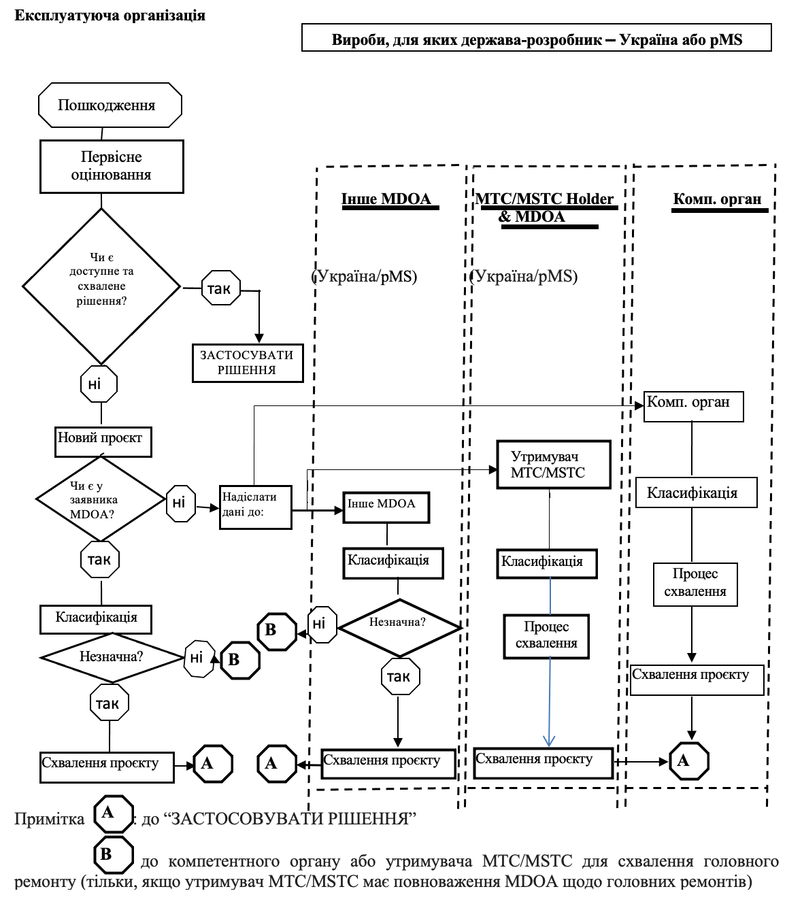Блок-схема 1
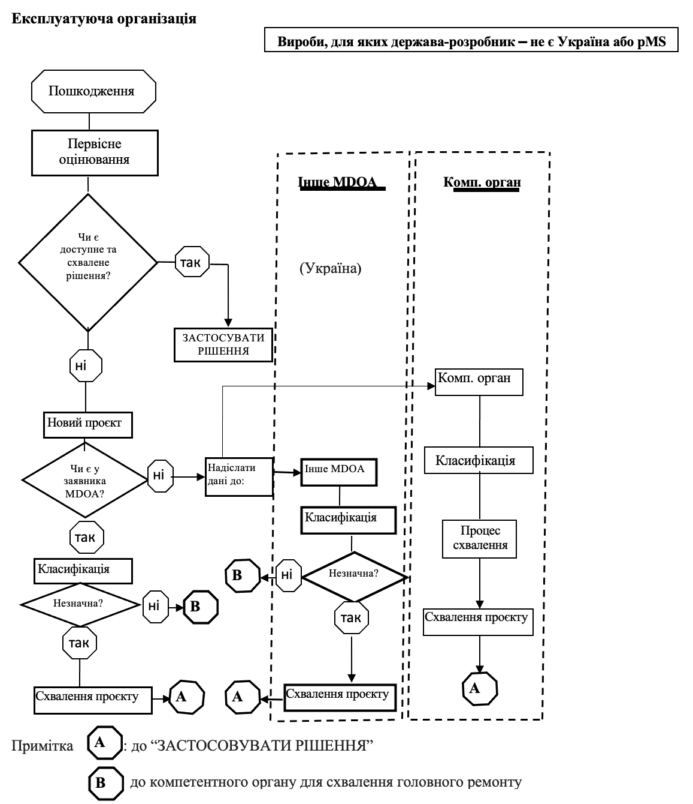Блок-схема 2
(b) “Ремонт” означає усунення пошкодження та/або відновлення придатного до льотної експлуатації стану після первісного передавання в експлуатацію виробником будь-якого виробу, компонента або обладнання.
(c) Усунення пошкодження шляхом заміни компонентів або обладнання без потреби здійснення діяльності з розробки має розглядатися як завдання з технічного обслуговування, тому в таких випадках не вимагається схвалення згідно з положеннями цих Правил.
(d) Ремонт МTSO комплектувального виробу, за винятком APU, має розглядатися як зміна МTSO конструкції і проводитися згідно з параграфом 21.А.611 цих Правил.GM
GM 21.A.431(d). Ремонти MTSO комплектувальних виробів (крім АPU)
Ремонт MTSO комплектувальних виробів (крім АPU) може бути розглянуто:
a) відповідно до положень 21.A.611 (в контексті MTSO схвалення), тобто, якщо комплектувальний виріб схвалено відповідно до положень Глави O Розділу A Частини-21В (із спеціальними правилами, які надають особливі права та зобов’язання розробнику комплектувального виробу), незалежно від будь-якої типової конструкції виробу або зміни типової конструкції. Для ремонту такого комплектувального виробу (незалежно від установлення на будь-якому ПС) мають бути дотримані вимоги 21.A.611; або
b) якщо організація, яка має схвалення відповідно доЧастини-145В/Частини-МВ, розробляє новий ремонт (на підставі даних, не опублікованих у документації утримувача МТС або виробника оригінального обладнання (Original Equipment Manufacturer)) для встановленого на ПС комплектувального виробу, такий ремонт може вважатися ремонтом виробу, на якому комплектувальний виріб встановлено, а не ремонтом комплектувального виробу, взятого окремо.
Отже, Главу M Розділу A Частини-21В може бути використано для схвалення такого ремонту, який буде визначено як “ремонт виробу х, що впливає на комплектувальний виріб у”, а не “ремонт комплектувального виробу y”.
21.А.432A. Прийнятність заявника
(a) Будь-яка організація, яка довела або доводить свою здатність згідно з положеннями параграфа 21.А.432В цих Правил, може бути заявником на отримання схвалення проекту головного ремонту відповідно до положень цієї глави.
(b) Будь-яка організація може подавати заявку на отримання схвалення проекту незначного ремонту.
21.А.432В. Доведення здатності
(a) Заявник на отримання схвалення проекту головного ремонту має доводити свою здатність шляхом отримання MDOA, яке видається компетентним органом згідно з положеннями глави J цих Правил.
(b) Шляхом відступу від положень пункту (a) (як альтернативна процедура для доведення своєї здатності) заявник може звертатися до компетентного органу за угодою щодо використання процедур, які визначають особливу методику розроблення, ресурси та послідовність заходів, необхідних для дотримання вимог цієї глави.
(с) Шляхом відступу від положень пунктів (а) та (б) будь-яка державна організація, що подає заявку для отримання схвалення проекту головного ремонту, може доводити свою здатність, маючи чинну угоду (схвалену компетентним органом відповідно до положень параграфа 21.А.2 цих Правил) з організацією розробника, яка має доступ до даних типової конструкції. В угоді має бути детально зазначено, як саме делеговані повноваження на здійснення заходів та зобов’язання дають можливість державній організації (у співпраці з вищезазначеною організацією розробника) дотримуватися вимог глави J цих Правил, а також доводити відповідність вимогам параграфа 21.A.451 цих Правил.AMC
AMC 21.A.432(c). Альтернативне доведення
У деяких країнах компетентним органом схвалюється державна організація для виконання обов'язків утримувача схвалення ремонту. Така державна організація (яка не має схвалення організації розробника) може подавати заявку на отримання схвалення ремонту. У такому випадку вона (відповідно до положень 21.А.2) має укласти угоду з організацією розробника, яка має доступ до даних типової конструкції (щоб забезпечувати здійснення конкретних заходів та зобов'язань). Під час виконання зобов'язань (про які йдеться у 21.A.451) слід враховувати, що будь-які альтернативні процедури для створення системи забезпечення розробки мають бути прийнятними для компетентного орган.
21.А.433. Проект ремонту
(a) Заявник на отримання схвалення проекту ремонту має:AMC
AMC 21.A.433(a) та 21.A.447. Проєкт ремонту та зберігання документів
a) Відповідні дані обґрунтування, пов'язані з новим проєктом головного ремонту та зберіганням документів, мають включати:
i. ідентифікацію пошкодження та джерело повідомлення;
іі. перелік, в якому зазначені застосовні специфікації і посилання щодо обґрунтування схвалення проєкту головного ремонту;
iii. креслення ремонту та/або інструкції та їх ідентифікатор;
iv. листування з утримувачами MTC, MSTC, MDOA або APU MTSO схвалення, якщо були звернення до них про надання консультацій щодо проєкту;
v. конструктивні обґрунтування (статична міцність, утомленість, допустимість пошкоджень, флатер тощо) або посилання на них;
vi. впливи на ПС, двигуни та/або системи (льотно-технічні характеристики, керованість польотом тощо, за потреби);
vii. впливи на програму технічного обслуговування,
viii. впливи на обмеження льотної придатності, AFM та Керівництво з експлуатації;
ix. зміну ваги та центрування;
x. спеціальні вимоги до випробувань.
b) Документація щодо незначного ремонту має включати зазначене у підпунктах (і) та (ііі) підпункту (а). За потреби, може бути включено зазначене в інших підпунктах підпункту (а). Якщо ремонт виходить за межі схвалених даних, потрібно обґрунтування його класифікації.
c) Особливу увагу має бути зосереджено на ремонтах, що накладають подальші обмеження на компоненти, вироби або обладнання (наприклад, частини турбіни двигуна, які можуть ремонтуватися лише обмежену кількість разів, кількість відремонтованих лопаток турбіни на комплект, перевищення розмірів отворів кріплення тощо).
d) Особливу увагу має бути зосереджено на компонентах з обмеженим ресурсом та на критичних компонентах, зокрема залучати утримувача MTC або MSTC, якщо таке вважається за необхідне (згідно із положеннями 21.A.433(b)).
e) Ремонти критичних компонентів двигуна, як правило, визнаються тільки за участі утримувача МТС.
1) доводити відповідність вимогам сертифікаційного базису типу та захисту довкілля (де застосовується), що внесені до сертифіката типу, додаткового сертифіката типу або MTSO схвалення APU (залежно від конкретного випадку), або тим вимогам, які є чинними на дату подання заявки (на отримання схвалення проекту ремонту), а також будь-яким поправкам до сертифікаційного базису типу, які компетентний орган вважає необхідними для встановлення рівня безпеки, еквівалентного встановленому сертифікаційним базисом типу, що внесений до сертифіката типу, додаткового сертифіката типу або до MTSO схвалення APU;
2) надавати усі необхідні дані обґрунтування компетентному органу, за його запитом;
3) заявляти про відповідність вимогам сертифікаційного базису типу та захисту довкілля (де застосовується), про що йдеться в підпункті (а)(1).
(b) Якщо заявник не є утримувачем сертифіката типу, додаткового сертифіката типу або MTSO схвалення APU (залежно від конкретного випадку), він може доводити відповідність вимогам пункту (а) за рахунок використання власних ресурсів або за допомогою угоди з утримувачем сертифіката типу, додаткового сертифіката типу або MTSO схвалення APU (залежно від конкретного випадку).
21.А.435. Класифікація ремонтів
(a) Ремонт може бути головним або незначним. Класифікація має здійснюватися відповідно до критеріїв параграфа 21.А.91 цих Правил щодо змін типової конструкції.GM
GM 21.A.435(a). Класифікація ремонтів
1. Пояснення термінів головні/незначні.
Відповідно до визначень, наведених у 21.A.91, новий ремонт класифікується як “головний” для схваленої типової конструкції, якщо результат його виконання має відчутний вплив на конструктивні характеристики, вагу, балансування, системи, експлуатаційні характеристики або інші характеристики, що впливають на льотну придатність виробу, компонента або обладнання. Зокрема, ремонт класифікується як головний, якщо його виконання потребує всебічного обґрунтування статичної міцності, утомної міцності (міцності за умовами утомленості конструкції) та міцності на розрив та/або проведення випробувань, або, якщо його виконання потребує методик, технічного обладнання або практичних застосувань, які є незвичайними (тобто, вибір незвичайних матеріалів, термічна обробка, фізичні процеси, діаграми вібрації тощо).
Ремонти, які потребують повторного оцінювання та переоцінки первинних даних обґрунтування сертифікації (щоб гарантувати, що ПС все ще відповідає всім застосовним вимогам), мають розглядатися як головні ремонти.
Ремонти, впливи яких вважаються незначними і які вимагають мінімального (або не вимагають) оцінювання первинних даних обґрунтування сертифікації (щоб гарантувати, що ПС все ще відповідає всім застосовним вимогам), мають розглядатися як незначні ремонти.
Зрозуміло, що не всі дані обґрунтування сертифікації будуть доступні тим особам/організаціям, які класифікують ремонти. Тому, рішення щодо впливів ремонту будуть прийнятними для попередньої класифікації. Подальший перегляд проєкту ремонту може призвести до його нової класифікації, оскільки попередні рішення перестають бути чинними.
2. Проблемні питання щодо льотної придатності для класифікації головні/незначні ремонти.
Під час класифікації ремонтів має бути враховано значимість їх впливу. Якщо вплив вважатиметься значним, то ремонт має бути класифіковано як “головний”. Ремонт може бути класифіковано як “незначний”, якщо його вплив не має відчутних наслідків.
а) Конструктивні характеристики.
Конструктивні характеристики виробу включають характеристики статичної міцності, утомленості, допустимості пошкоджень, флатеру та пружності. Ремонти будь-яких елементів конструкції мають оцінюватися через їхні впливи на конструктивні характеристики.
b) Вага та центровка.
Зміна ваги під час ремонту може мати більший вплив на легкі (на відміну від великих) ПС. Впливи, які мають бути враховані, пов'язуються із загальним центром тяжіння та розподілом навантаження на ПС. Рульові поверхні особливо чутливі до змін через впливи на жорсткість, розподіл маси та профіль поверхні (які можуть вплинути на характеристики флатеру та керованість).
c) Системи.
Ремонти будь-яких елементів системи мають бути оцінені з точки зору передбачуваного впливу на роботу всієї системи і впливу на резервування системи. Наслідки ремонту конструкції в суміжних чи віддалених системах також мають бути розглянуті, як зазначено вище (наприклад: ремонт планера в зоні отворів для приймання статичного тиску).
d) Експлуатаційні характеристики.
Зміни можуть охоплювати:
i. характеристики звалювання;
іі. керованість;
iii. льотно-технічні характеристики та лобовий опір;
iii. льотно-технічні характеристики та лобовий опір;
iv. вібрацію.
e) Інші характеристики:
i. зміни напряму та розподілу навантаження;
іі. протипожежний захист/протидія.
Примітка. Критерії щодо класифікації ремонтів “головні/незначні” не мають обмежуватися вищезазначеними.
3. Приклади “головних” ремонтів.
а) Ремонт, який потребує постійної додаткової перевірки схваленої програми технічного обслуговування, необхідної для верифікації первинної льотної придатності виробу. Тимчасові ремонти (для яких потребуються спеціальні перевірки перед впровадженням остаточного ремонту) не обов'язково повинні класифікуватися як “головні”. Крім того, перевірки та зміни їх періодичності, які не вимагаються як частина схвалення для верифікації первинної льотної придатності, не є підставою для класифікації пов’язаного ремонту як “головний”.
b) Ремонт компонентів з обмеженим ресурсом або критичних компонентів.
c) Ремонт, який призводить до необхідності внесення змін до AFM.
(b) Класифікація ремонту як головного або незначного (відповідно до положень пункту (a)) має проводитися:
1) компетентним органом; або
2) відповідно схваленою організацією розробника за узгодженою з компетентним органом процедурою.
21.А.437. Видача схвалення проекту ремонту
GMGM 21.A.437. Видача схвалення проєкту ремонту
1. Схвалення утримувачем MDOA.
Схвалення ремонтів через використання узгоджених з компетентним органом процедур означає видачу схвалення утримувачем MDOA без потреби залучення компетентного органу. Компетентний орган буде здійснювати моніторинг застосування таких процедур в рамках плану нагляду за відповідною організацією. Якщо організація застосовує такі повноваження, документація ремонту (що видається за його результатами) має чітко демонструвати, що схвалення видано відповідно до повноважень її MDOA.
2. Раніше схвалені дані для інших застосувань.
Якщо планується використовувати раніше схвалені дані для інших застосувань, передбачається, що їх застосовність та ефективність будуть перевірятися відповідно схваленою організацією розробника. Після ідентифікації пошкодження, якщо рішення щодо ремонту існує в межах доступних схвалених даних, і якщо застосування такого рішення до виявленого пошкодження, залишається обґрунтованим раніше схваленим проєктом ремонту (конструктивні обґрунтування все ще є чинними а можливі обмеження льотної придатності незмінні), рішення може вважатися схваленим і може застосовуватися знову.
3. Тимчасові ремонти.
Це обмежені строком служби ремонти, які потрібно видалити та замінити остаточним ремонтом після обмеженого періоду експлуатації. Такі ремонти мають класифікуватися згідно з положеннями 21.A.435 а терміни експлуатації з такими ремонтами визначається у їх схвалені.
4. Утомленість і допустимість пошкоджень.
Якщо відремонтований виріб передається в експлуатацію раніше терміну завершення оцінювання утомленості і допустимості пошкоджень, період такої експлуатації визначається в схваленні ремонту і його має бути обмежено.
Якщо заявлено та продемонстровано, що проект ремонту відповідає вимогам застосовного сертифікаційного базису типу та захисту довкілля (де застосовується), про що йдеться в підпункті 21.А.433(а)(1) цих Правил, він має схвалюватися:
(a) компетентним органом; абоGM
GM 21.A.437(a). Видача схвалення проєкту ремонту
1. Вироби, сертифіковані компетентним органом.
а) Схвалення компетентним органом потребується у випадках проведення головних ремонтів, запропонованих утримувачами схвалення організації розробника, які не є утримувачами MTC, MSTC або МTSO схвалення APU, а також у випадках проведення незначних ремонтів, запропонованих суб’єктами, які не є утримувачами схвалення організації розробника.
b) Схвалення компетентним органом може потребуватися у випадках проведення головних ремонтів, запропонованих утримувачами схвалення організації розробника, які є утримувачами MTC, MSTC або МTSO схвалення APU, якщо головний ремонт є таким, що:
і. пов'язаний із новим тлумаченням вимог льотної придатності, які використовувалися для сертифікації типу;
іі. пов'язаний із методами відповідності іншими, ніж ті, що використовувалися для сертифікації типу;
ііі. пов'язаний із застосуванням вимог льотної придатності інших, ніж ті, що використовувалися для сертифікації типу.
Примітка: Таке має бути встановлено під час MDOA.
2. Вироби, сертифіковані не компетентним органом
Для проведення головних ремонтів на таких виробах завжди потребується схвалення компетентного органу.
(b) відповідно схваленою організацією розробника, яка також є утримувачем сертифіката типу, додаткового сертифіката типу або MTSO схвалення APU, за узгодженою з компетентним органом процедурою; абоAMC
АМС 21.A.437(b). Видача схвалення проєкту ремонту
Для того, щоб схвалена організація розробника, яка також є утримувачем MTC, MSTC або МTSO схвалення APU, могла схвалювати проєкт головного ремонту, має вважатися застосовним таке:
a) утримувача MTC, MSTC або МTSO схвалення APU схвалено відповідно до положень Глави J Розділу A Частини-21В;
b) встановлено процедури, що відповідають вимогам Глави М Розділу A Частини-21В (як узгоджено з компетентним органом);
c) визначено (разом з усіма іншими відповідними вимогами) сертифікаційний базис для виробу, компонента або обладнання, що підлягають ремонту;
d) всі звітні матеріали та дані обґрунтування, включаючи документи, що доводять відповідність усім застосовним вимогам льотної придатності зберігаються для перевірок компетентним органом;
e) загальний перелік схвалень головних ремонтів надається на регулярній основі компетентному органу (як узгоджено з ним);
f) оцінюється вплив на проєкт ремонту через наявність будь-якого додаткового сертифіката типу.
(c) відповідно схваленою організацією розробника за узгодженою з компетентним органом процедурою (лише для незначних ремонтів).
21.А.439. Виготовлення компонентів для ремонту
GMGM 21.A.439. Виготовлення компонентів для ремонту
Будь-яка організація з технічного обслуговування може виготовляти компоненти для потреб ремонту, якщо її схвалено відповідно до положень Глави G Розділу A Частини-21В. Крім того, організація з технічного обслуговування може виготовляти компоненти для власних цілей ремонту, якщо таке спеціально дозволено компетентним органом.
Компоненти та обладнання, які використовуються для ремонту, мають виготовлятися (згідно з технологічними даними, що ґрунтуються на всіх необхідних даних з розробки, наданих утримувачем схвалення проекту ремонту):
(a) відповідно до положень глави F цих Правил; або
(b) організацією, схваленою належним чином відповідно до положень глави G цих Правил; або
(c) організацією з технічного обслуговування, схваленою належним чином.
21.А.441. Виконання ремонту
GMGM 21.A.441. Виконання ремонту
Ремонт має виконуватися будь-якою відповідно схваленою організацією з технічного обслуговування. Утримувач схвалення організації виробника (згідно з положеннями Глави G Розділу A Частини-21В) може виконувати ремонти на нових ПС (у межах умов схвалення) відповідно до повноважень, про які йдеться у 21.A.163(d).
(a) Ремонт має виконуватися схваленою належним чином організацією з технічного обслуговування або (згідно із зазначеними у пункті 21.А.163(d) цих Правил повноваженнями схваленою належним чином відповідно до глави G цих Правил) організацією виробника.
(b) Організація розробника має передавати організації, що виконує ремонт, усі необхідні інструкції з установлення.
21.A.443. Обмеження
GMGM 21.A.443. Обмеження
Пов'язані з ремонтами інструкції та обмеження мають визначатися та контролюватися застосовними процедурами.
Проект ремонту може схвалюватися з урахуванням обмежень. У такому разі схвалення проекту ремонту має включати всі необхідні інструкції та обмеження. Такі інструкції та обмеження утримувач схвалення проекту ремонту має передавати експлуатуючій організації (відповідно до узгодженої з компетентним органом процедури).
21.А.445. Пошкодження, що не усуваються
GMGM 21.A.445. Пошкодження, що не усуваються
Це не спрямовано на заміну нормальної практики технічного обслуговування, визначеної утримувачем сертифіката типу (наприклад, видалення корозії та захист від неї, припинення поширення тріщин свердленням їх кінцівок тощо), але стосується конкретних випадків непередбачених у документації виробника.
(a) Якщо пошкоджений виріб, компонент або обладнання залишаються не відремонтованими і не охоплюються раніше схваленими даними, оцінка пошкодження щодо його наслідків для льотної придатності може проводитися тільки:
1) компетентним органом; або
2) відповідно схваленою організацією розробника за узгодженою з компетентним органом процедурою. Будь-які необхідні обмеження мають встановлюватися згідно з процедурами, про які йдеться в параграфі 21.А.443 цих Правил.
(b) Якщо згідно з положеннями пункту (а) оцінку пошкодження здійснює інша організація, що не є компетентним органом або утримувачем сертифіката типу, додаткового сертифіката типу чи MTSO схвалення APU, вона має надавати підтвердження, що інформація, на якій ґрунтується оцінка, є достатньою (за рахунок використання власних можливостей організації або можливостей утримувача сертифіката типу, додаткового сертифіката типу чи MTSO схвалення APU, або можливостей виробника (за угодами з ними), залежно від конкретного випадку).
21.А.447. Зберігання документації
Для кожного ремонту вся відповідна інформація щодо конструкції, креслення, звіти з випробувань (також інструкції та обмеження, видані згідно з положеннями параграфа 21.А.443 цих Правил), обґрунтування класифікації та документ, що підтверджує схвалення проекту ремонту, мають:
(a) знаходитися в утримувача схвалення проекту ремонту і надаватися компетентному органу на його вимогу; та
(b) зберігатися утримувачем схвалення проекту ремонту з метою надання інформації, необхідної для забезпечення підтримання льотної придатності відремонтованих виробів, компонентів та обладнання.
21.А.449. Інструкції з підтримання льотної придатності
(a) Утримувач схвалення проекту ремонту має надавати кожній організації, що експлуатує повітряне судно з виконаним ремонтом, щонайменше один повний комплект тих змін до інструкцій з підтримання льотної придатності, в яких виникає необхідність у результаті виконання проекту ремонту та які містять описові дані й інструкції з виконання, розроблені відповідно до застосовних вимог.
Відремонтовані вироби, компоненти або обладнання можуть передаватися назад в експлуатацію до завершення внесення змін до таких інструкцій, але це може тривати протягом обмеженого періоду експлуатації і за погодженням із компетентним органом. Такі зміни до інструкцій мають надаватися на вимогу будь-якій іншій експлуатуючій організації, якій необхідно дотримуватися будь-яких положень таких змін до інструкцій. Допускається відсутність (під час введення виробу в експлуатацію) деяких керівництв або частини змін до інструкцій з підтримання льотної придатності щодо капітального ремонту або інших великих за обсягом форм технічного обслуговування, але вони мають бути наявними, перш ніж будь-який виріб досягне відповідного строку служби чи напрацювання, яке вимірюється в льотних годинах та/або циклах.
(b) Якщо утримувач схвалення проекту ремонту видає оновлення таких змін до інструкцій з підтримання льотної придатності після раніше проведеного схвалення ремонту, вони мають надаватися кожній організації, що експлуатує відремонтовані вироби, компоненти або обладнання, а також на вимогу будь-якій іншій експлуатуючій організації, якій необхідно дотримуватися будь-яких положень таких змін до інструкцій. Компетентному органу має надаватися програма, що демонструє, як саме надаються експлуатуючим організаціям оновлення змін до інструкцій з підтримання льотної придатності.
21.А.451. Зобов’язання та UKRMPA маркування
(a) Кожен утримувач схвалення головного ремонту має:
1) Взяти на себе зобов’язання:
(i) встановлені у параграфах 21.А.3А, 21.A.3В, 21.А.4, 21.А.439, 21.А.441, 21.A.443, 21.A.447 та 21.А.449 цих Правил;
(ii) співпрацювати з утримувачем сертифіката типу, додаткового сертифіката типу чи MTSO схвалення APU (відповідно до положень пункту 21.А.433(b) цих Правил (за потреби));
2) Визначати маркування, що включають літери UKRMPA, згідно з положеннями пункту 21.А.804(а) цих Правил.
(b) Якщо утримувач схвалення проекту незначного ремонту не є утримувачем сертифікатів типу або MTSO схвалення APU, до яких застосовуються положення параграфа 21.А.44 цих Правил, він має:
1) взяти на себе зобов’язання, встановлені у параграфах 21.А.4, 21.A.447 та 21.А.449 цих Правил; та
2) визначати маркування, що включають літери UKRMPA, згідно з положеннями пункту 21.А.804(а) цих Правил.
Глава N – Не застосовується
Глава О – Схвалення за військовим технічним стандартом
21.А.601. Сфера застосування
GMGM 21.A.601. Сфера застосування
Для цієї глави:
а) комплектувальний виріб (article) ‒ це будь-який компонент та будь-яке обладнання (включаючи GFE (такі, що постачаються державними організаціями)), що має використовуватися на військових ПС;
b) “технічні стандарти і встановлені вимоги льотної придатності”, на які робляться посилання, мають враховувати опубліковані технічні стандарти (наприклад, вимоги до сертифікації європейських технічних стандартів (CS-ETSO), технічні стандарти, видані федеральною авіаційною адміністрацією США (TSO standards issued by FAA)) або еквівалентні, які приймаються компетентним органом. На підставі прийнятих стандартів компетентний орган встановлює мінімальні вимоги до експлуатаційних характеристик для зазначених комплектувальних виробів;
c) комплектувальний виріб, виготовлений відповідно до MTSO схвалення, є схваленим комплектувальним виробом для Глави К Частини-21.
(a) У цій главі встановлюються процедура видачі МTSO схвалення та правила, що регулюють зобов’язання і повноваження заявників на отримання та утримувачів таких схвалень.
21.А.602А. Прийнятність заявника
Будь-яка організація, що виготовляє або готується виготовляти МTSO комплектувальний виріб (будь-який компонент та будь-яке обладнання, що має використовуватися на військових повітряних суднах) та яка довела або доводить свою здатність (відповідно до положень параграфа 21.А.602В цих Правил) може бути заявником на отримання МTSO схвалення.
21.А.602В. Доведення здатності
Будь-який заявник на отримання МTSO схвалення має доводити свою здатність так:
(a) для виробництва – шляхом отримання схвалення організації виробника (що видається згідно з положеннями глави G цих Правил) або через дотримання процедур, зазначених у главі F цих Правил; та
(b) для розробки:
1) для APU – шляхом отримання схвалення організації розробника, що видає компетентний орган згідно з положеннями глави J цих Правил;
2) для усіх інших комплектувальних виробів – шляхом застосування процедур, які передбачають особливу методику розроблення, ресурси та послідовність заходів, необхідних для дотримання вимог цієї глави.AMC
AMC 21.A.602B(b)(2). Процедури для MTSO схвалення
1. Обсяг та зміст.
Керівництво з процедур має містити інформацію щодо особливої методики розроблення, ресурсів та послідовності заходів для конкретних проєктів (з урахуванням вимог Частини-21В). Такі процедури мають бути стислими та обмежуватись інформацією, необхідною для здійснення якісного та належного контролю за діяльністю з розробки з боку заявника/утримувача і компетентного органу.
2. Керування процесом MTSO схвалення.
Має бути встановлено процедуру, в якій пояснюється, як буде робитися компетентному органу заявка на процес сертифікації, щоб отримати MTSO схвалення.
3. Керування змінами конструкції.
Має бути встановлено процедуру (з урахуванням положень 21.A.611) для класифікації та схвалення змін конструкції комплектувальних виробів, які мають MTSO схвалення.
Ремонти та виробничі відхилення від схвалених даних з розробки.
Має бути встановлено процедуру класифікації та схвалення ремонтів та ненавмисних відхилень від схвалених даних з розробки, що виникають в процесі виробництва (дозволені відхилення або невідповідності).
4. Зобов'язання, про які йдеться в 21.A.609.
Заявник має встановити необхідні процедури, щоб продемонструвати компетентному органу, як саме будуть виконуватися зобов’язання відповідно до вимог 21.A.609. Для видання інформації та інструкцій має бути встановлено процедуру відповідно до принципів підпункту (4) AMC 21.A.14(b).
5. Контроль за розробкою субпідрядників.
Заявник має встановити необхідні процедури, щоб продемонструвати компетентному органу, як він буде здійснювати контроль за розробкою субпідрядників.
21.А.603. Заявка
(а) Заявка на отримання МTSO схвалення має робитися за формою та у спосіб, встановлені компетентним органом, та має містити короткий зміст інформації, яка вимагається у параграфі 21.A.605 цих Правил.
(b) Якщо передбачаються для впровадження серії незначних змін згідно з положеннями параграфа 21.A.611 цих Правил, заявник має вказувати в заявці код початкової моделі комплектувального виробу та коди партій комплектувальних виробів, пов’язані з такими незначними змінами. Вони відрізняються від коду початкової моделі наявністю в їх кінці відкритих дужок, щоб у них позначати внесені незначні зміни до початкової моделі шляхом додавання букв чи цифр (або їх комбінації).
21.А.604. Отримання МTSO схвалення для допоміжної силової установки (APU)
Щодо МTSO схвалення для APU:
(a) шляхом відступу від положень параграфів 21.А.603, 21.А.610, 21.А.615 та пункту 21.А.606(с) цих Правил мають застосовуватися положення параграфів 21.А.15, 21.А.16В, 21.А.17, 21.А.20, 21.А.21, 21.А.31, 21.А.33, 21.А.44 цих Правил, за винятком того, що замість сертифіката типу має видаватися МTSO схвалення (згідно з положеннями параграфа 21.А.606 цих Правил);
(b) шляхом відступу від положень параграфа 21.А.611 цих Правил для схвалення змін конструкції застосовуються положення глав D або Е цих Правил. Якщо застосовуються положення глави Е, замість додаткового сертифіката типу має видаватися окреме МTSO схвалення;
(с) положення глави М цих Правил застосовуються для схвалення проектів ремонту.
21.А.605. Вимоги до інформації
Заявник має подавати до компетентного органу такі документи:
(a) заяву про відповідність, яка засвідчує, що заявник виконав вимоги цієї глави;
(b) декларацію про конструкцію та характеристики (Declaration of Design and Performance – DDP);
(c) одну копію технічних даних, які вимагаються застосовними технічними стандартами та встановленими вимогами льотної придатності;
(d) керівництво (або посилання на нього), про яке йдеться у параграфі 21.А.143 цих Правил (з метою отримання відповідного схвалення організації виробника згідно з положеннями глави G цих Правил) або керівництво (або посилання на нього), про яке йдеться у пункті 21.А.125A(b) цих Правил (з метою отримання схвального листа, щоб виготовляти вироби, компоненти та обладнання без схвалення організації виробника, відповідно до положень глави F цих Правил);
(e) DOE (або посилання на нього), про яке йдеться у параграфі 21.А.243 цих Правил (з метою отримання відповідного схвалення організації розробника згідно з положеннями глави J цих Правил – для APU);
(f) процедури, про які йдеться у підпункті 21.А.602В(b)(2) цих Правил, для всіх інших комплектувальних виробів.
21.А.606. Видача МTSO схвалення
Заявник може отримати МTSO схвалення, що видає компетентний орган, після:
(a) доведення своєї здатності згідно з положеннями параграфа 21.А.602В цих Правил;
(b) доведення відповідності комплектувального виробу технічним умовам технічних стандартів і встановленим вимогам льотної придатності, що є прийнятними для компетентного органу, та надання відповідної заяви про відповідність; та
(c) спеціальної заяви щодо його готовності дотримуватися вимог параграфа 21.А.609 цих Правил.
21.А.607. Повноваження, які надає МTSO схвалення
Утримувач МTSO схвалення може виготовляти та маркувати комплектувальний виріб відповідним МTSO маркуванням.
21.А.608. Декларація про конструкцію та характеристики (DDP)
AMCAMC 21.A.608. Декларація про конструкцію та характеристики (Declaration of Design and Performance, далі – DDP))
UA MAR Form DDP має бути заповнено заявником.
(a) Декларація про конструкцію та характеристики має містити таке:
1) інформацію відповідно до положень пунктів 21.А.31(а) та (b) цих Правил, що ідентифікує комплектувальний виріб, його конструкцію та стандарти для випробувань;
2) встановлені розробником експлуатаційні характеристики комплектувального виробу, зазначені або безпосередньо, або через посилання на інші додаткові документи (за потреби);
3) заяву про відповідність, яка засвідчує, що комплектувальний виріб відповідає застосовним технічним стандартам та встановленим вимогам льотної придатності;
4) посилання на відповідні звіти з випробувань;
5) посилання на відповідні керівництва з технічного обслуговування, капітального ремонту та відновлювального ремонту;
6) рівні доведення відповідності, якщо застосовними технічними стандартами та встановленими вимогами льотної придатності дозволяється використовувати різні рівні доведення відповідності;
7) перелік відхилень, прийнятних відповідно до положень параграфа 21.А.610 цих Правил.
(b) Декларацію про конструкцію та характеристики має візувати підписом утримувач МTSO схвалення або його уповноважений представник із зазначенням дати.
21.А.609. Зобов’язання утримувачів МTSO схвалення
Утримувач МTSO схвалення відповідно до положень цієї глави має:
(a) виготовляти кожен комплектувальний виріб згідно з положеннями глав G або F цих Правил, що забезпечує відповідність кожного готового комплектувального виробу його даним з розробки та робить його безпечним для установлення;
(b) розробляти та зберігати чинну документацію, що містить повний комплект технічних даних і звітних матеріалів, відповідно до положень параграфа 21.А.613 цих Правил для кожної МTSO схваленої моделі кожного комплектувального виробу;
(c) розробляти, зберігати та оновлювати оригінали всіх керівництв, що вимагаються застосовними нормами льотної придатності для комплектувального виробу;
(d) надавати користувачам комплектувального виробу та компетентному органу (на його вимогу) ті керівництва з технічного обслуговування, капітального ремонту та відновлювального ремонту, які необхідні під час експлуатації та технічного обслуговування комплектувального виробу. Також надаються зміни, які будуть внесені до тих керівництв;
(e) маркувати кожен комплектувальний виріб згідно з положеннями параграфа 21.А.807 цих Правил;
(f) дотримуватися вимог параграфів 21.А.3А, 21.А.3В та 21.А.4 цих Правил;
(g) підтримувати відповідність сертифікаційним вимогам параграфа 21.А.602В цих Правил.
21.А.610. Схвалення відхилень
(a) Кожен виробник, який пропонує схвалення відхилень від будь-яких експлуатаційних характеристик, що вимагаються застосовними технічними стандартами та встановленими вимогами льотної придатності, має доводити, що вимоги стандартів, від яких пропонуються відхилення, компенсуються умовами або особливостями конструкції, що забезпечують еквівалентний рівень безпеки.
(b) Заявка на схвалення відхилень разом з усіма даними, що вимагаються, має подаватися компетентному органу.
21.А.611. Зміни конструкції
GMGM 21.A.611. Зміни конструкції
Зміну до MTSO комплектувального виробу може бути розглянуто:
відповідно до положень 21.A.611 (в контексті MTSO схвалення), тобто, якщо комплектувальний виріб схвалено відповідно до положень Глави O Розділу A Частини-21В (із спеціальними правилами, які надають особливі права та зобов’язання розробнику комплектувального виробу), незалежно від будь-якої типової конструкції виробу або зміни типової конструкції. Для зміни такого комплектувального виробу (незалежно від установлення на будь-якому ПС) мають бути дотримані вимоги 21.A.611; або
якщо організація розробляє зміну (на підставі даних, не опублікованих у документації утримувача МТС або виробника оригінального обладнання (Original Equipment Manufacturer)) для встановленого на ПС комплектувального виробу, така зміна може вважатися зміною виробу, на якому комплектувальний виріб встановлено, а не зміною комплектувального виробу, взятого окремо.
Отже, Главу D Розділу A Частини-21В може бути використано для схвалення такої зміни, яку буде визначено як “зміну виробу х, що стосується комплектувального виробу у”, а не “зміну комплектувального виробу y”.
(a) Утримувач МTSO схвалення може вносити незначні зміни до конструкції (будь-яку зміну, що не є головною) без подальшого дозволу компетентного органу. У такому разі змінений комплектувальний виріб зберігає код початкової моделі (для ідентифікації незначних змін мають використовуватися поправки або зміни до коду партії). Утримувач має надавати компетентному органу будь-які дані щодо внесених поправок, які необхідні для дотримання відповідності положенням пункту 21.А.603(b) цих Правил.
(b) Будь-яка внесена утримувачем МTSO схвалення зміна конструкції, яка є досить масштабною та потребує суттєво повного дослідження, щоб визначати її відповідність застосовним технічним стандартам та встановленим вимогам льотної придатності, є головною зміною конструкції. До внесення такої зміни в конструкцію утримувач має присвоювати нове позначення типу або моделі комплектувального виробу та подавати заявку на отримання нового схвалення (відповідно до положень параграфа 21.А.603 цих Правил).
(с) Зміна конструкції, внесена будь-якою організацією, що не є утримувачем МTSO схвалення (який подав заяву про відповідність для комплектувального виробу), не підлягає схваленню відповідно до глави О цих Правил, якщо організація, що намагається отримати схвалення, не подає заявку для окремого МTSO схвалення відповідно до положень параграфа 21.А.603.
21.А.613. Зберігання документації
На підставі вимог щодо зберігання документації, прийнятних для системи якості або пов’язаних з нею, вся відповідна інформація щодо конструкції, креслення та звіти з випробувань, включаючи звітні матеріали щодо перевірки комплектувального виробу, який проходив випробування, мають бути доступними для компетентного органу та зберігатися з метою надання інформації, необхідної для забезпечення підтримання льотної придатності комплектувального виробу та сертифікованого виробу, на якому цей комплектувальний виріб установлено.
21.А.615. Перевірка компетентним органом
На вимогу компетентного органу кожний заявник або утримувач МTSO схвалення має давати можливість компетентному органу:
(a) бути присутнім на будь-яких випробуваннях;
(b) перевіряти документацію з технічними даними для будь-якого комплектувального виробу.
21.А.619. Строк дії та чинність
(a) МTSO схвалення має видаватися на необмежений строк. Воно має залишатися чинним, якщо:
1) дотримуються умови, за якими МTSO схвалення було надано; або
2) виконуються зобов’язання утримувача, визначені в параграфі 21.А.609 цих Правил; або
3) експлуатація комплектувального виробу довела, що він не спричиняє небажаних ризиків; або
4) схвалення не було здано або скасовано відповідно до застосовних адміністративних процедур, встановлених компетентним органом.
(b) Після здачі або скасування схвалення має бути повернуто до компетентного органу.
21.А.621. Передавання
МTSO схвалення, видане за умовами цих Правил, не передається (за винятком випадку зміни прав власності утримувача). Така зміна в організації виробника (розробника) має розглядатися значною, тому (залежно від конкретного випадку) мають виконуватися вимоги, зазначені у параграфах 21.А.147 та 21.А.247 цих Правил.
Глава Р – Дозвіл (військовий) на виконання польотів
GM до Глави P
Процес отримання дозволу (військового) на виконання польотів, може бути описаний наступним чином:
1. Блок-схема 1: загальне уявлення;
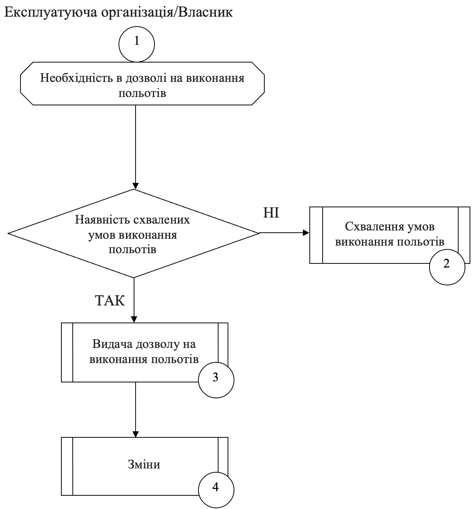2. Блок-схема 2: схвалення умов польоту;
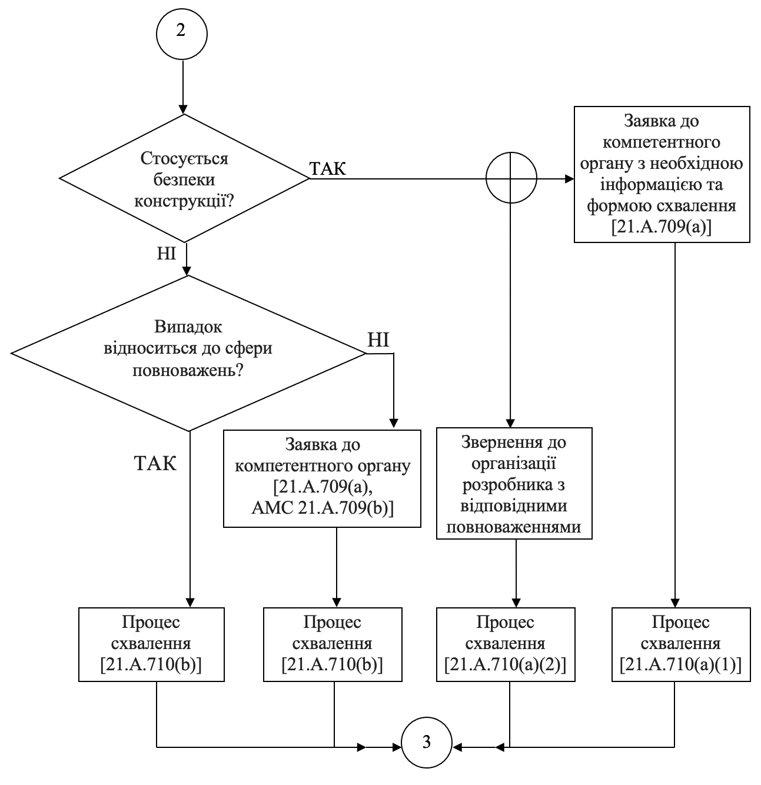3. Блок-схема 3: видача дозволу (військового) на виконання польотів;
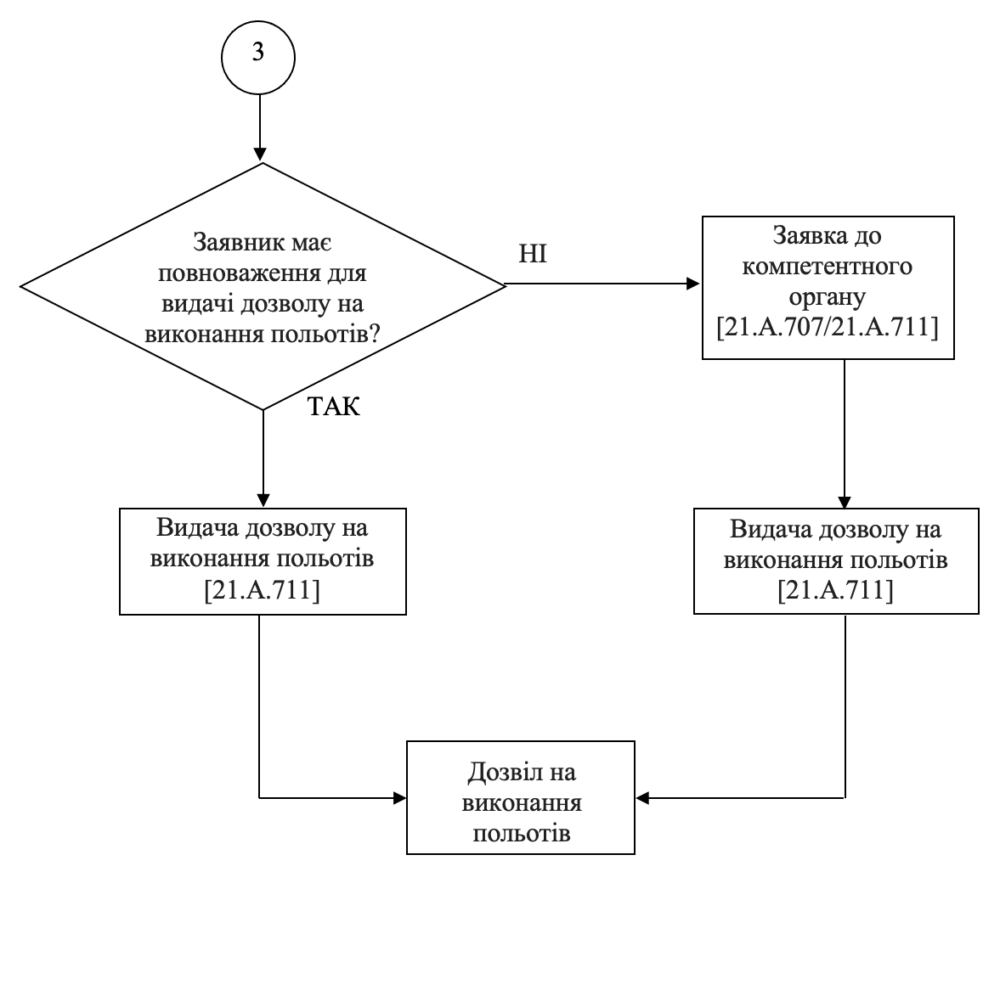4. Блок-схема 4: зміни після першої видачі дозволу (військового) на виконання польотів.
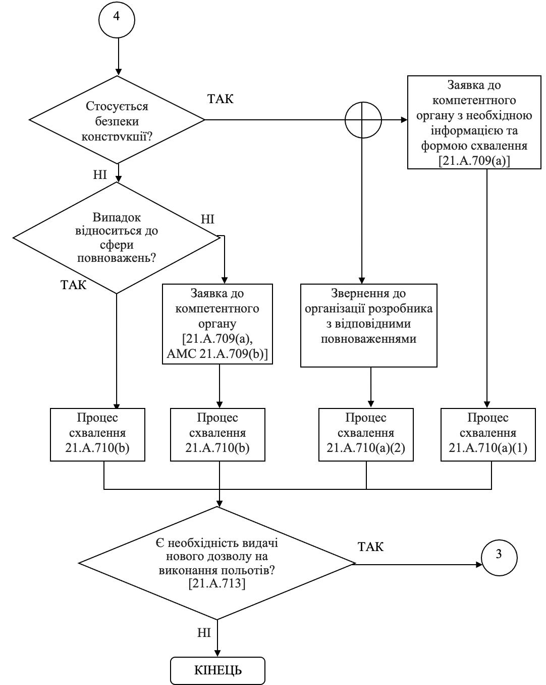21.А.701. Сфера застосування
GMGMGM 21.A.701. Дозвіл (військовий) на виконання польотів (коли сертифікат льотної придатності або обмежений сертифікат льотної придатності не може бути видано)
Сертифікат льотної придатності (обмежений сертифікат льотної придатності) не може видаватися для окремого ПС, якщо неможливо дотримуватися стандартних вимог щодо підтримання льотної придатності. У такому разі, якщо ПС відповідає стандартній конструкції (що доводить його здатність виконувати безпечний політ відповідно до визначених умов), може видаватися дозвіл (військовий) на виконання польотів. У 21.A.701 визначені випадки, коли може видаватися дозвіл (військовий) на виконання польотів, а у цьому GM для таких випадків надається додаткова інформація та типові приклади для пояснення (цей перелік прикладів не є вичерпним):
а) виконання дослідно-випробувальних польотів:
випробування нового ПС або модифікацій;
випробування нових конфігурацій планера, двигуна, повітряного гвинта та обладнання;
випробування нових елементів техніки пілотування;
b) виконання польотів для доведення відповідності правилам або сертифікаційним вимогам:
сертифікаційні льотні випробування для отримання МТС, МSТС, схвалення змін до МТС або MTSO схвалення;
с) виконання тренувальних польотів екіпажів організацій розробника (виробника):
польоти для тренування екіпажу, який буде виконувати льотні випробування за програмою розробника (виробника) до моменту схвалення конструкції або видачі сертифіката льотної придатності;
d) виконання новими виготовленими ПС виробничих льотних випробувань:
для встановлення відповідності схваленій конструкції, як правило це буде та сама програма для ряду подібних ПС;
e) виконання перельотів ПС між виробничими об’єктами (відповідно до завдань виробництва):
переліт “зеленого” ПС для завершення його виробництва;
f) виконання польотів ПС під час приймання його замовником:
до моменту продажу (реєстрації) ПС;
g) виконання польотів, пов’язаних з поставкою (експортом) ПС:
до моменту реєстрації ПС у державі, де буде видано сертифікат льотної придатності;
h) виконання польотів ПС під час приймання його компетентним органом:
у разі перевірки льотного випробування компетентним органом до моменту видачі сертифіката льотної придатності;
i) виконання польотів з метою проведення дослідження ринку та комерційних презентацій, включаючи тренування екіпажу замовника:
польоти з метою проведення дослідження ринку, комерційних презентацій та тренування екіпажу замовника на ПС, для якого сертифікат типу (військовий) не видано або на ПС, для якого відповідність схваленій конструкції ще не встановлено, або на незареєстрованому ПС до моменту видачі сертифіката льотної придатності;
j) виконання польотів для участі у виставках та авіашоу:
польоти ПС до місця проведення виставки або шоу і участь у їх проведенні до видачі схвалення конструкції, або до підтвердження відповідності схваленій конструкції;
k) виконання перельотів ПС до місця проведення технічного обслуговування або до місця перегляду льотної придатності, або до місця зберігання, якщо:
технічне обслуговування не може виконуватися відповідно до схвалених програм;
неможливо дотримуватись вимог Директив льотної придатності;
певне обладнання (що не входить до MMEL) непридатне для експлуатації;
ПС зазнало пошкодження, що перевищує встановлені обмеження;
l) виконання польотів ПС на понаднормативну дальність над водою або над земною поверхнею, де немає придатних для посадки засобів чи відповідного палива, з вагою, що перевищує його максимальну сертифіковану злітну вагу:
здійснюється нагляд за перельотами ПС з додатковою ємністю палива;
m) виконання спроб встановлення рекордів ПС.
n) виконання польотів ПС, що відповідає застосовним вимогам льотної придатності, але для якого не забезпечено відповідність вимогам захисту довкілля (де застосовується):
польоти ПС, на якому доведено відповідність усім застосовним вимогам льотної придатності, але не доведено відповідність вимогам захисту довкілля;
o) для окремого ПС, яке не відповідає сертифікату льотної придатності або обмеженому сертифікату льотної придатності:
для ПС, яке практично не може відповідати всім застосовним вимогам льотної придатності (наприклад, ПС без утримувача сертифіката типу (військового), яке узагальнено називається “сирітським"), або ПС, яке перебувало під національною системою дозволу (військового) на виконання польотів, і для якого не було доведено відповідність усім застосовним вимогам. Варіант видачі дозволу (військового) на виконання польотів для таких ПС має застосовуватися тільки в тому випадку, якщо сертифікат льотної придатності або обмежений сертифікат льотної придатності не може бути видано у зв'язку з умовами, що не знаходяться безпосередньо під контролем власника ПС (наприклад, відсутність належним чином сертифікованих запасних компонентів).
Примітка: наведений перелік містить випадки, коли дозвіл (військовий) на виконання польотів МОЖЕ видаватися, проте це не означає, що у наведених випадках дозвіл (військовий) на виконання польотів МАЄ видаватися. Якщо доступні інші законні засоби, що дозволяють призначений політ (польоти), їх також можливо використовувати.
GM 21.A.701. Сфера застосування
ПС, що зареєстроване в країні, яка не застосовує EMAR і використовується для льотних випробувань організацією, яка має своє основне місце діяльності в державі, що застосовує EMAR, залишається під повноваженнями компетентного органу держави своєї реєстрації. Компетентний орган або відповідно схвалена організація розробника (країни де використовується ПС) можуть надавати (за запитом) технічну допомогу державі реєстрації для видачі дозволу (військового) на виконання польотів (UA MAR Form 20b) відповідно до застосовних правил держави реєстрації.
(а) Дозволи (військові) на виконання польотів згідно з положеннями цієї глави мають видаватися для повітряних суден, які не відповідають або для яких не доведено відповідність застосовним вимогам льотної придатності, але вони є здатними виконувати безпечний політ відповідно до визначених умов та в таких цілях (приклади, коли можуть вимагатися дозволи (військові) на виконання польотів):
1) під час виконання дослідно-випробувальних польотів;
2) під час виконання сертифікаційних польотів для доведення відповідності правилам або нормам льотної придатності;
3) під час виконання тренувальних польотів екіпажів організацій розробника (виробника);
4) під час виконання новими виготовленими повітряними суднами виробничих льотних випробувань;
5) під час виконання перельотів повітряного судна між виробничими об’єктами відповідно до завдань виробництва;
6) під час виконання польотів повітряного судна, коли його приймає замовник;
7) під час виконання польотів до реєстрації у державі, де буде видано сертифікат льотної придатності, у разі поставки (експорту) повітряного судна;
8) під час виконання польотів повітряного судна, коли його приймає компетентний орган;
9) під час виконання польотів з метою проведення дослідження ринку та комерційних презентацій, включаючи тренування екіпажу замовника;
10) під час виконання польотів для участі у виставках та авіашоу;
11) під час виконання перельотів повітряного судна до місця проведення технічного обслуговування, або місця перегляду льотної придатності, або місця зберігання;
12) під час виконання польотів повітряного судна на понаднормативну дальність над водою або над земною поверхнею, де немає придатних для посадки засобів чи відповідного палива, з вагою, що перевищує його максимальну сертифіковану злітну вагу;
13) під час виконання спроб встановлення рекордів повітряними суднами;
14) під час виконання польотів повітряного судна, що відповідає застосовним вимогам льотної придатності, але для якого не забезпечено відповідність вимогам захисту довкілля (де застосовується);
15) для окремого повітряного судна або типів, які не відповідають сертифікату льотної придатності або обмеженому сертифікату льотної придатності.
(b) У цій главі встановлюється процедура для видачі дозволів (військових) на виконання польотів та схвалення пов’язаних умов виконання польотів, встановлюються права та зобов’язання заявників на отримання та утримувачів цих дозволів та схвалень.
21.А.703. Прийнятність заявника
GMGM 21.A.703. Заявник на отримання дозволу (військового) на виконання польотів
Заявник на отримання дозволу (військового) на виконання польотів може бути організацією, яка не є зареєстрованим власником цього ПС. Оскільки утримувач цього дозволу буде нести відповідальність за забезпечення постійного дотримання всіх умов та обмежень, пов'язаних з дозволом (військовим) на виконання польотів, заявник на отримання дозволу має бути організацією, придатною взяти на себе цю відповідальність.
Зокрема, організації, які розробляють, модифікують або обслуговують ПС, мають бути (як правило) утримувачами відповідних дозволів на виконання польотів. Належно схвалена організація розробника може подавати заявку, щоб схвалювати умови польоту, використовуючи свої повноваження відповідно до положень 21.A.263(b)(1).
(а) За рішенням компетентного органу будь-яка організація може бути заявником на отримання дозволу (військового) на виконання польотів згідно із зазначеними в цій главі умовами. Заявник на отримання дозволу (військового) на виконання польотів також може для подання заявки на схвалення умов виконання польоту.
(b) Зарезервовано.
(c) Зарезервовано.
21.A.705. Компетентний орган
Дозвіл (військовий) на виконання польотів має видаватися компетентним органом, у тому числі у випадках, коли повітряне судно виконуватиме політ в іншій державі.
Дозвіл (військовий) на виконання польотів містить усі умови та обмеження, щоб забезпечувати безпечний політ. Проте в компетенції компетентного органу держави, в якій має відбуватися політ, залишаються правила виконання польотів у повітряному просторі. Тому заявник має також забезпечувати дотримання відповідних правил цієї держави.
21.A.707. Заявка на отримання дозволу (військового) на виконання польотів
(а) Відповідно до положень параграфа 21.А.703 цих Правил та якщо заявник не отримав повноважень на видачу дозволу (військового) на виконання польотів, заявка компетентному органу на його отримання має робитися за формою та у спосіб, встановлені компетентним органом.
(b) Кожна заявка на отримання дозволу (військового) на виконання польотів має включати:GM
GM 21.A.707(b). Заявка
Дозвіл (військовий) на виконання польотів має видаватися компетентним органом відповідно до поданої заявки за UA MAR Form 21.
1) цілі польотів відповідно до положень параграфа 21.А.701 цих Правил;
2) причини, з яких повітряне судно не відповідає застосовним вимогам льотної придатності;
3) умови польоту, схвалені відповідно до положень параграфа 21.А.710 цих Правил.
(с) Якщо умови польоту не схвалено на дату подання заявки на отримання дозволу (військового) на виконання польотів, заявка на їх схвалення має робитися згідно з положеннями параграфа 21.А.709 цих Правил.
21.А.708. Умови польоту
Умови польоту включають:
(а) конфігурації, для яких вимагається дозвіл (військовий) на виконання польотів;
(b) будь-які умови або обмеження, необхідні для безпечної експлуатації повітряного судна, в тому числі:
1) умови та обмеження, що встановлюються на маршрути або на використання повітряного простору, необхідні для виконання польоту (польотів);
2) умови та обмеження, що встановлюються для льотного екіпажу, щоб виконати політ на повітряному судні;
3) обмеження щодо перевезення інших, ніж льотний екіпаж, осіб;
4) експлуатаційні обмеження, спеціальні процедури або технічні умови, що мають виконуватися (які можуть містити обмеження щодо транспортування/скидання/застосування засобів ураження);
5) спеціальну програму льотних випробувань (якщо застосовується);
6) спеціальні заходи з підтримання льотної придатності та порядок, відповідно до якого вони виконуватимуться;GM
GM 21.A.708(b)(6). Підтримання льотної придатності
У більшості випадків, простого посилання на існуючі вимоги щодо технічного обслуговування буде достатньо для ПС, що має тимчасово недійсний сертифікат льотної придатності. Для інших ПС ці вимоги повинні бути запропоновані заявником як частина умов польоту. Для схвалених організацій вони можуть включатися до їх процедур.
(с) обґрунтування здатності повітряного судна виконувати безпечний політ відповідно до умов або обмежень, зазначених у пункті (b);GM №1GM №2
GM №1 21.A.708(с). Безпечний політ
Безпечний політ (як правило) означає тривалий безпечний політ та приземлення, але в деяких виняткових випадках (наприклад, випробувальний політ з підвищеним ризиком) він (безпечний політ) може означати, що ПС здатне виконувати політ так, щоб в першу чергу забезпечувати безпеку третіх сторін на території, над якою пролітатиме ПС, екіпажу ПС та інших фахівців (якщо вони залучаються). Таке визначення "безпечного польоту" не має тлумачитися як дозвіл льотчику-випробувачу, екіпірованому парашутом, вилітати у випробувальний політ над малонаселеною місцевістю, маючи повне усвідомлення, що існує велика ймовірність втрати ПС. Заявник має проявляти розумну обережність щоб мінімізувати ризики (що стосуються безпеки) та бути впевненим, що існує достатня вірогідність здійснення польоту без шкоди або пошкодження ПС та осіб, що знаходяться на його борту, іншого майна або інших осіб, що перебувають в повітрі чи на землі.
GM №2 21.A.708(c). Обґрунтування
Обґрунтування має включати аналіз, розрахунки, випробування або інші заходи, що використовуються для визначення, за яких умов або обмежень ПС може безпечно виконувати політ.
(d) методику, що використовується для керування конфігурацією повітряного судна, щоб залишатися в межах встановлених умов.GM
GM 21.A.708(d). Контроль конфігурації ПС
Заявник має встановлювати систему контролю за будь-якою зміною або ремонтом зробленими на ПС, щоб визначати зміни або ремонти, які не скасовують умов, встановлених для отримання дозволу (військового) на виконання польотів. Всі інші зміни (умов) мають схвалюватися відповідно до положень 21.A.713 та (за потреби) має видаватися новий дозвіл (військовий) на виконання польотів (відповідно до положень 21.A.711).
21.А.709. Заявка на схвалення умов польоту
(а) Відповідно до положень пункту 21.А.707(с) цих Правил та якщо заявник не отримав повноважень на схвалення умов польоту, заявка на їх схвалення має робитися за формою та у спосіб, встановлені компетентним органом.
(b) Кожна заявка на схвалення умов польоту має включати:AMC
AMC 21.A.709(b). Подання документації, що підтверджує встановлення умов польоту
Разом із заявкою мають подаватися документи (що підтверджують умови польоту) і заповнену всією відповідною інформацією UA MAR Form 18b. Якщо повний набір даних не підготовлено на момент подачі заявки, то відсутні елементи можуть надаватися пізніше. У такому разі UA MAR Form 18b має схвалюватися лише тоді, коли всі дані будуть в наявності, щоб заявник міг зробити заяву, яка вимагається в блоці 9 UA MAR Form 18b.
1) умови польоту, що пропонуються;
2) документи, що підтверджують такі умови;
3) заяву про здатність повітряного судна виконувати безпечний політ відповідно до умов або обмежень, зазначених у пункті 21.А.708(b) цих Правил.
21.А.710. Схвалення умов польоту
GMGM 21.A.710. Схвалення умов польоту
1. Схвалення умов польоту пов’язується з безпекою конструкції, якщо:
а) ПС не відповідає схваленій конструкції;
b) не дотримуються обмеження льотної придатності, сертифікаційні вимоги до технічного обслуговування або вимоги директиви з льотної придатності;
c) умови призначеного польоту (польотів) знаходяться за межами схваленого переліку обмежень.
2. Прикладами, коли схвалення умов польоту не пов’язується з безпекою конструкції, є:
а) виробничі льотні випробування з метою встановлення відповідності;
b) поставка (експорт) нового ПС, конструкція якого схвалена;
c) доведення, що зберігається відповідність стандарту, раніше прийнятому компетентним органом для ПС (типу ПС), під час процедури отримання або поновлення сертифіката льотної придатності (обмеженого сертифіката льотної придатності).
(а) Якщо схвалення умов польоту стосується безпеки конструкції, вони мають схвалюватися:
1) компетентним органом; або
2) відповідно схваленою організацією розробника згідно з повноваженнями, зазначеними у підпункті 21.А.263(с)(6) цих Правил.
(b) Якщо схвалення умов польоту не стосується безпеки конструкції, вони мають схвалюватися компетентним органом або відповідно схваленою організацією, яка видаватиме дозвіл на виконання польотів.
(с) Перед схваленням умов польоту компетентний орган або схвалена (згідно з положеннями пунктів 21.A.711(b) або (c) цих Правил) організація повинні переконатися у здатності повітряного судна виконувати безпечний політ відповідно до зазначених умов та обмежень. З цією метою компетентний орган може проводити або вимагати від заявника провести будь-які необхідні перевірки або випробування.
21.А.711. Видача дозволу (військового) на виконання польотів
AMCAMC 21.A.711. Видача дозволу (військового) на виконання польотів
Як альтернативний спосіб дотримання вимог положень Глави Р, дозвіл (військовий) на виконання польотів для ПС, призначеного для проведення льотних випробувань, має видаватися відповідно до процедури отримання дозволу (військового) на виконання льотних випробувань (далі - MFTP) (має також бути визначено процес схвалення умов льотного випробування). Процес отримання MFTP було спеціально розроблено для використання під час проведення військових льотних випробувань та надання можливості більш тіснішої співпраці між країнами-учасницями, використовуючи єдиний MFTP.
(а) Компетентний орган має видавати дозвіл (військовий) на виконання польотів:
1) після надання даних, необхідних згідно з положеннями параграфа 21.A.707 цих Правил;
2) якщо умови, зазначені в параграфі 21.A.708 цих Правил, було схвалено відповідно до положень параграфа 21.A.710; та
3) якщо компетентний орган за допомогою своїх власних досліджень (які можуть включати перевірки) або за допомогою погоджених із заявником процедур переконується, що перед виконанням польоту повітряне судно відповідає конфігурації, визначеній згідно з положеннями параграфа 21.A.708 цих Правил.
(b) Відповідна схвалена організація розробника може видавати дозвіл (військовий) на виконання польотів (Форма EMAR Form 20b) згідно з наданими відповідно до положень підпункту 21.А.263(с)(7) цих Правил повноваженнями, якщо умови польоту (про які йдеться в параграфі 21.А.708) було схвалено згідно з положеннями параграфа 21.А.710.
(с) Відповідно схвалена організація виробника може видавати дозвіл (військовий) на виконання польотів (Форма EMAR Form 20b) згідно з наданими відповідно до положень пункту 21.А.163(е) повноваженнями, якщо умови польоту, про які йдеться в параграфі 21.А.708, було схвалено згідно з положеннями параграфа 21.А.710.
(d) Зарезервовано.
(e) Дозвіл (військовий) на виконання польотів має містити цілі та будь-які умови і обмеження, схвалені відповідно до параграфа 21.А.710 цих Правил.GM
GM 21.A.711(e). Додаткові умови та обмеження
Компетентний орган може прописувати умови та обмеження (наприклад, обмеження повітряного простору), щоб зробити більш конкретними умови, схвалені відповідно до 21.A.710, або умови, що знаходяться поза рамками зазначеного в 21.A.708(b) (наприклад, наявність ліцензії на радіостанцію).
(f) Для дозволів, виданих згідно з положеннями пунктів (b), (c) або (d), копія дозволу на виконання польотів та пов’язані з ним умови польоту мають подаватися компетентному органу за першої нагоди (але не пізніше ніж через три дні від дати видачі дозволу).
(g) За наявності ознак того, що будь-яка з умов (зазначених у пункті 21.А.723(а) цих Правил) не задовольняється для виданого відповідною організацією (згідно з пунктами (b), (c) або (d)) дозволу (військовому) на виконання польотів, така організація (що видавала дозвіл) має негайно скасувати такий дозвіл (військовий) на виконання польотів та без затримок поінформувати компетентний орган.
21.А.713. Зміни
GMGM 21.A.713. Зміни
Зміни до схвалених умов чи пов'язаних з ними обґрунтувань, що не впливають на зміст дозволу (військового) на виконання польотів, не вимагають видачі нового. У разі потреби нової заявки, обґрунтування для схвалення умов польоту необхідно надавати лише змінам.
(а) Будь-які зміни, які роблять недійсними умови польоту або пов’язані обґрунтування, встановлені для дозволу (військового) на виконання польотів, мають схвалюватися відповідно до положень параграфа 21.А.710 цих Правил. За потреби заявка має робитися згідно з положеннями параграфа 21.А.709 цих Правил.
(b) Зміни, які впливають на зміст дозволу (військового) на виконання польотів, призводять до необхідності видачі нового дозволу (військового) на виконання польотів відповідно до положень параграфа 21.А.711 цих Правил.
21.А.715. Мова
Керівництва, стікери (таблички з інформацією для пасажирів, екіпажу по всьому повітряному судну), номенклатури (переліки, списки), маркування приладів, інша необхідна інформація, яка вимагається застосовним сертифікаційним базисом типу, мають виконуватися українською та/або англійською мовами.
21.А.719. Передавання
GMGM 21.A.719. Передача дозволу (військового) на виконання польотів
Дозвіл (військовий) на виконання польотів видається на підставі заяви заявника, яка містить обставини запропонованого польоту (польотів), які (деякі) є специфічними для заявника. Відповідно, якщо змінюється утримувач дозволу (військового) на виконання польотів або змінюються права власності, або змінюється реєстрація, то підстава, згідно з якою видано дозвіл (військовий) на виконання польотів, неминуче втрачає силу. Такі зміни вимагають нової заявки відповідно до положень 21.A.707.
Дозвіл (військовий) на виконання польотів не підлягає передаванню.
21.А.721. Перевірки
Утримувач або заявник на отримання дозволу (військового) на виконання польотів має надавати доступ до відповідного повітряного судна на вимогу компетентного органу.
21.А.723. Строк дії та чинність
(а) Дозвіл (військовий) на виконання польотів має видаватися на точно визначений строк та залишатися чинним за таких умов:
1) відповідність зазначеним у пункті 21.А.711(е) цих Правил умовам та обмеженням, пов’язаним з дозволом (військовим) на виконання польотів;
2) дозвіл (військовий) на виконання польотів не здається або не скасовується (відповідно до положень параграфа 21.В.530 цих Правил);
3) повітряне судно залишається в Реєстрі державних повітряних суден України.
(b) Зарезервовано.
(с) Після здачі або скасування дозвіл (військовий) на виконання польотів має бути повернутий до компетентного органу.
21.А.725. Поновлення дії дозволу (військового) на виконання польотів
Поновлення дії дозволу (військового) на виконання польотів має розглядатися як зміна відповідно до положень параграфа 21.А.713 цих Правил.
21.А.727. Зобов’язання утримувача дозволу (військового) на виконання польотів
Утримувач дозволу (військового) на виконання польотів має забезпечувати виконання та дотримання всіх умов та обмежень, пов’язаних з дозволом (військовим) на виконання польотів.
21.А.729. Зберігання документації
(а) Усі документи, підготовлені для встановлення та обґрунтування умов польоту, мають знаходитися в утримувача схвалення умов польоту і надаватися компетентному органу на його вимогу. Все це має зберігатися з метою надання інформації, необхідної для забезпечення підтримання льотної придатності повітряного судна.
(b) Усі документи, пов’язані з виданням дозволів на виконання польотів, згідно з повноваженнями схваленої організації, включаючи звітні матеріали (щодо перевірки), документи (що підтверджують схвалення умов польоту) та сам дозвіл (військовий) на виконання польотів, мають знаходитися у відповідної схваленої організації і надаватися компетентному органу на його вимогу. Все це має зберігатися з метою надання інформації, необхідної для забезпечення підтримання льотної придатності повітряного судна.
Глава Q – Ідентифікація виробів, компонентів та обладнання
21.А.801. Ідентифікація виробів
(a) Ідентифікація виробів має містити таку інформацію:
1) найменування виробника;
2) позначення виробу;
3) наданий виробником заводський номер;
4) будь-яку іншу інформацію, яку компетентний орган вважає доречною.
(b) Будь-яка організація, що виготовляє повітряне судно або двигун, згідно з положеннями глав G або F цих Правил, має ідентифікувати таке повітряне судно або двигун за допомогою вогнетривкої таблички, яка містить зазначену в пункті (а) інформацію, нанесену шляхом травлення, гравірування, штампування або іншого схваленого вогнетривкого методу маркування. Ідентифікаційна табличка має кріпитися так, щоб бути доступною і розбірливою. Також ця табличка має бути захищеною від псування під час звичайної експлуатації або втрати чи руйнування в результаті аварії.
(c) Будь-яка організація, що виготовляє повітряний гвинт, лопать повітряного гвинта або втулку повітряного гвинта, згідно з положеннями глав G або F цих Правил мають ідентифікувати їх за допомогою таблички, штампування, гравірування, травлення або іншого схваленого методу вогнетривкого маркування, що розміщуються на некритичній (з точки зору надійності) поверхні гвинта та містять інформацію, зазначену в пункті (а). Маркування має бути захищеним від псування під час звичайної експлуатації або втрати чи руйнування в результаті аварії.
(d) Зарезервовано.
21.А.803. Поводження з даними ідентифікації
(a) Жоден суб’єкт не може видаляти (змінювати або розміщувати) ідентифікаційну інформацію, про яку йдеться в пункті 21.А.801(а) цих Правил, на будь-якому повітряному судні (двигуні, повітряному гвинті, лопаті чи втулці повітряного гвинта) або ідентифікаційну інформацію, про яку йдеться в пункті 21.А.807(а) цих Правил, на APU без схвалення компетентним органом.
(b) Жоден суб’єкт не може видаляти або установлювати будь-яку ідентифікаційну табличку, про яку йдеться в пунктах 21.А.801 та 21.А.807 цих Правил, без схвалення компетентним органом.
(c) Шляхом відступу від положень пунктів (а) та (b) будь-яка організація, що виконує роботи з технічного обслуговування, згідно з пов’язаним застосовним регламентом його виконання (відповідно до встановлених компетентним органом методик, технологій та напрацювань) може:
1) видаляти, змінювати або розміщувати ідентифікаційну інформацію, про яку йдеться в пункті 21.А.801(а) цих Правил, на будь-якому повітряному судні (двигуні, повітряному гвинті, лопаті чи втулці повітряного гвинта) або ідентифікаційну інформацію, про яку йдеться в пункті 21.А.807(а) цих Правил, на APU;
2) якщо необхідно, видаляти ідентифікаційну табличку, про яку йдеться в параграфах 21.А.801 та 21.A.807 цих Правил, під час технічного обслуговування.
(d) Жоден суб’єкт не може установлювати видалену відповідно до підпункту (c)(2) ідентифікаційну табличку на будь-яке інше повітряне судно (двигун, повітряний гвинт, лопать повітряного гвинта чи втулку повітряного гвинта), крім того, з якого було знято.
21.А.804. Ідентифікація компонентів та обладнання
(a) Маркування кожного компонента чи обладнання має міцно триматися та бути розбірливим. Воно має включати:
1) назву, торгову марку або позначення, що ідентифікують виробника відповідно до застосовних даних з розробки;GM
GM 21.A.804(a)(1). Ідентифікація компонентів та обладнання
У 21.A.804(a)(1) не вимагається, щоб організація виробника маркувала нові компоненти або обладнання інформацією, яку не визначено утримувачем MDOA. Тому фізичне маркування компонентів та обладнання потребується лише тоді, коли встановлені вимоги утримувача MDOA (MTC, MSTC, MTSO, схвалення ремонту та незначної зміни).
2) код партії, як визначено в застосовних даних з розробки;
3) літери MPA (схвалення компонента (військове)) для компонентів і обладнання (за винятком МTSO комплектувальних виробів), виготовлених відповідно до схвалених даних з розробки, які не належать утримувачу сертифіката типу пов’язаного виробу.AMCGM
AMC 21.A.804(a)(3). Ідентифікація компонентів та обладнання
Маркування “EMPA” (Європейське військове схвалення компонента) є загальним позначенням, яке має бути адаптовано кожною державою. Отже, букву “E” має бути замінено трибуквеним кодом ISO 166-1:2006 (або STANAG 1059 Edition 8), щоб відрізнити визначення компонентів та обладнання, виготовлених під схваленням кожної країни (для України UKR).
GM 21.A.804(a)(3). Ідентифікація компонентів та обладнання
Маркування “EPA” (Європейське схвалення компонента) або UPA (Українське схвалення компонента) для компонентів та обладнання (які можуть бути встановлені на військових ПС), виготовлених відповідно до EASA або ДАСУ схвалення відповідно, має розглядатися як визнане маркування замість “EMPA” (Європейське військове схвалення компонента) та UKRMPA (Українське військове схвалення компонента).
(b) Шляхом відступу від положень пункту (а), якщо компетентний орган погоджується з тим, що компонент чи обладнання занадто малі або їх практично неможливо маркувати будь-якою інформацією, що вимагається у пункті (а), супровідний документ про дозвіл випуску компонента чи обладнання або упаковка для них мають містити інформацію, яка не може бути позначена на компоненті.
21.А.805. Ідентифікація суттєво важливих компонентів
Додатково до вимог, зазначених у параграфі 21.А.804 цих Правил, кожен компонент, який має установлюватися на сертифікований виріб і який визначається як суттєво важливий, має маркуватися виробником розбірливо, із зазначенням його коду партії та заводського номера. Маркування має міцно триматися.
21.А.807. Ідентифікація МTSO комплектувальних виробів
(a) Кожен утримувач МTSO схвалення відповідно до положень глави О цих Правил має розбірливо маркувати кожен комплектувальний виріб. Маркування має міцно триматися і містити таку інформацію:
1) назву та місцезнаходження виробника;
2) найменування, тип, код партії або позначення моделі комплектувального виробу;
3) заводський номер та/або дату виготовлення комплектувального виробу;
4) застосовний МTSO код (індекс, шифр).
(b) Шляхом відступу від положень пункту (а), якщо компетентний орган погоджується з тим, що комплектувальний виріб занадто малий або його практично неможливо маркувати будь-якою інформацією, що вимагається у пункті (а), супровідний документ про дозвіл випуску комплектувального виробу або упаковка для нього мають містити інформацію, яка не може бути позначена на комплектувальному виробі.
(c) Кожен суб’єкт, який виготовляє APU відповідно до положень глав G або F цих Правил, має ідентифікувати таку APU за допомогою вогнетривкої таблички, яка містить зазначену в пункті (а) інформацію, нанесену на табличку шляхом травлення, гравірування, штампування або іншого схваленого вогнетривкого методу маркування. Ідентифікаційна табличка має кріпитися так, щоб бути доступною і розбірливою. Також ця табличка має бути захищеною від псування під час звичайної експлуатації або втрати чи руйнування в результаті аварії.
Розділ В. Процедури для компетентного органу
Глава А – Загальні положення
21.В.5. Сфера застосування
(a) Цей розділ містить процедури для компетентного органу під час виконання ним своїх завдань і функцій, пов’язаних з видачею, супроводом, внесенням змін, призупиненням або скасуванням сертифікатів, схвалень та повноважень, про які йдеться в цих Правилах.
(b) Зарезервовано.
(с) Зміст цього розділу є внутрішнім керівництвом для компетентного органу щодо практичного застосування положень розділу А.
21.В.20. Зобов’язання компетентного органу
Зарезервовано.
21.В.25. Вимоги до організаційної структури компетентного органу
(a) Загальні положення:
Зарезервовано.
(b) Ресурси:
1) кількість персоналу має бути достатньою для виконання визначених завдань;
2) компетентний орган має призначати керівників структурних підрозділів, які відповідають за виконання визначених для них завдань у межах його повноважень, включаючи зв’язки з іншими військовими органами з льотної придатності (за потреби).
(c) Кваліфікація та підготовка:
весь персонал має бути належно підготовленим та мати достатні знання, досвід і підготовку, щоб виконувати визначені для нього завдання.
21.В.30. Документально закріплені процедури
(a) Компетентний орган має встановлювати документально закріплені процедури, що описують його організаційну структуру, засоби та методи виконання положень цих Правил. Процедури мають постійно оновлюватися та використовуватися як базові робочі документи в межах повноважень для усієї визначеної для нього діяльності.
(b) Зарезервовано.
21.В.35. Зміни організаційної структури та процедур
(a) Компетентний орган має опубліковувати інформацію про будь-яку значну зміну у своїй організаційній структурі та документально закріплених процедурах.
(b) Компетентний орган має своєчасно оновлювати свої документально закріплені процедури, щодо будь-якої зміни до правил, щоб забезпечувати їх ефективне практичне застосування.
21.В.40. Врегулювання суперечностей
(a) Компетентний орган у межах своїх організаційних документально закріплених процедур має встановлювати процес щодо врегулювання суперечностей.
(b) Зарезервовано.
21.В.45. Звітність/взаємодія
(a) Компетентний орган має забезпечувати взаємодію з іншими (залежно від конкретного випадку) групами фахівців будь-яких інших органів/установ з льотної придатності, діяльність яких пов’язана з сертифікацією, дослідженнями, схваленнями або дозволами, щоб забезпечувати ефективний обмін інформацією щодо безпеки виробів, компонентів та обладнання.
21.В.55. Зберігання документації
Компетентний орган має зберігати або забезпечувати доступ до усіх відповідних звітних матеріалів щодо сертифікатів, схвалень та дозволів, які він надав згідно з цими Правилами.
21.B.60. Директиви льотної придатності
(а) Компетентний орган має видавати (приймати) документи щодо виконання обов’язкових заходів на повітряному судні для відновлення прийнятного рівня безпеки у разі, якщо отримані дані демонструють, що рівень безпеки цього повітряного судна може опинитися під загрозою. Видача або прийняття цих документів мають здійснюватися відповідно до встановлених компетентним органом документально закріплених процедур, що описують його організаційну структуру, засоби та методи, які використовуються для цих цілей.
(б) Компетентний орган має видавати директиви льотної придатності відповідно до положень параграфа 21.A.3B розділу А цих Правил з метою усунення небезпечних умов, що виникають у результаті:
1) недоліків схваленої конструкції; або
2) невідповідностей повітряного судна схваленій конструкції, які, ймовірно, існують або можуть виникнути на іншому повітряному судні у зв’язку із недоліками виробництва або технічного обслуговування. У таких випадках директиви льотної придатності призводять до таких наслідків для схваленої конструкції, як:
(і) схвалення цих невідповідностей з урахуванням обмежень або додаткових перевірок;
(іі) перевірки, заміни або модифікації в межах визначеного часу для усунення невідповідностей з метою приведення їх у відповідність до схваленої конструкції.
(с) Компетентний орган має встановлювати документально закріплену процедуру для опису засобів і методів ідентифікації та розповсюдження всіх застосовних директив льотної придатності, їх збереження і забезпечення доступу до них для всіх організацій (національних), що експлуатують виріб, або для його власників та для будь-якого суб’єкта, якому необхідно дотримуватися директиви льотної придатності.
(d) Якщо директива льотної придатності, видана Державною авіаційною службою України, стосується типів повітряних суден, які знаходяться в Реєстрі державних повітряних суден України, з метою підтримання прийнятного рівня безпеки польотів компетентний орган має розповсюджувати таку директиву льотної придатності.
Глава В – Сертифікати типу (військові) та обмежені сертифікати типу (військові)
Мають застосовуватися адміністративні процедури, встановлені компетентним органом.
Глава C – Не застосовується
Глава D – Внесення змін до сертифікатів типу (військових) та обмежених сертифікатів типу (військових)
Мають застосовуватися адміністративні процедури, встановлені компетентним органом.
Глава Е – Додаткові сертифікати типу (військові)
Мають застосовуватися адміністративні процедури, встановлені компетентним органом.
Глава F – Виробництво без схвалення (військового) організації виробника
21.В.120. Обстеження
(a) Компетентний орган має призначати групу для проведення обстеження кожного заявника на отримання або утримувача схвального листа з усіх питань діяльності, пов’язаної із цим схвальним листом. Група складається з керівника та з одного або кількох членів. Керівник групи звітує перед керівником структурного підрозділу компетентного органу, відповідальним за цю діяльність (як визначено в підпункті 21.В.25(b)(2) цих Правил).
(b) Компетентний орган має проводити достатню діяльність з обстеження для обґрунтування видачі, продовження, зміни, призупинення дії або скасування схвального листа.
(c) Компетентний орган має розробляти процедури для обстеження заявників на отримання або утримувачів схвального листа як частину документально закріплених процедур, що охоплюють принаймні такі питання:
1) оцінювання отриманих заявок;
2) визначення групи для обстеження;
3) підготовка та планування обстеження;
4) оцінювання документації (керівництва, процедури тощо);
5) аудит та перевірка;
6) контроль за виконанням коригувальних заходів;
7) видача, зміна, призупинення дії або скасування схвального листа.
21.B.125. Невідповідності
(a) Якщо під час аудиту або інших заходів компетентний орган виявляє об’єктивні ознаки невідповідності утримувача схвального листа застосовним вимогам розділу A цих Правил, ці невідповідності мають класифікуватися відповідно до положень пункту 21.A.125B(a) цих Правил.
(b) Компетентний орган має здійснювати такі заходи:
1) у разі виявлення невідповідностей першого рівня компетентний орган має негайно здійснювати заходи щодо обмеження, призупинення дії чи скасування схвального листа залежно від ступеня невідповідності, доки утримувач схвального листа не доведе до кінця коригувальні заходи, що дали потрібний ефект;
2) у разі виявлення невідповідностей другого рівня компетентний орган має визначати тривалість періоду коригувальних заходів, який залежно від характеру невідповідності не має перевищувати трьох місяців. За певних обставин, наприкінці такого періоду та з урахуванням характеру невідповідності компетентний орган може продовжувати такий строк на три місяці за умови наявності задовільного плану коригувальних заходів.
(c) Компетентний орган має здійснювати заходи щодо повного або часткового призупинення дії схвального листа у разі недотримання строків, визначених компетентним органом.
21.В.130. Видача схвального листа
(a) Якщо є переконання, що виробник відповідає застосовним вимогам глави F розділу A цих Правил, компетентний орган має видавати схвальний лист, який надає дозвіл на доведення відповідності окремих виробів, компонентів та обладнання (Форма EMAR Form 65).
(b) Схвальний лист має містити обсяг схвалення, дату завершення його дії та (де застосовуються) відповідні обмеження, пов’язані зі схваленням.
(c) Строк дії схвального листа не повинен перевищувати одного року.
21.В.135. Супровід схвального листа
Компетентний орган має супроводжувати схвальний лист за таких умов:
(a) виробник належним чином використовує Форму EMAR Form 52 (для готового повітряного судна) та Форму EMAR Form 1 (для інших виробів (за винятком готового повітряного судна), компонентів та обладнання) як заяву про відповідність;
(b) перевірки, проведені компетентним органом до затвердження ним Форми EMAR Form 52 або Форми EMAR Form 1 відповідно до положень пункту 21.А.130(с) цих Правил, не виявили будь-яких невідповідностей вимогам чи процедурам (які містяться в керівництві, наданому виробником) або будь-яких невідповідностей, пов’язаних з відповідними виробами, компонентами або обладнанням. Під час таких перевірок компетентний орган має переконатися, що:
1) схвалення охоплює вироби, компоненти або обладнання та є дійсним і залишається таким;
2) керівництво, про яке йдеться в пункті 21.A.125A(b) цих Правил, виробник використовує як основний робочий документ. В іншому разі перевірку далі не продовжують, внаслідок чого сертифікати дозволеної передачі не мають затверджуватися;
3) продукція виготовлялася відповідно до умов, прописаних у схвальному листі, та із задовільною якістю;
4) перевірки та випробування (включаючи льотні випробування, за потреби) відповідно до положень підпунктів 21.А.130(b)(2) та/або 21.А.130(b)(3) цих Правил проведено згідно з умовами, прописаними у схвальному листі, та в повному обсязі;
5) зарезервовано;
6) у заяві про відповідність враховано вимоги параграфа 21.А.130 цих Правил і надана в ній інформація є достатньою для її затвердження;
(c) не прострочено дату завершення дії схвального листа.
21.В.140. Зміни схвального листа
(a) Компетентний орган (за потреби) має аналізувати (відповідно до положень параграфа 21.В.120 цих Правил) будь-які зміни схвального листа.
(b) Якщо компетентний орган переконується, що продовжують дотримуватися вимоги глави F розділу А цих Правил, він має вносити поправки до схвального листа.
21.B.145. Обмеження, призупинення дії та скасування схвального листа
(a) Про обмеження, призупинення дії чи скасування схвального листа має бути письмово повідомлено його утримувачу. Компетентний орган має вказувати причини обмеження, призупинення дії чи скасування та доводити до відома утримувача схвального листа про його право на оскарження.
(b) Якщо дію схвального листа призупинено, вона має поновлюватися лише після того, як знову буде встановлено відповідність положенням глави F розділу A цих Правил.
21.В.150. Зберігання документації
(a) Компетентний орган має встановлювати систему зберігання документації, яка дозволяє належно відслідковувати процеси видачі, супроводу, зміни, призупинення дії або скасування кожного окремого схвального листа.
(b) Звітні матеріали мають складатися з:
1) документів, поданих заявником на отримання схвального листа або утримувачем схвального листа;
2) документів, відпрацьованих під час обстежень і перевірок, у яких вказуються заходи та остаточні результати їх проведення щодо питань, визначених у параграфі 21.В.120 цих Правил, включаючи результати обстежень та коригувальні дії, встановлені відповідно до положень параграфа 21.B.125 цих Правил;
3) схвального листа, включаючи зміни;
4) протоколів зустрічей з виробником.
(c) Мінімальний строк зберігання звітних матеріалів у архіві має становити шість років після закінчення строку дії схвального листа.
(d) Компетентний орган має також зберігати звітні матеріали щодо всіх заяв про відповідність (Форма EMAR Form 52) та сертифікатів дозволеної передачі (Форма EMAR Form 1), які він затвердив.
Глава G – Схвалення (військове) організації виробника
21.В.220. Обстеження
(a) Компетентний орган має призначати групу схвалення організації виробника для проведення обстеження кожного заявника на отримання або утримувача схвалення організації виробника з усіх питань діяльності, пов’язаної із цим схваленням. Група складається з керівника та з одного або кількох членів. Керівник групи звітує перед керівником структурного підрозділу компетентного органу, відповідальним за цю діяльність (як визначено в підпункті 21.В.25(b)(2) цих Правил).
(b) Компетентний орган має проводити достатню діяльність з обстеження для обґрунтування видачі, продовження, зміни, призупинення дії або скасування схвалення.
(c) Компетентний орган має розробляти процедури для обстеження організації виробника, що подала заявку на схвалення, як частину документально закріплених процедур, що охоплюють такі питання:
1) оцінювання отриманих заявок;
2) визначення групи для схвалення організації виробника;
3) підготовка та планування обстеження;
4) оцінювання документації (POE, процедури тощо);
5) аудит;
6) контроль за виконанням коригувальних заходів;
7) видача, зміна, призупинення дії або скасування схвалення організації виробника;
8) безперервний нагляд.
21.B.225. Невідповідності
(a) Якщо під час аудиту або інших заходів компетентний орган виявляє об’єктивні ознаки невідповідності утримувача схвалення організації виробника застосовним вимогам розділу A цих Правил, ці невідповідності мають класифікуватися відповідно до положень пункту 21.A.158(a) цих Правил.
(b) Компетентний орган має здійснювати такі заходи:
1) у разі виявлення невідповідностей першого рівня компетентний орган має негайно здійснювати заходи щодо обмеження, призупинення дії чи скасування схвалення організації виробника (залежно від ступеня невідповідності), доки організація не доведе до кінця коригувальні заходи, що дали потрібний ефект;
2) у разі виявлення невідповідностей другого рівня компетентний орган має визначати тривалість періоду коригувальних заходів, який залежно від характеру невідповідності не має перевищувати трьох місяців. За певних обставин, наприкінці такого періоду та з урахуванням характеру невідповідності компетентний орган може продовжувати такий строк на три місяці за умови наявності задовільного плану коригувальних заходів.
(c) Компетентний орган має здійснювати заходи щодо повного або часткового призупинення дії схвалення у разі недотримання строків, визначених компетентним органом.
21.В.230. Видача сертифіката
(a) Якщо є переконання, що організація виробника відповідає застосовним вимогам глави G розділу A цих Правил, компетентний орган має видавати схвалення організації виробника (Форма EMAR Form 55).
(b) Реєстраційний номер має зазначатися у Формі EMAR Form 55 визначеним компетентним органом способом.
21.В.235. Безперервний нагляд
(a) Щоб бути впевненим, що схвалення організації виробника зберігає чинність, компетентний орган має здійснювати безперервний нагляд для контролю такого:
1) система якості утримувача схвалення організації виробника відповідає положенням глави G розділу А цих Правил;
2) організаційна структура утримувача схвалення організації виробника функціонує згідно з POE;
3) ефективності процедур, що містяться в POE;
4) дотримання стандартів виготовлення виробу, компонента або обладнання шляхом порівняння зі зразком.
(b) Безперервний нагляд має здійснюватися згідно з положеннями параграфа 21.В.220 цих Правил.
(c) Компетентний орган має забезпечувати (шляхом належного планування заходів щодо безперервного нагляду), що всі питання, пов’язані зі схваленням організації виробника, повністю перевіряються на відповідність положенням цих Правил протягом 24 місяців. Безперервний нагляд може здійснюватися через проведення кількох обстежень протягом зазначеного періоду. Кількість аудитів залежить від складності організаційної структури, кількості об’єктів та важливості виробництва. Утримувач схвалення організації виробника має бути об’єктом заходів з безперервного нагляду, що здійснює компетентний орган, щонайменше один раз на рік.
21.В.240. Зміна схвалення організації виробника
(a) Компетентний орган має постійно відстежувати будь-яку незначну зміну через заходи з безперервного нагляду.
(b) Компетентний орган має аналізувати (відповідно до положень параграфа 21.В.220 цих Правил) будь-яку значну зміну схвалення організації виробника або заявку утримувача схвалення організації виробника на зміну обсягу і умов схвалення.
(c) Якщо компетентний орган переконується, що продовжують дотримуватися вимоги глави G розділу А цих Правил, він має вносити відповідну зміну до схвалення організації виробника.
21.В.245. Призупинення дії та скасування схвалення організації виробника
(a) У разі невідповідностей першого або другого рівня компетентний орган має частково або повністю обмежувати, призупиняти дію або скасовувати схвалення організації виробника так:
1) у разі невідповідності першого рівня схвалення організації виробника має негайно обмежуватися або призупинятися. Якщо утримувач схвалення організації виробника не дотримується положень підпункту 21.А.158(с)(1) цих Правил, схвалення організації виробника має скасовуватися;
2) у разі невідповідності другого рівня компетентний орган має приймати рішення щодо будь-якого обмеження обсягу схвалення шляхом часткового або повного призупинення його дії. Якщо утримувач схвалення організації виробника не дотримується положень підпункту 21.А.158(с)(2) цих Правил, схвалення організації виробника має скасовуватися.
(b) Рішення щодо обмеження, призупинення дії або скасування схвалення організації виробника має доводитися до утримувача схвалення організації виробника в письмовій формі. Компетентний орган має вказувати причини обмеження, призупинення дії чи скасування та доводити до відома утримувача схвалення організації виробника інформацію про його право на оскарження.
(c) Якщо дію схвалення організації виробника призупинено, вона має поновлюватися лише після того, як знову буде встановлено відповідність положенням глави G розділу A цих Правил.
21.В.260. Зберігання документації
(a) Компетентний орган має встановлювати систему зберігання документації, яка дає змогу належно відслідковувати процеси видачі, супроводу, зміни, призупинення дії або скасування кожного окремого схвалення організації виробника.
(b) Звітні матеріали мають складатися з:
1) документів, поданих заявником на отримання або утримувачем сертифіката схвалення організації виробника;
2) документів, відпрацьованих під час обстежень, у яких зазначено заходи та остаточні результати їх проведення щодо питань, визначених у параграфі 21.В.220 цих Правил, включаючи результати обстежень та коригувальні дії, встановлені відповідно до положень параграфа 21.В.225 цих Правил;
3) програми безперервного нагляду, включаючи звітні матеріали щодо проведення обстежень;
4) сертифіката схвалення організації виробника, включаючи зміни;
5) протоколів зустрічей з утримувачем схвалення організації виробника.
(с) Мінімальний строк зберігання звітних матеріалів в архіві становить шість років після закінчення строку дії сертифіката схвалення організації виробника.
Глава Н – Сертифікати (військові) льотної придатності та обмежені сертифікати (військові) льотної придатності
21.В.320. Обстеження
(a) Компетентний орган має проводити достатню діяльність з обстеження щодо заявника на отримання або утримувача сертифіката льотної придатності для обґрунтування видачі, продовження, зміни, призупинення дії або скасування сертифіката.
(b) Компетентний орган має розробляти процедури оцінювання, що охоплюють такі питання:
1) оцінювання прийнятності заявника;
2) оцінювання прийнятності заявки;
3) класифікацію сертифікатів льотної придатності;
4) оцінювання документації, що отримана із заявкою;
5) перевірку повітряного судна;
6) визначення необхідних умов, заборон або обмежень для сертифікатів льотної придатності.
21.В.325. Видача сертифікатів льотної придатності
(a) Компетентний орган має видавати або змінювати сертифікат льотної придатності (Форма EMAR Form 25), якщо він переконається, що вимоги параграфа 21.B.326 цих Правил та застосовні вимоги глави H розділу А цих Правил виконуються.
(b) Компетентний орган має видавати або змінювати обмежений сертифікат льотної придатності (Форма EMAR Form 24), якщо він переконається, що вимоги параграфа 21.B.327 цих Правил та застосовні вимоги глави H розділу А цих Правил виконуються.
(c) Для будь-якого нового повітряного судна або для такого, що експлуатувалося в державі, яка не застосовує EMAR на додаток до відповідного сертифіката льотної придатності, зазначеного в пункті (а) або (b), компетентний орган має видавати первісний сертифікат (військовий) перегляду льотної придатності (Форма EMAR Form 15а).
21.B.326. Сертифікат льотної придатності
Компетентний орган має видавати сертифікат льотної придатності для:
(a) нового повітряного судна:
1) після подання документів, які вимагаються в підпункті 21.A.174(b)(2) цих Правил;
2) якщо компетентний орган переконається, що повітряне судно відповідає схваленій конструкції та перебуває в стані, придатному для безпечної експлуатації. Це може включати перевірки компетентним органом;
(b) повітряного судна, що експлуатувалося:
1) після подання документів, що вимагаються в підпункті 21.A.174(b)(3) цих Правил, які свідчать, що:
(i) повітряне судно відповідає типовій конструкції відповідно до сертифіката типу та будь-якого додаткового сертифіката типу (ремонту) чи будь-якої зміни, схвалених згідно з положеннями цих Правил;
(ii) вимоги застосовних директив льотної придатності виконано;
(iii) повітряне судно перевірено згідно із застосовними положеннями Правил підтримання льотної придатності авіаційної техніки державної авіації (Частина-МВ), затверджених наказом Міністерства оборони України від 23 грудня 2016 року № 714, зареєстрованих у Міністерстві юстиції України 06 лютого 2017 року за № 160/30028;
2) якщо компетентний орган переконається, що повітряне судно відповідає схваленій конструкції та перебуває у стані, придатному для безпечної експлуатації. Це може включати перевірки компетентним органом.
21.B.327. Обмежений сертифікат льотної придатності
(a) Компетентний орган має видавати обмежений сертифікат льотної придатності для:
1) нового повітряного судна:
(i) після подання документів, які вимагаються в підпункті 21.A.174(b)(2) цих Правил;
(ii) якщо компетентний орган переконається, що повітряне судно відповідає схваленій конструкції відповідно до обмеженого сертифіката типу або спеціальним вимогам льотної придатності та знаходиться в стані, придатному для безпечної експлуатації. Це може включати перевірки компетентним органом;
2) повітряного судна, що експлуатувалося:
(i) після подання документів, що вимагаються в підпункті 21.A.174(b)(3) цих Правил, які свідчать про те, що:
(A) повітряне судно відповідає схваленій конструкції відповідно до обмеженого сертифіката типу або спеціальним вимогам льотної придатності та будь-якого додаткового сертифіката типу (ремонту) чи будь-якої зміни, схвалених згідно з положеннями цих Правил;
(B) вимоги застосовних директив льотної придатності виконано;
(C) повітряне судно перевірено згідно із застосовними положеннями Правил підтримання льотної придатності авіаційної техніки державної авіації (Частина-МВ), затверджених наказом Міністерства оборони України від 23 грудня 2016 року № 714, зареєстрованих у Міністерстві юстиції України 06 лютого 2017 року за № 160/30028;
(ii) якщо компетентний орган переконається, що повітряне судно відповідає схваленій конструкції та перебуває у стані, придатному для безпечної експлуатації. Це може включати перевірки компетентним органом.
(b) Для повітряного судна, яке не може відповідати основним вимогам льотної придатності та яке не задовольняє критеріям для отримання обмеженого сертифіката типу, компетентний орган (за потреби) має враховувати відхилення від таких основних вимог, щоб:
1) видавати спеціальні вимоги льотної придатності, що забезпечують достатній рівень безпеки з урахуванням призначеного використання, та перевіряти повітряне судно на відповідність цим вимогам;
2) визначати обмеження для використання цього повітряного судна.
(c) Обмеження для застосування будуть пов’язані з обмеженими сертифікатами льотної придатності, включаючи обмеження використання повітряного простору, за потреби враховуються відхилення від чинних вимог льотної придатності.
21.В.330. Призупинення дії та скасування сертифікатів льотної придатності та обмежених сертифікатів льотної придатності
(a) За наявності ознак того, що будь-яка з умов (зазначених у пункті 21.А.181(а) цих Правил) не задовольняється, компетентний орган має призупиняти дію або скасовувати сертифікат льотної придатності.
(b) Після видачі повідомлення про призупинення дії або скасування сертифіката льотної придатності чи обмеженого сертифіката льотної придатності компетентний орган має вказувати причини обмеження, призупинення дії чи скасування та доводити до відома утримувача сертифіката про його право на оскарження.
21.В.345. Зберігання документації
(a) Компетентний орган має встановлювати систему зберігання документації, яка дає змогу належно відслідковувати процеси видачі, супроводу, зміни, призупинення дії або скасування кожного окремого сертифіката льотної придатності.
(b) Звітні матеріали мають складатися з:
1) документів, поданих заявником;
2) документів, відпрацьованих під час обстежень, у яких зазначаються заходи та остаточні результати їх проведення (щодо питань, визначених у пункті 21.В.320(b) цих Правил);
3) копії сертифіката, включаючи зміни.
(с) Мінімальний строк зберігання звітних матеріалів в архіві має становити шість років після виключення повітряного судна з Реєстру державних повітряних суден України.
Глава І – Зарезервовано (за потреби буде додано пізніше)
Глава J – Схвалення (військове) організації розробника
21.В.460. Обстеження
(a) Компетентний орган має призначати групу схвалення організації розробника для проведення обстеження кожного заявника на отримання або утримувача схвалення організації розробника з усіх питань діяльності, пов’язаної із цим схваленням. Група складається з керівника та з одного або кількох членів. Керівник групи звітує перед керівником структурного підрозділу компетентного органу, відповідальним за таку діяльність (як визначено в підпункті 21.В.25(b)(2) цих Правил).
(b) Компетентний орган має проводити достатню діяльність з обстеження для обґрунтування видачі, продовження, зміни, призупинення дії або скасування схвалення.
(c) Компетентний орган має розробляти процедури для обстеження з метою схвалення організації розробника як частину документально закріплених процедур, що охоплюють такі питання:
1) оцінювання отриманих заявок;
2) визначення групи для схвалення організації розробника;
3) підготовка та планування обстеження;
4) оцінювання документації (DOE, процедури тощо);
5) аудит;
6) контроль за виконанням коригувальних заходів;
7) видача, зміна, призупинення дії або скасування схвалення організації розробника;
8) безперервний нагляд.
21.B.465. Невідповідності
(a) Якщо під час аудиту або інших заходів компетентний орган виявляє об’єктивні ознаки невідповідності утримувача схвалення організації розробника застосовним вимогам розділу A цих Правил, ці невідповідності мають класифікуватися відповідно до положень пункту 21.A.258(a) цих Правил.
(b) Компетентний орган здійснює такі заходи:
1) у разі виявлення невідповідностей першого рівня компетентний орган має негайно здійснювати заходи щодо обмеження, призупинення дії чи скасування схвалення організації розробника залежно від ступеня невідповідності, доки організація не доведе до кінця коригувальні заходи, що дали потрібний ефект;
2) у разі виявлення невідповідностей другого рівня компетентний орган має визначати тривалість періоду коригувальних заходів, який залежно від характеру невідповідності не має перевищувати трьох місяців. За певних обставин, наприкінці цього періоду та з урахуванням характеру невідповідності компетентний орган може продовжувати цей строк на три місяці (за умови наявності задовільного плану коригувальних заходів);
(c) Компетентний орган має здійснювати заходи щодо повного або часткового призупинення дії схвалення у разі недотримання строків, визначених компетентним органом.
21.В.470. Видача сертифіката
(a) Якщо є переконання, що організація розробника відповідає застосовним вимогам глави J розділу A цих Правил, компетентний орган має видавати схвалення організації розробника без зайвої затримки.
(b) Реєстраційний номер має зазначатися у документі схвалення визначеним компетентним органом способом.
21.В.475. Безперервний нагляд
(a) Щоб бути впевненим, що схвалення організації розробника зберігає чинність, компетентний орган має здійснювати безперервний нагляд для контролю такого:
1) система забезпечення розробки утримувача схвалення організації розробника відповідає положенням глави J розділу А цих Правил;
2) організаційна структура утримувача схвалення організації розробника функціонує згідно з DOE;
3) ефективності процедур, що містяться в DOE;
4) дотримання даних з розробки, використовуючи вибіркову інформацію, що надходить за результатами процесів їх схвалення.
(b) Безперервний нагляд має здійснюватися згідно з положеннями параграфа 21.В.460 цих Правил.
(c) Компетентний орган має забезпечувати (шляхом належного планування заходів щодо безперервного нагляду), що всі питання, пов’язані зі схваленням організації розробника, повністю перевіряються на відповідність положенням цих Правил протягом 36 місяців. Безперервний нагляд може здійснюватися через проведення кількох обстежень протягом цього періоду. Кількість аудитів залежить від складності організаційної структури, кількості об’єктів та важливості заходів з розробки. Утримувач схвалення організації розробника має бути об’єктом заходів з безперервного нагляду, що здійснюються компетентним органом щонайменше один раз на рік.
21.В.480. Зміна схвалення організації розробника
(a) Компетентний орган має постійно відстежувати будь-яку незначну зміну через заходи з безперервного нагляду.
(b) Компетентний орган має аналізувати (відповідно до положень параграфа 21.В.460 цих Правил) будь-яку значну зміну схвалення організації розробника або заявку утримувача схвалення організації розробника на зміну обсягу і умов схвалення.
(c) Якщо компетентний орган переконується, що продовжують дотримуватися вимоги глави J розділу А цих Правил, він має вносити відповідну зміну до схвалення організації розробника.
21.В.485. Призупинення дії та скасування схвалення організації розробника
(a) У разі невідповідностей першого або другого рівня компетентний орган має частково або повністю обмежувати, призупиняти дію або скасовувати схвалення організації розробника так:
1) у разі невідповідності першого рівня схвалення організації розробника має негайно обмежуватися або призупинятися. Якщо утримувач схвалення організації розробника не відповідає положенням підпункту 21.А.258(с)(1) цих Правил, схвалення організації розробника має скасовуватися;
2) у разі невідповідності другого рівня компетентний орган має приймати рішення про будь-яке обмеження обсягу схвалення шляхом призупинення його дії або дії його частин. Якщо утримувач схвалення організації розробника не дотримується положень підпункту 21.А.258(с)(2) цих Правил, схвалення організації розробника має скасовуватися.
(b) Рішення щодо обмеження, призупинення дії або скасування схвалення організації розробника має доводитися до утримувача схвалення організації розробника в письмовій формі. Компетентний орган має вказувати причини обмеження, призупинення дії чи скасування та доводити до відома утримувача схвалення організації розробника про його право на оскарження.
(c) Якщо дію схвалення організації розробника призупинено, вона має поновлюватися лише після того, як знову буде встановлено відповідність положенням глави J розділу A цих Правил.
21.В.490. Зберігання документації
(a) Компетентний орган має встановлювати систему зберігання документації, яка дає змогу належно відслідковувати процеси видачі, супроводу, зміни, призупинення дії або скасування кожного окремого схвалення організації розробника.
(b) Звітні матеріали мають складатися з:
1) документів, поданих заявником на отримання або утримувачем сертифіката схвалення організації розробника;
2) документів, відпрацьованих під час обстежень, в яких зазначаються заходи та остаточні результати їх проведення (щодо питань, визначених у параграфі 21.В.460 цих Правил), включаючи результати обстежень та коригувальні дії, встановлені відповідно до положень параграфа 21.В.465 цих Правил;
3) програми безперервного нагляду, включаючи звітні матеріали щодо проведення обстежень;
4) сертифіката схвалення організації розробника, включаючи зміни;
5) протоколів зустрічей з утримувачем схвалення організації розробника.
(с) Мінімальний строк зберігання звітних матеріалів в архіві має становити шість років після закінчення строку дії сертифіката схвалення організації розробника.
Глава К – Компоненти та обладнання
Мають застосовуватися адміністративні процедури, встановлені компетентним органом.
Глава L – Не застосовується
Глава М – Ремонти
Мають застосовуватися адміністративні процедури, встановлені компетентним органом.
Глава N – Не застосовується
Глава О – Схвалення за європейським військовим технічним стандартом
Мають застосовуватися адміністративні процедури, встановлені компетентним органом.
Глава Р – Дозвіл (військовий) на виконання польотів
21.В.520. Обстеження
(а) Компетентний орган має проводити достатню діяльність з обстеження для обґрунтування видачі або скасування дозволу (військового) на виконання польотів.
(b) Компетентний орган має розробляти процедури оцінювання, що охоплюють такі питання:
1) оцінювання прийнятності заявника;
2) оцінювання прийнятності заявки;
3) оцінювання документації, отриманої із заявкою;
4) перевірку повітряного судна;
5) схвалення умов польоту відповідно до положень пункту 21.A.710(b) цих Правил.
21.В.525. Видача дозволу (військового) на виконання польотів
Компетентний орган має видавати дозвіл (військовий) на виконання польотів (Форма EMAR Form 20a):
(a) після подання даних, необхідних згідно з положеннями параграфа 21.A.707 цих Правил;
(b) якщо відповідно до положень параграфа 21.А.710 цих Правил було схвалено умови польоту, про які йдеться в параграфі 21.А.708 цих Правил;
(c) якщо компетентний орган за допомогою своїх власних досліджень (які можуть включати перевірки) або за допомогою погоджених із заявником процедур переконається, що перед виконанням польоту повітряне судно відповідає конфігурації, визначеній згідно з положеннями параграфа 21.A.708 цих Правил.
21.В.530. Скасування дозволів (військових) на виконання польотів
(а) За наявності ознак того, що будь-яка з умов (зазначених у пункті 21.А.723(а) цих Правил) не задовольняється для виданого дозволу (військовому) на виконання польотів, компетентний орган має скасовувати цей дозвіл (військовий) на виконання польотів.
(b) Після видачі повідомлення про скасування дозволу (військового) на виконання польотів компетентний орган має вказувати причини скасування та доводити до відома утримувача дозволу (військового) на виконання польотів інформацію про його право на оскарження.
21.В.545. Зберігання документації
(а) Компетентний орган має встановлювати систему зберігання документації, яка дає можливість належно відслідковувати процеси видачі та скасування кожного окремого дозволу (військового) на виконання польотів.
(b) Звітні матеріали мають складатися з:
1) документів, поданих заявником;
2) документів, відпрацьованих під час обстежень, в яких зазначаються заходи та остаточні результати їх проведення (щодо питань, визначених у пункті 21.В.520(b) цих Правил);
3) копії дозволу (військового) на виконання польотів.
(c) Мінімальний строк зберігання звітних матеріалів в архіві має становити шість років після того, як дозвіл втрачає чинність.
Глава Q – Ідентифікація виробів, компонентів та обладнання
Мають застосовуватися адміністративні процедури, встановлені компетентним органом.